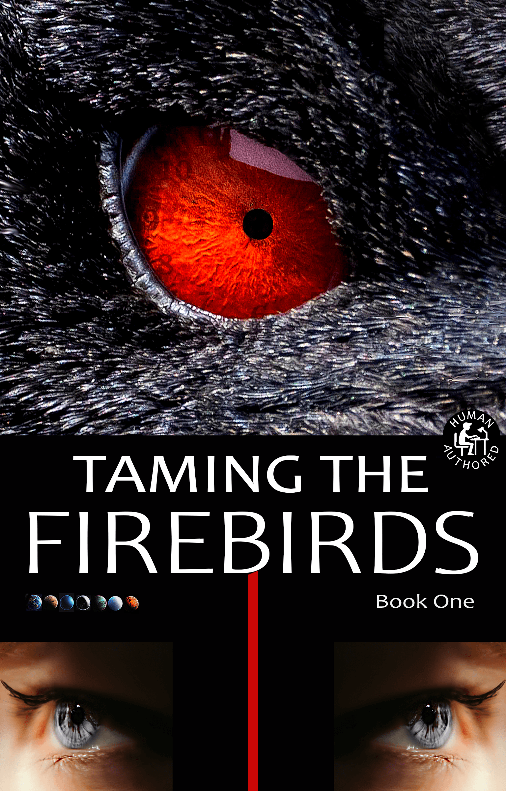
TAMING THE FIREBIRDS
Book One
Lech Mirsky
Every word here comes from my memory, I'm doing my best to tell you everything about the events I was so lucky to have witnessed there.
Copyright © 2026 by Lech Mirsky. All rights reserved. HUMAN AUTHORED.
WORLD ONE - EARTH
01 - THE RING
part one
In a gorgeous, modern city, two sisters, Rina and Nina, lived on the sixth floor of a white, glassy tower. The girls were twins, so strikingly alike that sometimes even their mother guessed wrong. That spring, Rina and Nina turned thirteen - "thirTEEN at last!" - was written on their birthday cake. Now it was summer, July rolling on, seventh grade behind them and endless vacation days ahead.
It was the third morning that a vague, round glow kept appearing in the sky along with the sun, a foggy scarlet circle flaring into life at a great height – an unblinking eye staring down at everyone from the clouds. People felt unsettled watching that “bleary gaze”, but so far, no one could explain what it actually was.
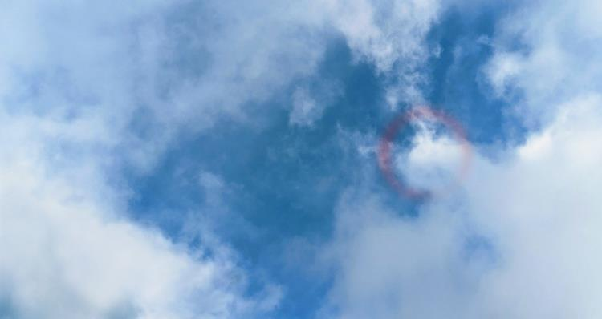
"Everybody on Instagram is arguing about whether it's aliens or a missile test gone wrong", Rina said looking up at the sky.
Nina laughed. "No, what missile? It's just angels getting married. But they messed up – they dropped the bride's ring and it rolled straight down here".
Since the sisters overslept (it was summer, after all), they scrapped their plans and went for a bike ride – first, all the way around the Field, then to the River, through Darnitsa, and back. Six miles total. Tired, the girls were resting on a bench near the daycare in the shade of a poplar tree.
“Look!” said Nina. “This silly Bik's in love with Lizka”.
In the corner of the bench, written in a white marker, was:
Liza + Bik
“Bik? That's Polensky”, Rina said confidently.
“No, Polensky is Brik, and Bik is probably the new guy”.
Nina picked up a tiny shard of glass from the ground, and with its sharp tip, scratched a heart right above the plus sign. It actually came out nice.
“There”. She grinned. “Now it's true love forever”.
“Forever. Until the staff repaints the bench”, experienced Rina corrected her little sister (twelve minutes younger).
At that moment, Igor, San, and Dan came over from the tennis court. Igor invited the girls to his birthday party, which would be on Saturday.
“We're not sure yet”, said Rina. “If we're still around and don't leave town, then we'll come”.
“Fine, I'll call you later”. Igor winked. Rina didn't catch the hint and shrugged.
“Totally. Just call us in a couple of days. In the morning”.
“Okay, I will”, Igor agreed.
As the boys left, Nina watched them go and said, “Honestly, I don't really feel like partying. It'll be a bunch of random people. And besides... you know”.
Rina said nothing, just raised her eyebrows...
They decided to play “Around Europe” – the famous race through four neighborhood blocks with the final sprint along the Waterfront. The girls jumped on their bikes.
“Two! One! Go!” Rina shouted, and they both shot forward – the pumped-up tires humming.
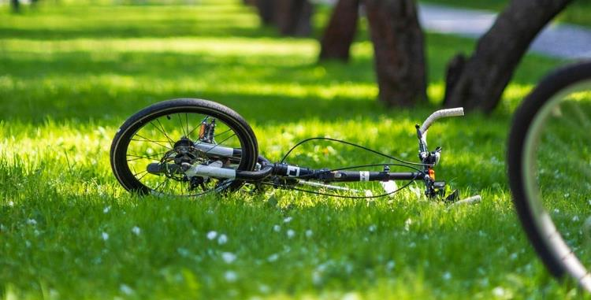
Soon Rina started to fall behind, but she had her secret weapon – the “Nitro-Pedal”, her own invention. Here's how it works: you pull yourself up, tense your body – then boom! – hit the pedals like mad. The front wheel lifts off, and the wind whistles in your ears.
The girls flew into the final courtyard. Nina was thrilled – beating her sister at “Around Europe” was a joy.
“Come on!” she cheered and turned to the left, almost tipping her bike over.
But at that instant their mother's voice rang out. They stopped and looked up – Mom was standing on the balcony, waving.
“Nee-na! Ree-na!”
Breathing heavily, the sisters glanced at each other. What happened? Why so soon? However, there was no choice – the race was terminated. Rolling toward the building, Rina called out:
“Right now?”
“Aunt Vera's here!” Mom replied, beaming.
They didn't expect it. Aunt Vera? From America? No way! As if Mom had heard their thoughts, she added:
“Yes! She's already here! Come on, we're waiting for you!”
The girls grabbed their bikes and dragged them up the stairs to the entrance, jostling past one another...
“Rina! Nina! Wow!” Aunt Vera gushed, hugging the girls – their cheeks burning from the race. “I can't believe it – how big you've gotten! If I saw you on the street, I would never recognize you”. She pulled back to spin them around. “Oh, wow, look at you two – so grown up, practically adults!”
Aunt Vera was Mom's cousin – six years younger, blue-eyed, always radiant – she was the heart of the family, the life of the party, and her party was every day. But three years ago she landed a job in Sweden, where, as her friend Valia put it, she “had a whirlwind marriage” with an American engineer. Soon after, they flew off to his beloved Alaska to work there for a gold mining company. Now she calls herself a ‘Cassedanian'. The girls tracked her down on Google Maps, imagining Cassedan as an icy town pierced here and there with golden shafts. In truth, it was...
“Girls, girls! I'm so happy to see you! But I'm only here for three days – I have to fly out on Thursday. I already got my tickets.”
“You always stay for three days. That's so short!”
“Business, girls. I'm flying to India with some papers to sign there, that sort of thing,” Aunt Vera smiled. “And then straight home, to the mine. You can't imagine how much work we've got there at the mine!”
“And it's still winter in Alaska?”
“What? Winter?” Aunt Vera laughed. “Of course not! It's been summer for weeks now, and it's going to get hot soon – just like in Odesa!”
The girls didn't believe her. What kind of Odesa could there possibly be at the edge of the world, three inches from the North Pole? At least on the map…
As always, Aunt Vera brought all sorts of stuff, including Alaskan gifts. “The northernmost souvenirs”, she called them. Rina got a cute belt woven from colorful leather strips and a scarf of impossible softness. Nina got a scarf just like Rina's, only with a different border pattern, and a pair of magically beautiful reindeer-fur mittens with red leather cords and scarlet embroidery on the backs – big snowflakes.
Mom was setting the table. Her favorite cousin's visit was a big event – they hadn't seen each other in more than nine months. The girls barely had time to stow their bikes when Mom came over and said:
“Nina, we're out of bread. Go to the store, please”. And she took some cash out of the cupboard. “Get that barley loaf, or if they have the rye baguette, get that too. And lavash. Oh, and four pastries, of course, any kind you like”.
“Should I ride my bike?”
“No, what bike? How will you carry the pastries?”
Nina sighed – she was stuck walking it.
“And don't linger, try to be quick – lunch is ready”, Mom added as Nina stepped toward the corridor.
“Linger? Where would I even?” Nina thought, shrugging.
And really, where? It was five, well, maybe six minutes to the store across the Field. Nowhere to stop.
She paused for a second and grabbed her new Alaskan mittens – just wanted to take a closer look. The fur shone platinum, like something truly precious. And the embroidery was insane – the finest threads were packed so densely, so artfully. Nina imagined an Inuit grandmother bent over her needlework, patiently stitching carmine silk, while the long polar night was stretching beyond the tiny window.
Dashing out of the tower, Nina ran straight into her classmate Lida Babich – a dark-haired, small-framed girl who had recently moved from the Right Bank of the River and whom her teacher, Zinaida Abramovna, had once dubbed a “hopelessly good student”. That weird label stuck to poor Lida, and now everyone called her ‘Hopeless'. Lida was offended, especially since no one in class ever figured out what Zinaida Abramovna actually meant.
“Hi!” Lida greeted, waving to Nina.
“Hi!”
“Where are you going? Out for a walk?”
“No, I already went out. They sent me to the store. For pastries”.
“Pastries?”
“Yeah. My aunt came to visit. From America”.
“America?” Lida repeated.
She always repeated – a little trick to buy some thinking time.
“Yes, America. Alaska. Can you believe – it's still winter there!” Nina lied on impulse.
“Winter?” Lida repeated with surprise and looked around.
“She gave me this!” Nina took out the mittens.
Lida raised her eyebrows even higher.
“Let me see!”
Nina handed over the mittens with obvious pride.
“Handmade! Arctic craft! National art!” she commented in a TV voice as Lida quick-stepped along beside her, staring with admiration. In the summer sun, the reindeer fur sparkled, shimmering like fresh frost.
“This is as far as I'm going”, Lida declared abruptly, handing back the mittens. “Just so you know, I'm waiting for my dad, we're going to Maidan for something”.
“All right then, see you”, said Nina casually.
“Bye. Do you guys have a summer house?”
“Of course we do”.
“And you're going too?”
Nina shrugged.
“Maybe. It all depends on Mom, on her work”.
“Same here – depends on my mom too”, Lida sighed. “Well, I'm off. Bye. See you tomorrow”.
“See you”.
Nina stuffed the mittens into her pocket, looked up at the glowing red circle still hanging in the sky – the ‘bride's ring', she thought with a smirk – and strode along the wide asphalt path in the direction of the Field.
The ‘Field' – once an overgrown mess of briars – was now a flat, empty lot. The city wanted to build something there, but later they changed their minds – the project froze, workers left, trenches were filled in, and soon the place became a hangout for everyone – first kids, then paid dog walkers and their countless pets.
A dirt track, beaten down by thousands of footsteps, led from Nina's house through the Field directly to the grocery store. In dry weather, it was the shortest way. But after a good rain, the clay trail was hard to get through.
Nina entered the store – not many people, no wait at the checkout. She put bread and lavash in the basket, picked out pastries – two big jelly rolls and a couple of plump cherry turnovers – then with the change snagged a piece of “Love is...” gum. And headed back.
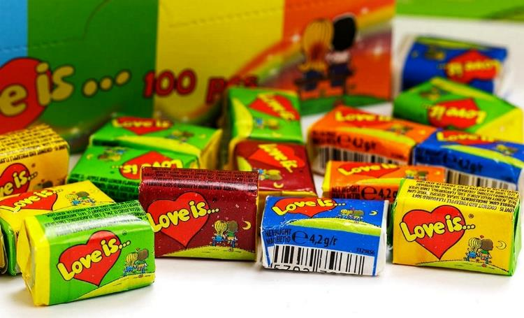
While she was in the store, a bunch of boys had run out onto the Field. Most of them were unfamiliar. Except for Jack Edwards, known as Sir-Jock. He really was a “Jock” – he was in a horseback riding club, and a “Sir” – his dad was English. Jack grinned happily and waved, Nina waved back.
Almost in the middle of the Field ran a long mound carpeted in thick weeds. There was probably a large pipe underneath – a leftover from the construction, but no one knew for sure – everyone was used to it, a pipe is a pipe. Nina scrambled to the top and looked around. The field and surroundings opened up before her: people, cars, dogs, boys, the store, the bus stop.
Out of nowhere, a strong wind struck, sharp gusts battering her. She was about to run down, but at that moment, a sudden swirl kicked up a wave of stinging sand right into her face. Nina shielded her eyes. The wind raged, whipping her hair. Then something huge exploded – a bone-shaking blast jolted the ground, a clattering echo rang off the buildings.
Nina glanced skyward, and her blood turned to ice – hanging right above, huge hellish flares rolled out in heavy, red billows, as if someone had unleashed an immense eruption of fire in the air. But it didn't rise – it reached greedily toward her. The blaze roared in the frenzied gale, scorching her face. Nina was barely breathing, staring into the infernal flames.
Suddenly, three enormous black birds burst from the fire. Nina screamed. The nightmarish, squalling harpies dove at her. The two most hideous ones seized her with long claws, yanked her upward with savage hatred, tearing her from the ground.
She let out a shrill, desperate screech, flailing her arms, but it was too late – the birds were dragging her into the flames. Nina blacked out, came to the next instant, opened her eyes: terror and pain, heat and thunder! No air! Claws dug into her shoulders. The birds hauled her higher and higher, surrounded by a dazzling, burning hurricane.
A moment later, the fire dissolved in the air and vanished. Nothing was in the sky, just a lazy herd of shaggy clouds – not a trace of the explosion, nor a hint of the red ring. The wind died down, a ginger dust settled gently onto the grass. Two speckled dogs ran right over the spot where Nina had just stood. People walked, rosy-cheeked toddlers chased one another. Nobody noticed anything – no wind, no fire, no monstrous birds. Nothing.
Meanwhile, the table had long been set. Vera and Mama were in the kitchen, discussing the news, gossiping and giggling. Rina rummaged in her wardrobe. Minutes ticked by.
Finally, glancing at the clock yet again, Mama called out:
“Rina! Please go to the yard and check. Maybe Nina's chatting with her friends somewhere – call her”.
“All right”, Rina replied. “I'll call. In a sec”.
Hastily tossing things back into the wardrobe, she grabbed her sneakers, slipped them on, and darted from home. On the ground floor, jumping out of the elevator, she stepped outside. The yard was empty: no girls, no familiar faces, hardly any people at all – just some little kids with their parents, and two unknown guys shouting across the lawn, clumsily trying to play tennis on the court.
“Sketchy. Where could she be?”
Even though everything around looked normal – just an ordinary sunny day – Rina suddenly felt a strong, undefined unease pressing down on her, as if something harsh was about to happen.
She walked along the black asphalt path, wet from the caretaker's hose. As she turned the corner, she noticed her classmate Lida sitting on a bench.
“Hey!” Rina said. “How's it going? Just relaxing?”
“Hi! Yeah, just sitting, as you can see. Waiting for my dad – we're going to Maidan”. Lida shielded her eyes from the sun. “I'm alone. Everyone's gone somewhere, and there's no one to hang out with. And you?”
“I'm looking for my sister. She ran to the store and hasn't been back for half an hour. Maybe she stopped by a friend's”.
“No”, Lida said. “I saw her”.
“When?”
“Not long ago, I don't really remember”.
“Where did you see her?”
“Over there”. Lida nodded toward the Field. “She was going to the store, for pastries, and showed me the mittens, you know, made of reindeer”.
Saying a quick goodbye to Lida, Rina hurried toward the Field.
“Well, maybe there's a line in the grocery store”, she thought.
In truth, she already knew it wasn't about lines. Paying no attention to anyone, she ran across the Field, ignoring the trail.
She flew up the steps and stopped in the middle of the store: a few customers along the shelves, two chatting, three at the register, and the janitor mopping the tile floor.
Rina stepped outside onto the porch. Now what? She tried to recall everything Nina had said. Could she have decided to go off somewhere? But why? Or perhaps she really had gone to someone's place for a minute and lost track of time?
No, Nina never behaved like that – she was always disciplined, and, unlike Rina, extremely cautious. If anything ever went wrong at home – any mishap or trouble – it usually happened to Rina. Since preschool, Nina had been known as the quiet one, a typical “rule-follower”. Somehow, Rina was the one who attracted problems. Mom would say Nina took after Dad, and Rina after Grandma.
But those thoughts didn't help. Rina stood there for a second, then hurried back toward home.
Passing a group of sweaty boys playing volleyball, she spotted Sir-Jock. He said something, but she didn't catch a word – just gave him a distracted nod in return.
The path led over the long mound. Rina climbed up and gasped – there, on the dusty trail, lay a scarlet cord from one of the reindeer mittens, glossy like a little snake. Rina grabbed it. In the sunlight, the string looked different – too bright, maybe – but no, it was the very same one.
Fear struck her. Nina! Something had happened. Something evil. A freezing terror washed over Rina's heart. To keep from bursting into tears, she ran down the path, leaping over drying puddles. She flew into the tower, reached her floor, sprang from the elevator, and rushed along the corridor. She stopped near the entrance and stayed there for a minute or two, trying to steady herself somehow, not wanting to look panicked. Then, exhaling deeply, she opened the door and stepped into the apartment.
Seeing the cord, Aunt Vera turned pale.
“Where's Nina?”
Rina didn't answer. Of course, she had some explanations ready – like maybe Nina had gone to the Oscar Café for her favorite pineapple pastries, or even run to ChaiCof or something like that – but looking at her aunt's rattled face, she felt just as scared and now stood there silently, holding the cord in her hand.
Mother came out, glanced, and understood everything. She tried to speak, but her throat closed up. Without knowing why, Rina felt kind of guilty.
“I didn't see her”, she said. “I found this in the Field”.
It was hard to recognize Mom – in half a minute, she became eight years older. Silently, she turned, went back to her room, and started changing her clothes, tugging at her stubborn blouse, getting tangled in the sleeves.
“Lida talked to her”, Rina added loudly. Mom rushed back in – eyes huge, face drained of color.
“Half an hour ago”, Rina continued, “when Nina was heading to the store. She showed her the mittens”.
“And the store?” Mom nearly yelled. “Did you go to the store?”
“Of course I did!” Rina shouted back. “I went everywhere! I searched around the whole building – twice! She's just gone!”
“Okay. Got it. It's been an hour”, Mom muttered, struggling into her shoes. “An hour. Almost an hour”.
“I'm coming with you”, Aunt Vera said and also began putting on her shoes.
“Me too”. Rina reached for her purse.
“No!” Mom's shout made them all flinch. “You stay home! In case she comes back! Call my phone”.
Mom and Aunt Vera left.
Rina ran to the balcony, stood there for some time, then hurried into Mom's bedroom, and after digging through the drawers, pulled out Dad's marine binoculars. Through the optics, she scanned the entire yard – every corner, every tree. She scrutinized the faces of passengers getting off the bus, looked for her sister among the smiling moms at the daycare, inspected the roofs and entrances of the neighboring buildings, and studied everything that moved. Even the clouds.
But then, a bit dizzy from peering through thick lenses for too long, she went to the kitchen, put a full kettle of water on the stove, and turned on the burner. Never even knowing why...
01 – THE RING
part two
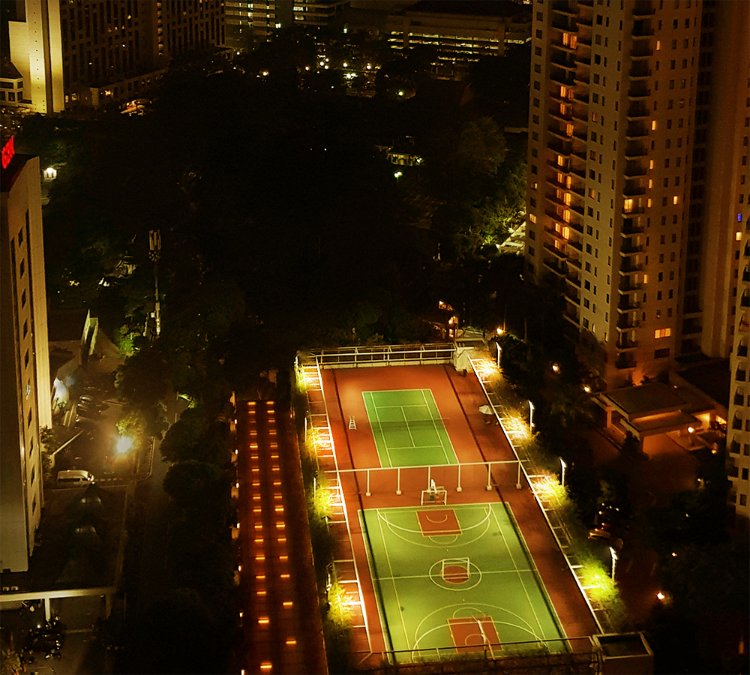
Two hours passed. Nobody called, nobody sent a message. Rina was drifting from room to room, checking her phone for the twentieth time, stepping out onto the stairwell landing, peeking through all the windows and from the balcony, then drifting again. The clock was cruel – the seconds felt like sticky gum, the sluggish minutes dragged on: three-oh-five... three-oh-six... three-oh-seven.
Eventually, she couldn't take it anymore and decided to go down into the open. Not even the open exactly – just to stand by the entrance, out in the air, among people. That would feel better.
She went to her room, pulled out her jacket, but at that moment, the door lock clicked. Rina lunged into the hallway, nearly knocking over Aunt Vera. From the look on her aunt's face, it was clear – Nina was nowhere.
Mom and Vera, breathing heavily, both shaken, defeated, with ashen faces.
“We searched everywhere”, Aunt Vera announced as soon as she stepped inside. “First, these four yards and everything around. Asked everyone. The clerks at the store don't remember anything. Then we went all along the Boulevard to the metro and down toward the River, both sides. We checked every shop and all the cafés, even the bakeries and the candy stores – everything”.
“All right, that's it! I'm calling the police”, Mom declared, and without even taking off her shoes, she went into the living room, pulled out her phone, and dialed. She stood there waiting for about a minute that felt like an hour before someone replied and started listening. Mom spoke nervously, mumbling, coughing, and stuttering, biting her dry lips. Rina and Aunt Vera stood silently nearby.
“They say they are coming, told me to wait”, Mom muttered. She tapped the hang-up button and collapsed into a chair.
The police arrived quickly, in less than twenty minutes: a tall, young man about twenty-five with a black briefcase in his hand, and two uniformed officers – one thin with glasses, the other broad-shouldered, heavy, and smiling.
“Detective Torensky”. The young man showed his police ID. “Missing Persons Division”.
And right then, Mother, who'd been holding herself together all day, couldn't stand it any longer and broke down in tears...
Torensky asked protocol questions, took notes, examined the leather cord, studied Nina's photos. Then he pulled a long green paper form out of the briefcase and carefully filled it out in neat handwriting. The two police officers took breaks in the hallway to smoke, came back in, and left again. Finally, after packing the form, the cord, and the photos, the inspector turned to the broad-shouldered one.
“Too late to survey the yard? Your opinion.”
The officer shrugged. “Well, why not? We can take a look”.
Two minutes later, they all walked toward the Field.
“I've already checked every bush around – there's nothing”, Mom said, barely keeping up with Torensky.
“Maybe we should use a dog?” Aunt Vera suggested. The detective gave her a disdainful look. After that, Vera walked behind him in silence.
They reached the Field and climbed the mound. Torensky crouched, touched the dry, yellowed grass, then nodded for the second policeman to come over. The officer leaned down. Torensky whispered something to him, the cop turned around and walked back toward the buildings.
“All right,” said the inspector, brushing flower pollen from his trousers. “We'll now proceed to bother your friend Lidiya. She's a witness, her statement is needed for the search and record.”
Rina sighed. “You'll see she won't say anything new. It'll be the same as before”.
“Well, that is your perspective”. He straightened his black tie. “I view the matter differently”. He suddenly asked, “When did it rain here last – Saturday?”
“Yesterday evening, Saturday, yes”, Mom confirmed.
“Precisely”, he said and stepped down from the mound, walking along the trail. Everyone followed.
As expected, Lida could not remember anything special, she just repeated what she had told Rina. Her parents didn't understand what was going on and asked Mom worried questions, but from her answers, they gathered only one thing – Nina went to the store and never came back.
“Oh God, oh God”, Lida's mom murmured. “They kidnapped the girl!”
“On what grounds do you believe she was kidnapped?” the inspector asked instantly.
Lida's mom was taken aback. “No. I don't know. I just thought... well, if she disappeared, then... maybe... it means she was... abducted”.
“There are creeps like that”, another woman added. “They lure people, trick them, and take them away”.
The detective grunted something and stepped aside. Soon the second cop returned, looked at his boss, and shook his head.
Ten minutes later, the police left. Torensky promised to call the moment there was “any significant new information” – his words – and asked Mom to come to Room 26 at nine in the morning. After seeing the police off, Rina, Mom, and Vera trudged back home. Without a word, they took the elevator, entered the seemingly cold, hollow apartment.
All three sat in the living room, avoiding each other's eyes – deep down they felt somehow responsible for what had happened. Several times Rina attempted to offer the soothing words she had prepared, but looking at her mom's slumped shoulders, she only stared at the floor with a mournful cold in her heart.
“This just doesn't happen!” Aunt Vera suddenly said. “People don't vanish like this!”
“Like what?” Mom asked wearily.
“Just like that, without the slightest trace!” Aunt Vera exclaimed. “People run away from home, true. Teenagers run. Sure, sometimes they do. Fine! But before that, they pack some things, right? They take money, documents – I don't know – they buy tickets, at least”.
“Nina didn't run away!” Rina objected. “Why would she want to run from us?”
“I'm not saying that, I'm just trying to figure things out”.
“Nina was kidnapped”, Mother said quietly.
“By whom? Come on, tell me, cuz, who would take her? Were you being followed? Do you have enemies here? Or maybe you suspect someone?”
Mother shook her head.
“I don't suspect anyone. But it's obvious. Can't you see?”
“Exactly, I don't see, I don't understand a damn thing!” Aunt Vera threw up her hands. “Who kidnaps kids anymore?”
Mom began to reply, but Aunt Vera cut her off.
“All right, all right! Yes, kidnapping happens, I know! For a fat ransom, mostly. But why take Nina? For what? A ransom? Ha! Are you rich or something? A millionaire?”
“A millionaire...” Mother whispered.
“Then explain to me, please, why would anyone kidnap her?”
“What if they mistook her for someone?” Rina suggested. “Maybe they were after some banker's niece, and Nina just looks like her”.
“Nina looks like you, not anyone else”, said Mom.
Everyone fell silent.
“I don't like that inspector”, Aunt Vera stated after a long pause. “No, seriously, is this what they call an investigation?”
“He's a professional”, Mother said barely audibly. “Anyway, we have nobody else to count on”.
“What do you mean nobody else? We have ourselves to count on! I just haven't come up with what we can do yet...”
The next three hours plodded past like a coma. Mom felt sick, took a heart pill and two sedatives. Vera had a hard time getting her into bed.
“Lie down, please rest, it'll help soon, you'll feel better”, she insisted.
Vera and Rina started calling around – they called everyone they knew, many classmates, all the people who could have seen Nina somewhere today. But for now they decided not to disturb the relatives. Too early, better to wait, not everything was lost, maybe Nina would be found – hope had not completely gone out yet, hope remained, but it was fading by the hour. Finally, the list of contacts ended, there was no one left to call.
Mom fell asleep. Sunset was quietly approaching the city.
Vera and Rina sat in the kitchen for a long time, talking about the investigation, the phone calls, Nina. But mostly they just sat there saying nothing. Vera got hungry and said the last time she'd eaten anything was in the morning, on the plane. She rummaged through the fridge and piled a small mound of tomato salad and something baked – a carrot cake – onto her plate. Rina didn't feel like eating. But neither the calls, nor the salad, nor even the talk – nothing helped them relax. The tension was draining the soul, sapping strength from the body. Another hour passed in waiting and silent panic...
Suddenly Mom came out of the bedroom and declared:
“I'll call the inspector”, but she could barely stand – one hand against the wall. Rina brought her the phone.
Mother tried to dial, her fingers wouldn't obey. Aunt Vera took the phone and, looking at the detective's business card, tapped the number herself. Fortunately, he answered right away. He said he was still at the station despite the late hour, but the call didn't help much. The inspector switched to a formal tone and kept repeating the same lines: we're looking, we'll be searching, we will, we will, and offered clumsy reassurance with standard, meaningless words.
However, he also had some really encouraging news. “Currently, no fatalities have been reported”, he said, adding that no one matching Nina's photo was registered in the city's hospitals. Also, no thirteen-year-old girl had been brought to any of the police stations or the morgue. Still, somehow Mother, Rina, and her aunt knew Nina was safe without the inspector's note. Of course they were relieved to hear the detective say it, but they had no doubt that Nina was alive and well. She had just been kidnapped. That was the horror of it.
Rina was exhausted. Worry, anxiety, the unbearable wait for the worst news, the tension and grim thoughts – this long, wicked day had mercilessly worn her, dried up her spirit, and left her utterly spent. Time crawled heavily around the house, like an old bear lumbering around its den. Finally, Rina's desk clock beeped midnight.
“Rina, you should get some rest. It's late”, her mother said.
“I don't want to. What if the police call?”
“If they do, we'll wake you up”, the aunt assured her.
Rina was truly fading, her head buzzed, her temples throbbed.
“You'll really wake me if anything happens?” she asked, looking into her aunt's deep blue eyes.
“I promise!” Aunt Vera said firmly. “Have I ever lied to you?”
Rina did not say “good night”, she just couldn't voice it – nothing “good” was around. And she was thirsty. An ice-cold Sprite from the fridge was exactly the thing – she drank until she couldn't bear the pain in her teeth. Turning off the kitchen light, she walked over to the window, stood there, thinking and staring into the nighttime playground. Eight big yellow lamps cast harsh, solid-looking circles at the edge of the sports zone. A tall stranger in a white hat cut through one of the cones of light, leading a large brown dog on a leash.
She walked into her room and sank wearily onto the armchair. Beside her was her sister's half of the place – neat, cold, and empty. From Nina's pillow, a cheerful blue parrot – embroidered by their grandmother last Christmas – looked out mischievously. For some reason, Nina had named him Zeerik – a little zero. It seemed like the parrot was winking, as if to say, “Chill out, sis, we'll make it!” Rina sighed. Her throat tightened – blurred vision, tears welling in her eyes – she sat there quietly, weeping.
Rina didn't sleep in her bed. She decided to spend the night in that same armchair – fully dressed, shoes on, ready to jump up and rush off wherever it was needed.
But at some point, the ocean waves grew unnaturally loud, and a white seagull, pacing along the water's edge, was startled by the noise and squawked:
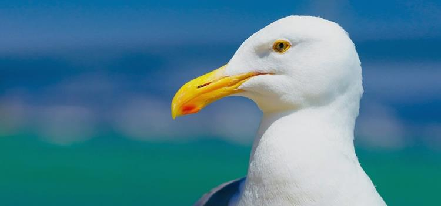
“Chree! Chree-ree!”
Rina opened her eyes, looked at the seagull, and thought, “What does she want? Where is she calling me?”
It was a dream – strange and unrelated to the day's events. In this vision, Rina sat on the pleasantly warm sand of a long, wide, gently sloping beach and gazed at the slowly rising tide of the endless turquoise sea. She watched the large white seagull scurrying comically on thin legs through the shallow water.
Suddenly, the bird took flight and hovered in the wind high above Rina's head in a deep, crystal-clear, yet somehow an emerald-green sky.
02 – HERX AND YUNNI
part one
Suddenly someone shouted from behind:
“Endlich! Finally! Thank heavens, you've been found!”
Startled, Rina turned and saw a stranger approaching quickly – an unusually tall elderly man with a short gray beard. The old man walked barefoot on the sand, wearing an expensive black tailcoat, like a pianist or an orchestra conductor. His trousers were fastened with a wide iron belt stained with rust. A sword, ancient-looking and possibly silver, hung from his belt.
Rina stared at the man, at the sword, but didn't react – after all, it was just a dream, although an extremely lifelike one.
“At my age, running along the beaches?” The old man shook his head. “You know... I'm telling you, it's not funny... But as you can see, I'm lucky. You haven't shifted too far. Luckily for you...” He stopped, looked around, peered up at the thin palm trees overhanging the shore, and said, “No, this place is no good. We'd better leave. We'll fly to yours”. He nodded toward the sea. “You don't mind, I hope?”
Without waiting for an answer, he closed his eyes tight, as if a bright lamp had been directed in his face. Rina woke up. Her leg ached from sleeping in an awkward position. She looked, and... screamed! Right there, by the window, leaning on the sill, stood that same elderly man, sternly frowning and watching her. Next to him, motionless like a figurine, was a strange boy of about ten with his eyes shut – his face painted light blue as if for a circus performance or, rather, a masquerade.
Through the airy, mesh curtains, moonlight filled the room with an orange glow. Silence blanketed the world – not a rustle, not a sound. The wall clock read 00:29.
Rina cautiously rose from the chair, straightened up, and shook her head, yet neither the old man nor the boy vanished.
“Hey, don't be afraid”, the old man said amiably and smiled. “Everything's normal, everything's fine”.
“But you... how did... how did you... get here?” Rina stammered, trying to articulate her shock. The man placed a finger to his lips.
“No, better say nothing. I'll explain it all myself. But not here. See, I've miscalculated again. An apartment, especially this late” – he glanced around – “it's, frankly, not a suitable setting for important talks”.
He squeezed his eyes shut.
The floor shifted sideways. Rina lost her balance and almost fell to the ground, she reached out for the chair but grasped only air. The old man and the boy stood before her in the middle of the Field. Around them – dark night, black grass, young, baby fir trees here and there, and sparse barberry bushes in the distance. She quickly looked at the surrounding buildings, the meadow, the trees, but saw no visible danger – the windows shimmered in the moonlight a hundred yards away, the embankment where the silk cord was found, glinted on the right.
“I think this clearing is sufficient, at least till dawn”, the old man said authoritatively, surveying the Field. “What do you think?”
She didn't reply. Hard to believe, but after the man's calm, regular words, her fear had dissolved almost completely. The dream receded too, mostly, though it hadn't faded altogether – Rina's mind was still clouded as if by a woolly haze.
However, this reality did not look like one of her nightly visions – it seemed that after all the strain and problems of the past day, Rina's emotions were blunted and nothing in this surreal scene could faze her – she just watched silently, waiting for the world's next move.
“My name is Herx”, the barefoot ‘pianist-conductor' finally introduced himself. “My full name is Herkir Esen Wo Terr Deuv, that is, ‘Strong Hand Holding the White Sword'. Since I'm your friend, you may call me Herx. I've long been used to this nickname”. He offered a guilty smile.
Rina remained quiet, the old man waited for a moment, coughed timidly, and added, “We need to talk about urgent and significant matters. I mean, about you and your future, basically. I hope you don't mind. You don't, right?”
She shook her head no.
“Very well”. Herx scratched his nose. “And here – meet my aneinn. In your terms, you might call him a student. His name is Yunni”.
The blue-faced boy opened his eyes. Rina had never seen anything similar – his huge cat-like eyes emitted a thin glow that somehow penetrated deep into her mind. She sensed it clearly – the boy could read everything in her memory and feelings. The air around her turned cold, she realized there was an immense, inhuman power in this little boy. A moment later his eyes drifted shut, and there on the meadow, bathed in the sharp moonlight, he stood as motionless as before, as if time-stopped – now resembling a vintage wooden doll.
“Okay. Listen to me carefully, girl, and don't get distracted”. Herx made a long pause. “I'll tell you what happened to Nina”.
“What happened to Nina?!” Rina screamed, snapping fully awake. The old man winced.
“Quiet! Why so loud?” He looked around warily. “We don't need attention, you know?” After another tense pause, he added, “Hey, let's sit down, eh? I was running so much today, you won't believe it, my legs are throbbing as if beaten by the guards”.
He made himself comfortable right on the grass.
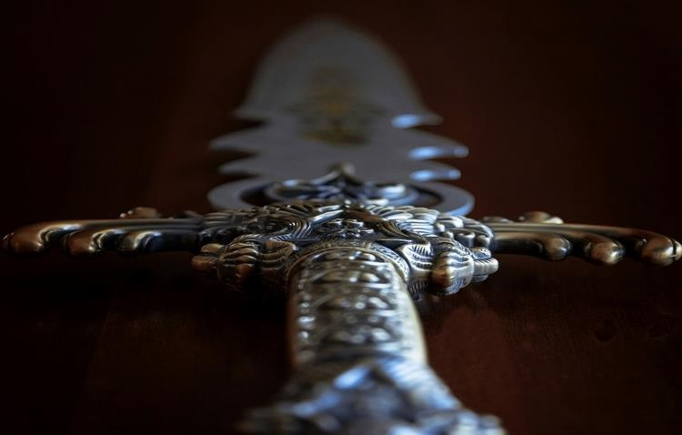
Well, not exactly – he didn't just plop down. He was leaning either on his hand or on his sword, which he used as a staff, lowering himself slowly and unsteadily, grunting all the time, his knees trembling. But eventually he settled.
Rina thought for a moment and decided to sit down too, across from the man. The grass was cold, unpleasantly stiff, but dry – night dew hadn't yet fallen. The boy Yunni didn't move, standing still and composed, seemingly not even breathing.
“We know. Everything. About. Your. Sister”, the old man said, punctuating each word. Rina stared at his face without blinking, trying to catch every sound. “Don't worry, she's all right – you could say she's entirely fine. At least we know she's alive and absolutely unharmed”.
“Where is she?”
“Faaaar away”, the old man drawled and waved his hand. “Already far... But nothing is lost yet. We'll be able to help her”.
“Nina was kidnapped? How? Who took her? For what? For ransom? No? Then why?” Rina felt ready to yell, cry, demand, beg – anything. Dozens of panicking questions surged up through her emotions and blinked back tears, but above all, she needed to know where exactly her sister was. And how to get her back home. At least, she wanted to understand what had happened in every detail. She waited for the absolute truth.
“Here's how it is, let's go in order”, began the old man. “I sought you out for that very reason – to tell you the truth. But first, calm yourself. I see how hard this is for you. Please believe me, we know your sister really does feel – so to speak – normal. No, of course she was terribly frightened – who wouldn't be – but now, this minute, she's okay. I'm sure someone has already explained the situation to her. In any case, she will be treated accordingly and with great skradzhinda”.
“What?” Rina didn't get it.
“What ‘what'?” The old man's bushy brows bounced up.
“You said skrad... skra dzhi...”
“Ah! Sorry, I meant to say she'll be treated with high respect. Well, that is, like a foreign princess or something like that... You know, sometimes I confuse your language with Inhestian – very similar languages! At my age, ancient tongues are always hard, you see? ... So, yes, your sister was kidnapped, you are right about that, but not by gangsters, not for ransom, and no harm will come to her. Don't worry unnecessarily – no one will hurt her. As you say here, not a hair from her head will be touched... or the like... I don't recall exactly. Because he needs her”.
“Who needs her?”
“He, who else?” exclaimed Herx. “The Fireking!”
Rina felt her thoughts tangling into a knot of confusion. All day long she had imagined kidnappers as rough, cruel men in dark glasses and black shirts. Whatever the case, the criminal must look criminal – like in the movies. Well, in reality, everything is different, but reality has no kings! Especially kings of fire. Nonsense! Gibberish!
If not for that doll-like, blue-faced boy, and for the silver sword stuck point-first in the grass – she could touch it with her finger – and if not for the barefoot old man in a tailcoat, and for the dazzling moon above, and the obstinate mosquito trying to land on her forehead – in short, if not for reality, Rina would have been certain it was just an absurd joke of her exhausted imagination. Or a high fever, perhaps. But in fact, she wanted to believe it was a dream – a fancy piece of her sleep, that's it!
The old man stared into her face.
“No, this is not a dream”, he said a bit reprovingly. “And not your fever... Well, I do understand – you lack experience. But what's done is over, nothing can be changed. Too late. It's not a dream, it's life. Your life! And your sister is beyond our reach, true, she's in the distant realm of the Fireking. That is as clear as this moon, believe it or not – up to you”.
“But where is that realm? In which country? In Europe? Tell me! Please!” Rina tried to make sense of the chaos and find at least the right word – a small foothold in all this mess.
“Oh, I wouldn't call it a country yet. Yes, they've formed a kingdom somehow, and they built it without water. Amazing! But everything is incomplete there, even the planet.” Herx shook his head. “That broken world is beyond explanation, it's a pure jilinda, you see?”
Rina didn't know what “jilinda” was but decided not to ask. Herx stared intently at the moon and said:
“Their civilization is pre-industrial, much like the Earth four hundred years ago. Horses – the only power. But they have some great inventions – their food sources are much better than yours. ... Okay, we'll discuss it later. First, we need to save your sister, and I'm ready to help. I'll support you. Not personally, though. You see, the Universe is strictly bordered. Here, within the Circle, I have no right to interfere in alien life, even by talking or thinking. It's prohibited. But your case is different – you are the victim's sister – you have the privilege to do anything you wish there”.
“Who are you?” Rina suddenly asked.
“Me?!” The old man's eyes seemed to triple in size. “Is it still unclear? I'm a wizard, as you call it. Or a mage, magus, sorcerer, charmer, spellbinder, enchanter... uh... warlock. What else? Ah, that... shaman. You have so many funny words. But we prefer magasther – it's more professional”.
Rina briefly thought the old man might be a little psycho. Maybe he even escaped from a special institution, who knows? But then, how to explain the split second jump from a dream ocean shore to her apartment? And from the house to the wasteland?
“No, no, you're wrong”. Herx wagged his finger. “I'm not a loon. I'm old, that's true. You can't fix it – years don't wait, you know. I've certainly forgotten much, and I might not speak as I should, not as you're used to hearing, right? But I haven't lost my mind yet, no, don't even think that”.
“You read my thoughts”, she said confidently, but this miracle didn't surprise her.
“Yes, I do, so what?” The old man shrugged. “You don't like someone invading your mind. Sorry, who would? But I can't help it. I'd be glad not to hear everything, but how? Well, I told you, I'm a wizard, a sort of, but you don't believe me”. He made a sour face. “Okay, seriously speaking...” The old man raised his hands as if to pray, then lowered them in despondency. “No, I have no clue how to explain it. You people don't have proper words for things like that, you haven't even invented the words”.
He tapped his finger on his sword and continued:
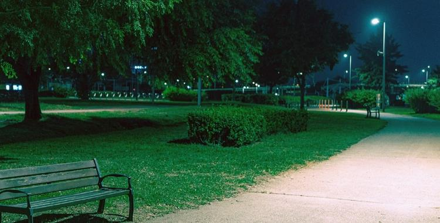
“Listen, girl, if you were from another layer, I might be offended and would just go away, ending our business once and for all, but you're a human – a subjective being – so your distrust is natural. I know your history – humans never trust each other”. He giggled. “You are a civilization of great doubts. But your suspicion and disbelief can at some point hinder the entire project. To guarantee our success, we must work in sync, you kshar? There must be no misunderstanding between us. No doubts! Am I speaking clearly?”
Rina nodded. He looked at the moon again, rather concerned.
“All right, you've convinced me. If it's really that bad, then we have no choice – let me try to dispel your doubts some other way. I think having something definite will be useful and won't take much time. The main thing is – don't be afraid. You will be okay in any case”.
Herx took a deep breath, shut his eyes, and at that very moment dense snow began falling from the sky – literally pouring, millions of big, cold flakes, each the size of an apple. Rina watched, eyes wide, but couldn't endure it – she jumped up from the grass. In less than a minute, the snowfall covered the entire Field in a thick, sparkling carpet up to Rina's ankles.
The old man remained seated, unmoving. Now coated in growing snow layers, he looked like a thawing spring snowman, though still scrutinizing Rina closely and smiling rather slyly. Then he shut his eyes again. The snow immediately turned gray, rapidly faded, dissolved, and evaporated within a few heartbeats.
Something began thumping loudly behind her. She turned around and saw three large red kangaroos busily hopping across the grass. The kangaroos leaped past barely three yards away, and soon disappeared into the thickets.
Right after the rust-colored Australian trio, about sixty paces away from Rina, something metallic, angular, and monstrous began growing noisily from the trembling ground with creaks and scrapes – massive beams, trusses, grates, and antennae, all with thick rivets. Hundreds of tons of interwoven iron tore through the dirt, crawling out and rising higher and higher into the air.
“The Eiffel Tower is being born”, Herx remarked in a pleased tone. “Want me to pull it out now, the whole thing?”
“No, please don't!” she replied in horror.
“All right, as you say”. The tower started melting. Heavy chunks, like warm chocolate, were falling into the bottomless hole in the torn ground, and a couple of minutes later, no trace of the unfinished steel structure remained.
“Well, let's consider that enough for today. Now tell me, do you at least believe that I truly am a magasther?”
“I believe you”, Rina echoed.
“And do you also understand that you're not asleep and everything around you is real, or do you still doubt it?”
“I believe that too”.
She paused, thought for a moment, and then sat before Herx.
“Wonderful!” he said, rubbing his hands. “Then we may continue”.
And Herx told her everything. He poured out a massive flood of facts and details, from which Rina retained only scattered bits and caught some fragments here and there; besides, the old man was animated so much that occasionally he slipped words and entire phrases in different languages – too hard to understand. But twelve minutes later he paused, whispered something, and said:
“Okay, let's summarize it”. He clapped his hands. “Now you know how the Circle was formed, there are seven neighboring worlds in it, and the first one is right here, we are sitting on the ground, on the planet Earth, so we call Earth number one. The World of Sands is two, the Ocean World is three. Then quite near it – the World of Clouds. We'll mark it as number four. Did you follow the count?”
Rina nodded.
“There we are! It's a useful thing knowing the right number of the world!” The old man gestured, his beard disheveled. “Next comes the World of Butterflies – that's five, and then one step farther – the World of Snows. Number six. And from there, keselan to the World of Fire – final stop, we've arrived. Even if the stop is not final – it doesn't matter, your sister is there, in the Fire World, and we don't need to go farther. That's it! Done, as you might say”.
He looked into Rina's face attentively and added:
“You should know that living planets are extremely rare. Why? Because the sun must be similar to yours, the planet too, with the same distance from its star. And it must have a huge moon, and one or two enormous partners like Jupiter or Saturn. Otherwise, even if it has water and an atmosphere rich in oxygen – it's still useless. Life needs all those conditions and countless others. That's why living worlds are so scarce. I hope you understand. Any questions?”
After a quick thought she asked, “Yes, a question. I still don't get it – why did they kidnap my sister? Those... snatchers... from the World of Fire”.
“Oh, they're not just ‘snatchers', but the King's best aides, his most trusted and closest people... well, not exactly people... birds”.
“Birds?!”
“Right! But don't jump ahead. Very soon you will sorar all the details yourself, without my hints. Once you are in the Kingdom, you'll see for yourself why they need your sister so much. But until that moment – you're not allowed to know. That's the rule. Kshar?”
“Why not allowed? Why kshar?” Rina persisted.
Herx snorted and said, “Why, why... For your own safety, that's why! Trust the old man – I have no reason to deceive you. There are things that are better learned later”.
Rina sighed.
“It's okay, no need to despair”. He tapped her shoulder. “I will help, I promised. I'll give you a map of the planets. It will show you the shapes of the Second World, but once you traverse its whole extent, the map of the World Number Three will appear that same minute. And so forth, up to the seventh, the final one”.
02 – HERX AND YUNNI
part two
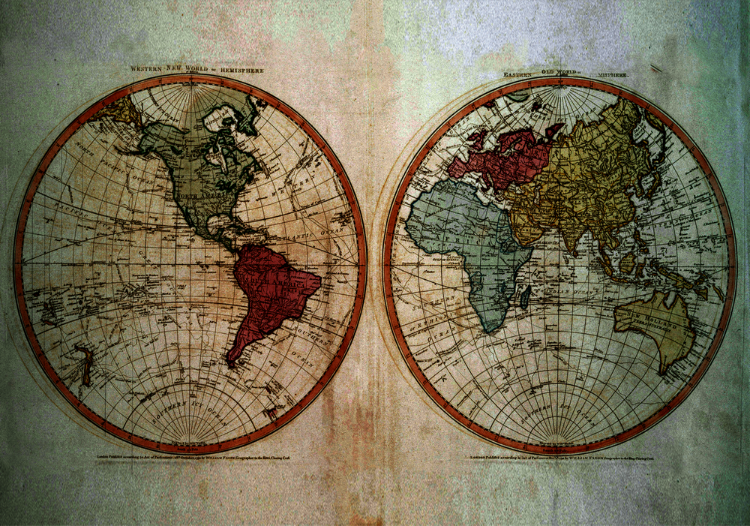
He turned and called, “Yunni! Yuuu-nniii!”
The boy slowly opened his eyes, clearly waking up from a deep sleep, and then slid silently across the grass, barely moving his feet. As he approached, he held out both hands and suddenly smiled. His smile was even weirder than his gaze – it seemed to have both a taste and a smell, the smile was... sweet. And it definitely smelled like honey.
A light appeared just above his palms, as if someone had lit a match. But there were no matches. The light grew quickly and soon became a large orange glimmer. Something dropped from it onto the grass. A folded square of paper. The boy picked it up and handed it to Herx. Yunni's eyes closed, the smile vanished, and he silently floated back to his spot. Rina noticed again – the boy had stopped breathing.
“Here it is, your precious map!” The old man winked. “Hold it and never lose it”.
Rina took the paper, carefully unfolded it, and... stared in disbelief – there on the thick, lacquered paper was an accurately rendered image of both hemispheres of Earth, much like what you'd find in old geography books, though Herx's map looked two hundred years older.
“Ha! And what did you expect to see?” Herx laughed. “We're on Earth, on your planet, in your original World!”
But the map only seemed regular – well, 17th century maybe, but still. No, in reality, it depicted no cities or countries. Europe and South America were tinted with the same red color, while Asia and Australia looked like they were made of mustard.
And there was no evidence of Antarctica. Instead, everything was covered in a web of thin black lines, tiny markings, and symbols indicating places and ways of transitions, internal connections, time flows, and the most important energy nodes.
Memorizing all this mess was impossible, despite Rina's efforts, and Herx felt it. From the outside, he looked like a grandfather absorbed in some strange game with his granddaughter. Only their serious faces revealed the truth.
Eventually, the old man fell silent, waiting for Rina's questions.
“Ok”, she said. “But do I really have to go through the worlds to reach the last one?”
“Yes, you do”. He smiled.
“But why?” She looked frustrated. “Can't you just send me straight to my sister?”
“No, I can't”. Herx shook his head. “It's not allowed. Within your Earth, you jump as much as you like, from any place to anywhere. But along the Circle – no, sorry, we cannot. You should go from one world to another, step by step. Skipping is not an option for us”.
“Not for us? Then who can do it?”
“Well, I've never met anyone who could. You see, the Circle has restrictions at every turn – you can't do this, you can't do that. It's like that little notice in your bus: ‘The Passenger's obliged, obliged, and obliged, the Administration has the right'“, Herx chuckled. “Take it or leave it. We didn't write the Principles, and it's not for us to improve them”.
“Yes, but you're a wizard, a sorcerer!” Rina insisted.
The old man glanced briefly at the stars.
“Sorcerer, you say. And what does that mean? The word is strong, I agree, but it was invented by you humans – emotional creatures. Actually, I doubt the term has any tangible meaning. The longer I live, the more I'm convinced there is no real magic in the worlds. Some just know how to do things that others are unable even to picture, or they do but with great difficulty. Is that magic? No. It's more like... like a kind of skill, perhaps. Tell me, have you ever used a lighter?”
“Yes, of course”.
“Do you know how ancient people made fire in the Stone Age?”
“Sure. They spun a stick in a little hollow on a dry log”.
“Good for you! They spun it, exactly! Well, there were other ways too, but some stubborn folks stuck to spinning sticks. And mind you, they huffed and puffed for half an hour every time! Can you visualize the blisters they got on their hands? Bloody ones! But that was normal. Now imagine this: you travel back in time to those aborigines, who have logs and sticks, and you pull out a little tricky thing from your pocket – a lighter. You click it – Snick-Flick! – and there's your flame! What do you think they'd say about you?”
Rina shrugged. “I don't know... maybe that I was... a witch... or...”
“Or a sorceress. A wizard, right?”
“Right”, she agreed.
“There you go. No magic exists. Not a grain of it! You've got your lighters in your pockets, and I've got my scripts for the Energy layer. Same kind of tricky, little things, actually. There's no magic”.
Rina paused, thinking.
“All right... then what's going to happen to my mom?”
“Your mom?!” Herx was puzzled. “What could happen to your mom?”
“What do you mean, ‘what'?” she exclaimed. “Mom will be crushed! Both of us will be missing – first Nina, and now me!”
“Oh, that's what bothers you. Ha! Undoubtedly, she'll be crushed!” The old man looked her in the eye with amazement. “She's a mother! How could she not be upset? But that's exactly why we're doing all this – so she'll be happy again. If we succeed, you'll return her Nina, her daughter! Doesn't she want that? Or do you not want that?”
“I do! But what if we fail?”
“Why think about that?” Herx mumbled quietly, looking at the star-filled sky. “You must believe in success, or there's no point in starting. And if we fail... well... we'll say we're just unfortunate, useless people. Especially me”.
Neither spoke. Then he asked, “Okay, but I need to hear your final word. Do you agree to go?”
Rina sighed again.
“Of course, I do. But I still have no idea what I should do over there, literally”.
“Well, that's not a problem”. Herx now looked much happier. “Hold on a moment, don't rush – we have plenty of time. Right now, the most important thing is that I've got your consent, you said ‘of course, I agree'. It's like signing a contract, correct? And now I can give you a key to the World Number Two”.
“A key?” Rina pictured a golden key with a carved loop.
What appeared instead was quite different: the old man groaned, muttered grumpily, slowly rose from the grass, and extended his hand. For a few moments, nothing happened. Then, from some place in the air, a small pink feather, twirling and waltzing, landed precisely on his palm.
“And here's your little key”, Herx beamed, cautiously picking up the feather by the quill, bringing it to his lips and blowing on it. The feather sparkled with a prickly glitter. “Do you like it? I hope you do. Take it, it's yours. This is a feather of the sand-bird Ajj. Now getting to the Desert will be easy – you need to burn this feather in an open flame. In a campfire, for example. That's all. And of course, nobody should touch it”.
“And then?”
“And then you'll see for yourself!” The old man replied merrily.
Somewhere high above their heads, an invisible bell struck. A heavy bronze reverberation swept over the sleeping city, causing dozens of car alarms to wail in a persistent, disturbing chorus.
“È finita!” exclaimed Herx. “Time's up, we have to go”. He began rummaging urgently through his endless pockets.
“But I still don't know anything!” Rina almost shouted.
“Just a moment, just a mo”, the old man mumbled. “Where is it?”
“What?”
“Ah, never mind. Too late. Come here, quickly!”
Rina stepped forward.
“Close your eyes!”
She obeyed. Herx gently touched her forehead with his finger. BANG! A mighty blue flash exploded in her mind – a lightning strike! Her knees weakened. She would have collapsed if the old man hadn't caught her.
“Done!” Herx announced, smiling from ear to ear. “That's it! I've given you the core, and as for the details, you'll find those on your own”.
“What details?” she asked, steadying herself.
“Minor ones”, he answered simply. “You'll remember them the moment you need them. Automatic knowledge, you see? Anyway, I've done all I could and transferred what was needed. Did you feel the transfer?”
“I did”, Rina said, rubbing her forehead.
“Wonderful! All right then, we are leaving. Goodbye. We'll meet again soon”.
“When?”
“Soon, I said! I think, very soon. Don't worry, I'll always be somewhere nearby. Or almost always. Or almost nearby. I'll try to help however I can”.
Rina looked at the old man and saw him gradually turning transparent, as if made of dark glass. The boy stood a few steps away, motionless. Then he stirred and opened his eyes, as if amused. But Rina somehow knew that he could no longer see her.
“Goodbye”, she said tentatively.
The old man remained silent. Rina looked through him as if through a crystal door. A few seconds later, Herx and the boy were gone.
She stood still for a moment, then took a step toward home. In the next instant, she found herself in her room. This time, she was scared for real and let out a cry, but quickly calmed herself and walked over to her desk. The lamp wasn't needed – the moonlight made the room bright enough.
Rina dropped into her chair and spent a long time examining the map and the feather of the bird Ajj. Then she took a big notebook from the shelf and tore out a blank page, intending to jot something down.
She looked at the paper, yawning, recalling the blue boy, Herx the wizard, Nina, kangaroos, Nina again, the Eiffel Tower – her eyes slowly closed on their own, her head quietly sank onto the open map of her native World. Rina rested her forehead on the table, then shifted slightly to the side, searching for a comfortable position. And there, warming Australia with her cheek, mumbling something from time to time, she slept a relaxed, deep, exhausted sleep until morning...
Rina was awakened by a young, lively ray of dawn that slipped past the curtains, ricocheted off the mirror, and immediately kissed her right in the eyes. The clock read 5:05. She got up, tiptoed to the bathroom, opened a thin, silent stream of cold water, and quickly washed her face. Then she returned to her bedroom, opened the closet, took her favorite backpack, patched together from multicolored triangular leather pieces, and began packing for the trip.
What would she need on the journey? And what kind of journey was this anyway? She had no idea. Seven worlds, but not even a list – Earth was the first, the World of Fire the last, and the rest were all jumbled in her mind.
She crammed a little of everything, at least the things she thought might be useful and what she could fit into this rather small pack.
“That's enough”, she whispered when the loading was done.
After sitting on the bed to relax for a minute, and letting her troubles fly free, as Dad would say, she looked around, tapped her teddy bear Bimka on his pink nose, then reached for the nightstand, and for some reason checked the box with her collection of ancient Polish postcards – they were in place. Then she stood up and snuck out into the hallway.
Everyone was asleep. Rina noiselessly crept up to her mother's door, cracked it open with her fingertips, and, fighting tears, whispered a quiet goodbye to her mother and Vera.
She stood there, thinking, then went back to her room and pulled thirty-six dollars out of the desk, a recent gift from Grandpa – three crisp tens, a five, and a heavy one-dollar coin – then carefully put them all in a white envelope, tucked it into the “hidden” inner pocket of the backpack – der Rucksack, as her best friend Svetka would say in her funny German – she closed it, securely tied all its strings, and slung it over her shoulders. Done! Now ready!
Five minutes later, Rina was walking toward the metro through almost-quiet, nearly empty streets. At the entrance, she pulled out her card and went in, stopping at the end of the platform. Right then, two trains arrived with a thunderous roar – one filled tightly with silent, sleepy early-morning shift workers, hotel staff, policemen, and bus drivers, heading downtown, and the other coming from the center, with only five or six passengers clustered in a corner. She slipped into the chilly car. At the final station, she got off and waited for the bus.
As if some morning gods heard her wish – the first bus was heading toward Knyazhychi. She dropped onto the seat and almost screamed – it felt icy. The bus moved, and the people walking their dogs melted away in seconds, replaced by huge workshops, warehouses, and heavy iron fences. Soon the view out the right-side window turned into a dense and unkempt wild forest of tall trees.
She hopped out halfway, at a bus stop under a footbridge, walked a few paces back, and turned onto a park road leading somewhere through the pine grove. She then turned right and walked along a clay footpath. Ten minutes later she stopped among rows of young, curly poplars stretching in both directions. Rina approached the trees and gathered as many dry leaves and twigs as her hands could hold.
Just beyond the trees was a large, semicircular meadow, completely covered in a ground-hugging plant that looked very much like pea sprouts. Rina forged ahead without watching her step. She walked about a hundred yards in, scanned the surroundings – nobody. And really, who would be there at this hour?
She squatted down and arranged the twigs and leaves into a neat pyramid, “a little hut”, as Nina called it. Then she pulled matches and a crumpled piece of newspaper from her pocket, unfolded it, slid a paper corner under the “hut”, and lit it. Thin blue wisps of acrid smoke rose. Rina waved them away and blew into the fire.
At last, after three or four attempts, she managed to build something that slightly resembled a small campfire. She then stood up, opened her backpack, took out a sheet of white paper, folded in four with the feather of Ajj inside, and without unfolding it, carefully placed it directly on the twig pyramid. The heat immediately forced the paper open. For a second, Rina saw the feather. The red tongue of flame greedily licked the pink fluff, the feather shrank, crackled, and... vanished – burned up in an instant.
Rina looked around. Everywhere lay the pea-covered meadow, and beyond it – pines and willows. There were no roads, no trails – just natural wilderness. Rina waited. One minute. Two. Three. The fire burned down to its last ember, went out, and began to smoke. Just in case, she stomped out the ashes with her sneakers. She stepped back and stood for a long time there, waiting. Nothing was happening.
“So? It didn't work?”
Suddenly, something clanked behind her. Rina turned sharply and was stunned to see a huge, tall, and clearly heavy door in a decorated frame, resting right on the pea vines. She stood frozen, with her eyes wide. It was scary. Still, after a minute or two, she mustered her courage somehow, crept toward the door in tiny steps, and examined it thoroughly.
Finding nothing threatening, she walked around it. Rina thought she wouldn't be surprised if someone told her the door had been taken from a museum, or more likely from the entrance of some old Italian palace. It was so richly painted – every shade of Mediterranean blue, though there was nothing magical about it. Just a door, really.
Emboldened, Rina pressed her fingers to the frosty bronze handle and gave it a gentle push. The door yielded easily, as if it had been oiled just yesterday, and opened silently. Behind it was the same green pea field.
“Miracles”, Rina said with a kind of bitter irony.
And indeed, it was a miracle. If through the half-open door she had seen a sea, mountains, stars, planets, galaxies – anything, quite anything! – that would have made sense. She had actually expected something like that. But the same dumb pea field looked like... a miracle.
“The miracle of a never-happened miracle”, she thought.
So, no longer afraid and not particularly caring what she was doing – as if playing a game – she flung the door wide open and stepped through. The field. And nothing more than the field! Or rather, the meadow. Hovering above those tiny bluish flowers, an orange bee was buzzing lazily. Rina turned around, sighed, touched the polished handle, and pushed it shut. The door closed softly and... disappeared.
As far as the eye could see, an endless ocean of dry yellow sand, scorched by the ruthless sun, stretched in every direction. A desert without water, with no trace of hope – an infinite, cruel, sandy death. Rina stood rooted to the spot, unable to move, barely breathing. After a while, drained by the searing yellowness, she said in a broken voice:
“It worked...”
And immediately her head was filled with a swarm of nervous, panicking questions:
“Where am I? Did I make it? What is this? The World Number Two? The Planet of Sands? Yes, sands! Everywhere! But what now? What should I do? Where should I go?”
No one answered.
A plump gray lizard, frightened, darted in the wrong direction, scurried underfoot, and in a snap burrowed into a small dune, furiously kicking up sand with all four legs just inches from Rina's sneaker.
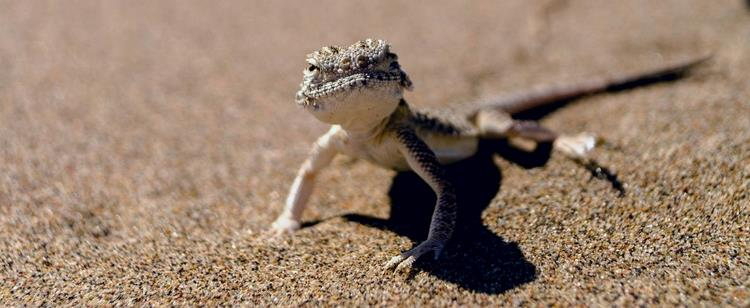
WORLD TWO – DESERT
03 – MIRRORED ECHO
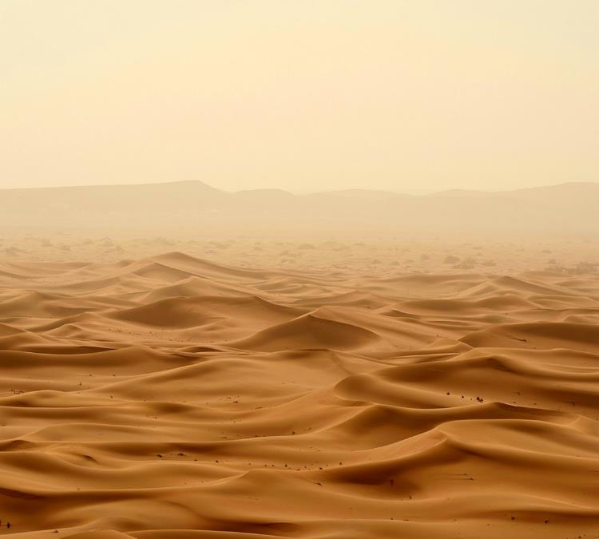
Rina had never seen deserts before. She hadn't even been to the Oleshky Sands – Ukraine's “Little Sahara” – a ten-mile stretch of yellow sand wilderness. No, her entire experience was limited to the beaches of Zatoka – water parks, hotels, and fancy tourist trains running along the boardwalk. But a beach, no matter how wide, doesn't come close to a real desert. Even the smartest TVs can't convey the sheer shock of standing in the heart of blazing sands, feeling lost, forgotten, helpless against this terrifying grandeur and enormous power of wild nature.
Hot air gusts whipped Rina's hair, the sand rustled, singing a thin note beneath her feet, quick whirlwinds drew long patterns on the shifting slopes, and in the sky, a blinding sun beamed, rejoicing in its absolute, cloudless freedom.
Desert beauty is unforgettable, but what is annoying there is the total lack of roads. The sands never care how many people have passed through – they leave no trace. The footprints dissipate in a few blinks of an eye under the relentless wind. Only a bush of dry thorns, bristling with long white needles, stands alone near a dune, a faint reminder that somewhere out there, life still exists – vibrant landscapes with forests in a violet haze and blue rivers winding through flourishing valleys. But all that is now far away, beyond hundreds of miles of nothingness spreading toward shimmering horizons.
Rina stared into the world, her heart pounding with confusion: how would she, a weak, fragile girl, survive here in this immeasurable wasteland? Who would save her out there? And did anybody even know she was in this dead zone?
Before she had taken a single step, she already felt a crushing exhaustion and a flaming thirst. The sun tried to incinerate her skin. She slipped off her backpack, took out a big white handkerchief with blue stripes along the edges, and made a kind of hat with four thick knots in the corners. Her father used to make one just like it when working outdoors.
Of all her water supplies, there was just that single, insignificant, twelve-ounce bottle of Sprite, still cold. Seeing the tiny, miserable, microscopic vial, Rina felt a bitter resentment toward the old man Herx. If only he had said a single word to her last night – if he had even hinted that in the morning she'd find herself alone among the endless waves of scalding dunes – then Rina would have taken a whole case of soda, bought three massive two-liter bottles of mineral water near the subway, and packed her beach umbrella, her dark sunglasses, sunscreen, and a large floppy bucket hat – everything she could possibly need in a desert.
No, Herx didn't say a thing, didn't explain. This wasn't what she'd expected at all. Yes, of course, she was flying to the World of Sands. So what?! Tourists go to Egypt, for example – also a world of sands, by the way – but nobody abandons them in the middle of the Sahara Desert with no water, no shade, and no help whatsoever! Herx didn't warn her. Rina remembered how confidently he'd promised to accompany her everywhere at the first opportunity. She looked around again – no one! So where was all that “support and protection”?
“Of course he's not here!” she muttered irritably. “Ha! What would he be doing here anyway? He's a wizard, possibly rich, he's probably kicking back at his luxurious lakeside mansion in Switzerland right now!”
But whether you're mad at the old man or not, standing still on the baking surface waiting for hell knows what is, at best, stupid. And dangerous. She had to find someone – anyone! – for advice on a way out of this nightmare World Number Two. And flee this place as quickly as possible!
Only at that moment did she finally remember the gift. She threw her backpack off again and unzipped the long side pocket. Even before fully unfolding the map, she realized there were no familiar continents on it anymore. Instead, the entire surface showed a large yellow blotch outlined in black against a glossy white background. Rina spread the map out on the sand and stepped on the corner with her sneaker so it wouldn't blow away. And began studying the map inch by inch.
There, right in the center, was a childishly drawn little figure – a girl in a ridiculously short skirt. Right below that cartoon character were two Latin letters, “R” and “I”, and a bold dash between them.
“R–I. Yep, that's def me”, said Rina. And immediately, she felt frost in her stomach – in every direction from the funny girl on the map was a huge ocean of sand, colored in acid yellow. But from the girl's feet, a thin black line twisted away, leading first to a gray rectangle, then to a small purplish circle, and after it toward a green spot with a black ant depicted inside it. And a golden key above the ant.
“All right, that's something”, she said with a sigh of relief.
OK, though what did she find? The trail and the key? Sure, makes sense. But where exactly is that trail?
In the bottom corner was a small compass icon.
“Here – south, north, east. The path leads east. So, if I'm following it, I need to go straight east”.
She looked at her watch. Assuming the time here was the same as in Ukraine, it was early morning yet – six minutes past seven. The sun rises in the east – even toddlers know that. Well, there was no other way to determine the direction. (Her dad's professional compass was resting in the outer pocket of the backpack, but Rina was too stressed to remember it.)
She shoved the map back, shouldered the backpack, and set off across the soft sand, heading straight toward the sun. But after about an hour, she felt overwhelming fatigue, as if she had just unloaded a ton of bricks from an 18-wheeler. Fine, now what? There was nowhere to sit down. Who wants to try relaxing on a frying pan under the burning rays? So she had to trudge on.
Straining hard, she climbed the hump of a dune and saw an endless flat valley below – the sand lay smooth and even, glinting like paving stones on Kyiv squares. Ancient sand, compacted by time and constant winds, seemed leveled by human hands. Farther ahead, she saw something dark and angular, though it was impossible to tell what it was from this distance.
“Great, I forgot the binoculars!” Rina said in frustration, but dashing home for a second to grab her dad's optics was out of the question.
She began descending and nearly tumbled down the slope. It turned out that going downhill was no easier than climbing – the sand slid and flowed like a river under her shoes and there was nothing to grab onto.
In the end, fighting the treacherously slithering sand, she made it down to the valley. The surface was as firm as concrete, her sneakers left no footprints. For the first time, she felt some ease there, even smiled a little – compared to the sands, walking on this substance was fast and almost effortless.
Even though the dark spot was off to the side, beyond her planned path, she still headed there. Strange guesses raced through her mind, but one thought dominated them all: water. Despite her cracked lips and the salty sting in her mouth, Rina held herself back, refusing to give in to thirst and open the precious Sprite. She knew that if she twisted off that white plastic cap, even once, she wouldn't be able to stop – she would gulp it all down in half a second.
The dark spot grew with every step and soon it resolved into many jagged fragments. As she drew closer, it became clear that it wasn't a spot, but a dozen huge dark chunks – the remains of a collapsed cliff. Then she noticed something else – amid the rocks and stones, a rounded white construction appeared, with a big gaping hole in the middle like a predator's maw. Apparently, it was an entrance to something, perhaps to a big room. Rina looked at the rocks and white dome with doubts and fear, but also with an expectation – a hope that pushed her forward, drove her ahead, and gave her energy from nobody knows where. The rule of hope is “Not a single step back!” Even if it leads nowhere or straight to death – who cares? Hope is unstoppable.
At last, Rina reached the gray crags. They were far more massive than they'd appeared from afar. She ran her finger along the hot, weathered surface – prehistoric rock felt like slightly hardened dust ready to crumble at the slightest touch. Slowly, trying not to crunch the sand under her feet, she crept closer to the white walls and cautiously peered inside the entrance. No, it wasn't a cave or anything natural, there was a chamber inside, carved into the soft limestone rock. She entered. In the center of the hall was a round well – more like a shaft – a yawning, terrifyingly deep hole of inhuman scale. “Forty feet across”, she estimated.
The walls of the vertical tunnel were roughly hewn into dark layers of basalt, and around the perimeter lay dozens of big black boulders, nearly touching each other. Rina imagined for a moment a desert giant collecting these heavy stones from everywhere in the sands and then arranging them neatly in a circle to adorn his underground refuge. Perhaps that's exactly how it had happened a thousand years ago, but at the moment, Rina was concerned with two more important questions: A. “Is there water at the bottom?” and B. “If so, how to get it?”
She stood for a while, pondering and resting, even cooling off a bit, enjoying the chill rising from the depths, and then walked up to the pit and looked down. She was lucky – on the jagged wall of the mine, right on the side of the hall's entrance, narrow steps were carved: a staircase spiraling steeply into the darkness. This strange structure didn't match the colossal scale of the well – the steps were small, suitable maybe for toddlers or dwarves. Anyway, she firmly decided to go down.
Though not immediately, of course. Two opposite worries had to fight it out first – the fright of the depth and the panic of a lack of water. The panic was stronger, it was an easy winner. For a minute, Rina imagined herself in the park – she discovers a huge well there. Would she climb down the wet ledges, plunging into the hellish underworld? Of course not! She would never even try, she's not crazy. But! That's the park. The comfortable, cozy park. And what about here, in the desert? Here she had only one thought left in her mind: water.
No, she'd better say it like this: Water! Or even this way:
W A T E R ! ! !
A pit, a cave, a cannibal's camp, a tiger's lair, a tyrannosaur's nest – what the heck difference does it make? To her it all looked the same. She would never think about it, she would crawl into anything if there was even the slightest chance of getting half a glass of water there...
Predictably, the descent was awkwardly complicated. The stairs looked like somebody had carved them as a joke – crooked, absurd, and so clumsy it was even funny. The first step was high above the second one, while the third one was so small it wasn't clear why it existed at all, and immediately after that came not even a step, just some sharp protrusion. Each stair varied wildly in width, height, and tilt. Worse, some of them were just... missing – Rina had to drop onto her knee to reach the next foothold with the tip of her sneaker.
The only good thing was that with every yard down, the air grew more humid and cool, and the stones even colder – until they were almost frosty. On one of the widest ledges, she had to stop and pull her denim jacket from her backpack (she'd shoved it in an hour earlier when the sun was too unbearable). Brrr! Cold! The climate was like that of a freezer truck.
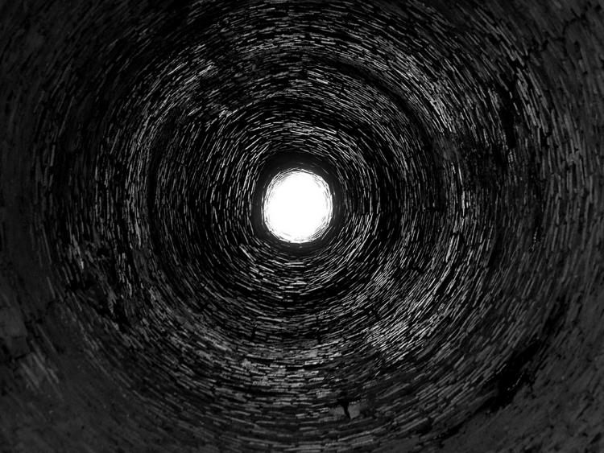
And below, at a terrifying depth, lay a moist, eternal gloom, lulled by perfect silence. The only sound now was Rina's strained breathing, accompanied by occasional drops of water falling from one step to another. Luckily, the staircase was gradually widening, but the bottom was still nowhere in sight.
On one of the steps, Rina found a small stone, picked it up, and dropped it down. She just let it go, and it fell.
“If it splashes, the bottom isn't far”, she said aloud to boost her courage. Suddenly, someone replied:
“raaf tnzeee...”
Rina jumped back, slipped, and nearly fell into the chasm. She grabbed the wall with both hands and froze. She stood there for a long time, barely breathing, listening, scanning the well. However, she saw no people, or animals, or imaginary little dwarves she had invented – nobody at all.
But a few minutes later, having composed herself somehow, she decided to speak first and asked in a half-whisper:
“Who are you?”
An invisible stranger promptly responded from the opposite, completely black side:
“ui raa oohhh...”
Rina waited for a moment and said:
“Hello!”
And immediately received a reply:
“ollehhh...”
Only then did she realize: it was an echo!
“Who are you?” she asked again, this time loudly and clearly.
“ui raa oohhh...” came confidently from nowhere.
“Ui, ra, ooh”. Rina smirked. “ui ra ooh... hoo... ar... iu... Who are you. Who are you just backwards!” she exclaimed in her mind.
“Are you an echo?” she said.
“uoke ne...” The echo replied joyfully.
“If you're really an echo, then why do you repeat everything the wrong way around?”
“dnu... ara...” came the response.
“Even the echoes here aren't normal”. Rina waved her hand hopelessly.
“lamr... ron...” The echo whispered into her ear.
Rina flinched, glanced down, glanced up – there was light above, though on the opposite side only empty, impenetrable darkness. The heavy, ink-black void below was getting on her nerves.
“So where's the bottom?” she asked.
“raa... een... zee... tee...” the echo replied confidently.
“Wait”, she thought, “What ‘zee-tee' and so on? I didn't say anything like that”.
She repeated her question louder:
“Where. Is. The. Bottom?!”
“raaaa!.. eeeen!.. zeeee!.. teeee!” the echo proclaimed insistently right in her face.
“Ra, een, zee, tee”, Rina muttered under her breath, tracing the letters on the damp wall with her finger. Then she tried to reverse the phrase – eet eez nee ar.
“It is near!” she shouted.
“raa... een... zee... teeee!” the echo yelled happily, confirming her guess.
“You're not an echo at all!” Rina thought. “Someone lives here and talks in this weird, silly way. They're just messing with me!”
However, she was wrong. In the deep stone well, century after century, a solitary Mirrored Echo lived. It spent long years alone, pondering life and everything in the world in dark silence. Over time, it became the wisest echo in the deserts. The Mirrored Echo resided at the bottom of this enormous pit, relaxing and waiting, wistfully dreaming of those rare travelers with whom he could chat as much as he wanted. He would listen to what was happening in the upper worlds and share his “hot news” from three thousand years ago. But the Echo couldn't speak on his own. Over his long life, he had learned to alter the reflections of words bouncing off the walls, but he couldn't produce his own sounds.
After many attempts to find out who was living there in the emptiness, Rina had to admit that there was no one else but an echo. At first, she was slightly disappointed, but then she realized that perhaps it was even better this way – echoes are not dangerous. Moreover, he knew human languages.
Soon, she managed to converse with him, which at least distracted her from the tension of the risky descent, although she couldn't learn anything valuable. The Echo played with Rina's words like wind does with dry leaves, spinning and tossing them this way and that, but it was a game, not a real conversation. Rina even got a little tired of the pointless chatter.
In the end, after all the grueling efforts – hooray! Victory! She reached the highly anticipated, precious bottom of the shaft!
At first, no water was found. Everything was covered in sticky mud, icy and gross to walk on. It was hard to believe, but by that time, thirst no longer tormented Rina. On the contrary, the air was too damp, the well was too wet, so the burning scrapes on her knees and elbows bothered her much more than the longing for water.
However, the moment she noticed a barely discernible gleam in the darkness – a spring trickling from a little crevice in the wall – she immediately felt an irresistible, painful urge to drink her fill and collect as much water as possible.
Fortunately, back in Kyiv, she had not forgotten to take a dozen spare plastic bags with her. Like many other things, “just in case”. She rummaged in her backpack, found them all, took them out, and in less than ten minutes, she had two transparent water balloons, rather hefty ones, perfectly round, each the size of a honeydew melon – both very cold and sweaty.
A new boy named Roman had taught her how to make such balloons from ordinary plastic bags for water fights. The secret was in the triple knot – a tricky thing indeed. If tied correctly, the water would never leak out. The boy had brought this ingenious invention to Ukraine precisely for games. But now, to Rina, the two wet, heavy spheres meant much more – survival.
In a desert, a water supply is worth more than pure gold. The long trek through the sands in the searing wind under the flaming sun taught Rina a lot. She had already come to know the real value of the smallest gulp of the most ordinary water.
After drinking it until she couldn't manage another sip, she rested on a soggy, black boulder – which had evidently tumbled down long ago, perhaps dropped from the clumsy fingers of the desert giant. Thoroughly chilled by the pervasive dampness, and after talking with the Echo a little more (though, despite employing all her skills, she learned little from him, as he, while rather intelligent, had no actual knowledge of what was happening in the outside world), she finally decided to head back to the surface. There was nothing more to do down below.
Of course, she had examined every inch of the walls, but found no hint of doors, tunnels, passages, or even burrows, except for a tiny hole, no wider than three inches, where the spring water drained away. Nothing else.
And so, having sloshed through the sickening bottom muck in her hopelessly soaked sneakers – just living the dream, as Zinaida Abramovna says – Rina commanded to herself:
“That's it, I'm done. Time to go!”
And she climbed onto the lowest step.
Strangely enough – though typical for the planets of the Near Worlds – the climb back up was much faster and easier than the descent.
Upon reaching the final steps, she waved to the Echo and bade him farewell in the most ceremonial tone she could manage:
“Goodbye, dear Echo. Peace out!” she said solemnly. “It was really fun cooking up this chat with you”.
The emotional Mirrored Echo immediately replied:
“Ui... vaaal...”
Rina reversed the phrase, smiled, blew him a kiss, and with three quick hops, leaped up into the hall, and ran outside.
After the penetrating chill of the well, the desert's heat felt pleasant for a minute.
But only for a minute...
04 – GLIMID'S SHADOW
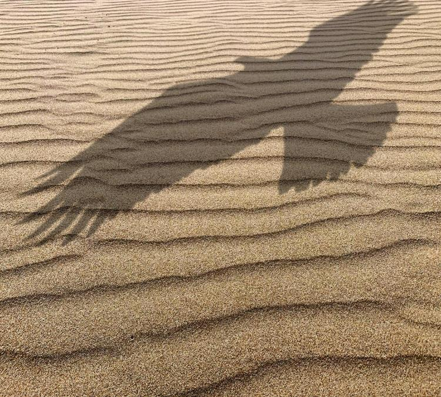
Rina glanced at the sun. Still cheerful, though slightly spent, it hung overhead, just past its peak, about to begin its unhurried journey toward the long-desired sunset. Rina checked the direction and continued on her way. The flat sandstone plateau, so deceptively inviting and easy to walk on at first, was shamelessly draining her strength. The rocks surrounding the white hill were far behind and almost out of sight.
There wasn't a single landmark around, just the endless, monotonous expanse. As gamers would say, zero points of interest. A minute, two, five, ten, half an hour. Rina and time trudged at the exact same pace – like a dying snail. The surrounding panorama didn't change a bit. Though she kept walking, she seemed to make no progress at all, as if some evil magic held her in place.
Several times, Rina took out the map, trying to find the path's twists and turns on the actual terrain, but there were no turns, not even a crack or pebble on the sandy plain. A maddeningly smooth, perfectly ironed lifelessness.
But suddenly something flashed by – huge and dark. Rina halted. Fearfully, she looked around. Nothing. What was that? A mirage? An instant later, a wide, massive pall of shadow swept across the sand and covered her completely for a moment. She looked up – not a fleck in the sky. She glanced back – the shadow lay ten steps away, menacingly flexing its powerful wings. Yes, wings indeed! Rina traced the distinct outline of a giant bird with enormous wings spread in soaring, though there were no birds above, not even the tiniest one.
“More weirdness”, she said and approached. The shadow slid timidly a couple of yards to the side.
“How's that even possible? There's a shadow, but no bird!”
“I hate them!” the shadow declared in a hoarse voice. Clearly, it was speaking! Its sharp beak opened and closed in perfect sync with the words.
“Hate who?” Rina asked guardedly, looking at the shadow of the bird's head.
“I hate birds!” the shadow rasped. Its beak snapped shut on the final word. Rina glanced up again, but of course, there was nothing above. She asked:
“Who are you?”
“I'm Glimid's shadow”, the shadow hissed.
“And who's Glimid?”
“That's me!”
“But you just said you're Glimid's shadow!” Rina was surprised. “So, Glimid is a shadow, literally?”
“No! Glimid is not a shadow!” the shadow retorted indignantly, flapping its wings in anger. “I hate Glimid!”
“Things just keep getting weirder in this desert”, Rina thought, and then said aloud:
“Okay, let's put it this way, you're the shadow of the bird Glimid, right?”
The shadow did not reply. Rina waited and then continued:
“So, it turns out this Glimid lives without a shadow, and you are here without Glimid. Did I get that right?”
The stubborn shadow remained silent.
“Listen”, Rina addressed the bird's shadow wearily, “if you don't mind, let me step on you. To rest. I mean, to take a break from the heat for a minute”.
Again, no response. Quietly, Rina stepped inside the shadow and found herself enveloped in... in what? Well, not a real chill, to be honest, but at least the sand around her was darker, not that bright or sparkling. The next moment she looked up and saw a silhouette of an immense bird hovering above – not a bird actually, but something like a flat picture of the bird.
Trying to be polite, Rina continued the conversation and asked:
“Do you live alone in this desert?”
“I don't live! I fly!” the shadow creaked.
“Oh, yes, of course! Sorry, I misspoke. You fly. You came from a bird... And where is the bird itself now, where is Glimid?”
The shadow snorted, shook its head doggedly, and said:
“He's in Nrsktskr”.
“In Nrs... nk... krs...” Rina tried to repeat it, but failed. “And why do you hate him? Did you two have a fight?”
“A fight!” the shadow confirmed loudly.
“Ah! That explains it”. She nodded. “I got into a massive fight with this girl from the second floor a week ago. I was so mad I couldn't even look at her. I probably hated her even more than you hate your Glimid. But now I think it was stupid. And besides, you can't keep holding a grudge forever – sooner or later you need to fix it somehow, right? When I'm back home, I'll try to patch things up with that girl, you know?”
Glimid's shadow listened attentively, its beak opened to catch every word. Rina asked:
“By the way, dear shadow, do you happen to know what's round and bright purple out here in this desert?”
The shadow thought for a moment, then shook its head:
“I don't know!”
“That's a pity. I've been walking toward that ‘round-and-purple' thing all day. It's marked on my map as round and purple, but I still have no idea what it actually is. Isn't it funny to search for something you know nothing about?”
“Funny”, agreed the shadow.
“Well”, Rina thought regretfully, “these desert guys are pretty clueless. You can't get anything useful out of them”.
After staying for a few more minutes, she thanked the shadow for the... for what? For the shade? But there was not a real thing above that could provide real shade. So, Rina paused for a second and yes, thanked the shadow for the shadow – just another oddity in the sands.
Then she stepped out, and when she looked up at the sky again, the picture of the bird was nowhere to be seen. But at that moment, Glimid's shadow let out a harsh, crow-like screech and suddenly lunged toward Rina's feet. Startled, Rina even jumped aside.
“What happened?!”
“That one! That one!” the shadow shrieked, flapping its wings.
“Who's ‘that one'? What are you talking about?”
She looked down and understood everything – Glimid's shadow was attacking Rina's own shadow.
“Stop it! Don't! That's my shadow!” she protested. “It's been with me for years and has never done anything to hurt you!”
However, Glimid's shadow was extremely aggressive, it hissed, rasped, opened its hooked beak, and raised a ruff of feathers on its nape. Rina was a bit frightened but remembered that a shadow couldn't cause any harm, so she waved her hands at it, just like old villagers chase away a stubborn chicken:
“Shoo! Shoo! Get out! Scat! Go away, shoo!”
Glimid's shadow, confused, paused its attack for a second.
“You're so mean! Get away from me!” Rina was a bit angry. “My shadow wasn't bothering you. It's small and fragile! Why are you bullying it?”
“I hate it!” croaked Glimid's shadow and snapped its beak loudly.
“Oh yes, you hate everyone”. Rina shook her head. “You're so annoying. You know what, I really don't want to be friends with you. Listen, there's this obnoxious guy in my neighborhood, he's exactly like you – he's rude and likes to bully. Everyone avoids him, and so do I. Please go away”.
Glimid's shadow shook its head, searching for the right word. Then it forcefully flapped its mighty wings, let out the irritated cry of a large bird, and flew off, gliding over the sand, quickly gaining speed. Soon, it disappeared into the yellow expanse.
“No wonder Glimid got rid of his shadow”, Rina said, watching it go. “Better to be alone than with someone so mean!”
She looked at her own shadow and waved to it warmly. The shadow immediately waved back joyfully.
“And my shadow... is kind!”
05 – SKRTSTN
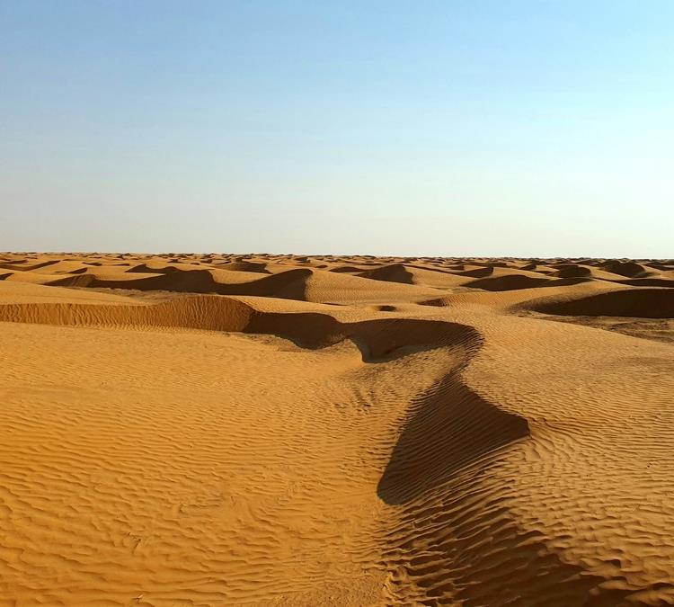
Another two hours – perhaps more – had passed. Rina felt utterly depleted by the intolerable heat and overwhelming light. Thirst tormented her, even though all that remained of her “water reserves” in the backpack was a shrunken, half-empty plastic bag and the still unopened, nearly boiling little bottle of soda.
The terrain had changed again – dunes were back. Mostly, they came in two types, many were young, made of fluffy, light dust that the hot wind easily lifted into the air. Others were old – apparently from the age of dinosaurs – and almost as solid as the valley floor Rina had crossed earlier.
Some of these hardened dunes were massive and looked like mountains, though much smaller than the mining slag heaps back home in Donbas.
But in fact, there was also a third type – truly primeval ones. Most of them had long since crumbled, centuries of sandstorms had eroded them into bizarre rock formations that looked like scattered idols of unknown tribes – the strangest, almost artistic shapes. Here and there, the rocks cast welcoming shadows, and Rina moved in zigzags now, trying to cross from monolith to monolith, to hide from the sun if only for a couple of seconds.
At last, her strength was so spent that she was ready to collapse in the shade of any one of these stone “statues” and sleep right there on the ground. Which is what she ended up doing – she picked a massive rock shaped like a giant ice cream cone with the top licked off and dropped down next to it onto the sand.
She pulled off her backpack – unbelievably heavy now, as if filled with mercury – and took out the map, unfolded it on the ground. The drawing had changed beyond recognition. The view had zoomed in, no longer showing the whole desert as before, but only a small part of it, and the little figure – the girl in the skirt – was once again right in the center, and a bunch of new symbols and captions had appeared in tiny, almost unreadable letters, which, on closer inspection, looked vaguely like ancient Slavonic. Rina had never even tried to read such texts, though her grandfather was deeply into the subject – still, she couldn't make out a single word.
At the same time, the updated map showed clearly that Rina had been walking northeast toward the green spot now ringed by a black outline, and along with the black ant, it had moved to the top-right corner. The once-small purple circle had become much larger and had jumped to a slightly higher place than before. On the line between the circle and the girl figure, a small gray snake with yellow eyes appeared, drawn in a precise, professional manner.
“Don't tell me I'll have to deal with snakes too!” Rina said with a shiver.
After sitting for a while, she folded the map and tried to stand up. She couldn't. Her legs were swollen, thick as a baby elephant's, and refused to obey.
“No use, I need some rest”, she decided, and sprawled weakly on the valley floor.
In truth, going any further in her condition would have been madness. Rina relaxed. She wanted to reflect on everything that had happened during the day, but her thoughts kept breaking off and tangling. Soon she got hold of herself and sat up with some effort, trying to find a more or less comfortable position, then pulled the last of the water out of her backpack. Plus a little box of crackers, and a fifty-gram package of now-melted Buche de Chevre cheese – once her favorite treat.
Why “once”? Because although only ten hours had passed since fate and necessity had pushed her through the door in the pea field, to Rina it felt like an era, a whole century. No doubt – this long, endless day was so far the hardest time of her life.
She reluctantly chewed a piece of heat-boiled, oddly repulsive cheese, ate half a cracker – it had lost all its flavor completely – and took three deep gulps of very warm, but still divinely delicious water. Only water mattered now. Water, and obviously sleep.
The sun, never bothering to cool off even a little, hung a bit closer to the horizon, so the shadows grew thicker, stretching longer across the ground from dunes, rocks, and even boulders. New smells emerged, and much to the delight of the desert's inhabitants, timid though noticeable waves of pre-dusk freshness began drifting in from nowhere.
After the “snack”, Rina lay down, turned onto her back, and looked at the sky – bright but no longer angry... Well, still angry, of course, but not as cruel as it had been just an hour earlier. Gradually, the sky tried to return to its regular, nearly blue hue, though not a single cloud – no matter how tiny – graced the vastness.
Then everything turned dark red. Not because the sun had set, but because Rina closed her eyes and had neither the strength nor the will to open them again. She heard indistinct voices somewhere nearby. Someone touched her forehead, or maybe it was just a breeze, but she was indifferent to everything.
She didn't want to move, didn't attempt to think. A pleasant heaviness spread through her body, a total dissolution of tension. She felt as if she were not lying on this coarse, prickly sandstone but soaring in a vigorous stream of ocean air like a snow-white albatross – lightly, effortlessly, not even moving her wings.
Sleep kept seizing her mind more and more insistently, until in the next scene of her dream she saw the familiar foamy sea and a long beach wet from salty spray. There, on a large log washed ashore by last year's huge storm, sat Herx, smiling mischievously. As always. He winked with both eyes like a little kid and said:
“See? Didn't I tell you everything would be fine? And you – why'd you doubt me?”
Rina slept...
A sharp young voice was stubbornly calling someone by a strange name – nothing but vowels. Rina was puzzled by the new language and... woke up. She opened her eyes and saw the blueness.
Deep black-blue.
The universe was exactly as astronauts see it from their spaceships – endless, monumental, and supernaturally multi-dimensional. Rina lay on her back behind the flat-topped pyramid, and before her eyes, in the utterly cloudless violet-coal sky, bright, unknown, rainbow-colored constellations shimmered like strewn shards of precious stones, while it seemed that the desert had vanished forever – the darkness had swallowed it completely – everything turned black: sands, dunes, and even the rocks.
Rina was mesmerized by the spectacular parade of stars, she stared into the gelid cosmic void, into that infinity, and all at once felt like the planet was a massive spaceship hurtling forward through the limitless depth of the colossal beyond.
And by some coincidence, Rina was at the very front, on the prow of the giant planetary cruiser. Ahead – the unbounded deep. Black nothingness, filled only with rare, unbelievably distant specks of light. She was alone there. She sensed and measured the profundity of the nothing – but the nothing was immeasurable.
Breathless with awe, eyes wide, she peered into the abyss of space, into this mind-ripping immensity, and for the first time in her life, she saw it in its full, wordless truth. She lay still, looking into the black ether and trembling with the emotions flooding her soul...
Or maybe she was shivering because of the desert's night cold? Rina shifted her focus from the beauty above, propped herself up on one elbow, and looked around. In the distance, outlined against the soft dark velvet, were the rugged shapes of long dunes and fantastical rock creations – ruins of the ancient world. She stood up. Cold. It was too cold. Freezing! The Arctic!
“Ughhh!” she exclaimed, her body shuddering. “Well, this is something! So much for the desert – it's like a glacier now! I'm telling you, nothing here is normal. Roasted by day, ice-cold at night! Why? Why?”
And really – who the hell came up with this flame-ice-flame seesaw? Clearly, deserts are empty because they are so impossible to survive in – equally under the sun or the moon. And yet, someone had endured. Rina heard a quiet, rustling, careful movement. She scanned the place but saw only mica glinting in the sand.
The good news – her legs didn't hurt anymore. Almost. She felt what some people call “a second wind” – new energy. She was ready to continue her trek right now, though in this black-on-black darkness, it would be too easy to lose her way.
Then she remembered her favorite flashlight and pulled it out (why she hadn't tried to use it back in the well remained a mystery). The tiny, handy gadget sat snugly in its special inner backpack pocket. That winter, Grandpa-2 had brought it from Warsaw, it was a programmable Japanese flashlight shaped like a pen. On its side was a colorful little screen with mode selection: music, calendar, thermometer, step counter, Bluetooth, radio... – you name it. Instead of a bulb, it had a glass bead. When turned on, the bead shot a narrow yellowish-green beam like a real alien-movie death-light – blindingly strong. And a single good battery could last half the night.
Rina stepped a few yards from the rock, pressed the button, and swept the ray around. Dunes, old hills, another hill, sand, backpack, one more dune, a bush, a snake, a rock.
“Wha-at?!” she choked and moved the beam back.
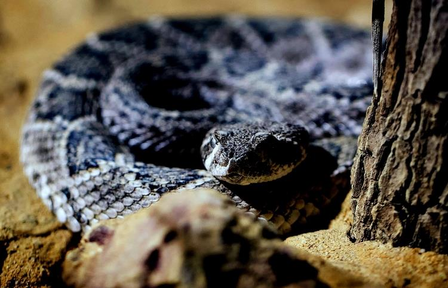
Yes! A snake! A large glossy gray snake lay on the sandy ridge of a narrow little dune just twenty paces away, not daring to approach or flee, its round eyes shining with a cat-like glow. The snake turned its head, squinting from the bright light, much like a kitten, indeed. But then, quite unexpectedly, it opened its mouth and said, rather loudly:
“Sknn! Shknn!”
Rina couldn't believe her ears. Snakes don't talk! Everyone knows that. But facts are stubborn critters – the snake said “shknn”.
“Hello”, Rina croaked, almost coughing, and cautiously took a step back, keeping the light on the snake's face. “Who are you?” she asked, unable to suppress the question, which was slightly bad manners.
“Skrt! Stn!” the snake replied, but didn't budge.
“So, is it Skrt or Stn?” Rina asked, chuckling inwardly – no one in this desert was normal. Though she couldn't yet say exactly to what extent.
“Skrtstn! Skrtstn!” the snake rasped irritably.
“A-ah! Thanks, I got it now – Skrtstn. Nice to meet you, Skrtstn. My name is Rina... But if that's hard to pronounce, I don't know, call me Reana or Rayna. It's fine. I mean, I don't really like those names – I'm Rina”.
“Rnn!” the snake answered.
Rina shrugged.
“Okay, suit yourself. I'm fine with Rnn too”.
Suddenly, Rina advanced toward the snake, and now she saw her in full detail. The snake was really big – five feet, maybe more – but Rina wasn't afraid. Dad had taught her two things, first, not to panic, and second – how to tell the venomous ones from the harmless ones. Skrtstn was the latter.
The snake moved her big, round head left and right, the tip of her tail was dusted with sand. The snake tilted her head this way and that, blinking like... yes, like a cat. And on her glossy back was a barely visible silvery pattern that looked like a long phrase in Arabic script.
For a moment, Rina was struck by the fact that the little dune the snake sat on was one of those hardened ancient mounds whose sand had long ago turned to solid rock, but the snake's tail vanished into it. Still, she didn't pay much attention to the oddity. What worried her most was that the snake might get scared and slither off into the desert, leaving her with no one to ask about the words and symbols on the map.
Fortunately, the gray snake sat calmly and, by the look of it, wasn't going anywhere. And just behind her, in the beam of the flashlight, Rina spotted a dried-out, four-foot-high leafless desert tree and a round, white, fist-sized stone, lying in a hollow at the opposite edge of the dune. Maybe someone had marked the spot that way.
But when Rina tried to move closer by another step, the snake got nervous, twitched here and there like she was stuck, and hissed, yes, cat-like too. Only then did Rina take a good look and understand the truth: the snake's tail wasn't a tail at all, but more like a root, the same kind of gray-brown roots that the desert wind reveals on dried-out bushes.
Shining the flashlight closer, she noticed that near the rock's surface, the root-tail split into three branches – like thick rusty wires – that went straight down into the dune's body. Rina froze mid-action. Her flashlight beam stopped moving, she stood staring at the snake's tail, incapable of looking away.
Eventually, the snake had enough of that and asked:
“Hsss Thrrr?”
Rina understood it was a question, but the desert language resembled no other. Just in case, she decided to calm the snake down – she felt sorry for the poor creature, which was unable to hide from the sun or escape its enemies.
“Don't be afraid, please. I won't touch you”, Rina said softly, trying to sound as gentle as possible. “If you want, I will never take another step toward you”. The snake didn't respond, but calmed down, waiting.
Rina asked, “Do you speak human?”
“Mmm!” the snake hummed through her nose, then immediately repeated the question:
“Hsss Thrrr?”
Rina shook her head. “I don't understand!”
The snake tensed, opened her mouth wider, and carefully enunciated the phrase syllable by syllable:
“hhho eesss the rrr?”
Rina played the phrase in her head five or six times and finally managed to understand: the snake was asking “Who is there?” Not a proper question, of course, but perhaps snakes just lack words, especially in Rina's current language. Thus, logically, the question could mean something like “Why are you here?” or even closer to the situation – just “Who are you?”
“Who am I?” Rina was amused by the dialogue. “I'm a human, a girl! My name is Rina, as I said. I came to your world to...” she stopped – was it safe to tell everything to the first creature she met? She thought that Herx wouldn't be too thrilled if she did.
“I came to... explore your beautiful country. I'm just a tourist enjoying the local attractions”, she said – the stilted words felt incredibly clumsy and artificial. She winced at how much she sounded like she was in a cheesy spy show.
The snake didn't answer, lying there thinking. Then she nodded her gray head and said confidently, pronouncing each syllable one by one:
“Srchn the pr-pl trtzzz”.
Rina applied the newly discovered, successful method, replaying the phrase in her head for a minute or so, and yes, after the fifth attempt she understood everything except the last word, “search the purple...” – the purple something.
“Exactly!” she exclaimed, jumping nearly half a meter in the air. “Search – it's true! I'm looking for the purple one! The one drawn on my map”.
She ran to her backpack, pulled out the map, unfolded it, and showed it to the snake. The talking snake studied the yellow rectangle with numerous symbols on it for a long time, then tilted her head and muttered:
“Trtzzz!”
“What?” Rina asked and, completely forgetting caution, brought her ear to within three inches of the snake's nose.
The snake sighed impatiently, shook her head, and slowly repeated, trying her hardest:
“Terr tezz!”
“Ter tez... Teer tez… Tor tez... Tor tes… Tor tose… Tortoise!” Rina shouted. “This purple circle is the Purple Tortoise!”
The snake bobbed her head and seemed to smile.
“Can you imagine?” Rina continued enthusiastically, switching to a more relaxed tone. “I've been walking all day looking for a purple circle drawn on the map, with absolutely no idea what it actually was. Very funny, right? I kept thinking, if I run into someone, how do I even ask about it? ‘Excuse me, Sir, have you seen an unknown purple blob?'“ She laughed. “But now I have a real name – the Purple Tortoise. And that's it! Everyone will show me the direction!”
Rina paused for a second.
“And you, dear snake Skrtstn, could you by any chance tell me how to find this Purple Tortoise?”
The snake replied firmly and confidently:
“Blk! Sssnd! Srch blk sssnd!”
“Blk snd, black... snd... black sand. Srch black sand. Search for the black sand!” This time Rina translated into human easily, but decided to clarify it:
“And where is that black sand?”
The snake raised her head and pointed her nose toward the sky. Rina looked up too.
“Jel ou Str! Te jel ou str!”
“Jel ou... jel-ou… jel-ow... jellow. Yellow? Yes, yellow! Yellow Star! I need to go toward the Yellow Star!” Rina was excited.
The snake dipped her head affirmatively and, stretching out to her full length, lay down on the sandy rock, chin on the dune.
“Tired, probably”, Rina thought. She stepped aside, looked into the pitch-black sky.
The Star was found immediately. Although countless stars shone overhead, and some were yellow, there was only one so large, so amber. Rina glanced at the snake – she was resting on the rock and seemed to be waiting for something. So Rina stepped closer and, as best she could – in the most respectful words – she thanked the snake, addressing her as the Kind Motionless Snake Skrtstn.
After that, she remembered something and ran to her backpack again. Never hesitating, she snatched out two vanilla crackers from the crinkly box and also broke off a piece of cheese, then returned to the snake and carefully, almost with a bow, placed these gems right before the snake's eyes. Skrtstn sniffed the crackers and cheese with great interest and seemed pleased. But she didn't eat any.
Instead, she pondered for a moment, clicked her mouth, and asked:
“Wnt wtrrr?”
Rina understood the question instantly, without any translation. She was ready to shout, “Yes! I do! I want water! Very much!” But she restrained herself sharply.
“How can I take water from her?” she thought in horror. “This snake sits here all day long right in the terrible heat under the sun and, like everyone else, suffers from thirst”.
The snake understood Rina's uncertainty and said:
“Mch wtrrr! Vrrr mch wtrrr!”
Rina heard but didn't believe – how could a snake, practically chained to the rock, have much water? Even very much water? But Skrtstn was speaking the truth. Not waiting for confirmation, the snake started to extract the desert's main treasure – she tightly pressed her lips together and immediately began to inflate herself. Soon Skrtstn looked just like an inflatable rubber toy in a children's store.
And then Rina witnessed a real miracle: a small, apparently dead and completely dried-up tree standing behind the snake stirred its branches, and at its very top, a narrow, almost indistinguishable bud quickly opened into a flower, very similar to forest thin-leaved peonies – Aunt Maria had the same ones at her house. The petals of the desert flower were gray, like the tree itself and everything around, but inside it was pink with small white speckles.
The more the flower opened, the more clearly it took the shape of a bowl, similar to an Asian piyala, and suddenly, right from this marvelous living vessel, like a little fountain in an old city park, water began to pour, streaming and babbling! Much, very much water! A whole brook! Rina was awestruck, amazed, and enchanted, watching the water running down the dune, carrying tiny pieces of old thorns, grains, specks, and other debris. The water hurried along the ground, spreading into a dark, lovely glinting pool on the sandstone floor.
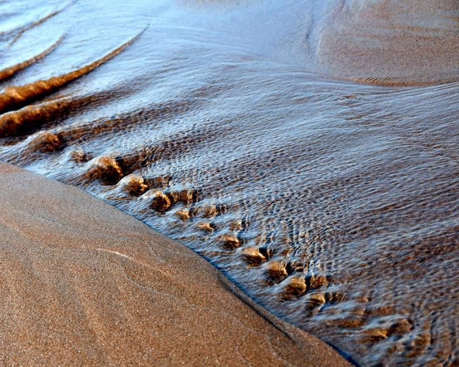
“Drnk frm flwr! Drnk frm flwr!” the snake said loudly.
“Drink from the flower”, Rina repeated in a dull, hypnotic voice, but she snapped out of it a second later. Drink means drink!
She drank her fill, and then some – two and a half fills over. The water was warm, exquisitely clear, and magically delicious. Yet the stream didn't diminish. Rina was so happy – she almost sang! Eventually, she got so ecstatic and playful that she scooped up water with both hands and poured it on the dune, the sand, the tree, everywhere! Of course, she accidentally splattered herself too, covering her sleeves and sundress in dark stains, her face and hands all wet, but she didn't feel cold, she laughed and wanted to waltz! She even splashed a little on the snake – just in case.
The snake also celebrated the pouring water – she drank some, and had as much fun as she could. In the end, Rina remembered (almost forgot!) the plastic bags – giggling, she bolted to her backpack and, rejoicing and humming a merry tune, she started filling them one after another, quickly turning thin, rustling bags into beautifully round, hefty balloons. The snake understood what the girl was doing and also danced on her dune coiling and weaving elegantly with much delight!
Finally, it was time to say goodbye.
“Dear Skrtstn!” Rina stroked the snake's neck with her fingertips. “You are the best, the kindest snake in the entire desert! I will never ever forget how much you did for me!” In response, the snake gently clicked her mouth, nodded, and affectionately rubbed her cheek against Rina's hand...
Soon, Rina was far from that dune, from the wonderful Motionless Snake Skrtstn and her miraculous little tree. The backpack had become noticeably heavier, but the weight was pleasant. The gorgeous Yellow Star impishly winked high in the sky and led Rina farther and farther into the vast, sparkling valley, toward the unknown but so promising Black Sands.
06 – BLACK SANDS
Walking became harder. The sandstone and fossilized crust had imperceptibly turned into a dusty cushion, Rina's sneakers were sinking deeper and deeper, and each step now felt like hard labor. The night had grown so dark that the ground and dunes were barely visible under the moonless sky. Just like before, Rina moved in zigzags from one hill to another, but now for a different purpose – the dunes were the only landmarks in this sooty darkness.
The desert kept changing. On the slopes of the ancient hills, she could barely make out some gray plants, although even in this impenetrable gloom it was clear they were nothing more than dry thorns.
Something rang above – a thin, glassy chime. Like tiny beads spilled by a clumsy hand onto marble. Rina looked up and saw a hundred pale-violet lights swirling in a tight flock, chasing one another in an eternal springtime game.
“Fireflies!” Rina exclaimed and stopped.
These were the desert Crystal Fireflies, as the great poet Albert Kessivinen, who had visited these lands twenty years before Rina's journey, called them in his famous book. Rina was incredibly lucky: such lights were rare, appearing only once a year along the borders of the Black Sands and even then only for about two weeks right after the Little Winds season. Then they would burrow into the sand along the shores of the long-dry lake Lemmi-Nenni, dig down to the moist layers deep below, and remain hidden there until the next year.
By evening, the fireflies had split into pairs and, as always, played their favorite game of tag – bumping into each other in midair. With every successful touch came a faint, barely audible crystal jingle. The charmed swarm spun in blissful circles over the dark dunes. A breeze stirred, and the fireflies, afraid of scattering, dipped lower – some fluttering now right above Rina's hair.
She reached out and tried to catch one of the tiny lights, which had lingered for a moment. She really wanted to examine it up close. Rina had heard many stories about fireflies but had never held one in her hand and didn't quite know what part of them was glowing – their chest or their belly.
But the firefly, noticing her hand, got spooked, darted into the crowd of its playing pals, and began knocking frantically into them with all its minuscule might, setting off a series of desperate cascades of glassy chimes. The fireflies stopped, listened, and then saw Rina standing right beneath them. Who knows what they mistook her for, but they panicked, rose quickly, and soared high into the air. A cool night gust caught the sparkling little guys and carried them off toward the pointed sandy hills. Rina stood for a few minutes, watching the lights fade.
Then, hearing the tearful whining of her tired legs, she decided to sit for a bit – to rest before dawn, before the chilly morning turned into another blazing day. She sank down onto the sand, leaned her backpack against a solid chunk of ancient rock, and closed her eyes.
Her sadness wasn't about the ‘fireflies little lights', no, it was the loneliness – completely alone in this enormous, unwelcoming world of emptiness. She thought of her sister Nina, her Mom, Aunt Vera, her Grandpa and Grandpa-2, both her Grandmas, all her friends – she even remembered her neighbors, then Nurse Kateryna and Doctor Bulah, and a few teachers, and one boy. She thought she really should have left a note for her mom, at least three lines.
But her imagination immediately pictured her mother shut away in her room with a crumpled notebook page in her hand, reading it for the hundredth time, understanding nothing, and crying, crying, crying... Rina felt a sharp pang for Mom, her sister, and her aunt. And for Svetka, of course – for everyone, and yes, for herself too.
“I'll be back soon”, she whispered to the Yellow Star. “I'll find Nina and come straight home with her!”
A glistening tear could no longer be held back, it jumped off Rina's eyelash onto her cheek and rolled down. Rina looked into the cold darkness.
Suddenly, a smile lit up her face – she imagined herself with her sister, both bursting into the house laughing with joy, riding up in the elevator, ringing the doorbell with their secret signal – “Bzzz-Bzzz! Bz-Bz-Bz! Bzzz-Bzzz!” Out comes their mother, suspecting nothing, wiping her hands on her apron, in a cloud of dumpling aromas, her eyes wide with amazement, her face glowing with mirth... The rest was a blur, but the feeling was incredibly pleasant…
Then everyone is in the living room, the tabletop is loaded with treats. Grandpa is popping champagne, Mom is cutting the cake into thick triangles – a real celebration! Bigger than New Year's! All around – relatives and best friends, everyone's laughing, shouting, chattering – joy and sparkle in their eyes.
Finally, the whole gathering quiets down – they want to hear the girls' stories about their incredible, fantastic adventures. Rina, with a mysterious wink, pulls out her magical backpack and shows off the unseen wonders from the six worlds. The guests gasp, leaning in, curious but cautious, touching the treasures with the tips of their fingers.
Then a boy in a white blazer with gold buttons steps forward and says:
“Don't go left”.
“Don't what?” Rina asked, confused. “Where did this boy come from?”
But the boy frowned, giving her a hard look, then he shook his blond head, and repeated in a stern voice:
“Don't. Go. Left! Go right, no matter what!”
“Wait, seriously? Is that your final warning? And what if I just don't want to?” Rina said playfully, with childish defiance in her voice. “What if I go left?”
The boy didn't answer – he nodded, spun around sharply, and walked off. Instantly, she felt cold – a creeping unease.
“Who was that boy?” Rina turned to ask her mother – but Mom was gone. A strange red-bearded man stood behind the girls and tried to touch their shoulders with his long bony hands. Rina flinched violently and... woke up.
Oh! It was just a dream! She'd been sleeping a while, sitting with her backpack still on – not the most comfortable position, actually. She had to spend some time rubbing her numb neck pretty vigorously...
In less than half an hour, the sun would rise from behind the lumpy indigo horizon, and the heat would return. But for now, it was cool. No wind. Low above the ground, long, thin ribbons of morning fog slithered and swayed. A small orange bird fluttered past with a nervous chirp. Probably a titmouse. Rina followed its flight until the birdie shrank to a barely distinguishable speck.
“All right, but why can't I go left?” she mumbled, still puzzled by the strange dream.
She took some food from her backpack and had breakfast – if only those crumbs could be called that – and drank some cold water from the plastic balloon, each gulp smelling like meadows. Fine, it was time to set off again. The sky was whitening, the guiding Yellow Star dissolved into the sunlight until the next evening, but Rina saw her own tracks in the sand and had no trouble finding the proper direction.
In about an hour, she reached a long, streaked dune stretching across the world from edge to edge – or so it seemed. The dune was abnormally tall with dangerously steep, sliding slopes. Luckily, the newborn sun hadn't yet heated the air. Surprisingly, despite the awkward sleeping position, Rina had gotten a decent rest, and though her neck still ached and her legs felt a bit off, overall her body held a good store of energy. Sleep had replenished her like a gas station refuels a car.
After some considerable effort – though without exhaustion – she climbed to the summit, and from there she saw an endless flat plain, spreading out before her eyes. The land was mostly identical to the one she'd crossed the day before. But this new plateau looked more cheerful – splattered across with dark shapeless spots, as if a naughty toddler, left alone in the house, had gotten hold of a paintbrush and sprayed black acrylic over the yellow hardwood floor.
“The Black Sands at last!” Rina congratulated herself and started heading downhill.
Up close, the sand wasn't really black – more of a dark gray with a slight brownish tint. “The color of a sun-tanned mouse”, she said with a laugh. But in fact, the color didn't matter – after yesterday's endless yellow, the “Black Sands” name fit this place perfectly. Beneath Rina's feet, the thin layer of gray granules, scattered by the wind over a hard golden canvas, crunched like late winter ice. Walking was surprisingly easy.
The sun finally woke up completely and was beginning to sting. To the four horizons – a dappled, speckled, flawlessly flat desert. No bumps, no dips. And of course, no shade, no protection from the white flame of the powerful star. Rina looked around and her shoulders drooped – another trial by cosmic fire lay ahead, the blinding light, the hot wind, the unbearable heat...
An hour passed, and the desert changed again – the sand layer got thicker with every step, and very soon her sneakers began sinking again into the hot, pliant mass.
“What if this isn't the Desert Planet at all?” A silly thought crossed her mind. “What if it's just Mars?”
But the new theory faded in no time – Rina spotted a trail.
She came closer and was shocked. At first glance, the prints looked like tracks made by giant ten-meter-long caterpillars, or more likely as if a large tractor had dragged an oil pipe or perhaps a heavy log behind it. Rina forgot everything and hurried along the trail without thinking about possible danger. Five hundred meters later, the trail unexpectedly split in two – one veered left, the other right. Rina stopped, thinking. On both sides – nothing but dark sand. Where to go? And then she remembered the serious boy in the blazer.
“And what if he's another of Herx's students?” she reasoned. “No, Yunni was as calm as stones, but this one is way too intense...”
Of course, she wasn't sure of anything, and it was unlikely that she'd dreamed of someone from Herx's entourage but hadn't seen Herx himself. However, after staring at the diverging grooves and detecting no real difference between them, she followed the right-side trail – just in case, as the boy had advised.
The track first curved, but then straightened out perfectly, as if unknown engineers had laid it with the utmost precision. Rina stepped into the middle line, the one that was deeper – supposedly made by the “log”. And yes, her pace quickened instantly – the sand was shallow there.
“If it really was a tractor or some other machine”, she thought with hope, “that means there were people in the desert. Recently”.
Although, just as easily, the tracks might have come from an unknown desert beast. Or a dragon, maybe. A dinosaur. Rina imagined a green brontosaurus dragging its thirty-foot tail through the sands.
“Well, okay, a big animal isn't so bad”, she said out loud, trying to sound as convincing as possible, as if addressing an imaginary dino, and her own voice somehow reassured her. “A big monster is fine. I'll see it from afar and hide...”
07 – OLUVILA
However, the dark valley was not perfectly flat as it had pretended to be upon first meeting. Barely two hours passed before the strange trail turned to the right again and began a long descent into a rather wide gorge, totally dry and invisible from afar but steadily deepening every minute. Rina grew alert, stopping often to listen to every sound that reached her. But she heard neither the rumble of a tractor nor the roar of an animal – nothing except the whisper of sand under occasional gusts of wind.
Another hour of that slow, cautious trekking passed, and the chasm deepened so much that the horizon disappeared entirely. On both sides, the path was flanked by light-gray stone walls. But soon the canyon widened and deepened even more, and two hundred yards farther it made a sharp turn to the left.
Still vigilant as ever, Rina crept forward, quietly peered around the corner, and... froze, totally stunned by an incredible sight – just a few dozen paces beyond the bend, in a round sandy clearing, a giant tortoise with a purple shell was sleeping. The tortoise was enormous – of phenomenal proportions – almost the size of the twelve-seater minibuses Rina and Nina usually took to the Darnitsa market.
Having had quite enough of staring, Rina suddenly felt an overwhelming joy at her first great victory. An explosion of elation! Right in front of her was that very Purple Tortoise – the mystical purple circle on the map she had traveled toward for so long, so hard, and so stubbornly! All fatigue vanished in an instant! She felt like dancing, screaming, and jumping!
But calming herself a bit and trying not to let her zipper pulls jingle, she took the priceless map from her backpack. As expected, the magical image had changed again. Now the desert was depicted in yellow-gray, and the purple circle was right in the center. Naturally, next to the circle was the funny little figure in a skirt – yes, a skirt and a girl, as always. The black line led upward to the large green blotch, as before, but inside the green, three colored arcs radiated from one point. And closer to the edge stood the same black ant with a small key above its head.
To the left of the ant appeared a blue square, and on the right – a dark triangle with two words in tiny gothic letters. Rina studied them closely and suddenly read the full inscription:
LA FOURMILIERE
Fourmiliere. Yes, La Fourmiliere! Rina knew the word from the movie Antz. She had watched it in French class at school. Twice. La Fourmiliere – the Ant Hill.
“The Ant Hill! That's right! Here's the tortoise, and she'll help me find the ant”.
Taking a deep breath to steady her nerves, Rina crept into the clearing and tiptoed closer until she stood nose to nose with the peacefully dozing Purple Tortoise. A smile rested on its enormous face, its eyes squeezed shut.
“How sad! I have to wake her up. But what else can I do? I'm in a hurry!”
Yes, of course, Rina understood that disturbing sleeping... uh... creatures wasn't right, because the Tortoise might be old or even sick – as the elderly often are. Perhaps at this moment she was enjoying a pleasant dream.
Rina also loved her dreams and hated her German alarm clock, which mercilessly woke her up on school mornings with unbearable beeps – “peep-peep-peep!” To avoid hearing those nasty squeaks, she tried to wake up early to deactivate the alarm by smugly smacking the shiny switch to “Aus”… In short, the big purple elder was a truly pitiable sight! But fate decreed that – whether she liked it or not – the Tortoise was part of this entangled and extremely dangerous business.
Sighing, Rina gently tapped the hard shell three times with her fingernail:
knock knock knock
The Tortoise didn't stir. Rina tapped again, much harder:
ka-knock! ka-knock! ka-knock!
No reaction. Still sleeping! Well, she picked up a hefty, egg-shaped pebble from the ground and tapped the purple shell again:
Ka-KNOCK!!! Ka-KNOCK!!! Ka-KNOCK!!!
The Tortoise twitched her nose but still didn't wake up. After several minutes of varied tapping and even punching, not too hard though, it became clear that this species of desert animal had an incredible capacity for sleep. You had to admire such powerful serenity! There was nothing to do but look for a more effective way to wake ‘the creature'. Pondering, Rina circled around the tortoise:
“She's really strange. Too round, maybe. Or oval-round. As if she'd been turned on a lathe – just the nose sticking out. And the tail. And heels... What? Heels?”
A mischievous idea struck her.
She rummaged in her backpack and pulled out her brush-pen that she'd recently bought on Rozetka – a special pen with a firmly attached stiff watercolor brush. Or maybe it wasn't for watercolors. But it was still a good brush anyway.
Rina approached and tickled a large pink heel with the brush. At that same instant, the Tortoise sneezed. Rina couldn't contain her glee! She ran around to the other side, looked – and her shoulders slumped in despair: the Tortoise was sneezing in her sleep.
“Wild! How can anyone sleep like that?!” Rina exclaimed loudly and went back to tickle the tortoise's heels again.
The poor creature kept sneezing furiously, and muttered something completely unintelligible – and very grumpy, by the way. She thrashed and kicked out all her legs, turned her head to all sides, twitched her tail, and snorted quite menacingly. But! She had no intention of waking up. So Rina approached the front, listened to the tortoise's breathing, and then, unexpectedly, tickled the reptile's huge lilac nose with the brush. And immediately the Tortoise burst into a squeaky giggle:
“He-he-he-he-he-he!”
And... woke up! Hooray! Rina and the Tortoise stared at each other with wide eyes, blinking together in perfect sync. Just like clockwork.
“Hello, good morning”, Rina said somewhat inappropriately.
What was inappropriate about it? The time! Morning had long passed – the burning sun was directly overhead.
“Hello”, the Purple Tortoise replied, surprised and still irritated, though in a beautiful female voice. After carefully inspecting the stranger from head to toe, she hesitantly suggested, “And you are... a boskryk”.
“Who?” Rina didn't expect such a statement.
“No”. The Tortoise shook her head. “Most likely you're not, but it's clear you're from the Steren Velen Verban Purden Borgen Pasten Basten Bemsky Wasteland”.
“Look”. Rina smiled. “I'm sorry, but I'm not from ‘Stere-vere-bere-pere'”. She couldn't pronounce it. “Not from the wasteland. I'm from Ukraine, from Kyiv!”
“From Kee-Wee Wee-Kee U-kee Ree-Kee”. The Tortoise tried very hard but couldn't spit out such a brutal mouthful. Yet she gathered her resolve and firmly declared, “A big special boskryk from Kee-Wee U-Wee!”
Rina laughed.
“From Kyiv. Kee-Yeev! And I'm no boskryk at all, I'm a human, a girl... well, not just a girl anymore, I'm a teenager. My name is Rina”.
“Rina”, the Tortoise repeated easily.
“Rina! Rina!” Rina exclaimed, beaming.
“And my name is Oluvila”, said the Tortoise, and added, “but that's not my real name. If you want to, if only you're curious and prefer to know everything as it actually is, my true name is: Olvo Leela Valo Veela Olvee Lala Luly Vala”.
“Oh!” Rina's brows jumped up for a moment. “I'll never remember that!”
“And you don't have to!” the Tortoise exclaimed excitedly. “Just call me Oluvila. I suppose you also have a longer name. You can't be just one single word, right?”
“A single word?” At such a weird question, Rina's nose even itched. “I... I don't know. Everyone calls me Rina. Some people – rarely – say Reana or Rayna, but I don't like it. Well, I have no other name. Actually, I'm just Rina”.
The Tortoise examined her guest again.
“Maybe, maybe”, she said doubtfully, slowly nodding her head. “Or perhaps you're just too small...” She suddenly remembered something very important and added unhesitatingly, “You're going to Triazis!”
“Tri Azis?” Rina echoed, deeply puzzled. “Well. Not exactly. I'm going to the Ant Hill, and that is why I need your advice”.
Oluvila goggled at Rina with huge amber eyes.
“Unique! We don't have any Ant Hill, no! There's the Sunset Hill, of course, and the Moon Hill, but both are very far – a five-day journey!”
Rina was frustrated: who could help her now if even the Purple Tortoise, Oluvila herself, didn't know where the Ant Hill was? Then she thought to take out the map. But immediately, it became clear that Oluvila had never seen a geographical map before. When Rina pointed to the purple circle and tried to explain that this mark was the Tortoise herself, Oluvila laughed, giggling non-stop for a good five minutes. Several times she quieted for a while, but looked at the map again and laughed anew.
“This is me? He-he-he! That's me? He-he-he-he-ha! Me! He-he-he-he-ha!”
And so on without end. Rina grew a little tired. Finally, after giggling herself into exhaustion, the Tortoise said in a serious, even authoritative tone:
“Oh! Listen! I'm not surprised anymore that you're looking for some hill that doesn't exist and never existed at all. Everything on this paper is backwards. It's unique! Look at me! Do you see how large I am? I'm already six hundred forty-one years, two months, and half a day old. Yet I grow, I keep growing! But here” – Oluvila waved her paw at the map – “here I'm tiny, like a May beetle! You think that's right?”
Rina decided not to argue. She knew from her experience that toddlers typically can't understand maps and get everything mixed up – but you don't scold them for that, you teach them and you love them. Oluvila, though she was truly six hundred years old and even more, behaved entirely like a preschooler. That was because nobody had taught her anything – all she knew, she had seen with her own eyes or deduced with her own mind.
“All right”. Rina did not insist. “Let the map be wrong...”
“Wrong, uniquely wrong!” the Tortoise confirmed.
“But if I go farther along this road, and if I walk for a long, long time, what color will the sand be up ahead? Green or black?”
“Green?” Oluvila opened her mouth wide. “No-o-o, the sand will be black, just like this”. She gestured around. “Because sand is always black. Or yellow. Or dark-black-and-yellow, or yellow-dark-black, or whatever color you like, but green sand, or white sand, or blue, or red – doesn't happen at all. It's forbidden. It's the Law of Nature!”
“Then please explain to me where this road leads”.
“Oh, this is not a road”, corrected Oluvila. “It's a ravine. Or rather, what remains of the Great Blue Ravine. Do you know how deep and grand it was only about three hundred years ago? Down there – at the very bottom – we even used to have water. Unique! Or you don't believe me?”
“I believe you!” Rina said, hurrying to agree. And sighed.
She'd walked and walked, searching for the Tortoise, had found her with much difficulty, barely woken her up – and it turned out the Tortoise couldn't help at all. Not only was Oluvila completely oblivious to how maps worked, and utterly blank on the Ant Hill, and evidently she had never seen green-colored sand, but now she was going to begin reminiscing about her “breaking news” from three centuries ago. And, by the way, there wasn't much time – Rina had to move forward.
“Fine!” she said impatiently. “Let it be a ravine! Or an ocean!” Oluvila wanted to point out the error – there had never been an ocean – but Rina continued. “Let it be whatever you wished three hundred years ago! But now, as far as I can see, it's a road. And I've walked along it for hours. So please, kind tortoise Oluvila, let me know where this way will take me?”
“To Triazis, where else?!” replied the Tortoise, a little hurt.
Of course she wanted to chat about those wonderful happy times when the Desert wasn't everywhere and there in that far-off corner of the world a small, densely populated valley was once prospering – a wide blue river flowed, palms grew on its banks, and she, Oluvila, a silly little tortoise-girl, had roamed across berry meadows with her siblings, rejoicing in the young, tender grass. But nobody wanted to listen, everyone was in a hurry – no time for her – and that was the most hurtful part of her long tortoise life.
“What is this Triazis?” Rina asked.
“Triazis? Oh, that's what we call it for short, you see? But if you want to say it the long way, it's Triple Ample Green Oasis”.
“Green?”
“Green”. The Tortoise nodded.
“There it is!” Rina unfolded the map again and pointed at the large, dark-green spot above, which, much to her joy, turned out to be an oasis and not sand.
“No-o-o”, objected Oluvila and cracked up laughing again, so Rina quickly hid the map behind her back so as not to waste another half hour listening to her giggle.
“Triazis isn't like that”, the Tortoise explained, slightly snorting, but thankfully without actual laughter. “There's grass and blue flowers, and two hundred eight palms – I counted them myself – and three colored brooks, and also...”
“Three? Colored brooks?” Rina exclaimed, accidentally flashing the map and pointing to the colorful strips amid the green spot.
“No! No-o-o! Ho! Ho!” Oluvila broke into laughter. “It is… He-he! He-he! Oh! Stop it! He-he-he! I can… he-he.. cannot! He-he-he!”
Rina quickly hid the map and frowned.
“It's all wrong, everything-everything! He-he-he! In real life these waters are fast, cold, and wet. They are just running creeks! But on your map... He-he! He-he-he!”
Rina let out a heavy sigh. Nevertheless, she'd learned something.
“Got it! First, I'll follow the road”, she thought stubbornly. “Then I'll find their famous Triazis with all its brooks, trees, and ant hills. And the map will show me what to do next!”
“Tell me, please, is this Triazis of yours large or small?” she asked.
“O-o-o!” The Tortoise's eyes widened tremendously. “It's ve-e-ery large! Gigantic! Two days long and one day wide! Uniquely so!”
Rina marveled at the enormity of the desert oasis and feared that finding the Ant Hill would be way tougher than she'd hoped – it would take quite some time. But then a reasonable thought struck he: a tortoise's “two days” might only be an hour at a brisk walking pace. Or maybe less.
Suddenly Oluvila asked:
“What are you able to do?”
Rina looked at her in surprise: what does “what are you able to” mean? Humans are able to do many things! How should she answer? But the Tortoise understood Rina's confusion in her own way and proudly announced:
“I can make a storm!”
“A storm?”
Rina was afraid that Oluvila had some magical power to summon real sandstorms.
“That's exactly what I need!” she thought irritably.
Meanwhile, Oluvila didn't waste a single second, she pushed off with her left legs, flipped upside down with a loud thump – nearly rolling over Rina's sneaker – then tucked back into her shell, let out a squeaky “Yi-he-ho!” and unexpectedly... began to spin. It was hard to believe – but despite the impossibility, the shell was spinning! At first slowly, then faster and faster. It spun on the sand much like a kid might playfully twirl a hard-boiled egg on a kitchen table.
Rina jumped aside because the spectacle looked quite hazardous – the Tortoise was big, and clearly very heavy.
Within a minute, her spinning accelerated unbelievably. Oluvila squeaked with delight inside her shell and seemed quite pleased with her homemade carousel. Sand flew out like rain in the wind – in all directions, showering Rina with dense, shooting streams of coarse black grit. Suddenly above the Tortoise a truly dragon-like, triple-spiral dust whirlwind rose and twisted menacingly.
“Yi-he-hay!” yelled the Tortoise. Her snub face was peeking from the shell, though each time flashing by so quickly that Rina could barely make it out.
Everything ended without warning. Oluvila braked sharply and stopped, the shell swayed and thudded back into place. The Tortoise, having immensely enjoyed the spin, popped her head out and asked happily:
“Did you like my storm?”
“Oh! Yes, I liked it very much!” Rina said, trying to shake half a pound of sand out of her hair. “I've never seen anything like that”.
Oluvila's face spread into a wide smile.
“O-o-o! If so, I will give you my Night Glass”.
The Tortoise retreated back into her shell, and soon, after some clinking and rattling inside, appeared again. But she got the exit wrong – her head now poked out from the spot where her pink tail had been moments ago – so Rina had to come around to the other side.
“Here! Take it!” said the Tortoise, extending a flat square of glass on her left foot. “My gift! For you!”
Rina cautiously took the little rectangle.
“What is it?”
“This is the Night Glass, I said”, explained the Tortoise. “If you ever have to walk through the dark of the blackest night, when you can't see anything and might get lost – just look through the Glass with one eye”.
“And what will happen?”
“It'll be like daytime!” exclaimed Oluvila. “You'll see for yourself!”
Rina thanked her and decided she should give something in return. But what? Flipping quickly through all the contents of her backpack, she found nothing suitable except for a small strap with a toy plastic compass attached.
Actually, Rina had two compasses: one real, made of heavy copper, with a mirror, numbers all around, and a plate with a long thin slit in it – that professional compass was in the outer pocket, Rina couldn't part with it, now she was a traveler, and as everyone knows, travelers don't go anywhere without a compass. As for the second one, the toy compass – she had brought it along purely out of a habit, “just in case”, and honestly, it was never needed.
Rina took it and put it on the Tortoise's finger – well, more precisely, on her claw. Oluvila was astonished, and once Rina explained how to use it properly, the Tortoise was absolutely delighted.
“Remarkable magic!” Oluvila even bounced slightly despite her horrifying weight. “An unseen wonder! Look – wherever I turn, the red tip points forward!”
“North”, clarified Rina.
“North! And the blue tip – backward!”
“South”.
“South!” exulted Oluvila. “Magic! Real magic! Unique!”
Rina thought, “Herx was right: what's ordinary for one seems wizardry to another”.
After playing with the compass for some time and admiring the new “witchcraft”, Oluvila said in a lecturing tone:
“If you go to Triazis, don't mess around and make sure you listen to the tuslins”.
“Listen to who?” Rina didn't get it.
“Tuslins! They sing, and you listen and obey, and go from one tuslin to another”.
“Why?”
“It's simple! All tuslins live on oasis roads. And if in any desert you hear a tuslin singing, follow its song and don't turn aside, and then you'll definitely reach the oasis you need – if, of course, you obey quite carefully. And in the oasis, there's always water and coconut buns. I mean nuts. That's what I call them. There's nothing tastier than coconut buns! Nuts, I mean”.
“I don't know”. Rina shrugged. “I tried one last winter and didn't like it”.
“That's because you haven't eaten nuts from Triazis! Only there do the real bun-coconuts grow, only in our Triazis! That's exactly why you absolutely must go there!”
“Yes, I understand. I'll go to Triazis, and I'll hurry”.
“Hurry?” the Tortoise was flabbergasted, she lifted all her legs in shock. “Is that how you hurry? When I'm in a rush, nothing can stop me! I've been hurrying for twenty-seven weeks already!... Or twenty-nine?”
“And where are you hurrying to?” Rina asked, just out of courtesy.
“Hurrying? To my uncle Obbaun, of course, where else?” Oluvila answered simply. “I'm hurrying for his Birth-Big-Year. This century, he turns forty. A jubilee! He's old, my uncle, he is very, extremely, overwhelmingly old! Three times older than me! Or four? Imagine! He's had thirty-nine Birth-Big-Years of forty years each. Beyond all belief!”
“Tortoises sure count time strangely”, thought Rina. “Is there even such a thing as a ‘birth-big-year?'“ But she preferred not to ask out loud, or else she'd be stuck for another fifteen minutes at least, listening to complicated tortoise explanations mixed with five-hundred-year-old memories – and heaven forbid, the giggles. Getting ready to head out, Rina said with sincere gratitude:
“Thank you very much, Purple Tortoise Oluvila! Now I know exactly where to go and which road to take!”
“Of course – along the Great Blue Ravine, for coconut buns!” The Tortoise smiled and added, “Unique!”
“Exactly, for coconuts!” Rina smiled too.
She felt calm and relieved. After all, the Tortoise was kind and funny – or better yet, sweet and amusing.
“Goodbye!” said Rina. She wanted to hug her new friend, but how could you do that? No arms would be enough. “Thank you for your help and for your great gift, the Night Glass!”
“Goodbye! And thank you for the compompalalas!” answered Oluvila.
Rina didn't correct her. She thought, “Really, what difference does it make what it's called – compass or compompalalas?” Especially since tortoises, as everybody knows, love long, tangled-up words. Let her call it whatever she likes!
Strapping on her precious little backpack, Rina headed down the road. After about forty steps, she turned around and waved both hands at Oluvila. The Tortoise lifted her front legs in response.
“That's it”, Rina thought. “Soon I'll find the ant, and then the golden key – the way out of the Desert. The Exit!”
That idea made her happier.
“Everything's fine”, she said aloud, picking up her pace, and no longer paying attention to the scorching sun or the stuffy, overheated air.
08 – GRI-GRI
part one
Maybe she'd gotten too lost in thought to notice how time had flown by, or perhaps Herx's map really wasn't all that accurate, just as Oluvila had claimed. But soon, Rina climbed the long, gradual slope, and as she emerged from the Blue Ravine onto the flat surface, she saw a green island with trees in the distance. Round, sandy dunes, pretending to be real ocean waves, hid the island's base behind their crests, but hundreds of fluffy palm tops – so far away they looked like thin blades of grass – peeked out invitingly, promising cool shade and a nice, relaxing break.
Rina estimated the distance at a glance – at least a two-hour walk. She was starving and, of course, terribly thirsty, so she decided to backtrack to a turn where she'd seen a ledge sticking out of the sandstone wall about twice her height off the ground. From that plain little overhang, a weak, pale shadow fell – but anyway, it was the only shade around. Rina sat down on the ravine's floor, pulled the sad remains of food from her backpack along with the still-full plastic balloon of flower water, and ate what barely qualified as lunch. Most importantly, she drank. The water was warm, but it tasted amazing. Then she rested for a couple of minutes, just sitting there leaning against the flat, rough rock, relaxing as much as she could in the hot air, and thinking fondly of her Kyiv.
“Everything's so weird”, she thought. “Here I am, in the desert. All around me just sand and heat, and at this exact moment in Kyiv, after the rain, cars are moving, people are out walking, and someone's sitting at Kartata Potata, looking out the window and making their own artisan pizza with triple cheese... Wild!”
After regaining some energy, she climbed back onto the smooth surface, which was patterned with gently sloping folds of low sandy mounds, and set off toward the green oasis at a brisk pace. But after a couple of minutes, she stopped and said in surprise:
“No! What's this? Some kind of your witchcraft?”
What startled her was that in just two minutes, the green island had come so close it seemed she'd already been walking toward it for a good hour and a half. The nearest trees were just about two miles away – or maybe even less. Looking closer, she could see not just palms, but also cypresses, grassy hills, and the tops of blooming bushes. Rina stood there, dumbstruck, then decided to keep going without looking directly at the oasis. If the road really was magical and had shortened all by itself, what was the harm? Better not to interrupt that kind of enchantment. Old fairy tales taught her that magic often works only when you're not looking at it.
“Yeah, better to watch the sand under my feet and count steps”.
She aligned herself carefully – right for the center of the green island – and began marching with her head down.
One two three four five six seven eight nine ten eleven twelve thirteen fourt...
Boom!
“Ow!” Rina cried out, grabbing her forehead – she crashed full-speed into a palm tree at the edge of the grove.
It may sound weird, but somehow, in just fourteen steps, she'd managed to cover far more than an hour's walk. And with no tuslins involved. Rubbing her forehead, she looked back at the sand and dunes – there, about forty yards away, right on the impeccably smooth surface, was a single footprint of her sneaker, as if she'd leaped across the entire desert on her left foot in hundred-meter-long jumps.
Dumbfounded, but unable to come up with any reasonable explanation for this trick, she stepped onto the thick, springy layer of grass – so even that it looked as if it had been recently mowed – and found herself in a cool, dark coconut forest. The dense, bluish shade cast by dozens of palm canopies, joined high above, blocked the baking sun. There, around Rina, the slender trunks stood like carved columns. The hot desert breeze still managed to reach in with short, angry gusts, but with every step, the coolness and humidity started to win out.
Soon, a sunlit meadow came into view, carpeted with a fine brush of young, emerald sedge. Beyond that were fluffy bushes dotted with clusters of canary-yellow buds and – what's this? – a narrow clay path peeking through the greenish foliage! Rina couldn't believe her eyes. Beaming with joy, she sprinted across the meadow, landing with both feet on the firm, well-trodden trail, feeling as if a real Everest had been lifted from her shoulders.
“People! There are people here!” she exclaimed, and took off running along the pathway, deeper into the lush thickets of mahonia.
But she was wrong. It's not only people who leave paths behind. And although there were never any dangerous animals in Triazis, there weren't any people either. Or rather, seven hundred years ago, an owl named Kailla used to tell her grandkids how five wanderers once entered Triazis, coming from a distant land they called the World of Morroddo. But where that land was, what kind of world it was, and who those wanderers were – Kailla didn't know.
Since then, Triazis had mostly hosted tortoises, ground squirrels, lizards, boas, hedgehogs, and toads. Occasionally, three cute, funny rattlesnakes – Shana, Shata, and Shada – would come too. And young foxes would show up, just out of their innate curiosity. Triazis was also a shelter for birds on their way to other oases. And a colony of red butterflies settled in the place, but they never considered themselves locals. Anyway, nobody knew who made this narrow trail that ran through both the Round Meadows and the Colorful Spring.
Rina ran along the path. The scenery changed quickly. The bushes were left behind, the palm trees thinned out, and then disappeared altogether. The path flashed between two pyramids of fossil shells, then timidly passed through a patch of spiky cacti, climbed a hill, dropped suddenly down the slope, and popped out onto a big, bright spot covered with sharp-leaved grass that Granny Anya calls “moon wheat”.
And there Rina witnessed an astonishing miracle: just a few steps off the trail, right in the middle of the clearing, there was a flat stone circle, and in its center, a shallow well with walls made of matching slabs of blue slate, and there, at the bottom, from three round holes, burst a strong, noisy, geyser-like spring. The water gurgled merrily between the stones, shooting off in all directions in two dozen crystal streams, and gathered into a mighty brook rushing back toward the palm trees.
Rina stepped closer to the water, leaned over, and touched it with her finger – it was freezing! She took off her backpack, lay down on the grass, and started drinking. The chill stung her mouth and throat, her teeth ached from the cold, but she kept gulping, feeling life itself flowing like a powerful current throughout her entire body.
A spring in the desert is real magic, way more meaningful than a shadow without a bird, or even a talking tortoise.
After drinking her fill, she rolled onto her back, closed her eyes blissfully, and lay there for a loooong time, not thinking about anything. She almost fell asleep. But a soft noise to her right disturbed her. Sluggishly and sloooowly, she turned her head, looked lazily... and leaped up like a scalded cat out of hell!
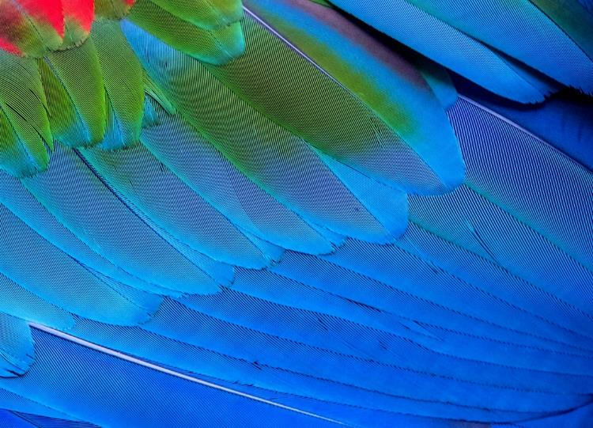
On a bent willow branch sat a giant blue parrot, cheerfully rocking and peering at Rina with its curious, gleaming eye. It looked just like the budgies they sell in Kyiv – kids call them ‘wavies' for the ripple patterns on their backs – but this one was a hundred times bigger – almost condor-sized, much larger than horned owls.
“Gree-gree!” trumpeted the parrot, swinging on the creaking branch like a seesaw.
In a horrible panic, Rina grabbed her backpack and rushed across the clearing full tilt, away from the monstrous bird.
The parrot majestically spread its enormous wings, deftly hopped up, and took off into the air. It made a wide half-circle, rose higher, and glided down from above toward the fleeing stranger.
“Greeeee!” it blared right above her head.
Rina was dreadfully frightened. Madly running at full throttle, she glanced up and suddenly, stumbling over a protruding root, she flew – head heels hands screams – right into the high barbed grass, painfully bumping her chin on something and scraping her knee on something.
“Go away! Shoo! Scram! Get lost!” she shouted, scared witless by the parrot monster circling above her. She grabbed a piece of dry bark lying at her feet and, with all her might, threw it at the bird.
The parrot jerked to the side and nearly crashed into an old palm tree standing alone, then turned sharply and shouted back:
“Hey! What are you doing?! Don't throw stones!!”
Rina was confused. Apparently, she had relaxed too much, too deeply, resting by the spring, and had completely forgotten that she was not just in a green oasis in the middle of a desert, but in a green magical oasis in the middle of a magical desert, and that the animals and birds there were not the kind of living creatures back home.
But the parrot's indignant speech, totally unexpected, brought her thoughts into some sort of order.
“Then why did you attack me?” Rina asked loudly in self-defense, already calming down though still standing in the tall, scratchy grass.
“I did?! Attacked?! You mean me?!”
The parrot was descending, preparing to land.
“Did I attack someone?” Finally, he found his mark and landed gracefully on a grassy mound. “If you think what I did means an ‘attack', then you are sorely mistaken. By Law, it's called – you know what? I know and I'm telling you – we call it ‘he approached and said hello'!”
“Said hello?!” Rina was baffled. She stepped into the open, meticulously smoothed back her hair, dusted off her sundress, and adjusted her backpack. This routine helped her fully regain her composure.
“Exactly!” exclaimed the Parrot. “I approached... or, I would say, I flew up closer and was just about to ask how you're doing, how's your health, your family, how everything is in general, and all of a sudden you threw a stone at me for no reason, as if I were a real tiger or a hippopotamus, I don't even know. And by the way, if you truly think that it's okay to just throw stones at non-tigers and non-hippopotamuses, then you are very mistaken. Very much so! I assure you!”
The Parrot resolutely came closer, and Rina saw that he was more comical than monstrous, and even, probably, defenseless. Most likely, he was young, possibly a teenager like herself, despite his extraordinary size.
08 – GRI-GRI
part two
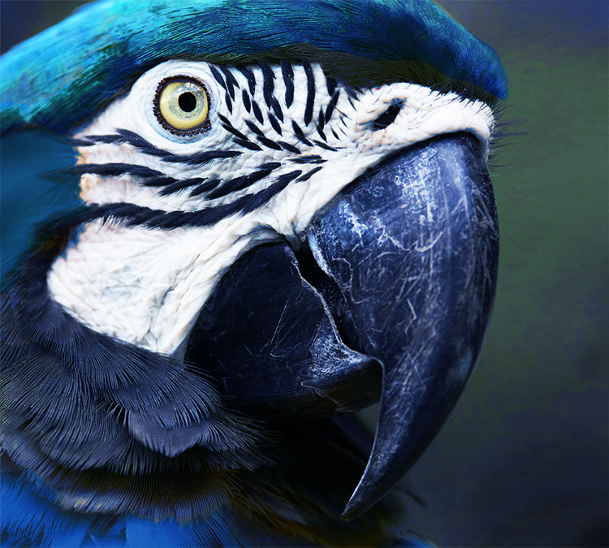
The Parrot paused, took a deep breath, and continued:
“Just imagine, please, what this world would turn into if all of us, thousands of birds and thousands of animals, were to pick up stones, sticks, and... and everything that can be picked up in our paws, and start throwing them at each other. We'd smash everyone's heads! Eventually. Do you understand?”
“I didn't want to smash anyone's heads”, said Rina calmly. “I just got scared of you”.
“Scare-rer-red? Of? M-me?” stuttered the Parrot, totally stunned.
He stood there with his beak open, blinking his blue eyelashes, then lifted his wings and ran to the water, clownishly shuffling his orange feet and slightly hopping for speed.
In that way, he galloped through the glade to a little lake, full of rather deep and dark water. Actually, it was just a widening of the brook. The lake served as a mirror for some oasis dwellers. The Parrot looked into it, turned his left side, then his right, tilted his head here, there, and even managed to look at himself from the back. He then dropped his wings and, with an extremely sad expression, trudged back to Rina, who struggled hard not to laugh.
“Of course”, he sighed heavily. “No wonder you got scared of me. I'd be scared of myself too if I saw myself from the side”.
“But by the way” – he perked up – “if you think that I'm like this, I would say, messy not just today but daily, then you're mistaken, very mistaken! By law, it's not my fault! It's all Peglet! I haven't slept all night! Three nights! Look, do you see these ghastly bags under my eyes? And the awful color of my beak? Horrible! And all this because of what? You're still asking me because of what? Because how can one sleep through this screeching?! I'm telling you, it's all Peglet!” Each phrase made the Parrot bob up with anger and exasperation.
“Through what screeching? And who is she, that Peglet?” Rina was puzzled and thought that maybe he meant “piglet” but could not pronounce it the right way.
“Not ‘she', it's ‘he', I would say”, corrected the Parrot. “Peglet – he is a wet mouse. A wet boy-mouse, who's of no use at all, just a screecher! He says he's preparing for the contest. As a singer! Can you imagine? He's barely visible, zero size! But also wants to be famous! A screechy little wet nothing!!!” The Parrot yelled the last phrase furiously, turning his head toward the forest. “Washed-out opera!!!” he cried. “And if you think”, the Parrot said to Rina, lifting his wing, “He'll just keep singing the whole time, for weeks on end, and I'll suffer, never sleeping at night and being tormented by headaches, then believe me, you're mistaken, very mistaken!”
The Parrot huffed. Rina kept silent.
“And what can you say to that?” he asked, clearly expecting Rina's understanding or at least sympathy.
“I'm sorry”, she replied as politely as she could. “It's my first time in the Desert, I don't know anything in it yet, and I have barely seen anyone here, just a few... um.... persons. Besides, I'm in a big hurry. I have a very important matter to deal with”.
“An important matter?” The Parrot looked astonished. “Here? In our Triazis there are important matters?”
“There are! I'm looking for the Ant Hill. By the way, would you be so kind, dear Parrot, as to tell me where this hill is and how to get there?”
“That's all nonsense!” The Parrot brushed it off casually. “You can go there”. He pointed his wing somewhere to the right. “You can go here”. He pointed to the left. “All the same! The thing is, if I'm going to spend every night like this, and then fly all day with a headache until their stupid contest...” Here he stumbled and his eyes widened in horror at his own words. “Until the contest? The mice will screech every night until the contest?! No-o-o!!! That's hell and a nightmare! Can you believe it?!”
“I do, I can!” sighed Rina. “In our house, in Kyiv, a little kitten lived on the fifth floor, and at night it would meow. On the balcony. Every night. Of course, the kitten meowed very quietly, but his never stopping meow-meows were so plaintive that it made you want to cry. And I couldn't sleep at all. Then I'd walk around all day with a headache, just like you”.
“And what then? How did it end? I hope you tore him into slices and ate him up?” asked the Parrot with much interest.
“What are you talking about! How can you eat a kitten up?” Rina was shocked.
“Oh! Of course, I don't know a thing about kittens. Maybe eating kittens isn't very fashionable in your society, or perhaps they give you a stomach ache, so it's better not to touch them. You were absolutely right not to eat him immediately, maybe you'll slice him later when he grows up properly. But eating all sorts of wet mice is not a problem at all!” He shouted the last part, turning again to the forest. “Listen, I'm telling you honestly, if you think that I'll endure the torment for a hundred years until their ridiculous contest, and if you say it's forbidden to eat these genius singers, then I'll give it to you straight – you are mistaken, and...”
“And I know – I'm very much mistaken”, Rina finished for him.
“Exactly!” The Parrot jumped almost two feet high. “I'll gobble him down! You'll see, be my witness, I'll definitely swallow him in a wink! I have no choice! They left me no other option! It's the only way out, I would say, absolutely!”
“No need to eat anyone”, Rina suggested. “If you want, I can just go talk to him. Show me where your mouse lives, and I'll tell him everything. I bet he doesn't even know his singing is annoying you”.
The Parrot froze, his beak wide open.
“You will?! You really want to help me? Just like that, right away, you'll go and talk to Wet Peglet?”
“Of course I'll go and talk”, Rina reassured him. “I'll help you solve your problem, and you'll help me with mine – with the Ant Hill. Shake on it?”
“Sh-shake”, the Parrot answered uncertainly and shook his head, as if really trying to shake off a delusion.
In the end, both decided not to postpone important matters and to go to the mice immediately. Despite being a bird, the Parrot often enjoyed going on foot. He liked to alternate between the two ways of moving. So they walked along the path, Rina behind, and in front of her, the strikingly gigantic blue Parrot. Unreal! Almost shoulder-high!
“And why are the mice wet?” Rina asked after a long silence.
“Wet?” The Parrot turned around. “Of course they're all wet, all the contestants! Not dry, are they? They drink water”.
“So there are also dry mice that don't drink?” Rina guessed.
“Naturally, they don't drink! There's not a single drop of water there, so they're dry!”
“Where's there? In the desert?”
“In the desert, in the desert”. The Parrot nodded. “No one drinks water there! I mean absolutely no one! Not a single living creature! And where would they get it, this water, by law? Just sand and stones!”
Rina thought for a while and said, “Well, I think you are not exactly right. Some creatures still drink. For example, the Motionless Snake Skrtstn does”.
The Parrot stopped so sharply that Rina accidentally stepped on the tip of his tail.
“You know the Snake Skrtstn?” he asked in a half-whisper, slowly turning his head a full one hundred eighty degrees and staring at Rina with bulging eyes.
“I do”, she replied simply. “I met her recently, just last night, and she gave me water from the flower”.
The Parrot sat down on the path – simply collapsed right on the clay. He seemed to be speechless, as if he had never spoken before. A minute later, blinking his long eyelashes, he said sorrowfully, in a tragic, sepulchral voice:
“And you drank that water”.
“I did. Why?”
The Parrot sighed, stood up, and shook his wings.
“Oh, nothing, nothing, don't worry”. He started walking along the path again. Rina followed him. The next minute passed in silence.
“That's how everything happens in this cruel, shameless world!” the Parrot cried theatrically after three dozen steps. “Someone visits her for a hundred years in a row. He serves her, he pleases her, fulfilling her tiniest wishes, her subtlest – I would say – whims! Even, I must say it, he even humiliates himself! Yes, exactly! Hu-mi-li-ates! For a hundred years! Imagine! And then? What does he get for his efforts? Nothing! Literally no-thing! No attention, no gratitude! Zero! And some others come for the first time in their lives, just passing by, just dropping in accidentally for a minute, and they get everything right away! Right on the spot! Even the water from Shltstkn! Where's the justice? Where's the law? I'm asking you!”
“And what does this water from Shtl... shl... snts... do?” Rina asked.
“From Shltstkn?” the Parrot prompted eagerly. “Oh, nothing. Just nothing special. But the one who drinks it can move through the earth like the roots of Shltstkn”.
“And how do the roots of this shtl... tsn... khn move?”
“Roots? However they want, that's how they move!” the Parrot shouted somewhere off to the side and flapped his wings irritably. But soon he pulled himself together, glanced around with his deeply sad eyes, and explained in an almost calm tone:
“They move like this, for example, right now this root is here, you see? And a minute later – whoosh! – it's already ooover there! Behind those palm trees. That instant leap of the Shltstkn roots across any distance. Is that clear?”
“So now, you say, I can move wherever I want, like those roots?”
“Of course you can! You drank the water! Didn't she explain it to you?” The Parrot stopped again and energetically spun his head. “You absolutely can! Right now you're here, and then whoosh! – and you're already there!”
“And what do I need to do for that?”
“Do for what for that what?”
“Well, so that I'm here first, and right away I'm there?”
“A-a-ah! Nothing! You don't need to do anything. Just wish it, and that's all”.
“Wow! Now I understand!” Rina cheered. “Today I've already moved like the roots of that shl... shts... kn!”
“Like Shltstkn? Already moved today?!” The Parrot didn't believe her.
“Yes, you're right, today! I was walking to this oasis through the desert, walking and walking and walking, and it was so far away, the air was so hot, and my feet hurt so much, and then I really wanted the oasis to be just a little bit closer”.
“And what?! And what then?!” The Parrot impatiently hopped in front of Rina, shouting into her face.
“And I moved! Triazis became close! I walked farther, and probably wanted to get right inside the palm grove – I don't remember exactly what I wished for – and... and...”
“‘...and hit my forehead on a tree like a ram'“, Rina almost said, but caught herself in time and continued, “...and immediately I ended up right here, in Triazis”.
“In-credible! A-mazing! Marvelous! Fantastic!!!” The Parrot was jumping around in delight. But a minute later he drooped, fell silent, and lowered his wings.
“And how much of that flower water from Shl... ts... kn do you need to start moving like its roots?” Rina cautiously asked after a pause.
“Water?” The Parrot shook his head sadly. “Not much. Actually. One ksn. That's about two or three sips”.
“Hooray!” Rina shouted so suddenly that the Parrot jumped about eight steps back in fright. “I have it! I do have those two or three sips! Way more than two or three sips! For you!”
The Parrot blinked rapidly, not understanding anything, but Rina was already taking her amazing backpack off her shoulders. Untying the strings, she took out, carefully and gently, like a fragile treasure, a half-empty transparent plastic bag with warm magical water inside.
“What a W! I forgot to pour it out and take fresh water from the spring!” she thought, and then said aloud, “Here! This is the water from your Shlt... shn... skn!”
The Parrot shifted his frantic gaze from the bag to Rina, then down from Rina to the bag, and it was clear he literally couldn't believe his eyes.
“Take it! It's really that very water!” Rina held out the bag at arm's length. “I took some extra last night! Right from the flower. Take it, I don't need it anymore. I'll get fresh water from your spring”.
“No, no, no”. He swayed his head, deep in thought. “I walked for a hundred years... I served... I pleased...” The Parrot fearfully touched the shiny plastic with the tip of his wing and kept muttering as if in a trance, “Served... pleased... walked...”
“Take it, take it!” Rina insisted. “Drink it!”
“Drink?!” The Parrot suddenly snapped to attention, and then, with an unexpected lightning-fast strike, stabbed his sharp beak into the bag so hard that Rina could barely hold it in her hand. Within a minute, the bag was emptied to the last drop.
“And I always said this is exactly how it would end!” the Parrot proclaimed proudly, wiping his beak on the grass. “I have obtained the water of Shltstkn! I did it! No matter what they say, I obtained it!”
“Of course”, Rina agreed. “Of course you obtained it. And now, please, let's go to your little mouse Peglet. I'm really in a hurry”.
“To Peglet? To anyone at all!” he exclaimed. “Even to Golokaan if you wish! For your sake, I'm ready to go wherever you say, to the edge of the realm, to the Moon and beyond! ... By the way”. The Parrot looked at Rina strangely through a sly squint. “You and I, we still haven't introduced ourselves, and that's against the law”.
“Right, it's against the law”. She smiled. “My name is Rina”.
“And I'm Gri-Gri!” said the Parrot joyfully.
“And I knew that, actually!” Rina laughed. “When I was running away from you!”
“Gree-gree! Gree-gree! Gree-gree!” the Parrot shouted, hopping on one leg.
09 – LA FOURMILIERE
part one
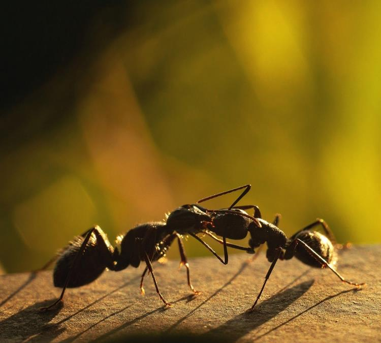
The path led the friends out onto a dandelion field, and now, right at their feet, a yellow stream sparkled and danced – swift, cold water the color of ripe lemons. The little rivulet was so narrow it didn't need a bridge – a single step, and you were already on the other side. Rina asked:
“Why is the water yellow? Is it a pigment? Or paint?”
“Paint?! What paint?” Gri-Gri was startled, then dissolved into laughter. “Oh no! Ha! There's no paint here! This is our famous Yellow Flower Brook – it's always this color”.
“Yellow... brook...” Rina repeated thoughtfully.
A sudden idea from her geography lessons popped into her head: the Yellow River, the Grand Huang He, which flows all the way across the Great Chinese Plains, must start from just such a little yellow stream, too.
“Yellow! Yellow!” Gri-Gri nodded. “There's also a Blue and a Pink one – all three brooks run from that spring on the Spring Field, where we first met, remember?”
“Hold on!” she exclaimed. “I forgot, I have the map!” She jumped so high that even the Parrot was surprised. “Your brooks – the three colored lines!”
“Lines? What lines?” Gri-Gri didn't quite catch the word.
“I'll show you! Watch!” she said, slipping off her backpack and pulling out the map.
Unfolding the large, rustling square of paper, Rina gasped and stared in amazement: the map had changed dramatically – it looked like it had been swapped for another one! Now it was a map of Triazis – a marvelously depicted drawing with all the meadows, paths, fields, streams, hills, and dips accurately marked, and even the palm trees were shown as small green circles, each one separately. Gri-Gri raised both wings and stiffened in awe and silence. But not for long.
“Wow! It's beautiful! This is what beauty means! If you think I've ever seen anything this excellent, you're wrong, completely wrong!” he mumbled enthusiastically, tracing his beak across the varnished paper.
Three inches to the left of the center was the famous Colorful Spring. A gray stream flowed out of it, but soon it split into three thinner rivers, each a different shade: yellowish, bluish, and pink. A brown winding line ran to the Spring – the clay path. First, it turned eastward, then crossed all three streams one by one and led to the other edge of the map, where it ended in a round meadow dotted with dark green spots. Rina pointed at the path:
“So we're going to cross the other two brooks too?”
“Of course we will”, Gri-Gri confirmed. “The Blue Brook is right there, just past the cypresses, and the Pink one is a little farther on”.
“But how come your Colorful Spring isn't colorful at all – it's just regular clear water? So why are the brooks colored?”
“That I don't know”. The Parrot flapped his wings slightly. “I haven't been here long enough – only two hundred and three years. When I flew down here from the Southern Karlan-Narlan Valley, everything was already exactly the way you see it now”.
“And do you drink the colored water right from the brooks, or do you always have to fly to the colorless Spring?” Rina asked, for whatever reason.
“Why would I fly to the Spring?” Gri-Gri missed the point. “If it's too far, I drink wherever I want. When I'm thirsty, of course”.
“But the water – it's colored. That means there has to be something in it that gives it the color. You say it's not paint, fine, but there must be some kind of coloring in it anyway. What if it's harmful?”
“Harmful? Of course not! It's just flower water! Look – only yellow flowers grow along the Yellow Brook!”
Rina glanced and was surprised she hadn't noticed such a curious feature before. Sure enough, on both banks grew all sorts of flowering plants, large and tiny, tall and short, but every one of them was the same lemon-yellow color as the stream itself.
“And blue flowers grow along the Blue Brook”, said Gri-Gri in a lecturing tone.
“And pink ones are by the Pink Brook”, Rina guessed.
“Oh! How do you know our top confidential hush-hush covert beans?” the Parrot questioned in a mock-resentful tone and winked. “Of course they're all pink! What other color could they possibly be?”
“And if I drink the yellow water, will I turn yellow?”
“You know”, said the Parrot earnestly, looking around as if someone might be eavesdropping behind the trees, “I'll let you in on a secret – just don't tell anyone. About seventy years ago”, he went on, “a little green monkey named Mari-Rani showed up in Triazis. Before that, she'd lived somewhere in the Enimus Mountains – I don't know exactly where it is, but they say it's far away, a half-night flight from here. And someone over there, not knowing any better, told her about this colored water. Somehow she managed to make it through the entire Desert and reach our oasis. Well, Mari-Rani the monkey made a habit of drinking yellow water. Only the yellow. And a lot. From morning to night, every day. She even got sick from over-drinking”.
“But why would she drink so much?”
“Why?!” the Parrot cried. “To become yellow, of course! Just like the water!”
“It doesn't make sense”. Rina gestured with both hands in confusion. “What's the point of being yellow?”
“Ha! If you think I understand monkey nonsense, you're mistaken”, said Gri-Gri. “But it doesn't matter, I would say. The main thing is, it didn't work. Imagine! Didn't happen at all! She stayed as green as ever – not a single hair turned yellow, I swear”.
“And then? Did she go back to her homeland?”
“Probably”, the Parrot answered indifferently. “I was busy with many other things back then, and I don't remember what happened to her. I think she left Triazis with a pack of sand foxes, they travel west every five years. The foxes don't go into Triazis – they don't like it here, I suppose. They usually sleep on the sand by the Ravine of Red Cacti and stay around there for three or four days straight – resting, I would say – then they head quickly to Mount Katilum. They always have a gathering there. Didn't you meet them? This is the Fifth Fox Year, after all”.
“No, I didn't see a single fox”.
“Then you must have come from the other side”, Gri-Gri said confidently. “Otherwise you would remember the foxes glowing red”.
Rina was amazed by the news but decided not to ask any more about the glowing foxes. First of all, she hadn't run into them, and now they were heading toward the mountains in the opposite direction. Second, and more importantly, they weren't on the map. And if something's not on the map, then it's never needed... although the Parrot wasn't on the map either, but he was needed. In fact, he was absolutely required – the Parrot was indispensable! Rina fell deep in thought...
Soon they stepped over the Blue Brook, with its banks tightly covered with Chicory and Irises, and then over the Pink one. Along the way, Rina couldn't resist picking a strikingly beautiful and quite unusual blossom from a tiny tree by the Blue bank. It caught her eye at once – a camellia, her mother's favorite flower. Mom called camellias “the symbol of devotion and loyalty”. But – do blue camellias even exist? Rina gently placed it into the left pocket of her sundress. A keepsake, and something to surprise her family with, especially her Granny who's an expert with flowers.
At the Pink Brook, the companions paused for a minute. The Parrot stared, as if entranced, at the fast-moving barbie-pink water, as if remembering something important. Rina took advantage of the moment, rinsed her hand, scooped up a few sips, and drank – it tasted just like ordinary spring water. Gri-Gri didn't notice a thing.
She looked at him and asked, “Why aren't any mice marked on my map?”
“How should I know?” The Parrot shrugged, snapping out of his contemplation. “It's your map, not mine”. But after a quick moment of pondering, he added, “Apparently, the artist didn't draw the mice because maps always show only what's above ground, but mice don't live on the surface – they're underground animals”.
“Then what about ants? They're underground animals, too. Well, insects. Under-the-surface ones, but they're on the map”.
“No, not the same”. Gri-Gri shook his head. “Ants only sleep underground, but they still live under the sun. Mice are the opposite – they come out at night. So if you want to draw mice, you need to make a nighttime map, not a day one. But it's dark at night, right? Then you'd have to paint the whole paper totally black”.
Rina listened and felt slightly thrown off – Gri-Gri was so smart! And on Earth, in all the cartoons, parrots are either fools or dimwits. She thought that was unfair...
When they stepped out into a round clearing with a tall palm stump in the center, Gri-Gri immediately ran to it, jumped up on top, and announced from up there:
“Attention, I'm starting to get spinheaded!”
“Spin-what?” Rina didn't catch the word.
“Spin! Headed!” the Parrot repeated much louder. “We've been walking for a full half hour, and after an overly long stroll, you always get spinheaded. It's a body law! But don't worry, this will end very soon”.
Gri-Gri sat down, closed his eyes, and grew still. Then he slowly turned his head to the right. But he didn't stop – when his beak passed over his shoulder, his head kept moving behind his back and soon made a full rotation around its axis, meaning around the neck. Then the second rotation, then the third. With each moment, the head spun faster and faster. Rina watched this spectacle as intently as she could and started counting the turns without realizing it, but when she got to seventeen, she lost count, because Gri-Gri's head was spinning so fast there was no way to track the disappearing and reappearing beak. Rina got scared for the Parrot – what if he got sick with such a wild spin? But then she remembered the Purple Oluvila and her “sand storm”.
“Maybe spinning is a special trait of everyone who lives in the Desert. I wouldn't be shocked if sand foxes spin too”. She imagined a big red fox spinning her luxurious, bushy tail like a fan. Funny.
But after about three minutes, the Parrot's head started to slow down, and very soon, it came to a full stop in its normal position. Gri-Gri ruffled his wings, opened his eyes, and said with a deep sigh:
“It's all because of the lack of vitamin Q”.
“The lack of vitamins? That is why your head spins?”
“No, the opposite!” The Parrot jumped down to the ground. “The angular velocity was too low today, didn't you notice?”
“I did, I noticed”, she said, so as not to offend Gri-Gri.
“Later, I'll eat three leaves of the Barbudesh Prickle. Three whole leaves! Or better yet, five, I would say. I need the Q urgently, you know?”
And they went on. But as soon as the path ran over the next hill, Gri-Gri stopped, looked around, and stated:
“That's it, I'm not going down. I don't want to see him”.
“Who?”
“Peglet! Who else?”
“Peglet? He lives here?” Rina searched for a hut or something.
“No, not here, over there”. The Parrot pointed left with his wing. “Just past the turn, there's a big fallen palm tree. On the ground. A palm log, I would say. There, under it, you'll clearly see five little burrows. Holes, actually. The third one from the left is Peglet's, his home. And I live a little farther”, he pointed ahead, “there on that palm with the red vines”.
Well, there was no choice – she had to go alone. Gri-Gri stayed on the hill, and Rina ran down to the glade. She easily found the palm tree lying there with several round mouse holes under the trunk, and without delay tried to call the mouse by his name, but no one responded.
“Knock on the log! Three times!” she heard the Parrot, who, as it turned out, was silently circling high above her head.
Rina looked up at him, nodded, and tapped the log three times with her finger: knock knock knock. The trunk sounded like a bass drum. Right away, a sharp, lilac nose with white whiskers poked out of the hole. Beady eyes glanced at Rina, and the mouse dove back into the depths in half an instant.
“Peglet, don't be afraid, I need to talk to you!” she called out loudly.
No answer came from the hole for a long time. Rina waited. After a while of silence, apparently having thought it over, Peglet grew bolder and squeaked in a tiny voice:
“And who are you?”
“I'm a human. My name is Rina, and I came here from Earth to see the sights”.
“And what's that got to do with me?” came slightly louder sounds from the hole.
“Nothing”, she said. “But I have a friend, Gri-Gri the Parrot. I think you know him”.
“Your friend?” Peglet asked in surprise, still hidden from view.
“Yes, you're right, he's my friend! And he wants to sleep at night – like all normal parrots do, you know?”
“And does this have anything to do with me?” asked Peglet again.
“It does! It absolutely does! You sing!”
There was some rustling in the burrow, but no words.
“Peglet! Peglet!” she called impatiently.
“I... I sing?” Peglet asked uncertainly.
“For real! You do, you sing! Every night and a lot! And the Parrot, my friend, he can't fall asleep because of your singing. Do you understand me?”
“Yes. I do. But everyone… everyone here… they say that I sing... I sing... not too bad”, mumbled Peglet. He was barely audible, his snout sticking out, his face looking sad and rather offended. Rina shrugged.
“I don't know. I haven't heard you. Probably you sing well, but that's not the point now, sorry. You have to understand – if someone wants to sleep, and there's singing nearby, even if it's beautiful and wonderful singing, then...”
“I understand”, the mouse interrupted sadly. “I didn't know...”
“That's just what I told him – that you simply didn't know!” she exclaimed, scanning the sky for the Parrot. “But he shouts, ‘I'll eat him! I'll eat him!' Why eat you when we can work things out nicely and peacefully? Right?”
She looked down, but the mouse had already disappeared.
“Oh, I shouldn't have said the Parrot wanted to eat him”, she thought. “But it's too late. Well, what's done is done. At least from now on Gri-Gri will be able to sleep in peace. And besides, you could say, I saved Peglet from being eaten”.
The Parrot was absolutely happy about the successful resolution of his incredibly difficult problem. He walked in circles around Rina and jumped for joy. And of course, he repeated a hundred times that Rina would be very mistaken to think he could ever forget the kind thing she'd done for him.
“So, what now? Shall we go look for your extraordinary ant?” he asked Rina after she, at his request, had repeated the whole story of her conversation with the mouse for probably the tenth time.
“Yes, please, let's go if you don't mind. I'm in a hurry! I absolutely must find the ant today, the sooner the better!”
Gri-Gri didn't need much convincing. He crouched down, pushed off the ground, flapped his wings, and took off from the hill. “Just don't go anywhere!” he shouted, rising above the trees. “I'll be right back! We'll find your ant in two shakes of my tail! Relax!”
Rina waved to him, sat down in the shade, and pulled out her map again, carefully spreading it out on the young grass. According to Herx's map, the Ant Hill was somewhere near the border between the palm grove and the cacti, practically on the shore of the Yellow Brook.
09 – LA FOURMILIERE
part two
So she sat, and waited... and got hungry. She couldn't even remember exactly how many hours had passed since that meager lunch in the ravine under the ledge. Looking around, she saw all sorts of delicious edible treats and threw up her hands in amazement – how could she have walked through this dazzling berry-fruit orchard so hungry, never noticing a thing? And there really were plenty of marvels to see!
First, just ten paces away stood a thick, low-branched pear tree, laden with orange-red fruits like a Christmas spruce covered in toys. Secondly, to the left, tall raspberry stalks rustled with prickly leaves, glinting with a hundred large, maroon berries. Next to the raspberry, a patch of scarlet strawberries sparkled merrily. And above them – a slender palm tree, all made of joy, with her long green braids, weighed down by an impossibly heavy bunch of bananas miraculously supported by a thin stem.
Rina ate a little of everything – a decent snack! – and packed an “emergency supply” in her backpack. Just in case. Three bananas, four pears, and a dozen small but exceptionally sweet apples that she also found nearby. Then she returned to the top, lay down on the grassy carpet in the shade of the ceiba crown, and rested for a long time, listening to the birds and peacefully, in a Zen-like way, contemplating the ever-shifting shapes of little snowy clouds in the bright, high sky.
“It's so weird”, she philosophized. “Over the sands, the sky is totally dry, even dead. But here over the oasis, it's blue and full of water. It's completely different! Is it because of the angle? The sky depends on where you're looking at it from”.
Another half hour passed. Rina figured that Gri-Gri, with his amazing wings, could probably fly around the whole green island of Triazis at least eight times.
“Why isn't he coming back?” she worried. “Did something happen? No, that's not possible! Nothing could have happened. He's lived in Triazis for two hundred years without incident. It just can't be that something bad would happen today of all days – just when I came here”.
Yes, it made perfect sense, it was all reasonable – though how could she calm down? She peered into the distance, but coconut palms covered half the horizon. The Parrot could be anywhere. She even tried to apply the investigative logic from her favorite detective novels, thought it through, weighed the options, but all her deductions led exactly nowhere. Too little information.
After waiting a while longer, she couldn't stand it anymore – she stood up, threw on her backpack, walked down the path, and headed toward the palms.
“In the end”, she reasoned, “Gri-Gri will see me from the sky. And really, Triazis isn't that huge – you can't get lost here, and there's only one path!”
Rina convinced herself that the best thing to do in this situation was to start searching without wasting time. She couldn't forget why – and for whom – she was there in this desert. Gri-Gri was her close friend, maybe one of the best friends ever, that wasn't up for discussion. But somewhere beyond the worlds, her only sister was waiting for her. And no one in all the universe, no one but Rina would help her. So, in reality, there was no choice – she set off to find the Ant Hill alone.
Rina hurried down the path, and a few minutes later, between the trunks of coconut palms, she saw dozens of dull gray dunes in the distance. Triazis ended there. Coming right up to the edge of the last grassy clearing, she stopped and leaned against a warm palm tree's body. In front of her stretched the dreary, sandy endlessness.
“How cool!” she exclaimed. “I won't go back to these sands again! My journey through the Second World will end in this oasis”.
Rina had never grown to like the desert. Not just because of the heat, sun, and thirst. The desert felt alien, unfair, and even cruel. But Rina was right, in her life she would never see a desert again – not this one, nor any other in the worlds. Except maybe online or on TV. And the road to the World Number Three really did begin somewhere here, nearby, in the beautiful Triazis. But where exactly?
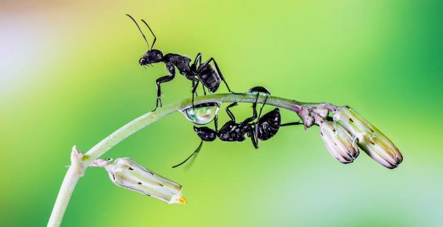
With these calming thoughts, she looked back at the forest... and cried out! Wow! Barely ten steps away, in the flickering shade under a small, pointy cypress, a pyramid-shaped anthill was looming. Just a minute ago, Rina had walked right past it – nearly stepped on it – but hadn't noticed anything.
She ran up to the ants and bent down low. Before her eyes seethed and bubbled a hectic, bustling life, such a tiny, yet unimaginably complex world, full of cares, joys, sorrows, sadness, and happiness. Many hundreds of glossy black ants were fussing around, never resting, never slacking, hurrying up and down their invisible ant streets and boulevards.
“I found it, I did it after all! This is my Ant Hill, my Fourmiliere!”
Rina didn't fully understand why she was so sure that some practically indiscernible, completely unremarkable forest ant heap could proudly be called a hill even with a French capital “F”. To get to the bottom of the situation, she checked the map again. Of course – the image had changed as expected. Now, in the center of the picture, a bold black triangle was drawn. The label had disappeared, but the ant had become larger, almost monumental, with long antennae and transparent wings with a reddish tint. Before, there hadn't been any wings at all.
Inside the triangle, the artist had skillfully drawn an old-fashioned key and generously filled it with thick golden paint. Below the black pyramid, right under the hill, was a blue square – also unlabeled. Overall, no matter how you looked at it, the map truly did seem to confirm Rina's discovery.
“Now I just have to find out where they hid the key!”
Of course, any map is just a convention – not even a sketch, let alone a photograph. The key might not mean a literal iron thing or, say, a golden one, but perhaps an entrance to something, a door, like that huge door on the pea field, or an object that serves as a door, maybe a hole, a cave, or perhaps a hatch or a staircase going down. Though it might not be a door, but a paper with a code, or even a papyrus scrap with a spell... Well, on other planets, anything could be the key!
In a quarter of an hour, the ant-heap had been studied top to bottom. Rina circled the cypress several times, then, spiraling outward from it, she examined everything around down to the tiniest speck – but found nothing except grass, sand, and dry, broken branches. She scattered a big pile of forest debris blown in by the wind, but then thought it was silly – the entrance to the Next World might have existed for centuries, and these leaves had only fallen a month ago.
“What should I do? What should I do?” she repeated, finding no answer.
In the end, she decided to get back and look for Gri-Gri. Whatever the case, the Parrot was a great expert on Triazis. Rina was positive that, being in a tricky situation like this, the best course was to seek help from locals. So, she returned, but found nobody. Having no other clues, she headed in the direction where she had last seen the Parrot. Twenty minutes later, after a tough hike through trackless bushes and thickets, she once again saw the gray dunes shining behind the trunks of old palm trees.
But she didn't make it all the way to the sands – thirty feet from the desert, right on the ground, wings spread wide and beak buried in the grass, lay Gri-Gri. He was motionless. Rina screamed and rushed headlong to him. Her blood went cold with horror – she was sure he was dead, perhaps killed by some wandering hunters – but then he stirred and pulled in his wing, settling in more comfortably. He was asleep.
“Gri-Gri! Gri-Gri!” Rina shouted, shaking him with all her might.
The Parrot lifted his head, looked around with a dull gaze, muttered something in a strange hissing language, and buried his beak back into dandelion leaves.
“What's wrong with you? Are you sick? Were you hurt?”
“M-m... me-e?” mumbled Gri-Gri. “N-no-o... Not h-hurt...”
“Then why are you here? You promised to look for the Ant Hill and come back. I waited for you! For a long time!”
“Pro-mised?” the Parrot wheezed and reluctantly turned toward Rina. “Promised... Yes... But I... I got so... so over... o-overwhelmed... that I... from the stress... I got this... what's it called... in-s-somnia”.
“Insomnia?!” Rina frowned, trying to get the Parrot's idea.
“No, no”. Gri-Gri shook his head. “I say over-somnia... It happens, it ha-happens...”
“Well, it doesn't happen to me!” she said, slightly resentfully. “If I promised to do something, I'll do it. Or at least I'll hit them up and apologize for not being able to”.
“You'll hit?” the Parrot also failed to understand. “With your fist, right?”
Rina sighed.
“Okay, never mind. What matters is you're here now. I'm happy you're alive and well and everything's okay”.
“Not well, and not okay!” Gri-Gri objected. “I've got oversomnia. From overstress. If you think oversomnia is nothing and not worth paying attention to, you're wrong. You can't treat your totally ruined health so carelessly!”
“Oversomnia will pass very soon, it's not dangerous”, Rina said, then suddenly remembered, “Hey! I wanted to tell you – I found the Ant Hill!”
“You did? The Hill? Where?” Gri-Gri instantly forgot about his oversomnia and leaped to his feet.
“Right here, nearby!”
“Show me! Let's go! Let's run! I want to see the Ant Hill!” the Parrot shouted, sprinting off in an unknown direction.
After a while, Rina found the path and led him to the ants. Gri-Gri studied the little black fellows scurrying back and forth, he looked at them intently for a long time, then clicked his beak thoughtfully, shrugged, and said with disappointment:
“Don't know, don't knooow. Honestly, veeery doubtful”.
“Well, I don't think it's doubtful. This is the Ant Hill I told you about, and we just need to find the entrance to the Next World!”
“But how? Where do we find it?”
Rina gestured helplessly.
They searched until dark, running around, arguing, even accidentally getting into a bit of a fight – though they made up quickly. The Parrot flew from palm to palm, tapping on the beige trunks with his sturdy beak to check the sound, then he rose to a great height, right up to the clouds, and from there he tried to see some signs, symbols, or geometric figures around the ant heap, while Rina dug round holes in the ground with a sharp stick, then measured the size and diameter of the ant house with her hand, and attempted to track the ants to see where they all were running to – in fact, the friends did everything they could think of to locate the key or that elusive entrance, but all they ended up with were five cute pebbles, an ancient-looking seashell covered with fancy patterns, and two large dried-up horned beetles.
“Listen”, said Gri-Gri. “On your map, the entrance – I mean that golden key – is drawn inside the anthill, right? So it must be inside!”
“No, I've already thought about that. The entrance can't be there”, Rina shook her head. “Maps are never created photographically, I mean like in real life. And besides, demolishing anthills – that's a crime called barbarism. Zinaida Abramovna says – barbarism and outright cruelty! I don't think wizards would hide the entrance right inside the ants' place. That would mean everyone entering would have to destroy the whole ant colony – the ants' entire city, you see?”
“Well then, your words mean we didn't find anything”, Gri-Gri said with frustration. “And anyway, I'm tired. Look around, it's evening already, almost night, it'll be completely dark in no time. I urgently need some rest. Haven't you read in your clever books that birds go to roost really early?”
Rina didn't argue. She herself was totally worn out after this endless, exhausting day. Naturally, she followed the Parrot to his home, to the palm tree with the vines. And there, under the palm, she made a makeshift bed out of two dozen bunches of dry grass scattered here and there. It turned out to be a kind of peculiar, maybe not stylishly designed, but a pretty decent, pleasantly smelling grass mattress. And she used her backpack as a pillow.
She lay down, settled in, covered her legs with soft, warm hay – and the fatigue took over almost instantly, not even three minutes passed before both tired companions, the girl and the Parrot, were deep in sleep under the gentle whisper of the desert wind, which was lazily finishing its games of hide-and-seek in the fluffy royal crowns of wearily capricious coconut palms.
10 – AUNISSA
part one
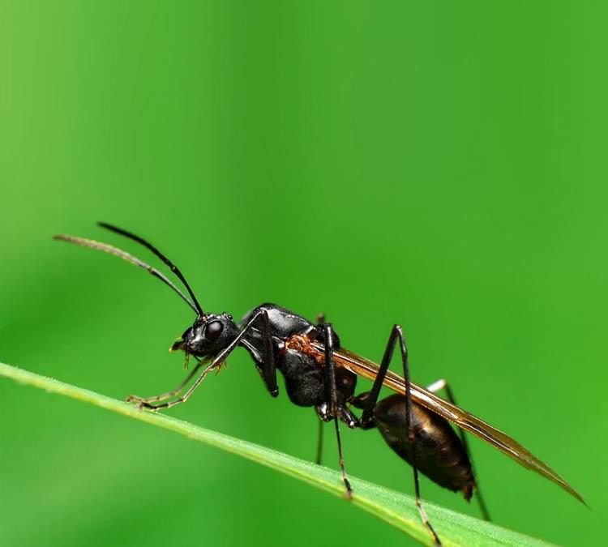
Rina looked down and saw a deeply unsettling scene: right in the middle of her splendid meadow, vibrantly painted with florets, blue cornflowers, and dozens of scarlet poppies, stood a large, solitary cone of dark-gray sand. And on top of that pyramid – an unusual flower shaped just like a daisy, but ten times larger and with violet-blue petals.
Curiosity overcame Rina. No wonder, all butterflies are inherently inquisitive, especially when it comes to flowers.
She circled it for a minute, cautiously, but finding nothing suspicious around, she deftly fluttered into the very center of the giant daisy and grabbed the yellow stamens with her quick, frantic legs. She smelled the nectar – rich and fragrant, and tasted the pollen – pleasant, sweet, but not cloying.
Then suddenly she heard a strange noise above, neither a hum nor a rustle, very close – somewhere over her head. And immediately after that someone landed in the flower at full speed. But who? Rina had never seen anybody like this half-butterfly, half-dragonfly. The unknown creature gleamed perfectly black, like an obsidian pebble. Its sharp abdomen was elongated, its elastic antennae constantly moving, and its transparent wings with ever-thinner veins were graceful. The next moment, a velvety voice proclaimed solemnly from the clouds:
“Behold the Queen!”
“The queen?” Rina exclaimed.
“Greetings, kind girl!” said the half-dragonfly, her voice a soft, deep soprano.
Rina was even more amazed, first, dragonflies never speak that way – it was one of the rare butterfly languages, actually an ancient secret tongue, and second, Rina was a Meadow Swallowtail, not at all a girl.
“I know everything about you. Or almost everything”, the half-dragonfly continued calmly. “You live on Earth, but you are now journeying to the Kingdom of Fire. Do not be afraid – there is no danger, my intentions are friendly”.
“Who are you?” Rina asked, utterly puzzled.
“I hope you heard it”, the half-dragonfly replied. “I am the queen. I am Aunissa the First, Great Magnificent Incomparable Queen of Ants. But to you, a guest from a distant world, I allow you to call me simply, Great Queen Aunissa. That will do. And now it's better for us to speak in our normal shapes”.
“What does ‘normal shapes' mean?” Rina asked.
“Just a moment”. Aunissa raised her wings and shook them forcefully several times. A whole star shower of white prickly sparks flew everywhere from the wing tips. Rina accidentally inhaled one of the little shimmers and... sneezed.
The dream dissolved in an instant. Rina was sitting on her grassy bed, the deep-blue sky high above, the bright moon a sharp crescent, and around – dozens of dark silhouettes of sleeping trees on a quiet, warm summer night. Suddenly someone lightly, like a feather, touched her shoulder. Rina jumped to her feet, turned around, and saw a beautiful young woman standing right before her in a long black dress, spangled with silver glitter.
“Don't be afraid, it's me, Aunissa, Queen of the Ants”, said the woman in a warm, soul-stirring voice.
Aunissa was beautiful. But the simple word “beautiful” doesn't even begin to convey her brilliance. You might call her fantastically gorgeous. Or perhaps devilishly marvelous. Though not with that paper beauty you can see in glossy magazines.
The Queen embodied the innate allure and regal grandeur of nature – the indescribable splendor of alpine meadows and the dazzling richness of the profound tropical sky, the refinement of sharply colorful July constellations, and the harmonious grace of May's stormy nights. Her huge, entrancing black eyes, her white, seemingly luminous skin, her gleaming coal-dark hair flowing like a waterfall over her elegant shoulders. Her hands were light and sensual, her smile was pure and radiant, her movements were precise and fluid, her charming, magical voice – tender and inspiring.
Rina thought that even if she didn't know who this woman was, she would have guessed it anyway. Yes, Aunissa was the Queen. Yet she wore no crown, and looked nothing like queens depicted in historical films or paintings. In her slender, dainty fingers she held a lacquer-black wand, flaring with the long blue rays of a large sapphire. Rina also noticed neatly folded crystal wings peeking out from behind Aunissa's shoulders.
“I have waited so many years for your arrival”, said the Queen. “But when I first saw you, I could scarcely believe it”.
“You waited for me?” Rina asked, amazed.
“I did”, the Queen smiled. “I counted the passing days, months, years. I waited and knew about you even before your birth, and believed your coming was inevitable. And of course I knew the day”.
“But is it possible to know someone before they're even born?”
“Yes, anything is possible”, replied Aunissa. “Such foresight comes easily to me”. Aunissa glanced at the stars, then looked deeply into Rina's eyes, and spoke more officially, “You are heading into the Fire World, risking everything to save your sister. That is honorable. And of course I will help you”.
“Oh! Thank you!” Rina exclaimed rapturously. “I really need some help, thank you so much!” And she added, “Great Aunissa, Your Majesty”.
The Queen nodded.
“I will certainly help you, kind girl. But you also, if you wish, can help my kingdom and my subjects”.
“Subjects?” Rina asked, but the next instant she realized the Queen meant ants. “I will do whatever you tell me. If I can, of course”.
“Oh, yes, you can”, Aunissa said. “It is not too hard and won't require any special skills or knowledge. Watch closely!”
Aunissa waved her black wand, and suddenly in the air, in the night void, a pale white rectangle appeared, the size of a newspaper page. Within moments it was filled with colored spots. Tiny speckles increased in number, quickly forming patterns, and very soon they became a clear image of Triazis from a bird's-eye view.
“Mini-led”, Rina thought instinctively. But of course it was just a regular softair set.
Meanwhile, Triazis on the screen drew closer, and Rina recognized the Yellow Brook carrying its floral water through the palm grove toward the endless desert sands.
“Now you'll see Sariiim as it looked exactly fourteen years ago”, the Queen said. “This is our capital – the largest city. Without Sariiim, the ant kingdom cannot survive”.
The next scene showed a dark anthill looming on the screen – like a common earthly one somewhere in Carpathian woodlands, or like the one Rina found at Triazis's edge, but ten times as high, far more massive and vastly wider. The Yellow Brook shimmered cheerfully just a few feet away.
“And then”, Aunissa continued, “a powerful hurricane struck us. We call it the Second Vortex, and it was stronger than the First one. The terrifying wind knocked down nearly forty palms and ruthlessly damaged three of my cities: Loriiim, Kariiim, and Boriiim. The storm broke the largest old palm in the Daisy Clearing. The tree fell into the Yellow Brook. That night the stream changed its direction, and since then, my capital, Sariiim, has existed with no water. My soldiers have to carry water from the new watercourse – seventy thousand ant steps a day. My proud city declines every year, and only you can help us”.
“Me?” Rina gasped. “But how?”
“It's not difficult. You must restore the original flow of the Yellow Brook. I'll show you now”, the Queen said, rustling her dress and wings as she stepped aside.
The screen went dark and dissolved. With her black wand, the Queen traced a double figure eight in the air and looked at Rina.
“Don't be afraid”, she said with a smile. “Just take one step”.
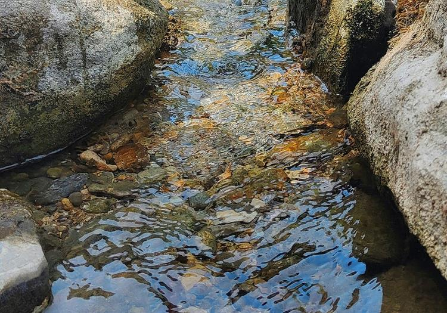
Rina inhaled deeply, held her breath as if ready to plunge, and stepped forward. She felt nothing but a faint breeze across her face. She opened her eyes. Everything had changed – on either side, young cypresses and fragile plumerias whispered to each other shyly. Before her lay a circular clearing lit by moonlight, sparkling with dew on daisy petals. The Yellow Brook hurried away across the glade. Its water glittered like thoroughly polished gold, and hundreds of moon crescents bounced off the sharp amber ripples. The stream looked even more lemon-yellow than in daylight. Queen Aunissa stood nearby, right on the bank.
“Look”, she said, “do you see that broken palm over there? The tree that fell fourteen years ago. It blocks the Brook. The water runs along the new ditch now. And here, to our left, is the original dry riverbed. We need the stream to return to that channel, and life will be as it was before the Second Vortex. Do you understand?”
Rina nodded and gave a small curtsey – she'd seen lovely curtsies in Twelfth Night at the theater – and slowly walked toward the water. In the center of the glade lay a long brown log crossing the current. Apparently, the log was heavy, it was literally sinking into the ground deeper and deeper year after year – no way to move it without a special machine. The poor Yellow Brook was forced to turn toward the forest, while another narrow, dry channel branched off, now overgrown with flowering grass.
“This is the old bed”, Aunissa explained, approaching Rina. “For the stream to return to its proper banks, we need to dig here”. She pointed with her wand, “and fill in there. Our task is to build a sturdy dam. Unfortunately, neither I nor my subjects can bring stones from the desert. We used sand and tried again several times each year, but the water is strong. It always washes away our work before it becomes noticeable. I believe only a human can handle this kind of construction”.
Rina paced along the bank, inspecting everything. Then she came back and said:
“All right, I'll try, of course. I don't know if I'll succeed...”
“You will”, the Queen assured her firmly.
They stood silently for a minute, watching the playful golden waves. Aunissa gazed up at the stars and said musingly:
“Tomorrow you will restore life to my legendary city, Sariiim. We'll have a royal celebration – balls and carnivals. You will be our guest of honor. I will appoint you the Valorous Keeper of Yellow Brook and give you the Key to the Third World”.
“So the key really exists?!” Rina exclaimed, breathless with excitement, but quickly regained her composure. “Your Majesty”, she added.
“Yes, the key exists”, the Queen confirmed, “though not in the form you imagine it. But like any other key in the universe, it opens doors”.
Rina pondered before asking, “Your Majesty, Great Queen...” Aunissa turned to her. “How did you know I would come to Triazis, and not someone else?”
“Oh, that's no secret”, the Queen replied. “We learned about you many years ago, even before the Cold Summer, when the black birds of the Fire Kingdom first appeared over the desert. Then, we heard your name and saw your future face in the clouds. That year, we also discovered the dangerous plans of the King of Fire”.
“Your Majesty, please tell me about the King of Fire!” Rina pleaded. “I'm going to him – to his world, his palace – my sister is there, but I know almost nothing about him. Nobody explains anything”.
“That is no surprise”, the Queen said, walking slowly along the old riverbed. Rina followed her. “It's perfectly natural they didn't tell you”, Aunissa continued after a pause. “And aside from that, no one will reveal the riddles of the Fire Kingdom to you, or anything about your true mission”.
“But why?!” Rina stopped, astonished.
“It's simple”. The Queen smiled. “These secrets involve your destiny. When a person knows too much about their possible future, sometimes they lose the ability to do what they must. You see, my kind girl, not all knowledge is helpful. Some information can prevent you from doing what's necessary. Imagine you need fire, but to get it, you must burn your best friend's letter – the only thing he left behind. You have no choice, and so you burn the letter... Do you understand?”
“No”, Rina admitted.
The Queen gently touched her shoulder.
“You are kind”, she said. “That is your greatest strength, your essence and value – do not lose it. Your heart is compassionate, but one day it may outweigh your reason, even your duty, then you will take the wrong road and fail in your purpose. So for now, let your heart worry about nothing. Tomorrow you will travel to the World Number Three. It will be hard there, sometimes very hard and even dangerous, but you will succeed... though only on one condition”.
“What condition?” Rina's voice trembled.
“The main condition is easy to keep in mind, never forget your sister. Whatever you face, whatever complicated choice stands before you, and whatever others say or advise – always choose the path that saves your sister”.
“But that's exactly what I've been doing!” Rina protested.
“Oh, yes, of course!” the Queen exclaimed. “Of course you have!”
They continued walking. Rina pondered what she'd heard and was about to ask another question, but the Queen raised her hand.
“It's time to rest – tomorrow brings work and a difficult journey. Let's not waste time”, she said, waving her black wand.
That same moment, Rina found herself in her grassy bed beneath Gri-Gri's tree. She glanced at the sky and fell asleep the next second. She dreamed. Again she saw the flower meadow and other butterflies – her friends and sisters, but in that new version of the dream she no longer remembered Aunissa, the Beautiful Queen of Ants. Rina the Swallowtail fluttered from flower to flower, sipping sweet nectar and rejoicing in the summer sun and playful breeze. Smiling peacefully and softly humming a trendy butterfly tune, she slept until dawn.
Morning came with the call of Gri-Gri. As all birds do, he went to sleep earlier and woke up earlier than others. Rina opened her eyes, recalled everything, and told the Parrot about her nighttime adventure – fluttering as a butterfly, meeting Queen Aunissa, and the old channel of the Yellow Brook. Gri-Gri listened intently and thoughtfully, clicking his beak, pacing back and forth, wings folded behind him, like a comical detective in a recent noir movie – but more serious than ever before.
Then he said:
“Understood. A complicated business, I would say. And what if the stream won't change course? If nothing works out for you, then what?”
“I asked that too”, Rina answered. “But the Queen says I'll do everything right”.
“Hah! I see... Okay... So when do we go to that log and clearing? We must study the brook and plan our work down to the tiniest detail!”
“We'll go. Soon. Right after breakfast”.
Rina picked up fruits, exactly what she wanted – straight from the trees, just like the day before. She found mandarins – many of them had fallen, but the ones on the tree were numerous and wonderfully tasty. On the right side of the path, most fruits were tropical, some she'd never seen and didn't know the names of, but she ate them with pleasure. Gri-Gri flew off eastward “for a few drops of time”, as he said.
“Just don't fall asleep on the way”, Rina said with a smile.
“Me? Asleep?” the Parrot sounded slightly offended. “Yesterday was a whole different story, I would say. By evening, I was totally shaken. Sorry, but if you think I've got nerves of flint, you're wrong!” And he took off.
Rina finished her breakfast, settled comfortably on the smooth grass under a fragrant magnolia – comically resembling a grandmother's green umbrella – and waited. She sat, watching the pinkish sun rising above the palm crowns, draped in a gauzy scarf of translucent pink. Some minutes later, Gri-Gri returned, and the two friends strode hastily down the path toward the Yellow Brook.
The actual amount of work at the stream proved to be far greater than it looked in the deceptive moonlight. First, the rushing water washed away the soil and clay Rina dropped from the bank. Second, they had no tools, and with only their hands it was literally impossible to dig the ground, hardened over centuries. Rina wandered across the clearing and got lucky – under the hazel bushes she found a sharp dry stick, gnawed by some animal, but good enough to use as a makeshift shovel.
To block such a fast-flowing watercourse, they needed stones – many heavy, large cobbles. Where to get them? The friends unloaded everything from Rina's backpack and headed for the sands, straight into the desert. It wasn't fast and easy, but there was no other way. Gri-Gri helped, scattering the hot sand with his strong legs to find stones the size of two or three fists, and Rina put them in her backpack and carried them to the glade.
Later the Parrot tried another trick – he grabbed one stone with his claws, and if it was not too heavy, he managed to fly up and bring it much closer to the brook. After four hours of work, an impressive mound of gray and black stones had been piled on the bank two steps away from the stream.
“That's enough”, said Rina, emptying her backpack for the thirteenth time, and collapsing onto the grass. Poor Gri-Gri wasn't used to such labor either – he was utterly spent and now sat silently, which was completely unlike him...
10 – AUNISSA
part two
The friends first decided to make a little trench in the yard-thick wall that separated the old brook bed from the new one. Once rested, Rina took the stick and started vigorously digging. The Parrot was grabbing pieces of soil with his claws and flinging them far into the bushes. In less than an hour, the first weak thread of orange water crossed the boundary of the two channels and ran into the spiky milkweed growing on the dried-up bed. Soon a second, and then a third thin trickle followed. Gradually, two channels formed from one. But the old bed lay slightly higher than the new one, and to force all the water into the right path, they needed a strong dam.
Building a dam would have been straightforward if you had the proper materials. Rina and Gri-Gri tossed stones into the water, golden splashes flew everywhere. With each passing minute, the stream grew deeper, the barrier rose. In no time, little yellow rivers flowed into the old bed. When the stones ran out, both laborers tried filling the rest with earth, sand, and clay – and this time, the weakened current couldn't carry away even a grain. The dam strengthened and widened, half an hour later the brook was fully blocked – only occasional puddles remained on the black muddy bed.
Rina rapidly filled her backpack with her belongings and, together with the Parrot, raced along the bank of the ancient streambed, following the yellow water that was merrily gaining its unstoppable power, and then they saw a grand black anthill beside the three thick, fused palm trees. It was truly a whole city, a real capital – over a meter high, six paces in diameter, with five peaks and a round platform between them. The water curved near the palms on the right side and babbled nearby with obvious pleasure – the Brook had finally returned to its rightful, native place! It was working now, diligently scrubbing the petrified bottom, carrying all kinds of forest debris toward the desert – leaves, twigs, sticks, bits of bark, clumps of clay, dry blades of grass.
Rina forgot all about being tired, she was thrilled! Everything had turned out well – actually it was a big victory! Smiling with joy, she cautiously approached the anthill, took a closer look, and right away she saw the Queen on the platform – a half-butterfly, half-dragonfly creature from her dream – standing in the very center, surrounded by two dozen unusually strong-looking ants. The Queen gracefully turned her pearlescent, raven-dark abdomen, stretched and folded her wings, moved all her legs, and waved her long antennae. It seemed she was dancing some kind of whimsical ancient ant dance. Maybe she really was.
Very soon, from every crevice and hole of the capital city, thousands of shiny black ants began crawling up and running down to the sandy surface. The instant they reached the ground, they started forming straight lines and marching toward the water. The Queen now stood at the very edge atop the pyramid and directed the emerging parade with her movements.
“The celebration is about to begin”, Rina whispered stepping slightly aside and watching the ant display.
Apparently as a warm-up, many ants ran across the sand in small groups, shaping themselves into black lines, squares, and circles as they moved. Everything kept shifting and transforming into something new. Then suddenly, the ant ranks arranged themselves into three powerful columns and began to march again, but before long the columns scattered into waves, and then the shapeless masses quickly formed complex geometric figures, mostly polygons, through which ran what looked like inscriptions in an unknown language.
Then, in the letters, many thin vertical stripes emerged and morphed into new symbols again. In this way, the scenes changed one after another – ceaseless running, marching, and countless regroupings. The ant maneuvers lasted for about ten minutes, maybe twelve. Gri-Gri stood by the triple palm tree, frozen, watching the ants. Though understanding nothing, he wisely chose not to interfere or ask anyone anything.
Suddenly, all at once, obviously at the Queen's command, the innumerable ant legions stopped running, stood still as if listening to someone's silent speech, then turned simultaneously to face the anthill – and in just half a minute, the great army, down to the very last soldier, disappeared underground into the black city.
Rina waited. Soon, thirty or forty exceptionally large ants, true ant giants, came out in a line through the main entrance. They were dragging a thread with a white, wire-like ring tied to it. With great effort, the ants pulled it across the sand right to Rina's feet. After that they turned around and ran back in the same formation. Rina watched them go, then squatted down and carefully picked up the little ring for a closer look.
At that very moment, a cold, dense shadow fell on the palm grove, as if a thundercloud had passed over. Looking up, Rina saw that the sun was covered by a dark shiny disc, hovering somehow in the air several hundred feet above. The disc looked metallic and motionless, but it was expanding visibly, covering more and more of the sky. The grove darkened, the wind rose, and birds cried out in alarm. Rina looked around nervously, seeking an explanation. Gri-Gri was genuinely frightened and ran closer to her.
In less than two minutes, the dark object was no longer just a disc – the entire sky had turned coal-black, like a starless polar night, with only faint rays of sunlight peeking through the edges and dimming every moment. Eventually, complete, absolute blackness fell on the desert – the kind you might find only in deep, abandoned catacombs beneath ancient castles.
And then, right in front of Rina's face, emerged a bluish, sparkling mist. She peered into it – there, inside the living, semi-transparent turquoise haze, tiny lightning bolts flashed like golden sparks no bigger than a vein on a butterfly's wing. Rina wanted to touch that microscopic thunderstorm. But suddenly, the blue cloud lit up brighter, drifted a few steps back, stretched upward, and then, with a flaming flash, in an instant transformed itself into Aunissa – just as beautiful as she had been the previous night. Though now, on her white royal shoulders was the thinnest silk cloak, grassy green like Tanzanian emeralds, and in her hand the Queen held not a black but a blue wand, shimmering with a multifaceted cyan topaz. A soft violet beam highlighted the Queen from above. Rina glanced up reflexively but saw no source of the light.
“My dear Kind Girl”, Aunissa said in a melodic voice. “I congratulate you on your great achievement. You overcame forces of nature. You created the proper and restored the demolished. Your selfless heroism will forever remain in our legends and songs. The Yellow Brook, the treasure of our nation, the famed golden current, has returned home. We thank you”.
Aunissa bowed ceremoniously. And Rina returned the gesture. She was rather embarrassed by so much praise and couldn't think of what to say back. The Queen paused briefly and continued:
“Put this phelenyne ring on your finger. Remember, it's not just a gift from the Black Ants. It is the sacred mark of the Yellow Brook Keeper, your eternal high title, which you will pass down to all your descendants for a thousand years”.
Rina put it on. Amazingly, the tiny ring fit perfectly. Aunissa looked at the anthill, then raised her hand and touched Rina's shoulder with the blue wand.
“I, the Great Queen, and my loyal subjects, the Black Ants of the Desert Planet, and all the ants of other planets of the Circle, are grateful to you. Wherever you are, if you need our support, take this ring off and place it on the ground. Ants are small, but they are strong and noble beings. They will help you”.
“Thank you very much, Great Queen, Your Majesty”, Rina finally said, fighting her shyness, and suddenly asked, “But where are the balls and carnivals?”
The Queen smiled.
“The balls and carnivals are already over. Our world lives by different laws, and our time flows asymmetrically here. What is an hour to you is a week to us, and your human month is like twelve years to my people”. Aunissa noticed the shadow of disappointment on Rina's face and added, “Don't worry about that. I know and I see it clearly – you will have plenty of balls, celebrations, and fireworks in your life, real triumphs and grand holidays... But now it's time for me to fulfill my promise”.
Aunissa took a quick step back and suddenly, in a loud royal voice, ordered:
“Bring the key out!”
Instantly following the command, from the inexpressible darkness into the blue cluster of light, four white spheres flew in. To Rina, they seemed to be made of marble – surely very heavy. On the spheres, somehow miraculously, rested a wide, flat dish, and on it sat a silvery box the size of a big apple. The spheres gently lowered the dish onto the sand at the Queen's left and silently floated back into the night.
Aunissa drew two figure-eight symbols in the air with her wand, the box opened, and out floated a small blue-glass vial, swaying as if on waves. Zigzagging, it flew to the Queen and landed squarely in her palm. Aunissa pulled out the stopper and poured all the contents onto the sand. Despite the dim light, Rina could see that inside the little bottle there were... ants, the same ants – many of them. As they hit the ground, they swiftly scurried in all directions and took up their designated positions, forming a clearly outlined black circle. Rina and the Parrot watched the performance, astonished and silent. But the main miracle was still to come.
The Queen said something to the ants in a strange, consonant-only language, then she bent down and stuck her blue wand into the sand at the very center of the ant circle. At that moment the ants rearranged themselves and depicted a new shape with their bodies – a square. As soon as the formation was complete, the sand figure, outlined by the ants, lit up with a sapphire fluorescence. The glow quickly grew brighter and soon became a blinding searchlight, shooting a thick column of blue rays into the sky. A low hum came from the shining blueness, like that of a massive electrical device, the ground trembled underfoot, and the column was slowly but relentlessly growing.
“Farewell, Rina, the kind girl”, said the Queen with a shade of warm sadness in her voice. “It is time to say goodbye”.
Rina looked at her, at Gri-Gri.
“That's all? This is the entrance?”
“The blue light of Auni is your key. The door to the Next World will remain open for eight and a half minutes”, the Queen replied.
Rina turned to the Parrot.
“Gri-Gri!” she said in distress, tears welling in her eyes, “I'm leaving, I must go... nothing can be changed, there is no choice... You've no idea how much I don't want to leave you, I wish I didn't have to!”
The Parrot grew anxious, trying his best not to cry – he stayed silent, blinking his eyelashes sadly – so very sadly. Making an effort, Rina focused, calmed herself down, and turned to Aunissa.
“Thank you very much, Great Magnificent Queen, Your Majesty!” she said with deep gratitude – glittering droplets on her eyelashes. “You are so kind. I will never forget you. I've loved ants since I was a little girl”.
“We know that”. The Queen smiled. “On Earth, not many understand ants the way you do... Unfortunately, we have no time for pleasantries. Perhaps I'll be able to visit you in the future, but now you should go. Go boldly, go courageously! And fear nothing. You will get through everything and overcome it all, just you remember your goal... One little thing: please, when you meet Aoao, tell him we are grateful and have not forgotten him... Farewell, my dear girl!”
“Goodbye! Goodbye, Queen! Goodbye, Gri-Gri! Goodbye, everyone!” With wet eyes, Rina looked at Aunissa's beautiful smile, drew a long breath, and stepped straight into the column – into the powerful blue stream of dazzling light.
Immediately, the blue began to fade until it disappeared completely. Around her – black, impenetrable darkness.
“Your Majesty? Gri-Gri?” she called out. No one answered.
“I see. They're already far away”, she whispered. “I've been transported... Why is it so dark here?”
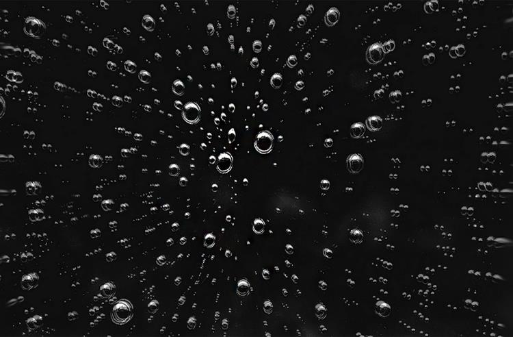
Suddenly a large drop of cold water fell on her head. Then another one, and a third. And more, and more, and more. Heavy drops beat against her shoulders, arms, and hair. Rain! Water was falling from the black, invisible sky. The rain grew stronger and harsher. Very soon she was drenched to the skin. But the downpour didn't stop – the water kept increasing. Rina felt salt on her lips. She was surprised: there was no such thing as salty rain! Meanwhile the rain turned into a torrent, and a minute later it intensified so much that now, instead of drops, entire waterfalls came crashing down from above, whole rivers of icy water. Finally, all the rivers merged into one and pushed out the air. Rina was underwater. Not knowing where, or how deep – darkness all around. She pressed her lips tightly together. Panic surged through her. She pushed off the bottom and desperately tried to swim to the surface. The water squeezed her down with a crushing pressure, there was no escape. Holding her breath was no longer possible. Rina screamed – air burst out of her lungs like a wild geyser. She realized she was drowning, realized she was dying. She swallowed the disgusting water, inhaled deeply, coughed, and... began to breathe...
It was so terrifying, so frightfully scary, so mad, shocking, and unheard of, but at the same time so... pleasant – Rina was breathing water with her mouth wide open, she was in water that no longer felt as cold, she exhaled it gently, sensing that it was real breathing, like inhaling cool, dense air in a forest glade early in the morning – but it wasn't air, it was seawater, ordinary and regular. It was filling her lungs with thick and heavy, life-saving streams. Breathing water was strange, not too easy, and totally unfamiliar, but Rina understood the main thing – she was alive! She hadn't died! This World was the world of water, the world of endless oceans, in which not only fish could live, but people too...
It all happened astonishingly fast – but that was even better. Rina simply didn't have enough time to become properly afraid – that mortal terror lasted for less than half a minute, and it took just as long to return to a more or less tolerable state. She was almost calm, almost relaxed. Moreover, the most important task had been completed exactly as intended – the inconceivable transition into the Next World was fulfilled!
True, this World wasn't just water and salt – it was darkness too. She had never known that.
She was slowly sinking down to the bottom, and as soon as her sneakers touched it, she tried to walk, but the attempt failed – her footwear instantly plunged deep into the sticky silt, and every step turned into difficult, pointless labor. She stood still for a few moments, then pushed off, waved her arms, and glided forward with sudden ease".
“Funny...” Her tension reduced enough for her sarcasm to return. “Back on Earth”, she thought, “I never learned to float, even six paid lessons didn't help, I couldn't swim at all, literally – and here, look at me, I'm swimming like a white shark. Well, like a denim one, to be exact...”
She rose higher, farther from the dirt and murk, and accidentally drifted into a warm current – a quiet, gentle flow caught her and carried her forward.
“To the Unknown”, she thought with a dark smile.
Anyway, she didn't resist. She lay calmly in the soft, enveloping layers of the underwater river, looking into the matte black veil and waiting for – something. There was no anxiety in her soul, no real fear – she simply wanted to know what would come next. And she didn't have to wait too long...
WORLD THREE – OCEAN
11 – BLASTA
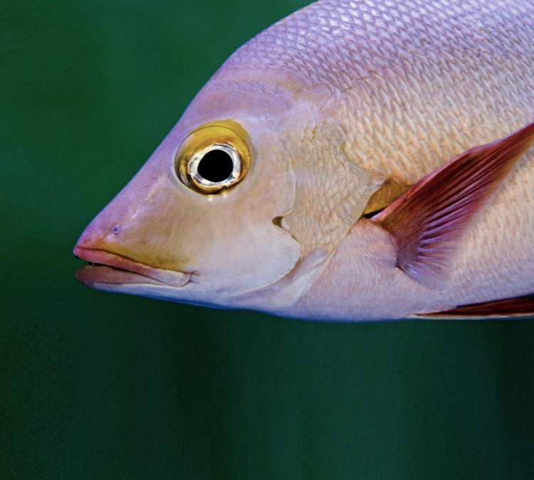
Somewhere in the distance, barely visible blue dots began to shimmer, like the pale lanterns of desert fireflies. The sluggish flow was carrying Rina toward them. With each passing minute, the little lights grew brighter, took shape, and after a while turned into a dozen strange-looking little fish: orange scales, humped noses, chopped-off tails, short fat fins, bulging colorless eyes. Funny little fish, very much like the rubber toys used to distract toddlers during frightening shampoo-and-soap activities. On the forehead of each fish glowed a toy-like but convincingly bright living lamp, lighting up the darkness for many paces around.
The fish had noticed Rina long ago and cautiously spread out to the sides, though still trying to maintain their dignity. With five strokes, Rina pulled herself out of the current and stopped, slowly descending to the bottom.
“I wonder, can they talk or not?” That was the question that worried her most.
For a minute or two, the fish hung motionless and stared at the stranger with surprised expressions on their faces. They were a bit scared, of course. After all, they had come across an unknown creature – a rather large one – but as usual, curiosity won out over fear. One after another, the fish began to circle around Rina, approaching from all sides as if by accident, as though not noticing her, still lighting her up continuously with their foreheads like tiny spotlights.
“Hello, I...” she said and trailed off.
There was no voice. And there couldn't be. She was only opening her mouth, just like the nearby fish, but the word “hello” didn't come out into the water – it was just deep in her head, and yet with more than enough volume and clarity.
“‘Ello!' ‘Ello!'“ came from the left and right, and it was clear no one had spoken aloud. The fish were saying it directly at Rina's mind, right at the very center of it, though the sources of the sounds could be located by both direction and distance easily. A rather unusual sensation – but Rina was pleased. The ability to communicate with locals gave hope for a quick finding the entrance to the next world.
In ocean depths, animals do not speak the way their relatives do in rivers and lakes. Of course they make different sounds from time to time, especially when emotional, but not words – they prefer sending entire phrases directly to others' heads. Rina heard the fish just like voices in pre-dawn dreams. She was surprised, though not too much. Apparently, over the past few days, she had got accustomed to the weirdness of other worlds – she considered it normal.
“My name is Rina”. She tried to smile at each fish present. “I'm a tourist, traveling through different worlds and countries, just sightseeing – and now I'm looking for the entrance to the Fourth World”.
All the fish even stopped moving their fins. As if struck by a powerful blow, they all froze with their mouths open, turning for a few seconds into actual two-dollar playthings from a rubber bath toy distributor. But the next moment, the fish all at once, as if on cue, turned and darted away at surprising speed, creating a vortex behind them, and three seconds later they vanished into the darkness. Rina watched them go, bewildered.
“What did I say wrong? Did I scare them?” But after thinking it over, she decided not to mention the Fourth World directly any longer. In conversations with ocean dwellers, it would be smarter to draw out all the information through veiled hints and roundabout questions. She had to be clever – really! That was the conclusion she came to. Especially since, who knows, maybe this world is at war with its neighboring planets, and any mention of enemies is strictly forbidden.
Swimming through the obscurity in search of the lost current, she spotted another glowing dot – this time it was red, almost poppy-colored. The dot grew before her eyes, and soon it became clear that it belonged to a long, bulky fish with a large flat head. The fish braked sharply and was about to turn around and flee, but Rina said her calming “hello”, and the fish stiffened in still anticipation.
“How have you been?” Rina began with the universal pleasantries. “How are you doing? What's new in the ocean? I came from the Desert”. She chose not to mention Earth either, just in case. “I'm traveling and I'd like to see your world, all the most interesting parts. I'm a tourist”.
The fish remained silent.
“Perhaps you know, dear Fish, what special tourist attractions are found in your area that visiting foreigners usually come to see?”
The fish stared at her with pale-violet eyes full of interest, but obviously wasn't planning to answer. Rina thought that perhaps not all the underwater creatures could talk, but suddenly the fish opened her mouth and pronounced her long-simmered phrase clearly and in a pretty modern Western Ocean dialect:
“Ouni loves Diuni”.
“Diuni?” Rina repeated.
“Diuni boo-boo-boo!” the fish declared quite seriously, and moved a little to the side.
“Boo-boo-boo”, Rina thought with a smirk. “Either she's very young, a baby – that would explain it – or so dull she doesn't even know the simplest words”.
“And where is that Diuni, the one that boo-boo-boos?” she asked the way people talk to one-year-old infants.
“Boo-boo there, Diuni there”, the fish answered eagerly and wagged her tail, just like a joyful puppy. It was clear that the conversation brought her great pleasure. But Rina sighed and thought:
“Aunissa was right – this world isn't easy. If everyone in the waters is this clueless, who's going to help me get out of here?”
After several minutes of perfectly pointless dialogue, Rina tried to get away from the useless companion – she told her “thank you very much”, waved her hand, and swam off, leaving the poor little dusky fish in confusion and disappointment.
For at least half an hour Rina swam through the amazingly thick darkness, trying to move perfectly straight, arms extended forward in case she collided with something solid, a rock, for instance. The black water didn't frighten her – on the contrary, it brought a sense of calm and a kind of unfamiliar carefree detachment. It was easy and nice to float in emptiness, feeling neither the weight of the water nor the cold, not even her own body. It seemed like thoughts and emotions were dissolving into the eternal oceanic night, like sugar in tea...
But then, ahead, a bright flash flared. A strong, white beam – like a powerful aircraft landing light – pierced the tight blackness of the seafloor. The ray stayed motionless for a minute and lit up stones, coral fragments, fish skeletons, empty shells, and all kinds of marine junk scattered in abundance across the bottom. Rina had never suspected the sea could be so dirty and neglected.
As for the white light – at first, thinking it was a submarine or another underwater machine, Rina was thrilled. Even if there weren't exactly humans inside, operating such a complex apparatus meant these beings must be intelligent and educated, so she could talk to them in a human-like language or something similar, and eventually ask about the cherished entrance to World Number Four. Smiling, she rushed headlong toward the white light, which itself was also approaching at a good pace.
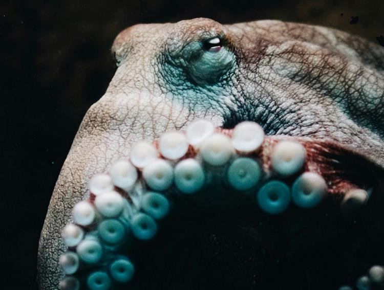
But soon she realized her major mistake and was dreadfully frightened – there was no real submarine. Instead, scuttling quickly along the bottom with massive thick limbs and raising towering clouds of black muck, came two enormous octopuses, the first one shining with his mighty headlight. Both were the size of delivery vans, both had dull grayish skin and looked extremely aggressive. Their every movement radiated tremendous energy and a readiness to attack and kill anyone in an instant. Rina stiffened in terror.
Very soon, the first octopus noticed her and, shooting forward a long, strong tentacle, grabbed her, wrapped her entire body so tightly she could barely breathe, and dragged her off to who knows where, without stopping for a second. She didn't try to break free – fear paralyzed her will, thoughts scattered from her mind like a frightened swarm of fish, and only her heart kept pounding loudly in her temples.
Being in that state of stupor, she completely lost the ability to sense space or time. It wasn't clear how many miles the octopuses crawled along the muddy floor and for how long – it could be half an hour or half a week, who's counting. But every journey comes to an end.
At first, the gray cephalopod monsters had been looking for someone. They had most likely grabbed Rina by accident, without any particular purpose. They were really interested in someone else – they checked behind every rock, every little hillock, shoved their arms deep into cracks and round holes on the ocean bed, thoroughly rummaging, searching for the target only they knew about. But after a short while, the octopuses got tired of this tedious work and gave up, clearly putting off their hunt until a better time – and without distraction, sped along a deep canyon, dramatically lighting up jagged coral ledges with the lifeless white beam.
Rina swayed side to side, pinned by a slimy octopus's arm to his enormous nape. And though she had come to her senses, terror still kept her from linking her wits into a chain of logic. Anyway, she was sure they were just going to eat her – and that would be the end of the adventure. But the octopuses had an entirely different thing in mind...
In the end, they arrived at their destination and stopped all at once. With difficulty, Rina lifted her head and saw a vertical stone wall rising into the dark. There in the flat gray rock, loomed a big oval hole – possibly an entrance to underwater rooms. The octopuses were waiting for something, lazily stirring their muscular tentacles.
The wait dragged on, and the octopuses were clearly losing patience, their activity quickly increasing – until, at last, from the murky blackness crawled out two giant crabs, whose very appearance made Rina's knees quiver – the red crabs, each the size of a large dining table! Their gleaming pincer-claws were huge, like the gaping jaws of crocodiles, and their blood-hued shells bristled with sharp, hard spikes jutting in every direction. The crabs moved in sudden jerks, causing the octopuses to shudder with their whole bodies each time.
The larger octopus holding Rina shifted his grip to her waist and gently placed her on the sandy floor. She was petrified and tried not to breathe. Without hesitation, one of the crabs jumped toward her, its bony legs clicking. She curled into a ball and squeezed her eyes shut, expecting a bloody attack – but the crab delicately grasped her by the left sneaker and slowly dragged her into the dark burrow. The second crab followed closely behind his boss.
A minute later, the crabs laid her on a large smooth stone somewhere deep within the cave. After standing there for a moment, they left. She lay motionless, focusing intently on the fading clatter of the crabs' steps. Very soon, all was silent. Darkness – no sound, no movement, no light...
Unexpectedly, the cave walls lit up with a faint yellowish glow – it looked like a church candle appeared in the corner. Rina slowly turned her head and saw an astonishing variety of sea creatures – fishes of every shape, color, and size, squids, several purple octopuses, two blue moray eels, and many others, most of which she had never seen before and couldn't even imagine existed – on Earth or anywhere else.
The cave was inhabited. Wall-to-wall. Rina had become just one more resident – a prisoner, actually. It was immediately obvious that the Gray Octopuses and their friends the Red Crabs were using this place as a prison. Rina sighed, sat more or less comfortably on the stone, and began staring into the unblinking eyes of her fellow lifers crowding across from her, all curiously observing the stranger. And everything in complete silence.
Then a large white fish swam up, with an orange lantern at the very tip of its nose. The fish was as long as Rina herself, if not longer, and its sharp tail, black-tipped, reminded her of the tiny tails of clown loaches – the pet fish of Rina's best friend, Zlata Sorochenko. Rina scooted back a bit, just in case. She clenched her fists and braced to defend herself. But the fish wasn't planning to fight. In an even, feminine voice, she asked in fluent Mid-Oceanic:
“What's your name? Who are you?”
For half a second Rina was surprised that she understood yet another language – but really, what difference did it make which language was being used? What mattered now was something else entirely. Instinctively, she realized that the smartest thing in this situation was to tell the truth, answering politely but firmly, and without fear.
“My name is Rina, I'm a human, I came from the Desert”.
“And my name is Blasta”, the fish said, trying to smile. “I'm a Palakila fish and I live here in the Dark Ocean... lived”, Blasta corrected herself with a trace of gloom.
“What do they want?” Rina asked after a short pause.
“Who?”
“The octopuses!”
Blasta glanced toward the entrance and answered:
“They don't want anything. They just catch us and throw us in the cell”.
“But why? Are you criminals or something?” Rina didn't get it.
“Are you a criminal?” Blasta asked in return.
“Me?! No! I didn't do anything!”
“We didn't do anything either”. Blasta waited, then continued, “Basically, to the Belmons, it doesn't matter whether you're a criminal or not, a bandit or a law-abiding citizen. They grab you and drag you here. We should at least be grateful they don't execute us or starve us. Belmons are stupid and cruel. They believe this is how to maintain order in the country, less freedom – more discipline! That's their favorite slogan. The Belmons have no brains”.
The crowd of prisoners murmured in agreement, clearly supporting Blasta's view.
“Belmons – those are the gray octopuses?” Rina clarified. Blasta nodded. “But if they lock everyone up, who's left in the country?”
“They don't care, they never think about things like that”. Blasta swam over and gently settled onto the stone next to Rina. “Like I said, the Belmons are empty-headed. They don't need anyone. They never build houses, not even burrows, they sleep immersed in warm silt – that suits them fine – and feed only on algae”.
“Algae?!” Rina was stunned. She was sure the vicious octopuses were savage predators – no doubt.
“Yes, algae”, Blasta confirmed with a ‘told-you-so' face. “They eat white scemitta, which grows everywhere here, and the roots of the intulis plant – their favorite treat. They're herbivores. Otherwise, there wouldn't be any prison. If it weren't for the algae, the Belmons would've eaten all of us in a minute!”
“But when will they let us go?” asked Rina.
A stifling silence fell over the cave. Blasta sighed, silently lifted off the stone, and drifted a few yards toward the exit. Suddenly she spun around and exclaimed angrily:
“Haven't you realized yet? They'll never let us go!”
“What do you mean, never?” Rina's soul rejected the very idea of it.
“Exactly that. Never!” Blasta snapped.
The crowd buzzed again, but soon quieted down and began slowly spreading out into the cracks and corners of the cave.
“Listen!” Rina said. “I don't have much time. I can't stay in your country for too long, I simply cannot afford it! Because I have a very important mission – time is running out – I must reach the Fourth World...”
The moment she said “the Fourth World”, every creature in the cell stopped moving at once – as if this was a cartoon paused with a remote. Blasta froze momentarily too, but then quickly came to life, darted up to the baffled Rina, and hissed, utterly agitated:
“Don't ever say that again!”
“But why?” Rina whispered in shock.
“Because there is no Fourth World. And there never was. The Fourth World doesn't exist, all the Worlds are just in your imagination – a fantasy, a myth, a void!”
Rina gestured with her hands, ready to argue, to prove that Blasta was wrong, that the Universe held not only the Fourth World, but the Fifth, the Sixth, even the Seventh one, and that... but Blasta frantically shook her head and yelled:
“Quiet! Quiet! Stop talking! Now!”
Rina grew scared and fell silent. The fish hovered right in front of her face, staring into her eyes without blinking.
After a moment of quiet, Blasta said:
“Remember, if you want to live, it's best not to ask questions like that. Don't forget – we're prisoners here, that's true – but we still kind of enjoy being alive”. Blasta nodded toward the other inmates sitting around, and the yellow-orange ray of her lantern drew a looping pattern on the stone wall. “If the Belmons hear even a single word about other worlds”, she went on, “they'll just knock us out with hyglyphia leaves and bury us deep in the mud somewhere in the Rotten Dale”.
Of course, Rina desperately wanted to know why talk of other worlds was forbidden, but looking into Blasta's sorrowful eyes, she decided not to press the matter.
Everyone calmed down, fell silent, and hid in their corners. Many turned off their headlamps. It was dim in the cell. A long, depressing stillness settled around...
12 – THE BREAKOUT
part one
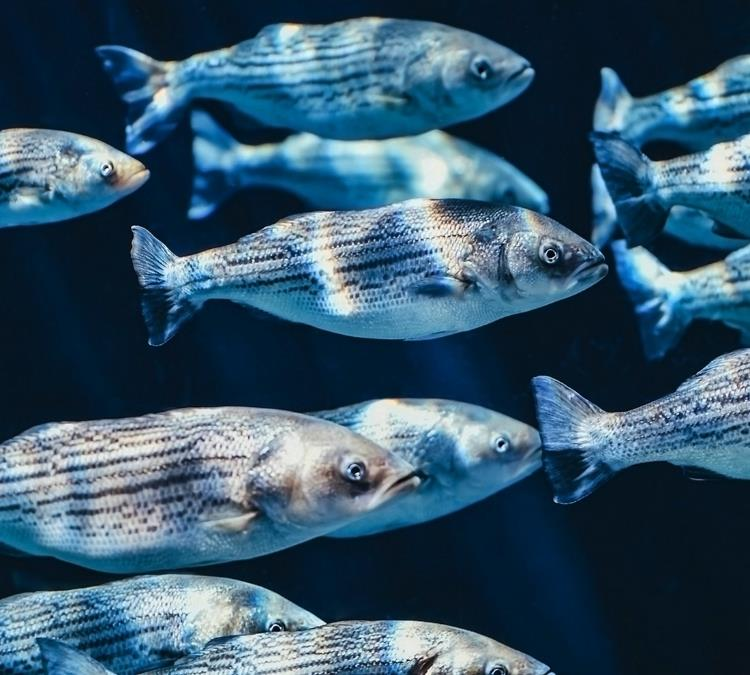
To distract herself from heavy thoughts, Rina began, as she put it, a scientific inspection of the cave. She wanted to study the place from top to bottom, to examine the cell down to the tiniest crevices.
But soon she discovered that not every detail was easily accessible, because each ledge and hollow was already occupied – little faces peeked out from every crack. Even some of the stones on the floor weren't just slate, but the roofs of hidden shelters. Moray eels, crabs, octopuses, sea stars, oysters, scallops, and mussels, along with other mollusks, kept to the bottom. A bit higher, squids, shrimp, crayfish, cuttlefish, and lobsters inhabited every niche and burrow alongside creatures totally unknown to Rina. And above them were all sorts of fish – some didn't even look like fish, and only their rhythmically moving gills gave away who they really were.
The cave's population mostly consisted of small sea animals, each about the size of her palm, but a few of the larger fish, two lobsters (two giant brothers), and one unidentifiable being had claimed massive flat rock slabs as their beds. And among the largest, as one of the cave's most influential residents, was Blasta.
“At least I found a decent place”, thought Rina. “Sleeping on the bare floor, even underwater, isn't exactly great”.
Meanwhile, as she mused, Rina was gradually drifting closer and closer to the black tunnel, floating almost inside it. Suddenly, a sharp wave struck her from behind – someone grabbed her, spun her, and forcefully pushed her back into the cave.
“Where are you going?!” Blasta yelled in outrage. It was obvious she was the one who had shoved Rina, trying to hurry her away from the entrance. “Have you lost your will to live?!”
“What happened?” Rina was shocked. “What did I do?”
“Nothing. Just a little more and there'd be two of you! Half the size each!” Blasta snapped, darting aside and twitching her tail tip anxiously.
“I don't get it!”
“Crabs! Red crabs! The jailers!” Blasta shouted throughout the cave. “Didn't you notice? They guard the tunnel. You saw their claws. Blades like that can slice you in half in an instant! Crabs are thick-skulled – they hear us, but they can't even speak! They were ordered to guard the exit, so they guard it. They don't care whether you tried to escape or just drifted sleepily toward the gate caught in a cave draft. They'll slice you up, end of story!”
Rina stared at Blasta, her mouth open. A chill shot from her neck to her toes. She didn't know what to say – except maybe to thank the fish for saving her. But Blasta wasn't waiting for thanks. She was swimming circles around the cave, clearly still rattled and trying to calm down.
“Sorry”, Rina finally said, pulling herself together. “I didn't know. Besides, there's no sign or plaque – nothing to show where you can actually swim or what's off-limits”.
“Why is it so unclear?” Blasta asked, baffled. “The closer to the exit, the more limits you get!”
“True enough”, thought Rina. “So simple...”
This brutal prison simplicity filled her with such hopeless grief that she wanted to cry. But crying salty tears into salty water was pointless anyway...
Attempting to ease the tension, she decided to change the subject:
“So... when will we be fed?”
“Soon”, Blasta replied curtly, but after relaxing a little, she added, “In about an hour, they'll bring it”.
Rina noticed that some fish were also circling the cave, still unsettled by the recent incident.
“And what will they treat us to?” Rina smiled, emphasizing the word “treat”.
Blasta didn't take it as a joke.
Rina clarified, “There are so many here, and everyone's so... different. I guess you all eat various dishes?”
“Dishes?” Blasta's jaw dropped at the idea. “What dishes are you talking about? They'll drag pieces of vura-vura in here and that's it. Vura-vura is a soft coral – a type of hybrid growth. Everyone can eat it because some consider it a plant and others an animal. Of course, it doesn't taste like much, but you'll get used to it. At least we're not starving to death in here”.
Suddenly there was a tapping sound as if someone were clicking their fingernails on a big piece of dry wood:
“Tlee-tlee-tik. Tlee-tlee-tik”.
Rina listened closely.
“What's that?”
“Crab music”, Blasta grinned.
Rina gingerly peeked into the tunnel and there, in the dim light, she saw two dark, grotesque silhouettes of huge crabs sitting at the entrance. One of them had lifted both claws and was knocking them rhythmically against his companion's back as if playing a xylophone. The crab's shell gave off three different tones, and the result really did resemble a kind of music – something like the exotic sounds of Brazilian timbau drums. Rina had been lucky enough to hear a full batucada in Sao Paulo during the trip there with her dad. Of course, the crabs' timbau was much quieter:
“Tik-tik-titik! Tik-tik-tlik! Tik-tik-titik!”
The crabs were clearly into it, their rhythms becoming sharper and more expressive.
“Usually this lasts half an hour. Or longer”, said Blasta. “They're brainless. Nothing in the world interests them except mud-crawling snails and this drumming. When they drum, they forget everything – their shell color even changes! Once I tried swimming up to them during their concert – they didn't notice me. Didn't see me at all!”
“But if the crabs don't see anyone while they're playing music, then... then you could sneak through the gate, slip past and swim out, right?”
“That's exactly what's impossible”, said Blasta sadly. “Look! Before they started tapping, the crabs moved into the tunnel, right up against the gate. Know why? To block the whole exit with their bodies. Next time look at them – on their heads, they have an entire forest of sensitive spines and hairs. If you so much as touch one, they'll snap awake and slice you into paper-thin strips in an instant!”
Rina thought for a moment and asked:
“Is it always two crabs drumming, or could there be three?”
“There could be three or four, as many as you like”, said Blasta.
“And they'll all sit there and listen and notice nothing?”
“Probably, yes... Why?”
“Oh, no biggie”. Rina smiled. “I haven't come up with anything yet”.
But in truth, a brilliant idea had occurred to her. She simply wasn't ready to share it with her friend until the entire plan was completed. “A worthy project is solid inside and out”, like Rina's Dad says...
In any case, after thinking hard and planning carefully, she decided to carry out the planet's first underwater psycho-music-engineering experiment – in those exact words. She got up, swam low along the floor, and picked up two small stones that looked like basalt. One was flat, about the size of an espresso saucer, the other was round and light brown – it looked almost like a walnut. Then she returned to her spot. Blasta watched, mouth agape. Rina took the saucer-stone in her left hand, the walnut-stone in her right, and gently tapped the “nut” against the “saucer”:
“Tik!” Then again, “Tik-tik-ti-tlik!”
The sound was almost indistinguishable from the tapping on crab shells – only a bit sharper and without bass tones. Blasta grasped the idea immediately. She stared at her new friend, her huge Palakila eyes wide and unblinking. The totally stunned fish was slowly sinking to the bottom, forgetting to move her fins.
“You're a ge-e-enius...” she whispered and flopped belly-first onto the stone floor.
The two companions felt triumphant! But after pondering for a moment, Rina asked:
“Wait, do you know a popular crab tune they especially love?”
“Of course!” Blasta wrinkled her face. “I have to listen to these dumb serenades every day in here!”
“And can you sing one for me?”
“Sing?” Blasta spread her fins. “You can't sing that. You can only tap it out!”
However, unlike humans or crabs, fish didn't have hands or claws. After struggling and attempting every possible method of knocking, Rina and Blasta together invented an astonishing, perfectly original fish technique called Teeth. Blasta had never had any interest in music, but this time she took the plunge – and was amazed. Who would have thought that her very own jaws, which she'd used actively since her early childhood, could be turned into a universal and quite handy musical instrument?
“Clack-clack-cla! Cla-cla-clack!” Blasta chattered her teeth.
“Tik-tik-tlee! Tlee-tlee-tik!” echoed Rina, tapping the round pebble against the dish-shaped stone.
In just half an hour, they had managed to learn the all-time favorite crab knocking tune, which, by the way, was far from simple, but fortunately, its pattern greatly resembled the New Year's classic “Jingle Bells”.
“Ti-ti-tik! Ti-ti-tlik! Tli-ti! Tli-ti! Tik!”
After quietly tapping the jingle around ten times in a row, Rina and Blasta agreed to test the power of music magic right after lunch.
Soon the crabs completed all the numbers in their musical program and, after standing motionless for a few minutes – probably coming to their senses after the “aesthetic enjoyment” – crawled off in different directions. And a little while later, both of them returned, carrying two huge loads of freshly sliced grayish-pink chunks of vura-vura coral on their flat backs. Like two robotic dump trucks, the crabs offloaded the coral bricks in the middle of the cave and left. The entire prison community floated out of their burrows and holes and swarmed toward the long-awaited food.
12 – THE BREAKOUT
part two
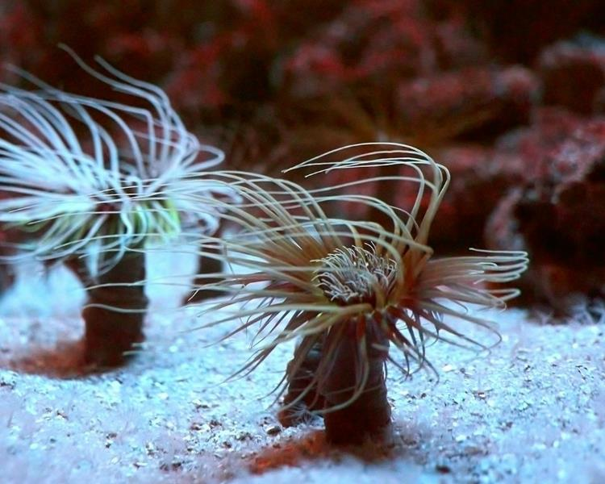
Surprisingly, the vura-vura coral proved to be tasty. Though perhaps that was just because Rina had gotten rather hungry by then. Still, the flavor really was quite pleasant – somewhere in Europe, this kind of food would definitely be considered a delicacy. Either way, the coral meat was remarkably nutritious and resembled something between a French cheese soufflé and those vegan “Vici” crab sticks Mom used to buy at Varus. Satiated, Rina took out a handkerchief, carefully wrapped up a fist-sized cube of coral, and hid it in her pocket, “Might come in handy”. Blasta paid no attention to this maneuver. Rina asked:
“Well, can we do it now? Are we ready to start the show?”
“No, we aren't, still too early”, Blasta answered, straining to chew her twentieth piece. “The crabs will be back soon – they're going to identify us”.
“What do you mean, identify?” Rina didn't follow.
Blasta explained. Within a minute, Rina found out that red crabs, despite being so thick-skulled and witless in every other way, possessed one unique ability – perfect visual memory. They couldn't count, so keeping written records of prisoners was out of the question, but they could spot the absence of any inmate instantly and then identify who they were – what species, color, size, and so on. And then transmit the image directly into the minds of Belmons. After that, it wasn't hard for the octopuses to hunt down the runaways – unless, of course, the fugitives had gotten very far. Every day, the crabs made the prisoners line up in ranks to be “identified”.
That's exactly what happened that evening, the crabs opened the grate and, barely squeezing through – their shells scraping against the tunnel walls – crawled into the cave, oddly enough, not one by one, but as a pair, literally belly to belly, and began clicking their jaws, waving their claws rather aggressively. The inmates reluctantly shuffled toward the center.
The process of identification didn't take long, but it was a grim and humiliating ordeal: the crabs stared at each cellmate with their dead white eyes, and that ghastly gaze made Rina's heart freeze. Finally, they lumbered away.
“Now's the time!” Blasta whispered conspiratorially. Rina nodded, scanned the cave as if Belmons' spies might be hiding somewhere, picked up her priceless pebbles, and tapped, “Ti-ti-tik! Ti-ti-tik!”
All the inhabitants watched the strange, and for most, totally incomprehensible performance without blinking.
“Louder!” Blasta shouted, peering into the darkness of the tunnel.
Rina knocked harder:
“TI-TI-TIK! TI-TI-TIK! TI-TI! TI-TI! TIK!”
“Again! Again!” Blasta demanded.
Caught up in the excitement, Rina pounded the “nut” with rising fervor, swept away by each bar of music. The sharp, sonorous tapping rang in her ears, the pebbles tried to slip through her fingers. The rhythm of the kids' song, familiar since her childhood, consumed her fully, and she even began humming it:
“Jingle bells, jingle bells:
Jingle all the way:
Oh, what fun it is...”
“Faster, faster!” Blasta kept ordering.
“...to ride in a one-horse open sleigh, hey!”
A minute later, Blasta finally dared. She cautiously swam up to the grate, peered through it – and wildly ricocheted back as if she'd been stung by a sea wasp. A glow of victory shone on her happy fishy face.
“They! Are! Listening! They're listening to us!” she shrieked with such joy that Rina faltered for a second and almost stopped tapping. “They're listening! They're listening!” Blasta yelled across the cave, unable to contain her excitement.
Rina rose from her berth and, still tapping, swam with difficulty toward the exit. Through the tunnel, she saw the two giant crabs frozen in the yard five steps from the grate. The crabs weren't moving – they looked like wax exhibits in a natural history museum, their shells yellowed, dimly gleaming with amber traceries.
“They're asleep! Our music put them into a coma!” Blasta whispered in awe – and then... she slipped outside through a wide gap in the grating.
The crabs didn't even stir. They saw nothing and heard not a sound except Rina's pebbles. Without breaking the rhythm, Rina followed her friend's lead and gently floated out to the outer platform in front of the entrance. She stared at the crabs, barely believing her eyes – they both stood motionless on their hind legs, goggling at each other with cloudy, glassy eyes, their horrific claws spread wide...
“Keep tapping!” shouted Blasta. “I'll be right back!”
The fish made an ecstatic spin and lunged back into the cave. Rina's fingers were beginning to ache, but she continued tapping just as clearly and rhythmically. Very soon, a flood of prisoners came pouring out of the tunnel. They all had worried, yet joyful faces. Blasta hadn't needed to convince them for long. As soon as they saw the fish swim out and come back unharmed, the convicts understood everything – and ran! They rushed off at full speed – with all their legs, tentacles, and fins – thrashing, jostling, and scattering in all directions as fast as possible. Blasta flew up to Rina:
“Hurry! Let's get out of here! Now!”
But both of Rina's hands were occupied with pebbles. She was swimming, though her turtle-like momentum clearly didn't satisfy the fish. Blasta quickly looked her friend over from all sides and, finding a more or less workable solution, slipped the tip of her snout under the strap of Rina's backpack and began to pull.
“Louder! Tap louder!”
Rina, with completely numb fingers, kept tapping the “saucer” as hard as she could, slipping out of rhythm two or three times, but the crabs didn't notice anything. Suddenly, after a particularly strong strike with the “nut”, the saucer-pebble cracked in the middle and split in two. From behind Rina, Blasta couldn't see the catastrophe that had occurred. She shouted:
“Keep playing! Tap it! What are you doing? Don't stop! They're close!”
“I can't!” Rina cried out desperately. “The instrument broke!”
Blasta was a clever fish. Though she didn't entirely grasp what exactly had broken, she understood the main problem, the crabs were still nearby! And the only thing that could save the fugitives was speed.
But using her snout to drag a big, heavy, and completely un-hydrodynamic girl was too difficult for the fish. Blasta dived under her friend and commanded:
“Grab onto me!”
Rina instinctively shoved the nut-pebble into her pocket and gripped the fish's smooth, firm fin with one hand. Blasta surged forward with such mad force that Rina nearly dislocated her forearm – but by some miracle she managed to hold on to the very edge. Blasta was speeding at a crazy velocity unheard of in the underwater world, rising up along a steep spiral, higher and higher, farther and farther from the prison.
After seven minutes of this wild vertical sprint, the fish stopped and, gulping water greedily through her large mouth, asked:
“Every! Thing's! Good! Are? You? All? Right?”
“I'm okay, I'm fine. Just my fingers hurt”.
Blasta caught her breath, thought for some seconds, and said:
“No need. To rush now. No crab or octopus can ever make it. This high. If you want, climb onto my back. I think you'll feel more comfortable there”.
“I'll try, thanks”.
“Thanks? What are you talking about? It's me who should thank you! If it weren't for you, for your invention, I'd have spent my whole miserable life rotting in that cell!”
“Yeah”, Rina nodded, “we both would have rotted there... But still, look at us, we really pulled it off!”
“Pulled it off? More than that – we did great! You couldn't ask for better!”
“It was like a movie”, said Rina, straddling Blasta's back cowgirl-style.
“Like what?” Blasta couldn't make sense of the word.
“Well... like a fairytale”. Rina changed the comparison, assuming they likely didn't show movies in the ocean yet.
“Exactly, a fairytale!” Blasta agreed readily. “And just imagine what the crabs are doing now!”
“Oh, I can imagine! They're thrashing around the empty cave like raging lunatics, biting the walls with their claws out of fury”.
“Totally! And tomorrow they will get it!” Blasta added gleefully. “They're going to catch hell! Belmons are ruthless, they never joke around – they've got no sense of humor whatsoever!”
And thus, happily chatting, the two lucky friends swam off into the darkness, putting more and more distance between themselves and that dreadful, eternal slammer. Their spirits were higher than the largest ocean mountains. Rina was telling some cheerful nonsense about life at her summer cottage, Blasta was laughing, and both were certain that the worst times were finally behind them, and only success and victories awaited them ahead.
Life will be bright forever, life will be wonderful with no shadows ahead! It was unbelievable – they had defeated the Red Crabs and the horrible Belmons. There, in the entire Dark Kingdom, no one could even dream of such triumph.
But of course they were both wrong – there were far more difficulties and dangers in the Underwater World than anyone could imagine. The next trap was already visible: deep below, a pale, foggy, golden patch of light began glowing.
“Boz!” Blasta exclaimed. “My hometown! My beloved, my precious city! Boz!”
And turning sharply left, she began her spiraling descent.
13 – THE CITY OF BOZ
part one
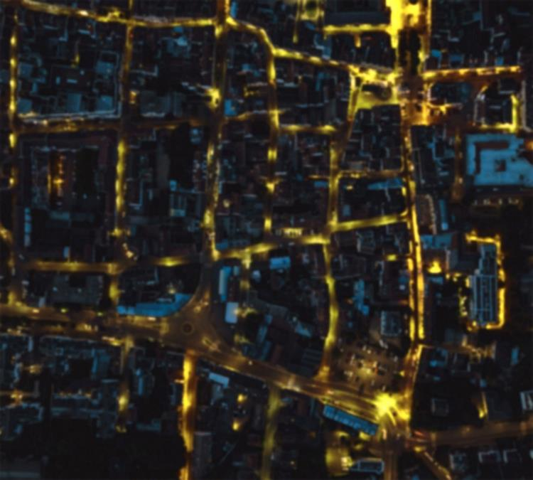
Although Boz was rich and famous, on the map it was just a typical undersea settlement, one of dozens. It was inhabited mostly by fish, squids, crabs, lobsters, starfish, sponges, and other bottom-dwelling creatures. The word “boz” was a distorted “bossoz” in the ancient language of palphins, and it meant ‘number three'.
Why three? Very simple. Long ago, this seabed was nothing but silt in the darkness – light-glowing corals don't live in muck. But one day, burgundy stars appeared, though no one knew where they came from – they never said anything about themselves, and their origins were a complete mystery.
When the burgundy beauties reached this place and found not a single enemy here, they decided to stop wandering and declared the wasteland their national territory. Sure, this violated the law, but the muddy lot was of no use to anyone, the authorities did not oppose. Fine! The stars settled. But living in darkness was difficult and uncomfortable. Then, to the great joy of all, Keyona, a young cousin of the tribe's chieftain, stumbled upon a yellow, self-luminous citrine stone. Soon, the stars washed hundreds of such citrines out of the muck, and the golden stones, like festive lanterns, lit up the dark valley and its surroundings. Life got better, life got merrier!
Over time, thousands of yellow citrines found throughout the area were arranged into light pyramids on new plazas and streets. And when the star colony grew stronger, they constructed a star monument – a huge Column adorned with golden lights laid out in patterns in strict accordance with the mystical worldview of the three-rayed creatures.
Soon, the totally useless backwater had been transformed first into a neat village, then a town, and gradually into a decent city – a natural center of underwater activities. Inevitably, the place began attracting folk of other settlements – many ocean floor dwellers headed there. And the wise stars didn't make relocation difficult. They offered space, light, comfort, and orderly urban life to everyone who wanted in. However, every newcomer had to accept the absolute superiority of the burgundy starfish over all others, no matter their wealth or position.
Well, living in Boz was easy. The only irritating clause there was the Star Time – stars had biological timers inside, they would wake up, eat, work, rest, and go to sleep at precisely scheduled minutes. And naturally, they expected everyone else to live by the same scheme. Many of the incomers couldn't withstand the rigorous rules and left the city, but most stayed.
Over the years, Boz grew, prospered, and became a local capital. The neighboring areas kept merging into the starfish realm one by one. And quite spontaneously, perhaps for the first time in the Galaxy, a new state was born within the vast empire with no destruction, no violence or wars. Later it was named The Golden Duchy of Boz. Predictably, most of the stars held positions of ministers, generals, and other high-ranking officials. The country was ruled by a former “Miss Sensation 66”, now considerably plumper and older, but still ambitious and clever Grand Duchess Aditta.
Blasta was born in Boz. Though due to her restless nature, she was a notorious wanderer and often swam a hundred miles here and there – sometimes toward the Tepid Currents, or to the White Mountains, and even as far as the Plain of Mercy, where she managed to survive in strong currents of icy water. But each time she returned to her hometown, where, as a long-time resident, she had a rather cute underground apartment.
Blasta fully accepted the stars' routines, paid her taxes, and never clashed with the authorities – except for one incident when she was caught eating in the wrong place at the wrong time. But after paying a vexing fine of ten red shells, poor Blasta was once again listed among the law-abiding citizens of the glorious city of Boz.
Rina sat atop the fish, her eyes wide as she gazed at the approaching underwater wonder. She could already make out straight, narrow streets, perfectly round plazas, ideal checkerboards of meticulously arranged parks and squares, and the angular zigzags of roads disappearing into the darkness. All of this was in a pure amber light. From above, the city looked like a mosaic, assembled from tiny plates of the finest gold. The sight was magnificent. Hard to believe, but most of the creators – the stars themselves – had no idea of the elegance and splendor they had built. Stars disliked swimming. Instead, they busily crawled along the sandy lanes, never glancing to either side.
“It's so awesome here!” Rina exclaimed.
Rina had almost forgotten the Belmons and red crabs, together with the fears that had so recently tormented her. She didn't want to think about that. She looked at Boz with amazement and wanted only one thing: to go down as quickly as possible and walk along the golden streets.
Her little dream came true in just a minute. Blasta landed in the middle of a square, at the center of which, a sharp-pointed five-foot-tall pyramid glowed with the charming light of polished yellow stones, illuminating everything around. As Rina would learn later, they were held together with a special compound that the stars kept as a state secret. But no one except the stars knew that the very top stone of every pyramid was always left unglued – perfectly in line with the romantic ideals of the New Holy Star Commandment...
Rina stood up, stepped onto the sand – it crunched under her sneakers like the first snow – and, full of excitement, she declared:
“This is like magic! This doesn't happen in real life!”
Blasta didn't reply – she was busy inspecting the square and peering into the streets. The only thing that mattered to her at the moment was the question – what time it was now? Unlike the stars, Palakila fish couldn't tell time, and Blasta had no desire to pay an absurd, unfair fine for improper use of her own body.
The square was empty, and Blasta concluded that it was night in the city – the citizens were asleep in their burrows according to schedule.
“We'd better hurry”, she said with concern. “I live on Three Lights Street – it's not far”. Blasta pointed with her snout. “About five hundred of my lengths. If you're tired, I'll give you a lift”.
“No, no, thanks, I'd rather swim by myself”, Rina replied. “I want to see it all, it's so beautiful!”
“Yeah, beautiful – waking time, sleeping time, administration, patrol squids, penalties...” Blasta grumbled under her breath.
Rina wasn't listening – she swam almost like a dolphin, turning her head left and right, unaware of Blasta's nervously twitching tail as the fish impatiently waited for her too-slow friend.
Fortunately, Blasta's home really was nearby, and they encountered nobody along the way. Blasta slipped into one of the round holes, carefully decorated all around with tiny bluish shells. She poked her snout out and whispered:
“Hurry, please! This way! Swim in!”
Rina entered. Almost immediately after the wide entrance, the space narrowed into a tight corridor, and at the bend her backpack bumped into a protruding corner, forcing her to squeeze through. But just beyond the twist, the tunnel opened into a spacious oval room. Rina looked around with great curiosity – it's not every day one gets to visit a real home of an ocean fish, let alone at this unimaginable depth.
The room was furnished modestly – it was practically bare, if you didn't count two cylindrical stones of unknown purpose and a large flat piece of basalt – clearly Blasta's bed. But everything – walls, floor, and ceiling – was studded with holes and recesses of all shapes and sizes. And in the center of the ceiling, a big glowing cube-shaped citrine was attached, serving perfectly as a chandelier.
“This is how I live”, Blasta said a bit bashfully.
“I love it!” Rina was delighted. “If I hadn't seen it myself, I would never have believed that fish live in such large, cozy apartments!”
“Well, when it comes to size and comfort, I wouldn't go that far”, Blasta replied, wrinkling her snout. “You see, I'm no rich fish – my income is average, and so is my average home in an average district. Now, if you ever visited someone on Triple-Three-Light Street, that's a different story”.
“I don't want any triple-threes, I'd rather stay here with you. And honestly” – Rina looked around the room – “I do really like your place”.
“No kidding?” Blasta asked skeptically.
“Oh, you're so suspicious – it's almost insulting!” Rina exclaimed, swam over and hugged the fish tightly.
Having studied the apartment, now being rested and relaxed, Rina thought about the map. So much had happened that day, so many incredible events – all so fast and dramatic – that the map hadn't crossed her mind even once. But now, having fully recovered and being at peace, Rina returned to the main question: where was the entrance to the next world? The map! She had to check it immediately.
She took off her backpack, which she hadn't parted with for even a second all this time, and untied it. Blasta stopped breathing – literally lost the ability to move her muscles. Rina noticed her extreme surprise and asked:
“Something's wrong?”
“You... you...” Blasta mumbled. “You fell apart!”
Rina looked at the backpack and burst out laughing.
“Oh! Nobody fell apart! That's not me, not a part of me, it's a thing, you understand? A thing that you wear on your back, and you put other things inside it. If they fit, of course”.
With bulging eyes, Blasta hovered at a cautious distance, but finally dared to come closer – though she didn't stop worrying until she had touched the backpack with every one of her fins and thoroughly examined everything inside.
Amazingly, the map was still intact – it hadn't soaked through and wasn't water-damaged. In fact, it felt dry – at least it had the same glossy surface as on land.
“This isn't paper”, Rina thought. “But why am I even surprised?”
Checking the map was a bit scary. Rina squeezed her eyes shut and unfolded the smooth cardstock by feel. She opened her eyes, looked – and went numb. The map was blue. Completely! From edge to edge, a solid coat of indigo. And of course, the little ‘figure-in-a-skirt'. This time, the girl was made of white dots – a dotted outline. What did that mean? No one knew. But no path was shown, no symbols, no writing. Or wait – there was something! Not on the blue background, but along the thin white border, almost at the very edge, yes, something was written in tiny violet letters, she had to swim closer to the chandelier to read it.
lighT oceaN
Exactly like that – with a capital “T” and a capital “N”, that was all the information! The little figure in the middle – the girl in the skirt – and to her right, lighT oceaN. Not a single other note. And how was she supposed to interpret that? Well, okay, the main thing was clear – the entrance to another world was somewhere in the Light Ocean. Fine. But how to get there?
Blasta didn't know where the Light Ocean was located, let alone in what direction. Yes, she was a prominent traveler, but even her boldest voyages had rarely gone beyond a hundred miles (later Blasta explained that “a mile” was just one thousand of her own lengths, so all the miles in the kingdom were strictly personal).
“Well, the inscription is to the right of the girl”, Rina reasoned. “And she is facing me, feet to the South, head to the North, which means her right side is West”.
Rina grabbed her compass and opened it.
“Hooray! It works!”
The whole time, Blasta had been watching her guest with undisguised confusion and a touch of awe. The fish didn't comprehend a single thing – not in the slightest. The only explanation that came into her clever head was that her friend was performing some kind of paranormal ritual – or maybe even witchcraft – and it was best not to interfere.
Finally, having decrypted the map and put it back in her pocket, Rina decided that it was a good time to tidy up her so-called vestments (in Aunt Vera's jargon). Some of the things were dirty (though there was no soap anyway), and the top button was hanging by a single frayed thread – hanging on by pure stubbornness, as Grandpa-2 would say. Everything needed repair.
She took out a needle, but the moment she pulled the jacket off her shoulders and was about to start sewing the button back on, Blasta slipped back into her deep coma-like stupor. Rina had to spend much time explaining that the denim jacket wasn't her skin, and that taking off clothes wasn't too painful or life-threatening…
An hour passed. Blasta, in turn, showed Rina her oddities and valuables, which, predictably, were tucked into holes and nooks everywhere around the walls. There were colored pearls, colored corals, blue, black, and green shells, purple pebbles, two dwarf shark skulls, pieces of volcanic glass, bones, claws, and even a petrified eye of a giant white spider, which had lived in that province ages ago. And she showed her personal bank: right under the basalt bed there was a hole concealed under a plate of gray slate. There were two hundred eighty-seven red shells (Blasta was good at counting), and forty-two transparent ones – a rather significant amount of money, by the way.
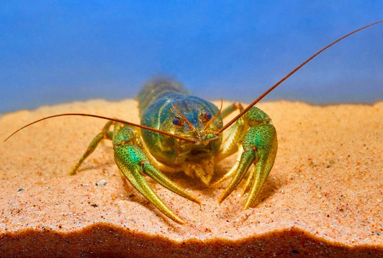
But her most prized treasure was a scarlet bomur antenna. A bomur is a large crayfish. Once, Blasta spent a month on the slopes of Mount Beu-Oss, where she met a highly educated old crayfish named Rinsho. The day Blasta decided to move back home, Rinsho gave her one of his antennae as a present.
Bomur crayfish are known to shed their antennae every ten years, the old ones fall off and new thin sprouts grow in their places. At the moment of detachment, the fallen antenna changes from dark brown to piercing red. Nowadays, bomurs are rare, almost extinct, and their antennae are considered pretty expensive jewels.
Next, Blasta treated her friend to sea macaroni, which was in fact nothing more than young shoots of Cayoma. When Cayoma is a baby, it protects itself by mimicking the shape of the poisonous jellyfish Agamia. Later, it grows long limbs and becomes a copy of the dangerous octopus Tastod – though much smaller. And as it matures, Cayoma stretches even more and transforms into a charming underwater tree. Once a season, large fish snap off its fragile new shoots to eat them raw, but if you hide them under rocks for a week – they become softer and wonderfully flavorful.
So, the two friends were lying on a warm flat stone, chatting without a care, laughing and chewing the fabulous macaroni. Life was good! But they didn't get to finish lunch: suddenly, right above the entrance to Blasta's apartment, an ear-splitting howl sounded – just like a steamship in old movies. Rina jumped up in fright.
“What's that?!”
“Don't be scared”, Blasta smiled. “That's just the ‘Reveille' call”.
“Reveille?” Rina remembered a boy named Andriyka from the fourth floor – a freckled, white-browed lad who always told stories about his scout camp, where mornings started with ‘Reveille!', and evenings ended with ‘Lights out!'
“REVEILLE FOR EVERYONE!” Blasta called out playfully, then explained, “In the whole city, only the stars have clocks – no one else can tell the exact time. So we have a crew of signal-squids. They send signals six times a day, and the signals are different. Right now, it's for the morning routines – everyone must get up, have breakfast, and get ready. After that comes the Announcement Time – people gather at the Square of Rays and the Star Administrator announces the beginning of the new day. Later the squids signal again, it'll be time for work and study. And so on”.
“And you live by the signals?” Rina asked, bemused.
“Of course!” Blasta was thrilled at the chance to share the utmost brilliance of the city's signaling system. “You can't imagine how convenient it is! They signal, and you do. No need to think, no need to remember – just listen to the signals and that's it. There's nothing more rational than living by signals and schedules – especially if you don't have a clock. Or do you disagree?”
“I don't know yet”. Rina shrugged, confused. “I haven't tried your schedules so far”.
But in truth, as a Ukrainian girl, raised in a society based on rights, democracy, and freedom, she felt very differently – she just didn't want to offend her new friend. Rina imagined how people in Kyiv would kick this signal-sender and chase him out of the city with dirty brooms, if he dared to tell folks when to get up and what to do next. Very funny!...
13 – THE CITY OF BOZ
part two
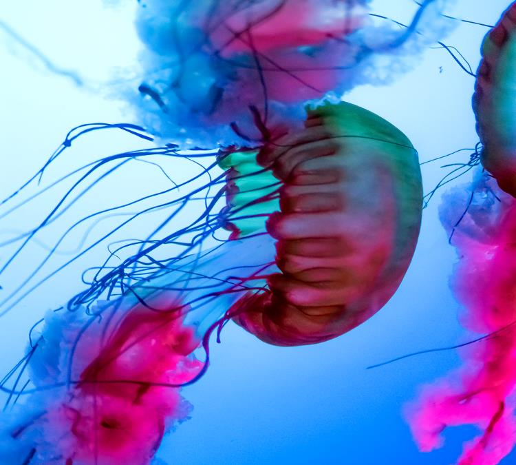
A little later, the two friends were moving side by side along a brightly lit central street. Dozens of other fish and sea creatures were hurrying toward the Square of Rays.
“So, right now your star is going to announce the new day?” Rina clarified.
“Totally! She'll make the announcement. We should not be late. You'll see how beautiful she is! She can raise her arms like this, can you imagine? And she flies like this! And she can curl up into a ball! And right after that the new day starts”.
“Interesting... And what if your star doesn't announce anything, doesn't raise a single arm, doesn't curl up – what happens then?” Rina asked with a naughty smile. “Does the new day still begin, or does it not start without her at all?”
Blasta halted so abruptly that Rina found herself two feet ahead.
“What do you mean she doesn't raise her arm?” Blasta's eyes grew huge.
“Well, I don't knooow”, Rina drawled, holding back her laughter. “Let's say she had stuffed herself with rotten coral last night and now she has a stomachache. Terrible constipation, you see? Or, simpler yet, someone didn't notice her in the dim hallway and stepped on that arm, and now, poor thing, she's stuck in bed for the whole week, moaning and groaning. Or maybe she fell off her wardrobe”. Rina could hardly contain her giggling. “Yes! Imagine this: your Administrator takes her chamber pot in her teeth, climbs up the wardrobe just to take a short break from all the announcements and flights, and then – ka-boom! – she crashes down from the height right onto the sharp rocks! And breaks the pot! Full of... you know”.
Blasta's eyes, now crimson, seemed ready to shoot out of their sockets. She opened her mouth wide, glistening with a hundred prickly teeth, and froze, paralyzed by the rebellious words. But soon she recovered more or less, and, choking on her fury and rage, shouted:
“How could you? How dare you say such things about our kindest Great Administrator?”
Two dozen fish swimming past stopped instantly and turned to examine Rina with curiosity. Blasta got a grip on herself, swam closer, and whispered:
“Listen, you don't understand anything! It's not like that! It's all completely... completely... not like that!” She glanced at the onlookers and added, “Let's get out of here, quick!”
Rina sighed and followed...
Soon they arrived at the Square. It seemed rather different from all other squares not only in size, but also in shape – it was triangular. According to Blasta, there was no more than a minute left before the beginning of the announcement procedure. Practically the entire city population had gathered in that packed area, and those who came too late had to crowd onto the adjoining streets. Rina looked around for a platform, a podium, or at least a big rock from which that large star might address the people. But the square was as perfectly flat as a beaver's tail.
Then everyone fell silent at once. Rina searched for the cause of the sudden hush, glanced up – and gasped, right above the square, a hundred meters up, something ominous began to glow. Her first thought was an alien spaceship – triangular, dark-red, and apparently, very heavy. Descending sinisterly fast, at that.
Before long, she could see that the ‘ship' was made up of numerous glowing fish, scarlet with multiple black stripes. The fish were large and arranged vertically – packed tightly into the shape of a three-pointed star. And sitting right there, perched on the fishy snouts, was the star herself. The fish moved their tails in rhythmic coordination, trying to keep formation as they descended, until they reached the ground.
Rina had the impression that the fish-ship had landed right on the heads of the townsfolk standing in the center. Maybe it really had. From where Rina and Blasta stood, it was hard to see the finer details.
However, within a minute, the red-fish-platform lifted off the square again, allowing Rina to get a better look at the Great Administrator, a sea star of impressive girth, dark cherry in color, her arms dotted with two lines of beige suction cups. She had spread herself regally across the fish – not on their sharp noses anymore, but on their broader, more comfortable backs. The fish had shifted position and now their long bodies formed two layers of something resembling a floating stage.
The star silently surveyed the hushed crowd of loyal subjects with a victor's gaze – and then arched her back just like a cat, standing on all three of her rays, and in this strange pose sang out in an astonishingly beautiful, enchanting contralto:
“Boooz weeelcomes yooou, my friends! I see you've rested weeell! And are ready for useful and noble deeeeds!”
The crowd hummed with awe and approval, but immediately fell silent again.
“We hereby declare and celebrate the commencement of the one hundred, six hundred, nine hundred and fifth day of the Big Counting! Let the new day begin! Let us return to our worthy responsibilities, to work and study, to all the jobs we do in the name of our incomparable Duchy, and to the glory of Lady Boz the Grand Duchess!”
The star lifted off from the live platform, and like some unearthly three-winged bird from Martian fantasies, soared upward. Rising above the spellbound crowd, she froze for a few seconds – then suddenly she shot out her rays in three directions like lightning, and instantly curled into a tight, dark crimson sphere, and then dropped from there like a massive boulder back onto her stage.
Obviously, the audience had been waiting for that exact trick. The crowd practically exploded, fish, crabs, octopuses, and squids – all jumped and shouted, thumping tails and arms, clacking claws. Rina was terrified: the horde had gone totally insane. She stared at the folk, her eyes wide. Then she spotted Blasta – and didn't recognize her. The always clever, judicious, and calm Blasta was now frenzied, spinning like a whirligig and squealing in an absurd, high-pitched, non-fishy voice.
After about three minutes, the crowd began to tire of the excitement and gradually quieted down. Rina looked toward the center of the square, but the burgundy star was gone. When or how she had swum away was up in the water.
So then, the new day had been proclaimed. The crowd of citizens, now slightly subdued but smiling contentedly, began to disperse – swimming and crawling off to go about their business. Rina silently trailed behind Blasta, looking at the streets thoughtfully. The radiant, golden, magical city no longer seemed so wonderful to her. On the contrary – the shinier the lavishly decorated burrows, arks, columns, and grottos were, the more unpleasant and repulsive they appeared. Rina felt a growing disgust for everything around her, she wanted to swim away from this horrible place and forget it forever.
She looked at Blasta – and an unbearable wave of pity pierced her heart.
“The deceitful stars are fooling the folk!” Rina thought mournfully. “They've tricked Blasta! She doesn't understand that the stars aren't needed at all. New days begin without them. Everything happens without them. They're just like all others – no better, no worse, no one is obligated to obey them. Everyone should live in freedom!”
Blasta twitched, as if she had heard Rina's indignation. The fish turned around, surged closer, and said sharply, though trying to keep herself steady:
“You may think whatever you want. But you're wrong”.
“Listen! You are...” Rina began loudly.
She was ready to argue and debate, she wanted to explain what the stars were doing to the inhabitants and why. But she glanced into the hollow fish eyes and remembered Blasta spinning and squealing at the sight of a cheap circus stunt. Rina stumbled mid-phrase and fell silent. She only sighed hopelessly and swam on...
Someone touched the sole of her sneaker. She turned quickly and screamed – behind her, elegantly swaying his springy limbs, floated a large, pink, thick-bodied octopus covered in raspberry-colored spots. He looked at her with serious, unblinking eyes, gently bobbing, almost as if dancing.
“Excuse me, my lady”, he said in a deep, rich bass, slowly lowering himself almost to the sand, “I carry a special message from Her Highness for you. Could I invite you to visit our Star Palace?”
Rina had no idea what was going on. Palace? What palace? Why?
“Her Highness the Grand Duchess offers you a brief audience”, the genteel octopus said, bowing on his tentacles.
Blasta hovered nearby. Though she had heard everything, she didn't dare come closer. Rina looked at her for support, but Blasta quickly turned her gaze away.
“An audience?” Rina repeated.
The octopus bowed once more, and remained in that waiting posture. Rina mentally raced through all possible responses, found none appropriate, and asked:
“But... but when... when will this audience be... taking place?”
“Oh!” the octopus exclaimed, straightening and swaying. “Immediately following the Social Stroll and preceding the First Ducal Luncheon!”
“I don't know where your palace is. I've never been to this city before. And besides, my watch has stopped, and...”
“There is no need for madam to worry”, the octopus interrupted with a third, maximally courteous bow. “A personal Ceremonial Carriage will be sent to you by Her Radiance the Administrator”.
“W-well, all right”, Rina said uncertainly, and after a pause, added – doing her best to keep up the formal tone:
“Please convey to Her Highness... uh... that I do accept the invitation to the brief personal audience”.
The octopus made a pompous, deliberately exaggerated bow, scraping one of his limbs – well, technically a tentacle – across the floor in an old-fashioned way, and asked without straightening up:
“Would the most esteemed lady be so gracious as to state her most deeply respected full name? For the record”.
“Sure, for the record...”
She assumed an air of playful grandeur, lifted her chin, cleared her throat (in her mind, of course), took a deep breath, and solemnly declared:
“Writeth thou this doun! I am Rina, thay Champion of Pan-European Races, thay Conqueror of Black Sands, und thay Keeper of thee Yellow Brook!”
The listed titles crushed the octopus hard – he had never been so profoundly overwhelmed in his life. He bowed much lower now, dripping with servility. After enough groveling to satisfy protocol, he managed to squeeze out a proper phrase, switching from a booming bass to a nasal tenor:
“Please, permit me, Lady the Greatest Keeper Conqueror, to most humbly withdraw and inform Her Grace, the Grand Duchess, of your acceptance”.
“I permith thee!” Rina intoned regally, barely keeping a straight face.
The poor octopus, bent so low he was practically sweeping the floor with his forehead, backed away, tail-tentacles wiggling, and without turning around, began slinking off toward the Square of Rays.
“Unheard-of honor!” Blasta shouted, rushing up to Rina. “Such trust! Such reliance! You can't even imagine what this means, and what a...”
“...what a load of nonsense!” Rina finished. “As for your duchess, honestly... I couldn't care less! I'm only going so I can figure out which way to swim next. I suppose if she doesn't know herself, there should be some brainy crab, or squid, or whatever else in the palace who knows something about the worlds and the ins and outs”.
“A-a-ah!!!” Blasta jumped back as if she had been pricked, she turned even paler – though it seemed impossible. “No-no-no!” she shook her head desperately. “Just don't say that! Never! Don't even mention the worlds! I'm begging you!”
“Okay, okay! Calm down! I'll ask some other way. No worlds. Chill, please”.
Back at Blasta's apartment, Rina asked:
“Didn't the Administrator say everybody must go to work?”
“She did. So what?” Blasta blinked.
“Then why aren't you rushing off somewhere?”
“Oooh, that's what you mean!” Blasta flopped onto the basalt and stretched out full-length. “Doesn't apply to me. I'm a fish – and you know, fish don't work. I mean, some do, if they feel like it, or if they suddenly need to pay for something. I also take gigs from time to time. But generally, no”.
“Why not?”
“Fish are a free people!” Blasta declared, with a weirdly proud tone. “I live in this city, I'm a local, but I have the right to swim off wherever and whenever I want. I do whatever I please. Others cannot”.
“I still don't get it”, Rina said. “You're not explaining anything”.
“Oh, but it's super simple! In our city – and across the whole duchy – anyone born with six directions is independent! Fish and stars can go left, right, forward, backward, up, and down. How many is that?”
“Six”.
“Exactly! Six! But almost everyone else only gets five – four main ones plus down! Their problem is that five doesn't divide by three!”
“So what if it doesn't?” Rina was totally unable to grasp this fish logic.
“What do you mean, so what?” Blasta leaped up on her stone. “Dividing by three is the key to everything!”
“They really are, I don't know… dumb, maybe”, Rina thought with annoyance. “They care about things that don't matter at all. The pointless stuff normal people wouldn't even notice. And the much larger things that really matter – they don't even see them...”
Waiting for the fancy carriage – which Blasta claimed was decked out in ultra-rare pearls and was the priciest ride in the whole duchy – Rina decided to take a nap. She was just wiped. The day had been too much, too heavy, too weird. And even though napping like this was actually against the city's schedule, Blasta took pity on her guest and didn't say a word. She just pulled a special shell over the chandelier, filtering the light into soft, warm amber illumination that made the room feel pleasantly dim and magical – like one of those summer nights at her dad's Carpathian friends' cabin in the woods. Rina yawned, rolled from side to side the way she always did, curled up, closed her eyes – and immediately fell asleep.
Silence and drowsiness – those were the perfect words for the next two dreamy hours. Blasta hovered under the ceiling, wrapped up in thoughts, while Rina snuffled softly through her nose. Everything stayed like that, flawlessly still – until a big-muzzled orange squid burst into the room like a tornado, paying absolutely no attention to the shaded light, and loudly summoned Rina – her heart detonating against her ribs – to his carriage. Or more precisely, to his seashell.
Hardly able to keep her eyes open and bumping into every corner, Rina swam out of the apartment and, still half-asleep, plopped into the shell that looked like a ten-gallon enamel basin – slippery and surprisingly uncomfortable, but sprinkled all over with pearls and all sorts of shiny sea trinkets.
Blasta swam closer and exclaimed in rapture:
“I'm so jealous of you! There you are, going! To speak with the Duchess herself! With the Great Duchess!”
Rina didn't reply. For one thing, she was not completely awake. For another, she didn't want to hurt her friend's feelings, but truth be told, she wasn't exactly brimming with excitement over the upcoming audience.
“Come back quick!” Blasta pleaded. “Don't forget, our alley's called Three Lights Street. Ask around – anyone will point you there”.
“No need to w-worry!” snapped the official-sounding squid, clicking his tentacles into a salute. “Im-mediately after the audience, the L-lady will be returned by a special ess-cort to the exact l-location!”
Blasta sighed. Rina waved. The squid barked something unintelligible to the three long gray fish strapped to the shell. They rose, pulled against their straps. The shell creaked along the sand, tilted – and suddenly lifted off, sailing above the grottos and glowing pyramids, carrying Rina deep into the most distant corner of the undersea capital. She held tight to the rounded rim, gazing down.
She wasn't thinking about anything... well, not really. One weird, sleepy, utterly ridiculous thought managed to sneak into her head:
“I've never flown in a helicopter”, she thought. “Of course, this isn't a copter at all, but I bet the view is pretty much the same”.
The Duchess's whimsical carriage – a glistening shell – rocked gently in the slow opposing current, and floated farther and farther away, leaving street after street below.
14 – CHAOS IN PALACE
part one
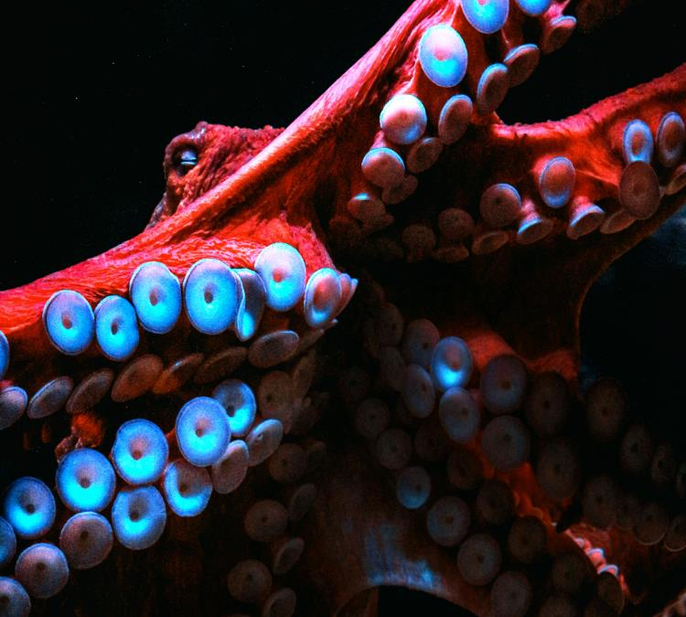
Funny as it was, the Grand Duchess had completely forgotten about the invitation. Truth be told, she'd been blessed – or cursed – with what they called “childish forgetfulness” ever since she was a baby. Plus, on that particular day, Her Highness was entirely preoccupied with the final moves in a game of starfish checkers.
The thought of losing to Marquis Bien gave her a backache, and although she longed to win, all her advisors could clearly see a brutal defeat coming. Some of them were so afraid of her imminent wrath – they had not slept, frantically sketching hundreds of possible strategies in the sand. Naturally, Marquis Bien himself had no intention of clashing with the ruler, but on the other hand, his position was high, his authority absolute, and his wealth and estates – more than vast.
So he didn't have much to lose. He figured if fortune was kind enough to hand him the win, then teaching the old shrieking despot a little lesson at the checkerboard might actually serve the state's best interests. At the very least, it would be the first notable palace event in years. And the palace needed events the way deep-sea astarias required fresh currents of salt water.
Since the Creation of the Ocean, the palace's main ritual had been the Snail Juice Ceremony, a gathering of nobles around white ceremonial stones, sipping sour juice from long spiral shells while engaging in overly intellectual small talk.
Juice is juice – but what do you talk about? For three years straight, all the palace folk had been discussing the underwater hurricane that swept in a bunch of strange creatures now housed at the city zoo. These beasts, unlike anything anyone had ever seen, had a bizarre talent for mimicking any sound they heard. Which quickly turned them into a comical attraction – just say a few words near their cage and the hobnons (as they were called) would immediately belt out whatever you said, loud and in your own voice, no matter how inappropriate the initial phrase was.
The Duchess often visited the cage. She never spoke to the hobnons – too undignified – but she sure enjoyed it when one of her courtiers whispered some flattery through the bars, and the hobnons, who had no ability to whisper, bellowed it back at full volume, utterly unaware of what they were saying.
But since hobnons were just dumb animals with no real brains, the repetitions weren't always accurate. That led to all sorts of mishaps. Like the time the Highest Secretary of the court whispered to them for Her Highness:
“No deep-sea roses compare to your beauty...”
To which the hobnons loudly repeated something like:
“No cheapsy noses tom chairs to your booty!”
The result? The Duchess, roaring with laughter, ordered the executioner to award the poor fellow twenty cheapsy slaps on his booty immediately – to the rollicking delight of the crowd. The Secretary couldn't move his left ray for three days and hobbled around pitifully, which made the whole court laugh even harder.
Before long, there were some clever tricksters who made up gibberish all day long and deliberately pronounced it to the hobnons either too fast, indistinctly, or too quietly, causing them to repeat the phrases with funny distortions. And for a while, the utterly boring Snail Juice Ceremony turned into a riotous affair full of jokes and gags, with the hobnons as the unwitting stars, clueless, brainless, but ridiculously weird.
Then the weeks rolled on. The jokes got stale. Everyone stopped laughing. The courtiers ran out of ideas, the humor dried up, and the hobnons became so tiresome that just hearing their name made people groan. The gray days crept back, filling the halls with a dull green boredom.
And then – out of the black – Her Radiance the Star Administrator returned from the equally dull ritual of Announcing the New Day and brought the Grand Duchess a refreshing little tidbit, a mysterious creature had appeared in the city, never seen before, indescribably strange and extraordinary – apparently much weirder than the hobnons themselves! At the very least, the Administrator was confident that this entity could perform some rare stunts, play pranks, or provide any other pastime – that was essentially all the Palace expected.
The only problem was, no one knew where the creature had come from. What if it was from the Light Ocean – that is, from the enemy? Or worse, what if it had drifted in from beyond the Warm Currents? No one in the entire duchy had the foggiest idea what horrors lurked past those waters. Long story shucked, the Grand Duchess was intrigued and had no choice. She had to summon this ‘whatever it was' with all due ceremony (well, with minimal ceremony, of course), just to see if it could be useful. Maybe it would turn out to be good for something – say, social entertainment. Or maybe not.
Without delay, she dispatched the octopus Mullibu, Junior Master of Throne Procedures, with orders to bring the creature in for an audience.
But then a squid-messenger showed up from Marquis Bien with the next move scrawled right across the squid's forehead. The Duchess made that move on her board – and gasped. The Marquis was threatening a double kinging! She instantly forgot everything else and called an emergency session – not just with her highest advisors, but also with their assistants, their squid-consultants, and shrimp-secretaries. Because in her Duchy, she might have tolerated anything – even war – but a third loss to that dandy upstart Bien? Never!
So when Rina finally spotted the palace buildings at the end of her long flight, and her carriage touched down on astaria-white sand in front of a lavishly patterned arch glowing with fifty yellow stones, and the squid officer politely bowed and pointed toward the entrance with the tip of his tentacle – a wall of crab-guards suddenly burst out of a tunnel, blocked her path, and nearly skewered her with their bone-tipped spears.
Clearly, not only had the Grand Duchess forgotten the audience, but the entire palace staff had too. Totally caught up in the checkerboard crisis, the personnel hadn't informed the guards. And if the Star Administrator hadn't happened to hear the commotion outside her window, Rina might eventually have been turned away. Not that she had any idea where the palace even was in the duchy or how to get back to the Street of Three Lights.
In the end, the Administrator sent two housemaids, and the whole embarrassing incident was resolved in the easiest way: by scaring off the guards. Waving long, mysteriously glowing red sticks and shouting something like “ba-ya-ba-ya!”, the squid maids drove the guards back underground and escorted Rina up with proper respect.
The moment she swam into the Administrator's quarters, she was surrounded by the bustling office fish and various subordinates. They were all talking at once, pushing and poking her with their noses – and Rina could have sworn that one or two of them were even trying to taste her ear. But then the Administrator slipped inside, and the frightened minions scattered in all directions, like beetles under a lit lantern.
“Good day”, Rina said as politely as she could, bowing immediately and deeply, thus skipping other formal preliminaries.
“Good New Day”, the Administrator replied, circling Rina for a full inspection. “What reason compelled you to come to our glorious city? Where are you from?”
“I'm a tourist”. Rina launched into her prepared line. “I travel from place to place and have come here from the desert to explore your famous duchy and all its sights”.
“The De Zert?” The Administrator widened her eyes. “I've never heard of such a kingdom De Zert. Is it beyond the Currents?”
“No, it's above”. Rina pointed at the ceiling.
The Administrator glanced up at the stone arches, thought for a second, and said:
“I see. And you say you travel – yes?”
“Yes, I do. That's true”.
“So then, up above, you traveled too. Meaning, you don't actually belong to that De Zert. Is that correct? In other words – you're from somewhere else. So where are you REALLY from?”
“This is turning into an interrogation”, Rina thought, slightly irritated. Aloud, she said:
“You're right, I'm not from the desert. I live in another... another...” The Administrator leaned in. Rina continued, “in another place”.
“Ah! Another plaaace!” the Administrator exhaled in relief. “That's fine. Very fine... Well, no matter. Are you familiar with the conditions of residence in our city?”
“I am”, Rina nodded. “Everyone must live by the signals”.
“Exactly. Though that's not all”. The Administrator raised her right ray and now waved it in sync with her words. “The main condition is that the citizens of our glorious city must obey the stars – and follow their every command. Every command, literally every one, you understand? Even if it seems unclear, incorrect, mistaken, or anything else – you MUST still do exactly what the stars say. Immediate and absolute obedience to all star directives and recommendations! Do you agree to these terms?”
Rina sighed and thought to herself:
“It's okay. I'll be here for maybe five hours, tops. I can survive that”. And aloud, she said, “Yes, I agree”.
“Excellent! All that's left is to complete your city registration, and then you can stay here as long as you like. Although...” – the Administrator gave Rina a thoughtful once-over – “Although, your size. I suspect the Management will have some trouble finding a suitable spare apartment”.
“Thank you, but I don't need one anymore”. Rina smiled, shaking her head. “I'm staying with Blasta”.
“Blasta? Who is Blasta?”
Rina explained. Naturally, she said nothing about the prison. No names had been recorded there anyway. Yes, of course, the Red Crabs had burned her face into their memories for the rest of their lives – but they couldn't talk.
A few minutes later, having gathered all the necessary details about the foreign visitor, the Administrator personally escorted Rina to the Upper Hall, which served as the reception area for honored guests. The Palace, which looked so dazzling and luxurious from the outside, turned out to be nothing more than a massive coral hill riddled with tunnels, passageways, caves, and grottos – many of them completely undecorated, and some not even lit.
“Wait here”, the Administrator whispered, nodding toward a broad flat stone – probably very comfortable for stars.
Rina decided to act a little more like a real tourist, since that's what she claimed to be. She floated leisurely along the hall, studying the abstract-looking statues placed along the walls and the even stranger drawings carved into the niches – no idea what tool had been used. It was actually pretty interesting. Like a museum tour...
Some time passed. Soon she grew bored and started thinking it wouldn't be too bad to pick up her interrupted dream where she'd left off once she got back to Blasta's. In that dream, she was a hungry fawn wandering through the autumn forest, diligently searching for mushrooms – the white ones, especially...
She couldn't recall the entire dream – there was a noise, and at that moment, a swarm of tiny beige squids burst out from a square opening in the wall. One soon separated from the group – the largest and plumpest of them all, obviously the squid boss. Wriggling, he floated up to Rina, stopped, hovering at a respectful distance, and announced in a well-trained childish baritone, loud enough to make him blush a little:
“Her Highness the Grand Duchess Boz, Patroness of the City of Glowing Stones, Sovereign of the Blue Current, Ruler of Mount Beu-Oss, grants you, Lady Rina” – he stressed the ‘na' – “Conqueror of Deserts and Keeper of the Yellow Brook, a brief audience in the Red Hall!”
Rina listened carefully and then followed the haughty little squid in a calm, unhurried manner. The others lined up behind in two rows, forming something like an honor guard.
In this bizarre order, the entire procession entered the tunnel and emerged into a truly scarlet room – not very large, but well-lit by glowing red stones. For a moment, Rina remembered Uncle Olezhko's physics lab, which she had visited a few times, where cherry-red lanterns always burned, making everything look like another planet. (“Our own little Mars”, Uncle Olezhko used to joke.)
14 – CHAOS IN PALACE
part two
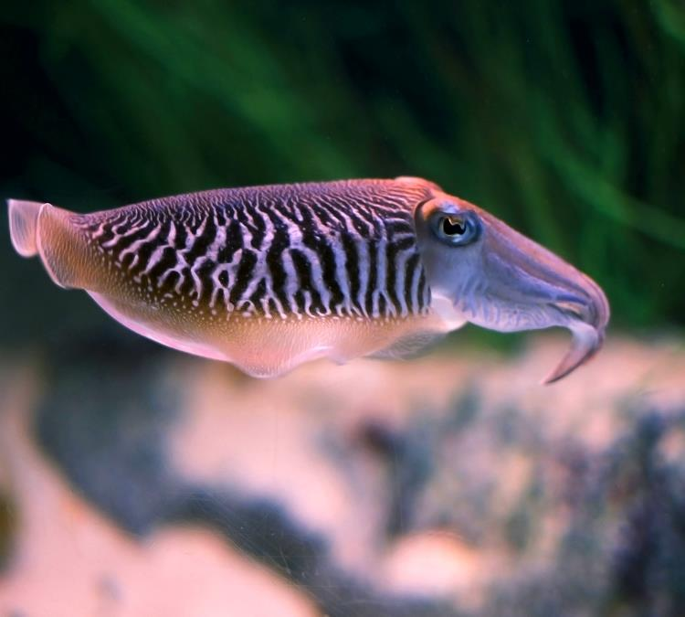
On the left side of the hall stood a multi-ton light-pink stone with a flat top – resembling a giant Frisbee – but its edges were trimmed with a fringe of fine needles that glistened silvery in the shifting light. Reclining on the stone was a star – presumably the Ruler herself – who differed from the Administrator in that she was perhaps half the size, and looked considerably older. Rina bowed and glanced around. The walls radiated a heavy ruby glow. It was impossible to stay in such a place for too long – an eerie, ominous-looking room with the dark red ceiling looming menacingly overhead.
The squids rose higher and hurried back into the tunnel. Rina paused at the entrance. The Administrator was whispering something to the Duchess, who kept glancing at the visitor with great interest, eagerly twitching the tips of her rays.
“Come closer, Lady Rina”, said the Administrator, and glided three paces away from the Duchess.
Rina obeyed and swam forward. The Duchess stared at her for a long moment, motionless, and then suddenly asked:
“What are you able to do?”
“That's odd”. Rina smirked to herself, “a sea star looks nothing like a tortoise, but asks the same kinds of questions”.
“I can do many things”, she replied. “What do you mean?”
“What do you mean, Your Grace!” the Administrator corrected in an insistent tone, slithering back to whisper a few more phrases to the Ruler, of which Rina only caught the words “much” and “very”.
“You can spin. Rotate, I mean”, declared the Duchess with confidence.
“Again?” Rina said in surprise.
“What do you mean ‘again'?” The Duchess looked utterly surprised and sharply turned to the Administrator.
“I mean you need me to spin and rotate. Again!” exclaimed Rina. “Nobody knows why, but on every planet, people are always spinning and rotating”.
“On every WHAT?! Every PLANET?! What planet?!” the Administrator asked sternly, raising all three of her rays.
Rina's heart stumbled. She panicked and, slightly stuttering, tried to cover her slip:
“N-no... not planet... I said... splannet. It's a mirage, an illusion – people call mirages ‘splannets' in our desert. And they love spinning and rotating in mirages. I'm from the desert, and you must know – deserts have tons of mirages. I mean, no true desert can even exist without mirages. No one could survive even a day without mirages”.
“Mirages?” the stars echoed in unison, exchanging glances.
“Yes! Definitely! Mirages! Splannets, as we say – optical illusions, splannets. Imagine, you walk there and see a tiny lake in the distance. You think it's real and you run toward it, but when you get closer – it shimmers, then poof!” Rina snapped her fingers. “Gone! Evaporated! Because there was never a lake or anything. It was just a desert mirage, a splannet, you see?”
The stars didn't understand a thing. How would they? Stars know nothing about deserts, let alone mirages or lakes. Still, the Administrator clearly relaxed – her rays kept lowering. The Duchess said:
“Even so, I hope you really can spin and rotate”.
“Rotate?” Rina smirked. “Of course, I can rotate”.
She floated to the middle of the Red Hall and spun six times on her axis.
“Aaah! Ooo!” the stars cried out as if someone had poked them with scissors.
“Amazing! Astonishing! Magnificent!” the Duchess exclaimed, deeply inspired by Rina's performance. She eagerly wriggled down from her stone and flopped onto the floor, narrowly avoiding tearing her belly open on the sharp, shiny needles. “Tell us! Tell us!” she shouted. “How many spins can you do at once, in one go?”
Rina shrugged. No one had ever asked her such a silly thing. She hadn't expected this nonsense from noble people, but out loud she said:
“I don't know, actually. I've never counted. The hardest part is not getting dizzy. But if I really tried, I guess I could do twenty. Maybe twenty-five”.
“Twenty-five?! Twenty-five!!! Can you imagine?!”
The Administrator was beside herself with joy. “Can you imagine? Gosh! Tomorrow, at the Announcement, I'll bring her with me and she'll spin twenty times in a row! In a row!!! Just picture what the crowd will do! They'll lose their minds forever!”
“Listen! Listen!” the Duchess cut in excitedly. “We'll create a new ducal rule, every day, the number of spins will equal the date divided by three!”
“Brilliant! Outstanding!” the Administrator rejoiced and flew up to the ceiling in celebration of the upcoming festivity. “And the populace, the whole Square – everyone will count the spins out loud!”
“Yes! Exactly! They will! Out loud! And in the Palace she'll rotate in the Black Park, and we'll bet on the spins – how many she can make!”
“A new ducal game!” the Administrator squealed in utmost excitement. “One pearl for every missed spin!”
“Two!”
“Three!”
“Maybe more!”
“But we, I hope, we will know in advance how many spins she'll manage, right?” asked the Ruler.
“Of course! Otherwise, what's the point of the game?”
“Wonderful! Terrific! Excellent!”
Rina stood between the two delighted stars, turning her head left and right, not entirely following what they were talking about. At last, she couldn't stand it anymore.
“Excuse me”, she said. “But I didn't come to your country to spin in public squares. I'm a tourist!”
The stars fell silent mid-word. The Administrator lifted herself onto the tips of her rays, turned gracefully toward Rina, and responded, enunciating each phrase in a drawn-out, almost ceremonial tone – much like she had that morning during the Announcement, only a bit faster:
“Esteemed Lady Rina! It is clear that you have not yet fully understood or felt the immeasurable fortune that has befallen you. The Grand Duchess invites you to permanent employment at the Palace as the First Assistant to the Administrator of New Days. Is that correct?” – she looked to the Duchess, who nodded in confirmation – “This is an enormous honor, you'll agree”, the Administrator continued, pacing the floor of the Red Hall with her rays, “Few have ever experienced such luck in their lives! What's more, you'll be granted your own room within the Palace walls and a third-class carriage, and in time, a second-class one. In addition, you will be permitted to attend the Thursday Games! Did you ever dream of such success?”
“No, I didn't”, Rina admitted honestly.
“There, you see!” the Administrator exclaimed. “I'll give the order at once to proclaim the Supreme Decree of your appointment, and shortly after...”
“Wait a second!” the Duchess interrupted. “Tell me, I don't understand – on whose behalf will she be rotating?”
“Clearly on our behalf!” the Administrator answered. “She will represent the unceasing rotation of the Ever-blooming Stars!”
“But that's impossible!” the Ruler objected. “She isn't even a star!”
The Administrator looked at Rina carefully.
“Well, she's not a star, but she looks like one. From a distance, very much so”.
“No”, the Duchess disagreed. “Stars have three rays, and she has four. That's just disgusting. Four! Think about it!”
“It doesn't matter...” the Administrator began.
“It does matter! It matters a lot!” the Duchess cut her off. “For the games it may not, but for the Announcement – it's critical! You seriously think no one among the community will notice? Don't delude yourself, darling! The very first day, they'll see she has four rays. We'll be ridiculed to the point of extinction! It would be a provocation – a ready-made act of treason! An attack on state authority!”
After that pronouncement, both stars stopped talking, staring at each other. Finally, the Administrator decided to reason with the Ruler.
“Forgive me, sister, but I think you're exaggerating a bit in this case. The folks? Let them look, let them scrutinize! Ha! If this Rina came here with me, then she was a proper star. Period! Who would dare argue with us?”
“Exactly, exactly...” the Ruler sighed, climbing back onto her spiny stone. “I've always said you were raised without enough discipline. I mean really... How can... How can...” – the Duchess caught her shell on a needle and now, slowly and meticulously picking her way across the spines, was shifting ray by ray – “How can we allow someone with four rays to be presented to the entire Square as a real star?!”
“Then I don't know what to do”, the Administrator confessed, flustered.
“But I know!” the Duchess declared in a commanding royal voice, finally untangling herself from the dangerous spines and settling comfortably on her beloved stone. “Yes, I know! If she had two rays, that would be much harder. But four? We understand what we can do about that!”
The Administrator caught on to what the Duchess was implying and soared up to the ceiling again in a burst of admiration.
“Of course! You're right! It's so simple! Brilliant!”
“True brilliance is simple”, said the Ruler modestly. “Snip it – and there you are! We'll cut it off today, the sooner the better!”
“What?! Cut what off?!” Rina finally grasped the meaning of the Duchess's idea. “What do you mean, cut it off?!”
“Don't worry, my dear!” the Administrator cooed in a soothing, gentle tone. “We'll call in a very experienced red crab specialist, Rakkr, and he'll amputate it, he'll snip away the excess instantly and professionally! This little ray right here!” – the Administrator pointed to Rina's right arm.
Rina stared at her hand in horror, then yanked it behind her back and screamed:
“No way!!! Are you all totally insane?!”
“Clearly, you just haven't had enough time to fully understand the situation”, the Administrator purred even more sweetly. “Losing a single ray is almost painless. Snip – done! And best of all, only once. By tomorrow, you'll be proclaimed a new star! And the day after, you'll be my Assistant and a Personal Confidante of the Grand Duchess herself! Just think – who were you before? Nobody! Absolutely no one! An ordinary ocean animal...”
Rina tried to object, but the Administrator decisively waved her ray and continued:
“Tomorrow, you will be one of the Great Three-Rayed Stars! Chosen ones! Every inhabitant in this city and the whole duchy will bow to you. Every word you say, even the slightest hint, will be respected and instantly obeyed and acted upon by the Duchess's subjects. Wealth, fame, and honor await you, think of it. And more, you'll become part of the sacred Announcement ceremony. You'll hold a position that many true-born stars don't even dream of. Just picture it – even the Great Stars will envy you! And that's not all. You'll be admitted to the ducal games! Such an invitation is an unheard-of, unimaginable honor! All these benefits will be yours as soon as you become three-rayed. I mean – what difference does it make to you whether you have three rays or four? Is it actually worth fretting over a pointless, insignificant, and, let us be frank, absolutely useless little extra ray? Do you agree, or do you need time to think it over?”
“I do not agree! And no, I don't need time to think! Do you really believe I'm going to let you cut off my arm just to get all this straight-up absurdity you're pitching me?” Rina glanced at the exit, focused, drew a deep breath, and said as calmly and confidently as she could, “I'm a tourist. I came here by your invitation. They promised a brief audience to me, and I think it is now over”.
Rina turned to the Ruler and, with the utmost solemnity, gave an expressive bow.
“It was great meeting you, Grand Duchess. Allow me to leave. Please”.
“So you refuse our generous and magnanimous offer?” the Ruler asked sternly.
“I refuse”.
“So you reject the enormous honor We have chosen to bestow upon you?” With every word, the Duchess's rays jerked higher and higher.
“I reject everything!” Rina answered boldly.
“That is your final word, your well-considered, definitive decision?” the Ruler hissed.
“That's final”.
“Guards!” the Duchess shrieked. “Guards!!!”
At that very moment, a crowd of massive fleshy squids burst into the hall one after another, each the size of a big pillow.
“Catch her!!! Seize her!!! Imprison her!!! Jail!!! Jail!!” the Duchess screeched, her voice rising from a shriek into something ultrasonic.
Watching Rina with their dead, unblinking eyes, the squids surrounded her and pounced on her like wild dogs. In an instant, cold, stiff tentacles, as tight as ropes, wrapped hard around her arms and legs.
“Jail! Jail! For life!! Forever!!!” The Duchess did not spare her throat.
Without the slightest delay, the squids dragged Rina out of the hall, swept her through several rooms and tunnels in a single powerful wave, turned into a dark corridor, and soon emerged outside the Palace, surrounded by two dozen more squids from the external guard and five monstrous red crabs.
“Is this even possible?” Rina thought, unable to believe her eyes. “To get thrown in jail twice in one day? That's not even funny”.
And no, it wasn't. Stars were vastly more intelligent, cunning, and devious than the dumb, nasty Belmons. A star-run prison might be secured a hundred times tighter than that primitive little cave, and in that case, the Duchess's sentence of lifelong imprisonment for a disobedient foreigner might turn out to be more than just the rage of a crazy old creature. The dreadful sentence could become a reality, and the prison – a forever home. But... But thinking about that was too heavy. Moreover, Rina wasn't about to give up that easily.
“All right, it's not over yet”, she told herself. “I'll wait and see what can be done”.
And indeed, things were unfolding impressively fast – not even two minutes had passed before the whole squid procession reached the endpoint of their journey. The prison turned out to be just a part of the Palace's rear utility structures. The squids, now moving without haste, carried the detainee over a dimly lit but clearly well-known path that led from the halls, offices, and reception rooms through a series of corridors straight to the prison courtyard.
As Rina had suspected, the prison cells were just large, artificially made holes in a long outcrop of chalky rock – the very rock from which the Palace itself had been built. Only, unlike the Belmons' prison, the walls of these hollows were densely wrapped in a thick netting of twisting seaweed, whose leaves glinted with sharp little spines. And yet, the entrances had no doors, no bars – just nothing.
The guards lowered Rina onto the gritty sand not far from two such holes. The squids backed away several meters and froze.
“Wait here!” ordered the lead squid.
“All right”, she replied. But feeling a weakness in her legs, she sat down tiredly on a round stone sticking out near the wall. The squids didn't object.
Rina had been right, star customs and procedures were many times more complex than those of the Belmons. Instead of just shoving her into one of the cells and being done with it, the guards began to dance. At least, what the purple squids started doing a few minutes later outwardly resembled wild dances without music – the convoy seemed to have completely forgotten about the prisoner, and nothing interested them now but twitching, hopping, diving, and weaving loops and zigzags.
In complete silence, puffing and turning maroon from effort and exertion, the entire squid troop was showing off something unimaginable. There was no rhythm in their tireless pirouettes and leaps, nor any visible order, but at first glance, it was clear – everything was happening according to a well-written and carefully rehearsed script.
After darting and flailing themselves into exhaustion, the guards finished their insane boogie-woogie with a frenzied vibration and suddenly scattered in all directions like billiard balls – but immediately regrouped, fashioning a sort of hemisphere with their bodies, inside of which was their dark-hued leader. He swayed heavily side to side, like the pendulum of an antique clock.
But soon the construction collapsed, the squids sank to the seafloor, and there they lined up in two rows, while the lead guard, tracing a knotty spiral above everyone's heads, floated toward the entrance of the nearest hollow, flipped himself upside down and hung there, glaring at Rina with his bulbous orange eyes.
15 – HONORARY COURT
part one
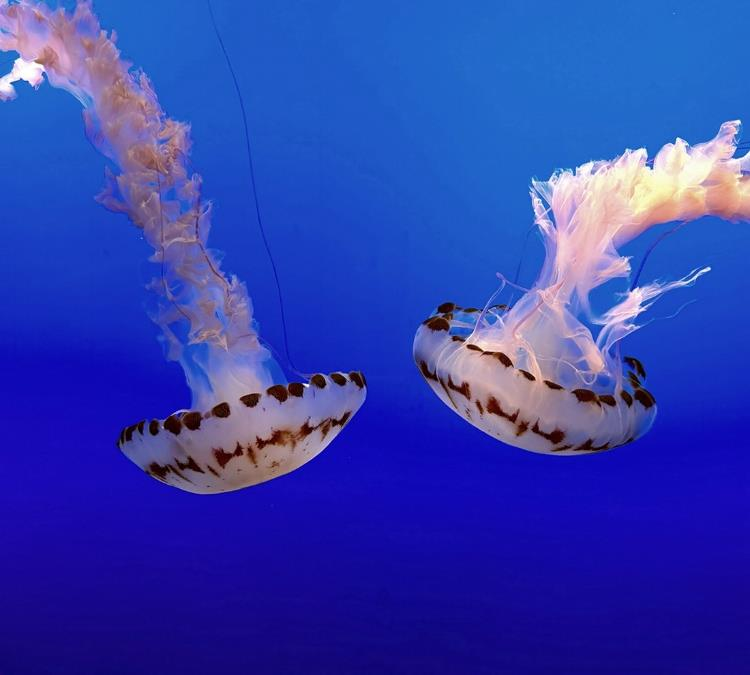
At that very moment, from the unbreakable, solid darkness, a sweet, winsome pair emerged – two horrible red crabs. Like vintage wind-up toys, the crabs marched side by side in perfect sync, pausing for half a second after each step, apparently playing honor guard. On their backs, they carried a book. Or more precisely, a Book! Better yet, a BOOKZILLA! For a moment, a recently seen sci-fi movie came to mind, where in long, abandoned underground vaults, the main character discovered alien books the size of a garage. The film was funny, but cheesy. Reality was tragic and terrifying. The most striking part of the entire scene was the huge, awful claws, gleaming with a golden hue and shimmering like saber blades.
“The Honorary Session of the Honorary Court of the Honorary Prison is hereby declared open!” proclaimed the Senior Guard from above with inflated pride. Right after that, the three-meter-tall piece of blue slate, leaning against the white wall, moved to the side as if by magic and then crashed to the floor, raising an immense cloud of sandy dust and dark silt.
A few minutes later, as the murk, carried away by a sluggish current, began to dissipate, Rina saw that behind the stone was an oval niche, crudely carved – or more likely gnawed – deep into the rock. Nestled inside was an unbelievably fat black octopus, shiny as new rubber boots. It sat, staring blankly into the distance over Rina's head, while the tips of short sausage-like tentacles lazily scratched its bloated, pitch-colored belly, swollen from the recent second lunch.
In perfect mechanical synchronization, both the crabs stepped toward the niche and turned around. As before, Rina thought of automated tractors maneuvering in the field. Unexpectedly, the crabs parted, stepped aside, and the gigantic book plopped onto the floor right in front of the black octopus's belly. So, everyone had to wait again for the muddy fog to settle.
“Suspect!!!” the octopus screeched like a cat with its tail crushed under a door.
Rina even looked around, searching for the source of the sound. It was hard to believe that an animal the size of a rhinoceros could have such a kitten-like voice.
“Suspect! Where is he?!” the octopus squealed piercingly.
Rina cleared her throat and said:
“Ahem... y-yes?”
Eager to get rid of the octopus as quickly as possible, she decided not to make a fuss about whether she was a ‘she' or a ‘he'.
“I don't care”, she thought calmly. “All this will be over in five minutes”.
“Suspect! Your name, species, position, rank, place of work, place of residence, occupation”, the octopus creaked in a rattling rush.
“All right then”. Rina began counting on her fingers. “My name is Rina. But if you want me be precise, I am Rina Volodymyr. Because Volodymyr is my father. That's one. My species – human. That is, I'm a humanoid person. Humanoid teen, right? That's two. Now position”.
“Position! Position!” the octopus confirmed nervously.
“Well, I'm not sure. Most likely, I can be listed as a student. Because I go to school every day”. At these words, the octopus fidgeted impatiently in his niche. “Rank? I don't have one. I'm not old enough to have a rank. And I'm neither a soldier nor an officer. What's next?”
“Place of work!”
“Oh yes, I forgot, you said, my place of work. Cool. Let's say I'm employed at the same school, also as a student. Or is that not acceptable? Position, student, job, student... No? Probably, that's not okay...”
“Residence!” the octopus interrupted.
“Residence is the easiest”, Rina said a bit wearily. “I live in Kyiv. Kyiv is a city, very large, like Boz, though a hundred times bigger, and only people live there. Well, not just people, of course, also dogs live, many, and cats, many as well, and birds, even more, I suppose”. She paused for a second to scratch her head. “And, definitely, butterflies. Millions of them. Especially on the river, not in the river, of course, but along the embankment. And besides, in our forest park, there are about two hundred squirrels. Or maybe three hundred. Who knows? Squirrels run everywhere, no one counts them, it's too hard, you see. And definitely, fish live in the river, also millions just like in your ocean, only ours have no light on their noses. And I think you won't believe it, but even crayfish are found there, thousands of them, just imagine that. Although it is funny, crayfish never live in the river itself. They don't like rivers – I have no idea why – they always prefer crawling in the warm ponds somewhere near the river. Despite the dirt. And honestly, we also have a lot of...”
“Enough!” the octopus screamed. “Your crime?”
“Crime?” Rina was surprised by the word. “What crime? I didn't do anything wrong! I never break rules. Not guilty!”
“Everyone. Says. That”, the octopus drawled with a bored tone.
“Perhaps you're right”. Rina shrugged. “But I'm telling the truth, I haven't done a single thing”.
Still hovering above the cave entrance, the Senior Squid suddenly came to life and declared in a solemn baritone:
“Brazen insult! To Her Highness! The Grand Duchess! And Her Grace! The Chief Administrator!”
“Ah, so that's it!” the octopus gloated, rubbing its front upper tentacles. “And such terrible, unacceptable, unlawful actions you don't even consider a crime?”
“But it's true, I didn't insult anyone! I just said that I refuse to...”
“Cease the debating rigmarole!” he shouted.
“Cease what?” Rina didn't know the word ‘rigmarole'.
“Stop arguing with the judge! Arguments are prohibited!” the octopus pronounced louder, slightly hopping, and only then did she realize he wasn't alone.
The judge-octopus sat as if in a chair in a rounded depression on the head of another octopus, of the same color but gigantic, puffed up like a balloon and with short, thin appendages on the sides. The bloated octopus, despite his occasional movements and incessant scratching of his belly, was asleep! He was totally lost in his sweet dreams and had no idea about the ongoing trial.
“He's probably a backup. Or the assistant”, Rina reasoned.
“I'm not arguing with you”, she replied aloud, “I'm just telling you how it actually happened”.
“We're familiar with your case excessively enough!” the judge squeaked abruptly. “We have no questions whatsoever!”
“Suit yourself, I don't have to tell you then”.
“And no need! The Court knows everything. Entirely!”
From somewhere behind his back, he pulled out a thin white arm, similar to an elongated silver teaspoon, though covered in bright-pink suckers, and began flipping through the pages of the colossal book.
“We know all... justice... this is... you're not... you don't think...” he muttered. “The page... the page… here! On page eight hundred four hundred and six...”
“There's no such page”, said Rina.
“Whaaat?” The octopus twisted his muzzle as if he'd swallowed vinegar.
“Never mind”. She waved her hand and thought, “Let it be page one thousand three thousand, whatever!” She no longer had the will to fight.
“Here it is! We found it!” stated the judge and lifted the edge of the paper so the defendant could also see the law on page eight hundred four hundred and six. Rina gasped – the page was blank. That is, completely blank! Not a single letter, not a symbol, not even the smallest hieroglyph – a clean, totally innocent sheet!
“But there's nothing written there!” she exclaimed in total astonishment. “Your book... your book is fake!”
“What did you say?! How dare you, pathetic miserable accused, pronounce such offensive, inappropriate words?!” shrilled the octopus, overflowing with professional outrage. “Insult to the Great Book of the Bottom Laws! Insult to the Honorary Ducal Court! Insult to everything!”
“Can't you see it yourself?” she said, amazed. “It's empty, absolutely white paper – not a single line...”
“Accused!” the judge interrupted with an impatient jerk. “We advise you not to make your already difficult situation worse! Answer the question, Do you plead guilty?”
“No!” answered Rina firmly. “I'm not going to plead anything!”
“All the worse for you! All the worse!” The octopus was impatiently bouncing with each exclamation, nearly falling off his inflated colleague. “I hereby! Declare! The honorary sentence! According to Article Thirty-Twenty, you are sentenced to eternal imprisonment. And then, according to Article Forty-Fifty, your sentence is doubled. And according to...”
“But how can you double eternal imprisonment if it's eternal?” Rina couldn't believe that courts could be this nonsensical.
“We can, we do!” squealed the judge. “According to the Article!”
“Ah, according to the article”, she said, already weary. “Better to stay quiet”, she thought. “No point in this whole mess anyway”.
But the octopus himself was already exhausted too from the complexities of the “honorary” session. He mumbled the article numbers again – this time they were completely different – and explained that the sentence was final, highest, supreme, foremost, paramount, and top, and that is that! Therefore, it could not be appealed or discussed, or revised, or changed, or improved, or anything! With all his cephalopod might, the judge tried to scare the foolish convict with the strictest punishments, but Rina stubbornly remained silent and didn't react at all.
Then he pulled a sour, twisted grimace, waited half a minute, and asked:
“Convict, would you like to say a final word before your eternal incarceration?”
Rina looked at the stony, indifferent snouts of the half-asleep squids and, with a defiant spark, said:
“You want my final word? Here you go! My final word – kefir!”
“What is ‘kefir'?”
“I won't tell you!”
The octopus was taken aback for a second, but years of courtroom practice took over, and he continued:
“Well. In that case, you are taken into custody immediately! The term of your eternal imprisonment begins this day, this hour, this minute, this... uh... definitively!” He exhaled with relief, then turned to the squids, rose up on his tentacles and ordered:
“Honorary guards! Execute the sentence!”
The squids instantly woke up, grabbed Rina and dragged her toward the left cave entrance. After swimming four or five meters, they stopped. One of them cautiously approached the seaweed thickets on the wall, peered into them attentively, and suddenly squirted out a whole cloud of inky fluid. As stated on Wikipedia, it is a national tradition among sea squids to release ink when frightened. The black-blue fog crawled in slimy streaks across the wall, covering the seaweed leaves with a dark coating.
“Bring in the convict!” barked the Senior Guard. The squids let go of Rina and, sluggishly wiggling their palps, lined up behind her like a purple fence.
There was nothing left to do but enter the tunnel. After swimming a few paces, she looked back, the squids' smug grins filled the entire inlet.
“Too bad my uncle's Rottweiler Rex isn't here with me”, she thought. “He would show you clearly what an honorary court should look like! You'd remember him for the rest of your silly lives!”
The tunnel was long and slightly winding. Somewhere ahead a yellow dot shimmered – it proved to be a simple piece of glowing citrine, about half the size of a matchbox. Rina swam into the cave and looked around, a small room, walls roughly and clumsily carved, two flat stone bunks – one by the back wall, the other in the center and... and nobody. Absolutely no one!
“So this is a solitary cell?” she asked into the emptiness.
Recently, she and Nina went to the IMAX on Berkovetska. The movie was called “Moon ‘B'”. Actually, Rina had convinced Nina to go see the action flick because she'd read a story with the same title. But she was mistaken. The movie was about some radioactive mines and dumb robots. And there in that film, a young woman spent five years in solitary confinement deep underground. And the cell – rock-hewn and round – was just like this one...
Methodically searching the cave from beginning to end, Rina sorrowfully confirmed her complete, desolate loneliness. Not a single little fish or a shrimp, not even the tiniest shell or snail was to be found anywhere. She sat down on the rock and listened – impenetrable silence.
“Hey, maybe everyone's been gone for ages and there's no guard there?” she called out loudly into the empty cell.
The tunnel entrance yawned black across from her. A few steps away, in the dim light it looked like a big smear of soot haphazardly slapped onto the wall. Rina decided to check. Moving her arms as smoothly as she could, taking every precaution, she swam toward the tunnel and fluttered inside like a moth, fanning only with her palms.
She moved slowly. The tunnel curved slightly to the left, and after about five meters, its walls were tinted by a faint bluish light filtering in from the prison courtyard. The closer to the exit, the thicker the algae wove across the walls. Rina brushed one of the leaves by accident, and it stung her pinky sharply. A deep-sea nettle!
Something flashed like a mirror three inches from her face. Rina jerked back, bumped her head on the ceiling, and let out a cry. Only then did she get a good look at that “mirror” – a little fish, about four inches long, with silver scales and stubby red fins. The fish had no glowing spots, but its head was grotesquely large, like you were looking at it through a magnifying glass. And there was something wrong, something off in its whole appearance, but Rina couldn't figure out what it was just yet.
The strange little fish flitted nervously in front of her nose, but soon calmed down and darted back into the tangled thickets.
“Well, you sure scared me”, said Rina. No one answered. “All right, nothing special”, she added. “Just some small fish living in the tunnel. What's so unusual about that?”
15 – HONORARY COURT
part two
Pushing off the floor, she headed for the exit again. But at that same moment, another silvery fish shot out of the weeds and zipped right at her face, barely missing her forehead. Rina froze in confusion and for a while watched the wild darting of the fish with astonishment.
“Shoo! Go away!” she shouted and waved her hand.
In response, three more silvery big-heads burst out. They zoomed around so frantically that even a simple collision with them could easily leave a bruise. But then one of the fish slowed down, hovered about a foot from Rina's face, and everything became clear – it wasn't just the head that was enlarged, but the jaws too! The agitated fish was breathing heavily, opening its gaping mouth, full of the sharpest teeth – like shards of broken glass, all triangular and deadly.
It turned out that these strange little fish were the prison guards! Rina looked at the increasingly thick and overgrown nettle on the walls and thought that by the exit, there could be a hundred, two hundred, or as many of these glass-toothed fish as you like – and with jaws like those, they could shred anything to bits. They weren't attacking only because she hadn't come close enough yet. But everything in their behavior said clearly – they were ready for a fatal strike.
Rina lingered a bit longer, watching the furious fish frenzy to her heart's content, then turned around and swam slowly back. Glancing over her shoulder, she spotted one of the fish trailing a few meters behind her.
“What do you want? Don't you see I'm going back to the cell? Not breaking any rules. Leave me alone! Everything's fine!”
But the fish didn't leave and never responded. Most likely, she could not speak any languages. Not surprising indeed – who needs brains when you've got jaws of this size? Back in the cell, Rina sat on the flat rock by the wall again. The gloomy fish swam into the cave and immediately settled on an angular protrusion on the opposite wall. Undoubtedly she knew that little shelf very well.
“Watching me now?” Rina asked with distaste. “Fine, watch all you like. Warden!”
The fish stared blankly with her empty, motionless eyes and had no intention of going anywhere. Rina decided to distract herself with something useful, to shake off her dark thoughts somehow. She took off her backpack, opened it, and started taking inventory of her personal belongings – pulling out items one by one and neatly laying them out on the smooth rock.
“Ha! The magic is over”, she said with a mournful smile, placing a transparent plastic pouch onto her palm.
While working with Gri-Gri at the Triazis dam on Yellow Brook, she had filled one plastic bag with yellow flower water – making a funny-looking bright yellow balloon. But now the water was colorless. And, on top of that, completely useless. She unwrapped the packet, squeezed out every last drop, and carefully folded it into a square.
“And what am I even going to do with these fruits?” she asked the fish.
The oasis pears, apples, and bananas looked amazingly fresh, but Rina was sure they must have spoiled in ocean water.
“Well, I'll try a little bite”.
She peeled the tip of a banana and cautiously took a nibble. Astonishingly, it tasted great, exactly like a fresh one, and smelled perfect too – no sourness at all.
“All right, you win. I'll keep the fruits, and eat them later”.
Peeking out of a long pocket was her favorite flashlight with the pea-sized bulb.
“But the battery's dead”. Rina sighed, took it out, and pressed the black button.
A blinding yellowish-green beam sliced through the darkness like a carving knife. Rina squeezed her eyes shut. She had gotten so used to the underwater darkness that even those dimly glowing city stones had seemed bright – but now, dazzled by the crazy blast of true, earthly brightness, her eyes couldn't take the overload for a second.
“Whoa! What a light! And the battery's still working! Unbelievable!”
The beam danced around the cell. Surprisingly, the cave wasn't that gray at all, but mottled and vividly colorful. Crystals and flecks of mica glittered like diamonds. Red and orange mineral streaks ran like snakes along the walls, and on the ceiling gleamed a blue crescent-shaped spot she hadn't noticed before. Rina shone the light toward the fish – but the jailer was gone.
“Aha, makes sense! She got scared of the light!” Rina said with a laugh.
Suddenly, it hit her like a golden ticket win.
“Scared of the light?!” she echoed in disbelief.
And answered herself:
“Of course she did! Naturally! Those fish have never seen light like that! So, that means... that means...” Rina felt a mighty volcano of joy erupt in her chest. “...that means I know what to do!”
Without wasting a second, she hurriedly stuffed her precious possessions into her backpack, slung it over her shoulders, thoroughly adjusted the straps and folds, grabbed the miraculous flashlight – turned into a weapon by a twist of fate – and headed resolutely into the tunnel.
Just a meter short of where the first warden-fish had appeared a few minutes earlier, Rina turned vertically, planted both her feet firmly on the floor, and hit the button.
The thin, searing beam cut through the sharp-leaved little jungles. That same moment, deep in the seaweed, nutty chaos ignited – fish thrashed violently, slamming into each other, crashing into the stalks of the plants. Rampant panic spread among the prison guards instantly like wildfire.
Rina pressed forward, undeterred, sweeping the relentless beam over every branch it could reach. The thicket trembled, madly pulsing with uncontrollable energy. Finally, the fish couldn't take it any longer – one by one, mortally terrified, they began bursting out into the open.
Totally insane with fear, stunned and blinded, they darted every which way, viciously bumping their bony snouts into the stone floor and ceiling, fleeing as fast as they could from the terrible, searing, burning blaze of the light.
Rina marched forward.
No one stood in her way.
No one tried to stop her.
“Hurry! Move! The battery may die!” an agitated thought flared in her mind.
To pick up speed, she pushed off the ground and swam, never worrying about the unlit shrubbery. The horror among the fish had reached such a level that the wardens were exploding out of the foliage not just in front of Rina under the deadly blasts, but even behind her – in the darkness, where they were no longer in danger at all.
A few vigorous strokes – and Rina emerged through the open entrance.
Freedom! My sweet, glorious, beautiful freedom!
But there was no time for celebration.
The jailers, shocked beyond reason and fully out of their minds, could easily attract the attention of the palace guards and staff – not with words, but with their frenzied, hysterical behavior. And soon, red crabs would come scuttling into the prison, closely followed by the Belmon octopuses – gray shadows of death. Belmons are phenomenal swimmers, nobody can escape. Against them her little flashlight would be no weapon at all, just a useless toy.
Rina raced on. Faster! Higher! Farther from the prison! Farther from the Palace! Getting away from this wonderful, terrible, sinister city of Boz!
Glancing here and there, she swam over the amber-lit palace gardens. No one was chasing her. No one even noticed her.
Following the rules of her favorite detective stories to cover her tracks, she dipped down toward a blue shale platform and skimmed over it for about a minute, heading toward a cluster of massive coral columns. A couple of huge veil-tail fish and three black pikes stopped and gawked at her, mouths open in astonishment.
Then she ascended higher, spun sharply to the right, and took off at double speed, carried along by a kind, chill current that seemed to be helping her flee.
Maybe the Duchess's palace was far outside the city limits, or perhaps the water below wasn't as clear as before, but within just minutes, Rina couldn't see a thing. Only dense, murky darkness and some blurred, grayish smudges.
The golden lights of the famous city had faded into nothing – forever.
Nearly half an hour passed. The current pushed and pulled her forward diligently, but escape takes its toll – she was worn out from the unaccustomed underwater marathon. She decided to land somewhere quiet, catch her breath and think.
Rina descended a couple hundred meters. All she could make out were some formless blue blotches scattered across the empty black sea floor. No immediate danger, it seemed. Probably just remnants of ancient deep-sea coral still glowing faintly.
“Well, that's that – no more fear”, she said to the darkness, encouraging herself. “I'm dangerous and armed like James Bond – I've got a plasma gun! The only thing... I kinda forgot a spare battery...”
Soon she was standing on the soft sediment at the bottom. Looking more closely, she spotted a big grayish stone jutting out of the brown silt about twenty meters away. But besides that boulder – nothing at all.
“Okay. Now the main thing is not to get caught by the Belmons or the stars' servants. That's death one hundred percent. The stars won't forgive. But more importantly – I have to figure out the right direction”.
Her compass showed that she had been swimming far to the North. No problem – she turned to face due West right away. There it was, her path to safety. But what lay beyond – neither compass nor map could say. And there was no one to ask.
All around, as far as her eyes could see in the dim murk near the bottom, stretched an endless, flat lowland. Nothing but mud, basically. Only a few smoldering fragments of coral gave the dreary scene of this long-forgotten oceanic backwater some sign of life. The perfect emptiness.
16 – BALUBIBO
part one
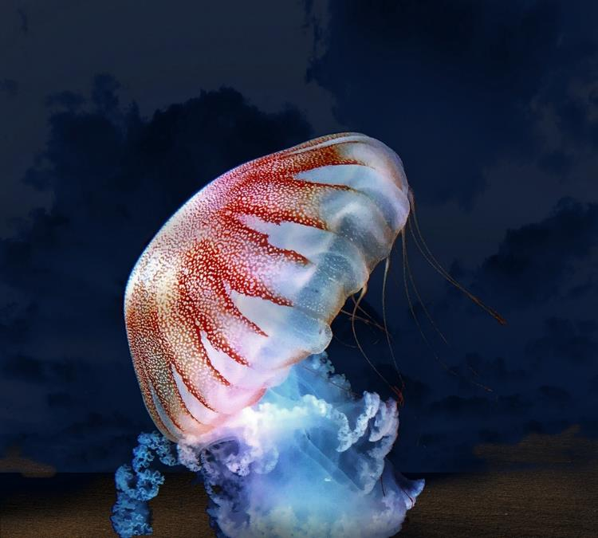
Having rested and grown accustomed to the blackish-violet haze, Rina gathered her will into a tight fist and said, as loudly as she could:
“Everything's fine! No danger at all!”
She wasn't trying to play tricks on her own mind. But with no one else around, what choice did she have? Who else would support her? Who would inspire her in a place like this? Only herself.
Just as it had been long ago in the waterless desert, the ocean floor in the World of Water was a total wilderness – no roads, nor the slightest hint of a trail. There was no sign of intelligent life, either, unless you counted the dimly gleaming fish skeletons scattered here and there.
“This is so stupid. I don't even remember which way their city was”, she whispered irritably.
A heavy, unpleasant thought took root: if she were particularly unlucky – considering how many times she had twisted and turned while fleeing – she might accidentally end up back in the Duchy of Boz. There, something far more terrifying than a life sentence awaited her. A torture chamber, perhaps.
“Fine, we'll see. I know one thing for sure – this time I'm heading the right way”.
And so, she walked. Walking on the seafloor was pretty uncomfortable, but Rina was tired of pretending to be a fish – or, as the Administrator had insultingly put it, ‘an ordinary underwater animal'. She wanted to be a human being again, if only for a minute. She walked upright, head held high, despite her agonizingly slow pace and the nasty sludge clinging to the soles of her sneakers.
Some minutes later, having trudged less than a hundred yards, she looked back and gasped. Above every footprint hung a mushroom-shaped cloud of black sediment. Worse, the trail she'd left wasn't the straight line she had intended, but a complex, winding curve.
After a moment's thought, Rina conceded that “playing human” on the ocean floor cost too much time and strength. She pushed off, rose a bit higher, and swam. The problem of speed and direction was solved.
The tedious, monotonous “Dark Wasteland”, as she dubbed it, stretched for miles. The flat surface didn't rise or fall an inch. Luckily, the hated yellow lights of Boz were nowhere to be seen.
At a height of about three body-lengths, Rina swam a quarter-mile at a time, then descended to the floor to rest for a few minutes. This accidental rhythm proved to be her smartest way to move. After a dozen such breaks, she noticed the mud thinning – in places, the sludge turned a mustard color and was no deeper than half an inch.
“Sand soon, probably. Not that it matters”.
But a short while later, a leaden fatigue set in. She forced herself to swim another hundred meters out of sheer stubbornness before sinking helplessly to the bottom. Here, the floor was solid – stone-hard sand – and nearly clean, with only a light dusting of silt. She also noticed dozens of deep holes, each about the diameter of a glass. The hollows looked suspicious – too round, too even, as if someone had drilled them with a giant auger. At first, Rina was afraid that snakes might live in them, but she quickly calmed down – she realized that so many serpents would never survive on a lifeless plain like this.
There were no large rocks around, so she rested standing up, ‘horse-style', as Grandma-1 would jokingly put it. Rina pulled the stored piece of vura-vura coral from her backpack and ate it. However, it didn't fill her up. She took out the smallest Triazis apple, examined it carefully, and, finding no defects, ate it too. Out of habit, she imagined a cup of coffee – but only out of habit – she wasn't thirsty.
“I'll catch my breath and then swim another four miles bit by bit”, she said loudly, just to break the pressing silence.
“And I'm not swimming anywhere”, said someone behind her.
Rina turned abruptly – and saw a large jellyfish sitting on the smooth bottom just a few steps away and glowing faintly as if warming up like a retro TV. A minute ago, there had been nobody. Magic? Or had it simply sneaked up on her so noiselessly?
Meanwhile, the jellyfish “heated up” completely and lit the sand with oval patches of colored light, each about a meter long.
“Who are you?” asked Rina, trying to quickly gauge the threat.
“I'm a Baanoon”, it answered – or rather, he answered, because his voice, somewhat childish, was definitely male, boyish, perhaps, though sounding too smooth and polished, like most anime voices.
“Baanoon?” Rina repeated, using Lida's trick of repeating to buy time to think.
“Not quite, sorry”. The jellyfish blinked, seemingly a little offended. “Not Baa-anoon, just Ba-aanoon. And you, if you don't mind, who are you exactly?”
Rina decided not to clarify how many “a”s there were in his word. She said:
“Nice to meet you. I'm a human. And my name is Rina”.
“Veeery pleased to meet you, madam”, the Baanoon replied pompously, bowing his round, orange-green-blue... well, multicolored head. “My name is Balubibo. That's my nickname, the local fish call me this. But when I was little, my mother used to call me
********
You're probably wondering why there are eight asterisks instead of a name here. Most likely because no letters in human alphabets could capture those sounds. The Baanoon, still holding his bow, let out eight distinct, unvoiced, nasal “bloops” – each different from the last – as only Baanoons can do, no one else in the world.
Rina replied:
“If you don't mind, sir, I'd rather call you by your nickname. It's easier for me”.
“Very good!” the Baanoon agreed, blinking a green light on top of his head. “Call me Balubibo – I've been used to it for years”.
“Do you live here?” Rina asked, trying to begin a delicate conversation, which, in her plan, could somehow lead to some questions about the Light Ocean.
“Oh yes! Unquestionably! This is where I live, right here at this very spot. And it's been... it's been...” – Balubibo did some mental arithmetic – “forty-six years already. Oh, my! Would you say forty-six is a lot, if you don't mind my asking?”
“It is”, Rina agreed, but then caught herself and quickly added, “Actually you don't look it – maybe thirty, or thirty-three at most”.
“Really? Ooooh! Thank you! And if you don't mind – how old are you? Just pure curiosity, sorry”, he added apologetically, tilting his head.
“Me? My age?” For some reason, Rina felt like hiding her real years and blurted out the first number that came to mind, “Seventy-seven”.
“Aaah! Ho!” exclaimed Balubibo, his eyes widening in astonishment. “Very respectable, if you don't mind my saying! And my compliment must be far greater than yours, but I'm an honest person, so I will tell the truth – you look no more than... uh... with your permission and my respect... no more than forty-five”.
“Wow, what a compliment – forty-five!” Rina laughed silently to herself, but aloud she politely thanked him for such a flattering guess.
An awkward silence followed. The conversation wasn't taking off, and they couldn't find any common ground. Balubibo sat blinking bright, colorful patches and patterns on the back of his head. Rina pretended to be searching for something in her pockets.
“Excuse me...” The Baanoon broke the pause, unable to stand it any longer. “You're not heading to Benabag, by any chance?”
“No”, she answered. “I've never even heard of a city like that”.
“It's not a city, I'm sorry, but Benabag is an underwater forest”.
“A forest?” Rina repeated in surprise. “I don't know, not sure. I was actually swimming around to visit all the local sights. But is your Benabag Forest worth checking out? I mean, is it cool to see?”
Balubibo dimmed his lights and thought hard.
“Unlikely!” He lit up again a minute later. “To be honest, I've never been there, excuse me, but those who have say the water in Benabag is too cold. A health risk, if I may say so”.
“Oh, then, you know, I'll probably skip it. Still, dear Balubibo, do you know which way the glowing pink corals are?”
“No, I'm sorry”. The Baanoon shook his head – it wobbled like jelly. “The only glowing pink thing I know is my own forehead. Hee-hee-hee! Excuse me”.
Rina smiled, as if to play along with the joke. But the conversation still wasn't coming together – they couldn't find anything worth talking about.
And then suddenly, from somewhere above, just like snow falling down from the sky, came a flurry of fidgety little fish. They bustled and jostled, squabbling among themselves, clumping into tight bunches and then bursting apart like fireworks, again and again – until finally, they managed to surround Balubibo in a sparkling, restless ring. Rina had no idea what was going on, but the fish weren't paying any attention to her. They were completely focused on Balubibo.
From the side, the school of fish looked exactly like a swarm of moths circling a streetlight. True, in this case the light was alive, but that didn't change much.
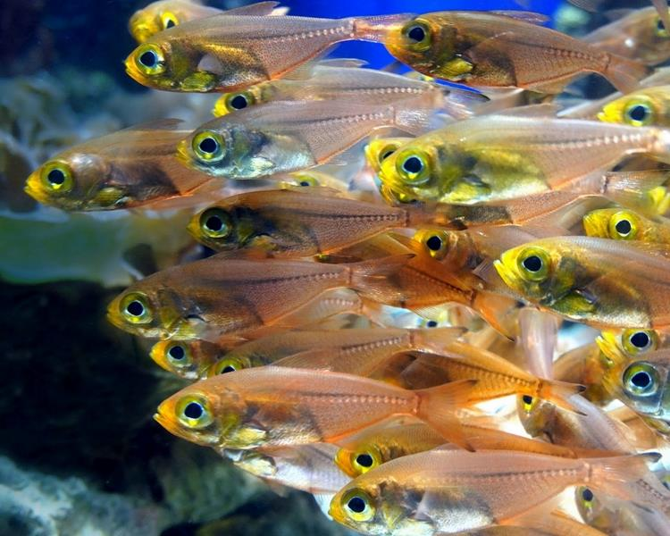
Balubibo seemed to forget all about Rina as he watched the tiniest movements of every single fish. It wasn't hard for him, as Rina noticed, since in addition to his two large orange eyes, he also had numerous miniature, frequently blinking little eyes scattered across his entire head.
“You know these fish?” she asked.
“Know them? I've known them forever!” the Baanoon answered enthusiastically, without taking his eyes off the fish for even a second. “If only you knew how much I love and adore them all! Excuse me, of course”.
Soon, the fish settled down a bit and hovered about a meter above Balubibo's rainbow-shimmering head. The Baanoon drew in a big stream of water, then, in a tender – if a bit sugary – third-grader's voice, declared:
“My dear friends! I am so happy to see you! Today I will tell you the wondrous story of the one and only Striped Pearl”.
The fish froze in place, teeny mouths hanging open. Balubibo continued:
“One day, King Bono-Bono went hunting for lemolises. But he had no luck – the hunters fell into a shark ambush. Only the King survived. The rest of his retinue was torn to pieces by Ambit sharks”.
The fish let out a collective “Aaah!” and quickly reshuffled themselves within the group, then froze again, waiting.
“The King wandered the Gray-Green Sea for a long time”, Balubibo sang, “until he met the sorceress Miroula. She helped him and gave him a carriage pulled by blue pikes. And in return, the King rewarded her with the only incomparable Striped Pearl in the world. That Pearl could speak”.
“Oooo!” cried the fish, shifting their formation again.
“Yes, yes! Picture it, the Pearl is smart, she knows one hundred, three hundred, and seven words in two languages. But unfortunately she is small and frail – she has no legs, no fins, and you won't believe it – not even a little tail. So even the smallest crustacean can hurt her”.
“Aaaa...” the fish sighed sympathetically, slowly shifting again.
“But the sorceress Miroula was locked away in a prison by Prince Barredod. Miroula didn't want her beloved Pearl to fall into the tentacles of Barredod, so she entrusted it to her best student. Guess who it was? Yes, my friends – it was my great-grandfather!”
“Ouaaa!” the fish jumped from shock and changed formation mid-leap.
“Truly I say to you!” shouted Balubibo like a seasoned preacher. “It was my great-grandfather! The Prince never released Miroula. So, in the end, my great-grandfather passed the Talking Pearl to my grandfather, and he gave it to my Papa, and when I grew up, my Papa entrusted the Pearl for safekeeping... to me!”
At those words, the fish burst into a frenzy, darting about chaotically, mixing themselves up, then each one had to scramble to find its proper position. It took some time. Balubibo waited patiently. Eventually, the fish got themselves sorted and completed their reshuffle successfully.
“Ever since that year, the Talking Pearl has lived with me!” the Baanoon sang out grandly. The fish moved again – this time more elegantly and with dignity.
“I want to show it to you! But...”
The fish began a new reshuffling, though they paused at the ‘but'.
“But...” Balubibo continued in a half-whisper, “please, don't scare her. I beg you – no sound, no movement! Do you agree?”
“Yes! Yes! Yes! We agree! We agree!” the fish muttered eagerly, continuing to rearrange themselves – smoothly and solemnly.
“Get ready! Now!” Balubibo shut his tangerine eyes (although all his other tiny quick peepers kept blinking, following every fish without stopping), and then he opened himself – like a tulip bud unfurling in the morning, though instantly, in one single move.
“Quiet! Quiet!” the Baanoon hissed. “Look!”
From the center of the jellyfish flower, a tentacle emerged – thin, white, with a flat paddle at the end. And there on the paddle, like on a cushion, lay a large pearl painted with pink and blue stripes. Rina instinctively stepped a couple paces closer to get a better look.
“Do pearls even talk?” she thought skeptically. “A pearl is just glass. Or bone? I don't remember...”
But the fish had no doubts. Their crystal-backed bodies shimmering, the entire school of fish stared, spellbound, at the treasured gem, watching the hypnotic sway of the white tentacle in breathless awe.
16 – BALUBIBO
part two
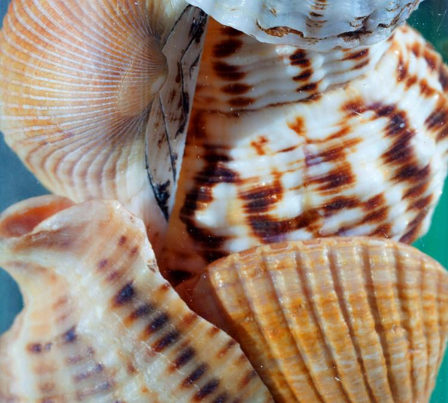
Finally, once they had absorbed the moment, Balubibo stated:
“You're in luck, my friends! The Pearl's speaking! I can hear her!”
The fish immediately swam toward the Pearl – so close that a few accidentally bumped her with their snouts. As if to protect the priceless artifact from clumsy spectators, Balubibo began slowly pulling the tentacle back inside his body-flower.
The enchanted fish, oblivious to everything else, followed it obediently – their attention locked on the marvel.
“She's speaking! Do you hear? She's speaking now!” Balubibo encouraged them, still drawing the tentacle slowly inward.
The poor fish jostled and jammed each other trying to push closer to the treasure. The white paddle disappeared beyond the rim of the flower. Many of the fish, without a second thought, swam inside, full of passionate desire to hear the voice of the legendary relic.
Rina felt something was wrong and opened her mouth to object, but Balubibo suddenly shouted:
“Listen, listen! She's talking about the Warm Currents!”
The fish sank even deeper and, a second later, every last one of them slipped into the bud. And then the inevitable took place – the jelly flower snapped shut!
It all happened so fast and with such treacherous perfection that Rina was petrified and for some time she couldn't even speak. She just stood there staring at the Baanoon with her eyes wide open.
The Baanoon, for his part, was extremely busy – the fish had finally realized their mistake and were now desperately trying to get out. They pounded from the inside so wildly and furiously that Balubibo's head trembled and wobbled like gelatin. But Balubibo, red-faced and grunting, clamped the petals of the flower tightly shut with all his strength.
The fish were doomed.
“What are you doing?!” Rina managed to snap out of it. “Let them go!”
“Who?” Balubibo asked with a crooked, dumb smile.
“Let the fish out! Right now!”
“I don't know any fish”, Balubibo lied shamelessly. “And as for you, by the way, I've never seen you before in my life!”
“Oh really? Well then, I warned you!” She yanked off her backpack and pulled out her secret weapon – her trusty flashlight.
A sharp, piercing beam of light struck the Baanoon, dancing across all his eyes, but he only grinned and said:
“Great! Thank you. Much appreciated. I'd been trying to find my chewing pebble all day long. You helped me”.
This time, he wasn't lying – a small round piece of agate was gleaming on the ground three feet away.
“Perfect! You asked for it”, Rina threatened. “I'll go straight back to the Palace and tell Her Radiance, the Lady Administrator, what you've done, and she will send a dozen red crabs here. To investigate your crimes”.
“Re... Re... Red?!” Balubibo stammered painfully, turning pale and dim. “Cra... Cra... Crabs?!”
“Yes, exactly, crabs! Red Crabs!” Rina shouted, rolling her R's with terrifying loudness. She was gaining momentum. “You don't know who I am!” she hollered, advancing like a battering ram toward the trembling jellyfish. “I am the Race Champion. The Yellow Brook Keeper. The Owner of the Desert”. She had meant to say “conqueror”, but this came out even better. “I am the Chief Assistant to Her Most Serene Lady Administrator!”
“Blub! Blub! Blub!” burbled Balubibo, shaking feverishly.
“The Judge of the Duchy is my cousin! The Head Guard is my uncle! And I am the Grand Duchess's personal friend!”
That was the deathblow. Balubibo couldn't take it any longer.
“BLAAB!” the Baanoon gurgled with all his might – and gaped wide!
The fish shot out like lightning, bolting toward freedom and never looking back, vanishing into the blackness.
“BLE! BLE! BLE!” Balubibo choked and started to cough as if firecrackers were going off inside him. And then a violent convulsion racked his body:
“BL-BL-BLAAAB!”
The Striped Pearl flew out of the jelly flower like a bullet.
“AB! AB! ABAB!” Balubibo bubbled furiously, all his eyes bulging out.
But physically bound to his burrow, he was powerless there – his precious pearl twirled about four paces in a high arc and plopped into a little puddle of soft silt.
In half a second, Rina darted over, grabbed it, and held it up to show him.
“There! You! Look at this! From now on you will never trick poor fish again. You're a liar. Your phony stories are over. Forever!”
“BL! BL! BAB!” Balubibo coughed, staring at the Pearl in Rina's hand in absolute horror and desperately flapping the petals on his head.
Suddenly, the entire wasteland lit up like an Olympic stadium. Rina couldn't believe her eyes, from every round hole, flowers were growing – fantastical buds of multicolored glowing jellyfish! They opened up and burst into bright festive lights – red, blue, green, yellow, pink. Hundreds of dazzling blooms! Rina stared at the spectacle with her mouth open, completely forgetting about the Pearl and the Baanoon.
The jellyfish-flowers looked back at her – and all smiled. Then a blue jellyfish, the closest one, growing right at Rina's feet, spoke in a wonderful opera-like voice:
“Thank you! We thank you, kind stranger! You have saved the honor and glory of our lineage, the entire nation of the flower jellyfish!”
“Me?” said Rina in surprise. “I just let the fish out”.
“Exactly! And you took back the Striped Pearl, which was stolen from us by that... well, let's forget his pathetic name! What you have done is very noble and deserves a great reward”.
“Oh, no need for rewards”, said Rina modestly. “I just don't like tricksters and I can't stand to watch little ones being bullied”.
“Bravo! Bravo!” shouted the jellyfish-flowers from all sides.
“The Striped Pearl is one of the symbols of our family”, said the green jellyfish on the right. “There are very few like it in the Ocean – we only know of five such pearls. And for those who receive them honestly, the Striped Pearls bring happiness and good fortune. This one is yours by right – keep it!”
“No, I can't take something so rare”, Rina objected.
“You've earned it! You've earned it! It's yours! Yours!” the jellyfish insisted.
Rina looked at them and sighed with a smile.
“Well then... if you insist... Thank you, of course! ... And what will happen to Balubibo?”
“Don't worry about him”, answered the purple jellyfish on the left. “We'll take care of his re-education. Without the Pearl, he's nobody. He'll have to obey the laws of the flower jellyfish and give up his predatory ways. He'll become a peaceful water-filterer just like us”.
Rina glanced at Balubibo – he had shriveled up, hunched over, gone completely grayish and dull – a pitiful sight.
“And you won't hand him over to the Belmons?” she asked.
“Definitely not!” assured the yellow jellyfish on the right. “We'll douse him in the juice of blickusta, return him to childhood, and raise him anew. Everyone knows jellyfish are the best educators in the world!” The jellyfish-flowers rustled again and flashed with approving orange lights.
Wasting no time and seizing the moment of the crowd's enthusiasm, Rina asked:
“Kind jellyfish, could you tell me how to get to the Light Ocean? I really need to see King Bollung”.
“We'll help! We'll help!” the jellyfish chorused.
“We can't swim”, explained a lilac jellyfish. “We are bottom-dwellers. But we have friends – the floundulas. They are wise and know everything about everything – they learned the secrets of both oceans. Wait, we'll call them”.
And right then, the multicolored jellyfish began disappearing, one by one, into their deep burrows. Very soon it was dark and cool again, and just as the last one dimmed and faded away from the surface, Rina heard – or rather, felt through her feet – the ground beneath her start to tremble rhythmically.
“Doo! Doo! Doo!” rumbled somewhere in the earth. “Voo! Voo! Voo!” echoed back from distant cliffs.
A few minutes later, it stopped, and the jellyfish began to reappear – one by one and in groups – emerging from their holes, lighting up as they rose and blooming into their luxurious, wondrous flower shapes.
“They'll be here soon, very soon”, said the closest yellow jellyfish. “The floundulas are diligent and serious fish – they won't let you down”.
“The most honorable fish in the whole Ocean!” agreed the other jellyfish.
A moment later, all fell silent and looked upward, searching for the floundulas. Some time passed in quiet anticipation.
“Maybe they...” Rina began to ask.
“Coming! They're coming! The floundulas!” everyone shouted at once.
No matter how hard she tried, Rina couldn't see anything – no lights, no shapes. Apparently, jellyfish had stronger darkness-adapted eyesight.
“Floundulas, what a strange word”, Rina thought. “Floundulas... Floundelas... Flounderas... No! Flounders!” she guessed.
Until that day, she had only seen flounders in pictures and couldn't really imagine how fish with both eyes on one side ever managed to swim. But very soon she saw for herself that flounders were magnificent swimmers.
Finally, Rina saw them. Nine large snow-white fish – she counted them. From afar, they looked like a flock of Pacific albatrosses – mighty white birds in the night sky. Their strong, elastic movements, their proud bearing, and their uniquely elegant, streamlined forms inspired involuntary respect.
Unfortunately, the flounders turned out to be mute. They could hear and understand everything, and they even knew three oceanic languages, but they couldn't speak at all.
The flounders approached and hovered ten meters above the welcomingly blinking jellyfish. The fish kept together, gently moving their muscular fins to stay at the same height. The largest of the nearby jellyfish, radiating an especially intense ruby-red light, turned to the fish and briefly explained everything that had happened there. Also, the jellyfish introduced Rina to the flounders. She bowed. In response, the fish descended and, turning toward her, nodded their heads slowly and meaningfully.
Rina had no idea how to behave properly according to the local etiquette, so she was just smiling and waving both hands as politely as she could.
Then, on behalf of all the jellyfish kin, the Ruby Jellyfish asked the flounders to help guide the foreign traveler to the realm of King Bollung. The name of the ruler of the rival ocean initially unsettled the fish, but after exchanging some silent gestures and signals with the jellyfish, they calmed down and began nodding again.
“The floundulas will escort you to the Blue Current and help you enter it”, said the yellow jellyfish on the right.
“Why do I have to enter a current?” Rina asked, slightly confused.
“The Blue Current is the Great Ocean Road – it once connected both main palaces. But now this part of the Current is under the control of the Duchess of Boz, and entering it is forbidden, though not for everyone. The white floundulas have known these waters since childhood – they'll lead you along the safest path”. The fish hovered just above Rina, bowing left and right as if to confirm the jellyfish's words. “Follow them, kind foreigner, and have no doubt – the fish will help you!”
“I have no doubts, I'll do exactly what you said”, Rina replied seriously.
The flounders were done with their sweeping bows, and now, using fancy gestures to bid farewell to the jellyfish, they began slowly rising above the undersea meadow.
“Goodbye! Thank you!” Rina exclaimed, looking around at the flowers. “Thank you all! I'll never forget your kindness!” She turned, pushed off, and swam after the fish.
“Farewell, good stranger! Farewell! Farewell!” The jellyfish blinked with a soft, sorrowful-white parting light.
The flounders gained altitude, and Rina struggled to keep up. Looking down, she saw hundreds of white lights scattered across the pitch-colored seafloor like white pearls on black silk. A magical sight! But there was no time for awe and gasping – the flounders moved slowly, though steadily. Rina picked up speed, and with each stroke, she drew a little closer. Where was the Blue Current? Was it near or far? And would the flounders wait when she got tired?
“Everything happened so quickly”, she thought. “I didn't get a chance to ask anything... Though, how would I – they're mute”.
At that moment, one of the flounders separated from the group. Only now did Rina get a clear sense of the true size of these unusual fish – more than two meters long! The flounder stopped and nodded several times. Rina approached and carefully touched the fish with her fingertips. The flounder nodded. Rina understood and grabbed hold of the fish's smooth, firm fin.
The flounder flicked her tail and confidently pulled Rina along.
“Thank you”, Rina said, but the fish probably didn't hear.
A minute later, they were in the middle of the white group. Rina gently pulled herself up and lay down on the flounder's flat back, pressing herself against it and holding on to both side fins with her hands (she somehow figured the fish would feel more comfortable this way). Immediately after that, the flounders, no longer held back, picked up their pace.
The forceful currents roared in Rina's ears, and her hair streamed behind her as if in a strong wind. Carefully letting go of one fin, Rina adjusted her slipping backpack and touched the chest pocket of her sundress – there, warm and safe, lay the Striped Pearl.
“I'll be at the Palace, and if I have to give a gift to the King, there's nothing I have that could be better than this pearl”, she thought.
Then a strange idea came to her – just a week ago, she would never in her life have believed she'd be casually meeting and speaking with queens, kings, and duchesses. It all seemed so surreal that the royals and nobles, along with these giant white fish, now felt like a scene from a children's dream.
“But no”. She sighed sadly. “A dream is something you can wake up from. I'm not dreaming. Nina is in captivity in the Seventh World – the farthest one – and I am still in the Third”. She looked into the distance, finding only darkness there. “We're moving toward the Blue Current, which means toward the Light Ocean – straight west, just as the map commanded. And that's what matters. Not a dream – it's my reality”.
The flounder seemed to catch the drift of Rina's thoughts – the fish inclined her flat body and appeared to smile. The distance to the Blue Current was nine thousand two hundred flounder-lengths.
17 – THE LIVING WALL
The nine flounders moved in unison, huge, powerful white birds cutting through the water. Rina lay on the back of the largest of them. With each stroke of sturdy fins, both the fish and the girl rose and fell in rhythm, slowly tilting to the left, then to the right, like a cradle. The steady, repetitive motion, the darkness and the silence all around made Rina want to close her eyes, relax, and drift off to sleep. She shook her head – no! She would fall off the fish's back in a second. To fight off the persistent pull of sleep, she kept biting her lip – a proven trick used by her friend Svetlana, a notorious sleepyhead, during every test...
The flight had already lasted more than two hours. Rina shifted position a hundred times, twisting this way and that to settle herself, but nothing helped. Her arms and fingers went numb, turning into dead, lifeless sticks. Her back was stiff, and whatever strength she had left was fading – melting like snowflakes on a cheek.
“A little longer and I won't make it”, she thought in despair.
At that very moment, just as Rina, exhausted and weary, was about to ask the kind fish for a brief rest, the flounders – all at once, without any visible signal – leaned left in sync and began to spiral downward. Rina lifted her head and peered into the depths. There, at the very heart of the black abyss, a faint glimmer appeared – like a small golden cross beneath a piece of frosted glass. The flounders stopped beating their tails and were now falling almost vertically.
Soon, Rina realized it wasn't a cross below, but four yellowish dots. A minute later, she could see they were pyramids of citrines – the same kind used in Boz on every corner. Most likely, these markers had been placed by the Duchess to establish the boundary of the Blue Current, or maybe one of its entrances.
The flounders kept descending until, finally, they slowed their fall, glided down, and effortlessly touched the sandy ocean floor with graceful precision. The fish spread out and lay still for a few minutes.
“Tired, poor things...” Rina thought, sliding down from the flounder's back and cautiously swimming toward the nearest pyramid.
“I've collected a bunch of souvenirs, but I still don't have a yellow stone”, she said aloud, trying to steady her nerves and regain her balance after the long flight.
At the very top of the pyramid lay an oval, elegant pebble, about the size of a big grape. Luckily (according to the starfish religion), it wasn't glued in place. The stone turned a bit brighter the moment Rina touched it.
“A fire gift for Mom. I just hope it'll keep glowing back on Earth...”
She glanced at the fish. One by one, they were lifting themselves off the sand and slowly gathering into a circle. Two of them began moving their front fins quickly.
“That's how they talk”, Rina guessed.
Then one of the fish gave a strong thrust of her tail, glided over to the pyramids, and pointed her snout somewhere ahead. Rina looked in that direction and noticed a faint yellow dot, barely visible to the eye.
“More glowing stones?” she asked.
The fish nodded.
“Are we going there?”
The fish shook her head ‘no-no-no' and indicated the opposite way – into the dark, no lights at all. Rina understood that was their target.
Soon, the other flounders joined in. Once they were all together, they lined up in a new formation. With gestures and nods, they placed Rina at the very end of the flounder convoy. She couldn't figure out why they were doing it and expected some kind of ancient fish magic, but nothing unusual happened.
The minute they were all in line, the fish set off like a freight train, one after another, the smallest flounder first, the largest one at the end. Rina followed the pattern, waited a second for the ninth fish to pull ahead by three feet, then pushed off the floor and hurried after her white friends.
For a while, the flounders glided just above the sandy surface, neither rising higher nor rushing ahead.
Then something cracked loudly in the emptiness – as if a dry branch snapped underfoot in a sleeping forest – and instantly, a red crab appeared in front of the lead flounder! It wasn't as huge as the guard-crabs, but still, the mere sight of it left Rina frozen in shock.
The front flounder dashed aside, and the crab, blinded by rage, charged after her, stabbing its sharp bony legs into the sand with each yanking stride. The youngest flounder weaved and zigzagged, luring the crab farther and farther away until both of them vanished into the blackness.
The remaining fish paused for a minute, hovering in place, and then turned to look at Rina. Naturally, she was still shaken by what she'd just witnessed, but she understood the clever trick – the crab was being drawn off so the rest could move forward. She waved her hand. The eldest fish nodded, and the whole troop resumed its journey.
Barely three minutes had passed before another crab attacked the front flounder – an oversized, dimwitted crustacean, wild with anger, snapping its claws as it charged after the agile fish. A minute later, everything went quiet. The flounders moved on.
It happened four more times. Now, only the three most experienced remained in the lead. They slowed their pace and settled into a calm bottom current. But after drifting no more than half a mile, they turned and grouped into a triangle, silently watching one another with large, gray eyes.
One of the fish swam off to the side and beckoned the others with several nods.
Rina approached too – and only then did she understand what they had stopped for.
Right in front of her, a colossal, unbelievable wall of blue water rose up, extending into infinity in every direction. The glossy surface shimmered, glinting from within as if faint blue beams were refracting through dozens of distant sapphire prisms.
Rina took a step – and suddenly saw herself, as if in a dim mirror. It was like looking into the dark window of an old village house on a moonless, rainy night. She could feel the motion of a million-ton mass. The wall was flowing like rivers on Earth – like the Dnieper back home. And it was warm. Rina sensed it with her skin, her face, her palms – the inviting, living warmth of the unimaginably powerful inter-ocean stream.
“The Blue Current”, she whispered in awe, turning to the flounders.
The fish were waiting just a few steps behind. It seemed they wanted to say something.
“Thank you!” she said, her voice trembling. “I wish I could stay and thank you properly, to explain how grateful I am, but I'm out of time – I really have to hurry”. The fish nodded in understanding. “I have to go – it's important. Someone is waiting for me, someone needs me very much... Goodbye, kind flounders! I won't forget you. Never! Thank you so much, guys! Bye!”
The silent fish hovered motionless, sadly looking into Rina's eyes. She sighed, faced the Current, and without glancing back, stepped right into the blue wall. The soundless water caught her in its gentle, strong hands, lifted her up, and carried her off into the unknown blue. Rina glanced down – the flounders were gone, and so was the sea floor.
“I'll be at Bollung's palace soon, and that's what matters most”, she told herself, calming down. “Everyone says he's a solid man. That's good. In fairy tales, kind kings always help little girls”. She smiled. “How I wish this were a fairy tale. But...”
The mighty stream treated her tenderly and delicately. The quiet water felt safe, warm, and familiar.
“Like Grandma”, Rina thought.
She was so exhausted, so worn down – so many events had happened to her in this unbelievably long, sometimes nightmarish, sometimes funny, but anyway really difficult underwater day. Now, all her thoughts were wrapped in a thick fog of fatigue. Rina no longer had a clear sense of where she was or what she was doing. With each passing minute, the world around her seemed more and more like a dream.
Drifting in and out of deep drowsiness, she lay on elastic currents as if in a featherbed. She fidgeted a little, rolling over, looking for the most comfortable position, and eventually closed her eyes. The warm water rocked her lovingly, lulled her gently in its soft watery palms.
Rina smiled.
She saw her Grandma.
And Gri-Gri the Parrot with Aunissa the Queen. The three of them were walking barefoot on a sun-heated clay path, laughing, chatting about some cheerful nonsense, and munching on honey pancakes. Aunissa was in the lead. But as soon as she approached a large, wide-branched tree with reddish leaves, she gradually turned into Herx the Wizard – yet her eyes never changed, remaining fixed on the wizard's face without bothering him.
He stood there a minute, thinking. Then came closer – so close his face filled Rina's entire vision – full screen. Herx winked mischievously like a playful boy, but stated rather solemnly:
“You know, girl, I never doubted you. And look how skillfully you are doing everything – much better than anyone could have imagined”.
“I'm doing what better?” Rina asked, in Grandma's voice.
“Just everything!” exclaimed Herx. “And honestly, I didn't expect you to be so fast. Can you believe it – you have crossed a world and a half in six minutes!”
“Six minutes?” Rina repeated in surprise. “Why? It's been several days!”
“Six minutes, six days – what's the difference?”
Then Herx suddenly remembered something very important:
“Listen! I won't be able to come to you anytime soon. I'm busy, you should understand. Some complications. But don't worry – everything's going to be fine. Just one thing: don't believe Aien. Not a single word. Keep in mind – Aien is a liar, a blabbermouth, and a swindler! A big, sneaky liar! Got it? And whatever you do, don't touch the Ae flower”, he paused and added, “Well, I mean – if you absolutely have to, if there's no other way, then all right, you can touch it, nothing terrible will happen. But it's better not to risk it. So, don't forget the formula: Aien is a liar, the Ae flower is dangerous. It's simple. Do you hear me?”
“I hear you. But who's this Aien guy?”
“What Aien? Where's Aien? When is Aien?” Herx suddenly squawked in a horrible, raspy voice.
Where the old man had stood, there now perched a bird, perhaps a starling – yes, a starling, clearly, but so scruffy and disheveled, feathers sticking out on all sides, with an uncombed forelock standing up on its head.
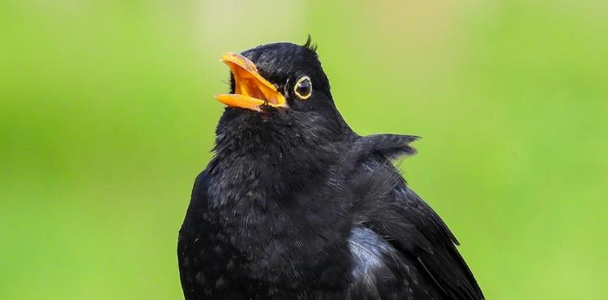
“Who are you?” Rina asked, bewildered.
“No entry without clearance!” barked the starling, flapped its wings, and flew away fast. Rina watched him fly, and saw her yard in Kyiv. On the purple bench beside the jasmine bush sat her mother, explaining something to a boy standing in front of her.
“Mom! Mom!!!” Rina called and tried to run closer – but couldn't move.
Mother didn't hear her.
Rina recognized the boy – it was Herx's student, Yunni. In the bright sunlight, his blue face looked like pure aquamarine. But from the distance, it was impossible to tell whether his eyes were open or shut.
“Yunni!” she yelled, hoping he would hear her.
And he did.
Yunni turned his head, saw her, and raised his blue hand.
Rina wanted to wave back – but she had no arms.
“What's happening to me?” she panicked.
In that same instant, the yard darkened and vanished as if it had fallen into a bottomless well – and in its place appeared a wide, round meadow dotted with delicate, spindly fir saplings. In the center of the circle, five smiling riders sat atop bay horses. Rina stepped forward with purpose.
The riders were dressed in medieval armor made of thick bull-hide and blackened plates of iron. In their hands were long lances with blue and yellow ribbons at the ends.
One of the riders bowed and declared with as much of mock pomp as he could:
“Zivela Kralica, darca nieba zauviek!”
The horsemen giggled.
Rina gave a courtly bow too, deliberately weighty, and replied:
“Kralica priima tvoi naklon”.
The riders exploded with mirth.
Then everything glittered and sparkled – as if dozens of camera flashes went off at once – and within seconds, the people and their horses dissolved into the air. All that remained was the empty meadow – which, before her eyes, began turning into a large, hilly cloud, pink on one side, turquoise on the other, with a big hollow at the top.
But it soon turned out that Rina had been lying right in that weightless crater, in the fluffy little dip – merely resting, arms spread wide, gazing up dreamily at the violet sky. A dream within a dream.
In a minute her unruly eyelids dropped again, and her body, like fast-melting wax, filled every corner of her imagination. Now the third dream slipped into her soul, flooding it generously with a benevolent sea of deep serenity.
Rina savored it, luxuriating in the soft, ephemeral pillows of the steam mound. She was sound asleep in the second dream, slowly floating through the third one – carried off either by a sky-high wind or by a calm tropical river. But which layer of dream she was in now was hard to tell. Surrounded by the warmth of innocent reverie, she slept peacefully on until... a firm, persistent tentacle roughly tapped her on the shoulder, and an unfamiliar voice, harsh and abrupt, shattered all three dreams in an instant.
“Hasn't anyone reported this to Baruvil yet?”
18 – KING BOLLUNG
part one
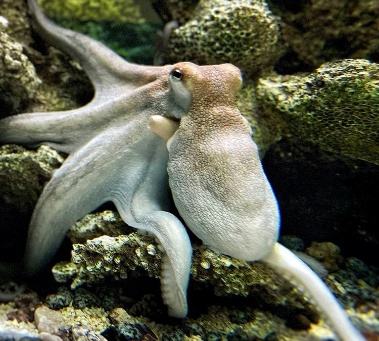
The words were in a new language, yet Rina understood them easily. Still not quite awake, without opening her eyes, she answered:
“Better report to the king”.
“The king?!” the voice asked in confusion.
She shuddered, opened one eye, then another – and found herself face to face with a jelly-like, shapeless monster, trembling disgustingly, with a dozen short limbs growing everywhere. No, she wasn't too frightened – but out of instinct, she backed away a little. Only then did she fully make out the giant jellyfish, as tall as a grown man – thick, many-legged, topped with a puffed-out wide cap molded like an old toadstool. But unlike the similar creatures on Earth, this one had enormous black eyes – round and bulging, just like a deep-sea lemnia fish. His eyes were half-covered by long white lashes, obviously made of that same jelly material.
“Report to the king? Report what to the king?” asked the jellyfish, laboring to tilt its fifty-kilo “sombrero” from side to side. Rina noticed he had nothing resembling a mouth – he simply radiated his thoughts into the water, effortlessly, without bothering to imitate real speech like many other Ocean dwellers did.
“You should report to King Bollung directly!” Rina insisted, unexpectedly firmly, standing up from the flat coral she'd apparently been laid on. “Inform him that Her Shiness the Keeper of the Yellow Brook and the Mistress of the Desert requests an urgent audience. On a matter of importance”.
The jellyfish's eyes grew rounder still. Turning to the side, he muttered quietly:
“No, I really can't proceed with this without Baruvil. Let him figure it out. After all, whose department is this – mine or his?”
“His”, squeaked a voice in reply. “But she's right – we'd probably have to inform the King anyway”.
Rina looked and saw a tiny golden fish, no bigger than her pinky. Obviously, despite its miniature size, the fish was in royal service and clearly an important figure.
“Fine”, Rina agreed. “Take me to your Baruvil. But mind you – I don't have much time, and His Majesty won't be pleased with unnecessary delays”.
“What am I saying?” she thought. “Why am I talking like this?”
But neither the jellyfish nor the golden one found her words the least bit strange. Without another word, the three of them set off – gliding over a sandy path into a misty pink fog. The jellyfish led the way, as if he were the senior officer. Rina followed. The golden fish swam behind, playing the role of the detainee's escort.
Rina looked at the little procession, barely stifling a laugh.
“Back to prison again?! This is turning into a comedy”.
And in this whimsical mood, she decided to tease her bumbling convoy – she suddenly kicked off the ground with both feet and zipped straight up.
“Wait! Wait! Where are you going?” squeaked the fish, flashing past Rina's nose.
“Catch her! Catch her!” yelled the jellyfish, struggling to chase the escapee – his massive mushroom-cap made any real speed impossible.
Rina sighed.
“Oh, you! Pitiful guards! Okay, you won, I give up”. And slowly floated back down.
The indignant jellyfish flailed his little legs in outrage. The golden fish screeched something incomprehensible right into Rina's ear, forcing her to wave him away like a pesky mosquito.
“It's all right, relax. I won't do that again”, she promised. “Take me to your prison”.
“Prison?!” the jellyfish croaked, his eyes jumping up past his forehead. “What prison? We have no prison at all!”
“You don't? Then where are we going?”
“To the Bureau of Registration, of course. Where else? Unless you already have your Eight-Sided Mark”.
“What mark?” Rina was lost.
“The Eight-Sided kind! Like this”. The jellyfish bent forward and, as best he could, revealed the crown of his cap. Right in the center was a beautiful design – something like a multi-triangular snowflake.
“No”. Rina made a face. “I don't have anything like that”.
“There, you see? But we all do! And soon you will too!” the jellyfish said cheerfully.
“Me?”
“Of course, you! They'll make you a proper mark, and you'll become a full member of our great, world's best society of Free Swimming. And you'll become a happy subject of the kindest King Bollung! And definitely...”
“You can't!” the fish squealed. “I have to report it first!”
“Exactly!” agreed the jellyfish. “First, the Eight-Sided Mark. Then Benden reports to Baruvil and the department. And after that you'll be named a happy subject!”
“And what if I don't want to be a happy subject?” Rina objected. “And I don't need any of your stupid marks either! I'm a tourist. And by the way – I'm the Keeper of the Yellow Brook and Mistress of the Black Sands!”
“Uhhh...” the jellyfish moaned.
“You have no right to detain me!” Rina went on indignantly. “I demand an audience. Immediately! Her Shiness the Keeper and the Desert Mistress hath the urgent state-level information for the King to beest thither presenth without delay!”
“I forget what movie that was from”, she thought. “But it actually sounds pretty cool”.
“Uhhh...” the jellyfish closed his eyes, possibly entering a trance. But soon he stopped moaning and declared:
“In that case, I must... No! I am absolutely compelled to pass your message on”. He gave a slight bow. “To pass it on to the Senior Master of the Court, Mr. Be-Ovoh, in his private chancery”.
“Then do so even but now!” Rina granted graciously.
Eventually, after nearly fifteen minutes of this travel, interrupted by pointless stops and the jellyfish's lectures on civil etiquette, the fish squeaked:
“That's it! We're here!”
Rina looked around: a deserted sandy spot, strewn with all sorts of marine debris, dimly lit by rare pink corals. And a round burrow – or rather, a big hole in the floor – about five feet wide. And that was it.
The jellyfish hurried over to the hole and gleefully announced:
“Here's Ka Do! In honor of the 40th Pinkening, we are permitted entry through the Ceremonial Class-Three Door! Meh-meh-meh!”
“Meh-meh-meh!” squeaked the golden fish in response.
Rina thought they were mocking her, making fun of a stupid foreigner – but she was wrong. They were completely serious. The jellyfish furrowed the flesh above his unblinking eyes, even managing a sort of frown, and insisted:
“Meh-meh-meh! Come on now! What are you waiting for?”
“Come on what?” Rina shrugged. “What exactly am I supposed to do?”
“Nothing, just say it! That's all!” the fish prompted.
“Say what?”
“Meh!”
“Meh?” Rina didn't believe it.
“Meh-meh-meh!”
“Fabulous!” But after a moment's thought, she decided to go along with it. “Fine, if that's what it takes. And honestly, what does it matter what I say? Let it be meh-meh-meh, or baa-baa-baa – I don't care!” So she approached and said:
“Okay, take it! Meh-meh-meh!”
“Ohh!” the jellyfish exhaled in relief, and continuously groaning, began squeezing himself into the hole. Finally, he succeeded.
Rina peeked inside the tunnel. The burrow resembled an unfinished well – dark and totally unequipped, but at least its walls were smooth, they glowed faintly with a pinkish hue and looked soft as if made of thin plastic. The jellyfish descended as if in slow mo, his epic mushroom-cap sinking steadily. “Elevator”, Rina thought.
“After you”, the golden fish piped up politely, right in front of Rina's nose.
The descent was dizzyingly unpleasant. The shaft felt bottomless. And worse – the jellyfish, being the slowest of the group, constantly got in the way, so Rina kept accidentally kicking him in the head with her sneakers – well, in the hat, technically.
“Sorry”, she said each time.
And the jellyfish muttered even more crossly.
But after about ten grueling minutes, the shaft widened significantly – until at last it turned into a vast vertical hall. The space grew lighter, and the water became warmer. Soon the silence ended too – sounds could now be heard from below. Rina couldn't resist. She overtook the sluggish jellyfish with ease.
“You mustn't! Etiquette! Chamber Master!” he yelled after her – but she was already far ahead.
Below, somewhere on the bottom, a bright device gleamed – long and narrow, resembling a giant neon lamp. The rumble grew louder. For a split second, Rina thought she heard a harpsichord playing amid the noise.
Then she turned upside down and swam like a little frog, paddling with her arms and legs at the same time, leaving the poor jellyfish far behind – apparently he was deeply insulted by the crude and unforgivable violation of palace ordinance, paragraph three, section eight… or seven. Rina looked back at him and laughed.
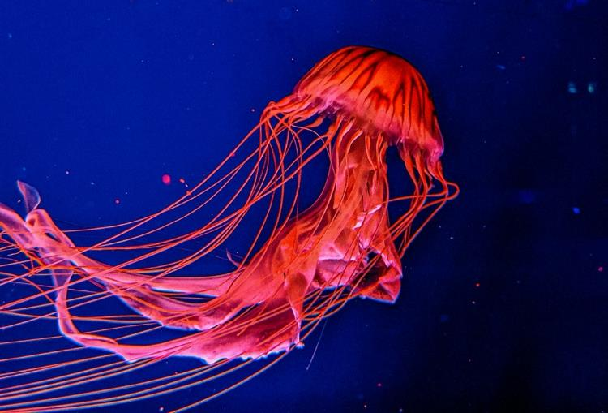
Rina was approaching the base of the shaft and soon spotted two large cream-colored fish and a red jellyfish that looked fairly ordinary. When there were only about twenty paces left to the bottom, the waiting red jellyfish opened his splendid umbrella and rushed up to meet her. Rina paused in mid-descent out of caution.
“Welcooome!” greeted the red jellyfish and quickly added, “Bousing, Second Assistant to the First Chamber Master”.
Rina waited until he rose high enough for her to see his eyes – but found none on his face. She gave a slight bow and responded with her practiced introduction formula:
“hello-i'm-the-keeper-of-the-yellow-brook-and-conqueror-of-the-black-sands-my-name's-rina”.
The jellyfish bowed back, then turned silently and floated down with solemn grace. Why solemn grace? Most likely because his stylish poppy-red umbrella was covered in sophisticated silver patterns, and as he swam, a long train of a hundred fine red tendrils streamed behind him, making him appear richly and ceremonially dressed.
Just then, Rina heard shouting and commotion above her. She looked up and saw her old acquaintance – the mushroom-cap jellyfish – still discontented and still indignant. But the moment he spotted Bousing, he fell silent mid-word and, glancing guiltily around, sank his way past, doing his utmost to look uninvolved. And though Bousing had no eyes – or even a face – Rina could clearly feel his coldly mocking, scornful glance. The mushroom-cap jellyfish shrank to half his size under it.
“This way, please”, Bousing said, turning to Rina before quickening his pace.
Moments later, she stood upon a marble floor in a colossal hall as vast as Mbovva Cave. It was empty, but grandly illuminated by countless pink and blue coral lamps that cast long, two-toned shadows from thin white columns.
“His Majesty is presently occupied with matters of extreme importance”, Bousing whispered, flicking his enchanting umbrella. “But if you are inclined to wait, you may – perhaps – be granted the honor of beholding the Great King in this Hall of Doubles, or wherever else His Majesty deems fit”.
He paused, expectant.
“Thank you”. Rina nodded. “I am inclined”.
“In that case”, Bousing perked up, “permit me to announce your arrival. What may I send to His Majesty's First Secretary?”
Rina took the word ‘send' in the Earth sense and replied uncertainly:
“Like… I mean… please send… um… my best regards to the King”.
The jellyfish made a lightning spin, evidently expecting to see the ‘regards' in Rina's hand. Finding nothing, he blurted out, in a blatant breach of etiquette:
“Where?”
Realizing her blunder, Rina unzipped the chest pocket on her sundress and pulled out the Striped Pearl. Under the bi-colored lamps, the sky-blue and lilac stripes gleamed like festive fairy lights.
Bousing stopped fluttering his umbrella and began to float upward, completely unaware, until he bumped his head against the stone ceiling. From above, he gasped in admiration:
“I've never seen such sincere, such marvelously flawless regards to His Majesty...”
Rina didn't answer. Deep in her girlish heart, she didn't want to give away this one-of-a-kind pearl. Not out of greed – of course not! But really, where on Earth could you ever find anything so rare, so exquisite? Nowhere! Not for any price. Don't even try.
For a moment, she imagined the Striped Pearl set in curls of golden wire, with a tiny clasp at the top – to pin it to her dress, to her midnight-blue graduation dress all sequined and sparkling...
But! The value of unlocking the Fourth World's secret was worth a thousand times more than even a handful of such pearls!
So Rina simply placed her treasure on her palm and, in a pompous theatrical manner like in a homemade play, declared:
“Honored assistant to the chamber master! I ask you to present this – my sincere esteems – to His Majesty Great King Bollung”.
Bousing snapped out of his trance, flipped upside down, and in three swift strokes darted over to Rina's hand. He immediately snatched the Pearl with his long, grasping tentacle, and then, without a word, he straightened, tightened himself like a spring, and launched off, torpedoing his way toward the dark columns at the far end of the hall.
Rina decided to stay where she was.
She figured she'd done everything she could. Now the only sensible thing left... was to sit and wait.
Clearly, the Striped Pearl had convincingly outweighed all the most important state and royal affairs. Pretty soon, literally in a few minutes, a bluish light shimmered between the black columns, and from there, out of the luminous cloud and bottom dust, emerged a crowded group of diverse under-the-sea creatures. Among them, you could easily distinguish fish, jellyfish, anemones, and even snakes, but mainly, they were octopuses of all possible colors and conceivable sizes. However, Rina noticed that none of them was white.
The crowd reluctantly glided over the polished tiles toward Rina, chatting noisily, occasionally laughing, and one could imagine that they were all classmates or pals, returning from a boisterous party or having just stepped out of a movie theater where they had watched a long but hilarious comedy.
Suddenly, the group stopped and fell silent. Now, only two flatfish with luxurious smoky tails and thin white horns on their round foreheads approached Rina. Stopping about ten paces away, they turned and stood vertically, snouts up, maintaining this position with rapidly fluttering transparent fins.
Rina stood, looked at them, and decided that this was most likely an honor guard. Then she lifted off the floor and swam between the fish, as if through a triumphal arch.
“Probably, this entire batch is the royal courtiers”, she reasonably assumed. “And where there are courtiers, there must be the king”.
And although that is not always the case, there was no other option – let them be courtiers, even such as these, at least it's better than jailers and judges...
The retinue was silent and, without blinking, watched Rina's movements, ludicrously clumsy from their point of view. In another situation, the palace dwellers would have laughed at her and arranged their favorite Bi-Wi-Co – a brief wit contest, as they called rude mockery and outright backbiting toward newcomers and strangers. But after the Striped Pearl, and against the backdrop of all of Rina's unheard-of titles, the courtiers were not entirely sure who exactly had appeared before their eyes, and therefore, for the time being, preferred to remain silent.
Rina swam closer, looked at everyone, and suddenly, absolutely out of the blue, inexplicably and unexpectedly to herself, addressed them in a frivolous, overly familiar way, pretty boldly and without any trace of ceremony:
“Hi, folks”, she said, “do you know how to find the King up there?”
The retinue started rustling, humming, buzzing, all agitated, all exchanging frightened glances and whispering feverishly to each other, barely opening their mouths. Rina could have stood on that spot for as long as she wanted, no one was going to respond to such an unprecedented, audacious, insolent question. And if it weren't for the red jellyfish Bousing, there was no telling how all this commotion would have ended and what exactly the extreme irritation of the palace nobles might have turned into. Perhaps, into arrest again.
“His Majesty is expected to arrive any time now”, he announced bombastically in an inspired manner, rising above the broad backs of the courtiers.
Rina sighed and prepared for a long wait. She, of course, knew from her books that “any time” with kings easily transforms into any number of hours. But to her great luck, the king, although extraordinarily foolish, was naturally curious, and therefore he hurried with all his might to see the amazing stranger who was generously distributing such immense treasures left and right.
True, the royal “with all his might” actually meant a long series of routine operations necessary to appear before the public in full regalia. Just burnishing the huge royal forehead by rubbing it against a large shell took much time and effort, not to mention sharpening his calloused tentacles and tinting his aged suckers white. But finally, His Majesty somehow managed to spruce himself up and crawled into the hall backward through the special narrow tunnel, built exclusively for him and members of the highest family. At the sight of their benefactor, the loyal retinue spun around, jostled, and obsequiously bustled.
Bollung was old, and as noted earlier, foolish. Not so old by octopus standards, to be honest, but yes, foolish beyond infinity, to unprecedented and unimaginable levels. Though his foolishness was never pathological, like that of true idiots, nor childish, which arises either from a lack of life experience, or more frequently – from a kind of naive immature mind. No, Bollung possessed significant knowledge, was well-educated, and had quite extensive practice as the Emperor. His foolishness was of another sort – convinced, solid, and unbreakably stable, impenetrable like granite rocks. The only thing that saved the ocean citizens from the dangerous stupidity of their monarch was the king's harmlessness.
Nevertheless, harmlessness is not the same as kindness. Bollung was not particularly kind. By his nature, he was too pampered, spoiled, and lazy for great deeds, and even for medium ones, and for the smallest ones too. He preferred not to get involved in the complexities of state affairs, nor in court intrigues, and no one could ever see him engaged in politics, or schemes, or machinations.
18 – KING BOLLUNG
part two
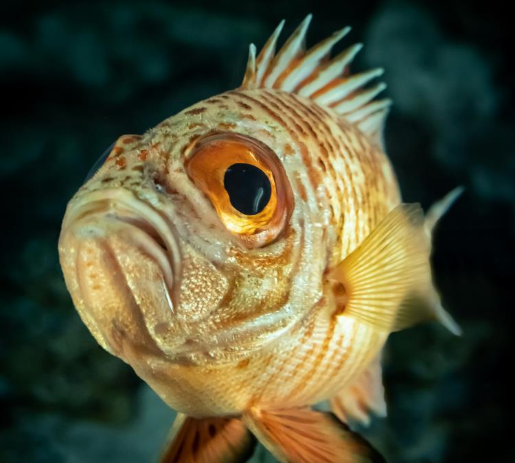
Since early childhood, young Prince Bollung had realized that by agreeing, never arguing with anyone, forgiving everyone and forgetting everything, by simply closing his eyes to any trouble and not interfering in any activity, he could live quite happily, effortlessly, and in complete pleasure. It's hard to believe, but this homespun formula bore him golden fruit, the Light Ocean indeed flourished, prospered, and bloomed, freed from authoritative pressure and state malice. Although the Great King himself was totally unaware of this. He did not go into details.
“Show her to me!” demanded Bollung, barely entering the room, impatiently looking around and not noticing his bowing courtiers. “Where is this Keeper?”
“I am the Keeper!” said Rina loudly and swam forward.
The octopus ballooned his white porcelain-plate eyes, waiting for her to approach, then abruptly stretched out his snout, and suspiciously looked over Rina's shoulder, as if someone could be hiding there. After that, he extended his thinnest tentacle and cautiously touched the tip of Rina's left sneaker. Apparently, this inspection of the foreigner satisfied him, because in the end he said something like “uff-foo-foo” and smiled crookedly. Rina also smiled in return and bowed politely enough.
“And so, are there many of them in your yellow waters?” asked Bollung without preamble.
“Many of what? The pearls?” she clarified.
Bollung turned around in confusion, seeking support from his advisors, but they, unfortunately, were delayed for some reason. Then Rina answered her own question, that is, she lied – out of her innate stubbornness and teenage disobedience, perhaps.
“Yes, very many, Your Majesty. Three thousand three hundred pieces!”
“Three thousand?!” echoed the courtiers.
“Eeee...” the King drawled, “Then why did you give me only one piece? Are you stingy with gifts for the King, huh?”
“I'm not stingy, Your Majesty!” Rina bowed again. “To tell the truth, this pearl is the best of all three thousand!”
“And what makes it so best?”
“The stripes”.
“But aren't the other pearls striped?” the octopus didn't quite catch it.
“Yes, they are also striped”, Rina fantasized passionately and wholeheartedly, “But all the other pearls have equal numbers of blue and pink lines, as they should, and this is the only pearl in all the oceans that has more pink stripes than blue ones”.
Bollung held the Pearl with two tentacles and twirled it in front of his bulbous eyes. Suddenly, he howled like a steam engine:
“BRABAON! Where's Brabaon?!”
From the crowd of courtiers, a little orange crab shot out as if on rubber bands and jumped up to the King.
“Brabaon! Count the stripes!” the King commanded loudly.
The petite ten-legged bookkeeper grabbed the pearl with trembling claws and began diligently tapping it with his left antenna. Half a minute later, he squealed in his ecstatic-sonorous style.
“Exactly! Thirty! Seventy!” he announced this news to the entire hall.
“More pink ones than blue ones?” the King asked sharply.
“More! Many more! Very!” yelled the mini squealer joyfully, clearly ready to scream absolutely anything if it meant pleasing his King or any other superior.
Bollung stretched into a contented grin.
“Well then. And what do you want for it, the Keeper?” he asked, plucking the pearl from the crab's claws.
“I'm looking for an entrance to the Fourth World, and I need Your Majesty's counsel”, Rina replied in a calm, steady tone.
“Counsel?” the King asked in disbelief. “Counsel?! Well, all right, counsel, sure. But what else? Something more substantial?”
“Nothing more, just your counsel”, she answered honestly – and a little sadly.
“Nothing? More?” Bollung repeated. “She asks for nothing more! Just counsel!”
“He-he-he”, giggled someone in the crowd in a thin, unnatural voice.
“Guh-guh-guh!” chortled Bollung gleefully.
“Ha-ha-ha-ha-ha!” echoed a large gray fish to his left.
“Fun! Nee!” ordered the King.
In an instant, the courtiers burst into violent, unrestrained, madly loud laughter. Fish, crabs, octopuses, snakes – everyone spun and twirled, tangling in each other, writhing and shrieking with much gaiety. And at the very center of the witless mess, booming like a bass drum and bouncing on the marble floor, danced their large, round King, thoroughly magnificent – in every sense of the word.
Rina didn't laugh. She watched them, gloomily, waiting for the hilarity to run its course. All of a sudden, Bollung stumbled mid-bounce and asked, dead serious now, as if he hadn't just been laughing at all:
“And why do you need the Fourth World?”
The entire palace fell silent in a heartbeat, swallowing their leftover chuckles in a single gulp. Rina looked straight at the octopus, no jokes, and said with firm confidence the very first thing that popped into her head:
“I'm going to my grandmother's”.
“What grandmother?” the King blinked.
“My grandmother. She lives right in the realm of the Fourth World. I'm going to visit her because it's my summer break, and it's her birthday this month”.
Bollung furrowed his brows and began to think very hard. Then he turned (his advisors had finally swum over) and asked:
“Do we have a grandmother?”
“We do! We do! We've got everything!” shrilled the Chief Advisor – who, to be fair, had been nothing but an ordinary shrimp since childhood. The King relaxed.
“Fine”, he said, patting his belly like he'd just devoured one of his courtiers. “So, according to you, you're going to visit your grandmother. Because it's her birthday. But if that's true”, he paused, thinking, “If it's true, then what are you bringing her as a gift?”
Rina got into character. She nearly said she had a basket of pies, but quickly thought better of it. The King might take her Red Riding Hood story literally and demand a pie sample – and then what? In half a second, she came up with some glorious nonsense and delivered it with flawless certainty.
“I'm not bringing my grandmother anything, Your Majesty, because gifts for grandmothers are strictly forbidden by the Second Blue-Green Law, and you, Your Excellency, you know that perfectly well”.
The King was caught off guard for a moment, then quickly turned to the advisors again, who were eagerly nodding their empty heads like roly-poly toys.
“Anyone who enters the Fourth World”, Rina continued improvising, “must prove they're not hiding any gifts. To do that, they have to do three somersaults, shout the magic word ‘hara-bara-tambara', and turn out all their pockets”.
“Pockets?” Bollung was surprised.
“Yes! Exactly! Like this!” Rina reached into the largest pocket on her sundress and, with a swift flick, turned it inside out.
The King stared blankly at the thick denim seams, then with his tentacle suddenly grabbed the spot on his face where a human nose would be, gave it a sharp twist as if it was a faucet, and shrieked like a cat:
“Vyaow!!!” he yowled. “How do you do that?! It hurts!”
“Well, I just have to, no choice”, Rina sighed, struggling not to laugh. “Nobody should argue with the laws”.
“Terrible, terrible laws!” Bollung grumbled amid a wave of disapproving murmurs from the staff and courtiers, all sincerely outraged by the unfair customs of the Fourth World. “Then why did your grandmother settle in such a dreadful place?” the King asked, puzzled.
“I haven't the faintest clue”, Rina replied with difficulty, clamping her hand over her mouth to keep from exploding with laughter. She suddenly pictured her Grandma Fima, flipping pockets and somersaulting in the air.
This time, Bollung fell into deep thought again. Rina could feel the heat radiating from his enormous round head – the strain of supreme royal reasoning. At last, after much deliberation and whispering with his advisors, he declared:
“We have decided!” He winked. “Decided to help you reach your grandmother. And since today is... um...” he glanced at the retinue inquiringly. The advisors hissed a long, twisted phrase. The King didn't catch it, waved a tentacle at them crossly, and carried on, “Because today... is today!” Tentative applause fluttered through the court at the brilliance of this new royal revelation. “And so, you – the Keeper...” he looked again at the advisors, who all whispered “brook, brook” in unison. “Brook?” the King repeated, baffled. “You must... um... and that's that!” he proclaimed loudly – then fell silent.
Rina tried to extract some meaning from this royal decree, when suddenly, as if from nowhere, an orange jellyfish appeared and, in a sugary-sweet melodic voice, announced:
“His Majesty, Great and Invincible King of All Oceans...” Rina blinked – “All oceans? What about King Bellung then?” But of course, she said nothing aloud. “His Majesty”, continued the jellyfish, practically singing the phrases opera-like, “King of All Oceans, in His infinite mercy and immeasurable generosity, grants permission to our dear guest, the honored Keeper of the Brook, to proceed to the Fourth World toward her most respected grandmother”.
“Yes!” the King confirmed. “To proceed! I grant it!”
Having received the royal support, the jellyfish – clearly he was the Chief Doormaster – sang even more drawlingly.
“His Majesty, King of All Oceans, Seas, and Currents, bestows upon our honored guest a Special Ceremonial Mother-of-Pearl Carriage and a pair of riding pikes, complete and together with the coachman!”
“Me?! I?! Bestow?!” Bollung exclaimed, astonished – but the advisors hissed at him so sharply, so insistently and in such perfect sync that he just batted his lashes and looked around, boundlessly dazed.
“Thank you very much, Your Majesty!” Rina said with a long, dutiful reverential bow. And at the same time, she thought, “Great, I wonder how many other Majesties and Highnesses I'll have to meet in these worlds before the end of my journey?”
Despite the King's extreme displeasure – his total inability to grasp why and by what twist of fate he was giving something away, let alone one of his favorite carriages – there was nothing to be done. The machinery of royal gifting had been set in motion. Immediately a formation of heralds swam into the hall – a dozen long-snouted blue fish started blasting their lip-trumpets in celebration of the supreme generosity and wisdom of the most luminous and the most magnificent. And right behind them came a troop of blue crayfish, led by an officious Lobster-Watchmaster.
From the lobster's long-winded and hopelessly entangled speech, Rina was able to gather just one thing: the blue crayfish served as coachmen and handled the carriages. The rest might as well have been in Martian – it was impossible to decipher no matter the bribe. And then, at last, the carriage itself appeared.
As Rina had expected, it was a shell – huge, flat and long, polished to a chromium gleam. But unlike the Duchess's ten-gallon enamel basin, Bollung's shell was much larger and had no ornamentation whatsoever, unless they counted the royal monogram on the front and odd red ribbons dangling from the back.
The carriage was harnessed to two enormous black pike-fish, each the size of a half-ton crocodile. One of the pikes yawned, slightly parting its mouth, revealing, to Rina's horror, a row of glittering dagger-shaped teeth – razor-sharp and monstrous, like combat paratrooper knives, shining with a silvery gloss. But the pikes were well-bred and perfectly trained. They obeyed the slightest command of their crayfish driver, who suddenly whistled with a trill, made a sharp turn, and brought the carriage to a fancy stop right before the still-sulking King.
“There... that's for you...” the King muttered with a sour face.
Rina bowed again, and not wasting a second, stepped into the shell. She sat down there, grabbed the sides with both hands, and just kept sitting quietly and smiling.
Of course, she knew and felt it. She was breaking etiquette – obviously, at the very least she ought to deliver some kind of a thank-you speech or something of the sort, but she was so entirely fed up with palaces, oceans, and all their inhabitants that she resolved to finalize the ceremony, wrapping all this up as quickly as possible.
Luckily, the coachman wasn't overly devoted to protocols either. Once he saw that his passenger was securely settled, he let out a melodic whistle and raised both claws. The pikes took the signal and lunged forward so suddenly that Rina nearly flew out of the slick shell. The carriage lifted and shot across the hall.
“Fweeu! Fweeu!” the driver whistled.
“Vrrr! Vrrr! Vrrr!” buzzed the perturbed courtiers.
But it was too late – the carriage made a wide loop under the ceiling, soaring above the retinue's heads like a big snow-white bird. Rina managed to spot only the King, thanks to his hippopotamus size. And she also caught a crimson flash of the red jellyfish Bousing. She smiled and waved at him. Whether he noticed it or not, she had no idea. Besides, it didn't matter any longer.
The carriage flew on, burst into a wide corridor, banked through the courtyard, and veered sharply upward. Rina saw a round hole in the vaulted ceiling rushing toward her. Within seconds, the shell zipped into it, miraculously avoiding the sharp edges, and rocketed up toward the seabed surface. Rina pressed herself against the cold mother-of-pearl, trying to dig her aching fingers into the shell's sides.
Of course, she was scared – like any other girl would be – they could smash to pieces against the rocky ledges flashing past with savage speed. But still, oddly enough, she trusted the old crayfish's driving skills, and soon she calmed down, more or less.
“It's all right. No real danger”, she was reassuring herself, “but where are we flying? Does this fellow even know the way toward the entrance to the Fourth World?”
Naturally, the blue coachman knew nothing about the destination, nor of the purpose of the trip. He was simply caught up in the ride, waving his claws and whistling like mad – so wildly, in fact, that the poor, dutiful pikes were completely losing their minds, hauling the carriage forward with every last ounce of their pikepower.
On the other hand, like all service crayfish, he possessed the ability to sense his master's slightest whims. He was used to not thinking, not reasoning. He had spent his whole life carting nobles around, always assuming that the high-born passenger surely knew very well where they were going, and where they weren't.
At last, the terrifying tunnel ended, and the carriage broke free into the open space above a pink sandy valley. The driver leveled out the trajectory, and the tired pikes began to slow their pace. Rina finally allowed herself to breathe easier.
“Excuse me”, she said, the crayfish was momentarily stunned, but soon regained his composure and cautiously turned around to look at the passenger, though never daring to say a word. “Excuse me”, Rina repeated, looking at the driver's face. “Would you happen to know”, she tried to construct her question as carefully as she could, “where the entrance to the Fourth World is around here?”
Probably, if she had asked whether there was a hardware store to exchange one American dollar for a sack of diamonds, the crayfish wouldn't have been so shocked. The very mention of the Fourth World literally paralyzed him. He had raised his left claw halfway – and stayed frozen in that pose. The pikes, interpreting the claw as a signal, obediently turned left, tracing a perfect arc. Rina even started to worry about the driver's health. But a minute later, he began moving again. Nervously twitching his exceptionally long mustachios, he asked uncertainly:
“Madam... desires?”
“Madam desires to go to the Fourth World right away!” Rina stated, firmly and without hesitation.
The poor crayfish shriveled a little in place, but at least he didn't freeze this time. He simply gave a loud click with all six of his jawbones. Then he raised both claws high above his head, the pikes jerked their black snouts upward, and, picking up speed with every beat of their tails, they launched the carriage up nearly vertically.
After some time, the shell had climbed to such a staggering oceanic altitude that all around, in every possible direction, there was only thick, invincible darkness. Not a trace remained of the rosy fields of the Light Kingdom. Rina didn't disturb the coachman. She kept her eyes forward, trying to recall Herx's words, and wondered:
“How could I forget a thing like that? What an idiot, what a total lalabot I am!” she scolded herself. “What comes after the Ocean? Ice? Butterflies? Or was it Clouds?”
Sure, she could try asking the Crayfish, but he looked so tense, so on edge, that a question like that might send him spiraling right into a full-blown coma. Which, in this risky situation, would be both dangerous and too unreasonable.
“Though it'll be even funnier if he drops me off straight into the snowfield. And I'm soaked! In the frost! I'll turn into the prettiest little icicle ever!” Rina thought, smiling grimly and already shivering from the imagined chill.
Meanwhile, the carriage kept climbing.
But everything ends eventually. Before even half an hour had passed in this extraordinary ascent, something finally appeared overhead: far above in the heights, a faint, slightly oval-shaped glow, colored grassy green.
Rina peered so intently, narrowing her eyes until they ached, but all she could make out was a blurry, formless smudge – something that could mean anything. The impassive coachman paid no attention to the mysterious light. He sat motionless at the very top of the shell, looking like a carved figurehead on an ancient Roman ship. But the pikes had noticed the green clearly. They grew restless, fidgety, and began to reach their maximum speed.
WORLD FOUR – AIR
19 – AHAA
part one
The glow above grew stronger, and five minutes later Rina realized what it was: dozens, no, hundreds of parallel light-green bands. Waves! The surface of the Ocean!
Her chest tightened at the thought that she might finally see the sun, the sky, the clouds. These dark, cold depths suddenly felt lifeless, foreign, unbearable. She yearned for warmth and air, her soul ached for real sounds, not imagined ones, and for true smells, not water-muted ones.
Of course, Rina worried about how breathing would work. What if she ended up like a fish flung onto the shore? But her experience in the previous two worlds told her that the transition from water to air would be – well, magical, or, as people say nowadays, technological – and the problem would sort itself out...
Another three minutes passed, and the scene transformed dramatically. Bright greenish light flooded the space around her. The vibrant, shimmering waves gleamed like living mirrors, twisting and curling, sending hundreds of sharp, slender rays plunging into the deep. Rina felt on the verge of bursting into song.
But.
Just twenty meters short of the radiant swells, the pikes stopped moving. Without the slightest pause, the heavy shell began to sink slowly, drifting downward. Rina had to swim out of it.
The Crayfish remained perched at the rim of the carriage, as if glued there. He glanced at Rina and muttered in a guilty tone:
“Madam's order has been fulfilled”.
“Yes”, she replied. “It has, we've arrived”. Then she tried to clarify. “So... is this the end of your World?”
The Crayfish didn't reply. He probably wasn't allowed to talk like this with nobles. Or maybe he simply didn't know the answer. Rina waved to him:
“Right, cool. Bye then, I am gonna head out. Farewell, time for me to go”.
And she swam upward. After a few meters, she looked back – the shell-carriage was vanishing into the dark without a sound. The pikes didn't move their fins. They stared up at Rina, snouts tilted high, watching her intently.
Once again, she was alone. But this was a very different kind of solitude – eager, exultant, soaked in sunlight, and with the waves murmuring above. Yes, the waves are close now, unbelievably close! Twelve strokes away.
The surface was right there. One stroke, another, and another, another, again, again, again, and again! The watery mirror was rushing to meet her. Rina lunged forward with everything she had, and her outstretched arm pierced the thin membrane – the shimmering emerald boundary between water and air. And then...
... a mega explosion rang out.
The word ‘explosion' wasn't enough – everything exploded, absolutely everything! The water, the sky, the sun, the entire world. In a cosmic catastrophe, an insane, apocalyptic blast hurled billions of tons of green water into the sky, tore Heaven to ribbons, turned the sun black, and shook the planet to its core. Inside the towering column of water, a blinding fireball flared.
The ocean boiled, roaring with thousands of giant fountains of raging foam shot from the depths. The surface heaved, mile-high waves surged furiously in all directions. Countless monstrous bolts of lightning rained from celestial heights through the deafening crash...
But Rina didn't see any of that hell. She only caught, in the very first moment, a vague crimson flash – and then... everything was over. Time stopped. Space disappeared. Darkness again. And silence. Along with an unpleasant sensation of her body's absence. Yet she was not scared. No frustration, no despair. In fact... were there even thoughts? No. Those had vanished too. All that remained of her was “It” – the thing that had always lived deep inside her, at the very foundation of her being.
Rina's ‘It' was calm, cold, and wise. Unfazed by past events, untouched by future troubles. ‘It' knew no sorrow, nor weariness, no joy or thrill, no love or hatred.
The apathetic ‘It' was weak. The ‘It' could not resist her emotions beginning to seep out through the armor of icy indifference. Rina did not remember the rules of emotions, but she could listen to them.
“Is it me?” asked the nearest emotion.
“Yes, it's you”, confirmed a distant one, barely audible.
“Am I... dead?” the first emotion asked with a sigh.
“No, you are not”, the distant one replied positively. “You're alive”.
“Then where am I?”
“Above”.
“Yes, you're all up above”, echoed the ‘It', with its flat, empty voice.
And silence again...
Someone's warm, tender hand softly brushed her cheek. Rina opened her eyes. There, high above her, a deep sky stretched in serenity, rich with a violet hue, lovingly adorned with massive snow clouds that looked like castles from a dream. She sat up and looked around. No Body. And No Thing.
She was sitting on the surface of a cloud, on the endlessly flowing currents of dense steam. She reached out and touched the mist, it felt elastic, like a very thin foil – the steam behaved like a layer of tightly stretched white silk threads.
Gathering her thoughts with great effort, shaping them into the simplest meanings, she told herself not to jump to conclusions yet. She tried to push back against the onslaught of questions pounding inside her mind, she decided – absurd as it sounded – to “explore the cloud” first. So she stood up and walked.
Rina walked just like she would on Earth, with her legs – no swimming, no flying, no floating. However, she wasn't putting the slightest effort into her steps. It felt like she just wanted to go, and her legs, obeying her quiet command, moved on their own, as if detached from her will. It was less like walking and more like steering her body from somewhere deep inside.
The cloud was changing constantly. Here and there, rounded mounds of steam would rise, stack up on one another, swell and jostle like living things, only to pop with a hiss some moments later, shooting up little geysers of pale mist that quickly sank and merged back into the foggy substance. The cloud quivered, slowly swaying from side to side, occasionally letting out deep, almost inaudible sounds like a distant bass. Rina could feel it breathing and heard the steady throb of a massive cloudy heart...
With each second, she felt more like herself. Her thoughts arranged themselves into neat patterns, memories clicked into place, and soon she was nearly back to being the Rina she'd known since her early childhood.
“But what had happened?” she asked aloud.
She wanted to hear her voice. It trembled slightly and the sound was weak, but still the voice was real. And only then did she remember the explosion. Somewhere at the very distant edge of her mind, she saw huge, terrible red flames – and felt, with her whole being, the searing pain. But remembering pain isn't easy. Painful memories are a kind of torment...
Rina stopped on a freshly formed bump of steam and studied her hands in detail – yes, the skin was paler than usual, but that would pass. Her palms were just... palms. Her fingers were fingers. She touched her face, neck, hair, shoulders. With a flicker of regret she remembered that she hadn't brought a mirror. She reached around to check her backpack, without taking it off – it seemed to be fine, too.
“The main thing is, I can breathe. Nothing hurts. Nothing is lost. Arms, legs, everything is here... I hope. Clothes are dry... So, I'm okay?” And she answered herself, “Yes, I'm okay. And I know where I am. In the World of Clouds”.
She wandered across the cloud for a long time, with no plan in her head, not even the slightest idea. What was she supposed to do now? Where to go? And how do you go, anyway? The cloud was big, sure – but still it was just a cloud. She felt tired and sat down on a plump tuft of mist, filled her lungs with the cleanest, coolest air ever, and let herself relax.
She sat there for a while, resting, entertaining herself by watching the playful dance of two little cloud-children nearby – sometimes they would approach each other, which would take a quarter of an hour, and then they would jump in opposite directions – another quarter of an hour...
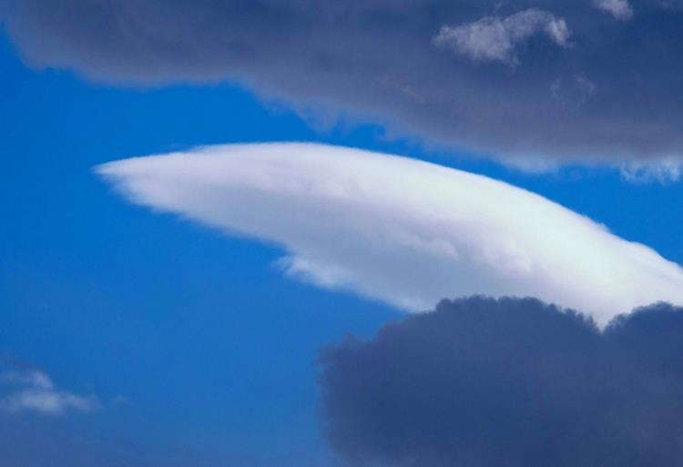
Suddenly, there was a rustle – like someone had crumpled a sheet of thin paper. Rina turned around in alarm and saw something unbelievable, a long, dark-gray cloud was floating toward her. It looked rather dense and heavy – almost solid, it even resembled an ancient zeppelin. But what truly stunned her deeply was that people were standing on it! She gasped, leaped to her feet, eyes wide with astonishment. The people saw her, too – and they were just as surprised and puzzled. Many began shouting, running around, calling out in a language she didn't understand. Some of them jumped down into the interiors of their ‘zeppelin'.
“Into the hold”, she thought.
The cloud was coming fast, but gradually it slowed, and eventually the cloud-zeppelin came to a full stop. Its underside hovered directly overhead – close enough that, if Rina really stretched, she could probably touch it with her fingers. But should she? And the bigger question, were these strangers dangerous or not? What exactly should she do in this weird situation – try to run away and hide, or just wait and see what happens?
She didn't have to wait long. Just ahead, in the lowest part of the cloud – right in the belly of the zeppelin – a large six-foot-wide hole opened up. Not a doorway or a hatch, but a hole, with uneven, rippling edges. Thick gray mist came pouring out of it, and as soon as it touched the firm surface of Rina's cloud, it quickly gathered into a solid structure that looked just like a staircase of an old aristocratic mansion.
Out of the hole stepped a girl – or rather, a very young woman – probably about sixteen. Tall, slender, graceful. She looked attractive: a lovely face, large blue eyes, and voluminous white hair tied back with a blue ribbon. She wore a long, pearly gown with a high slit and a gauzy veil that flowed from her shoulders to her shoes.
“Ai aa?” the girl asked softly, smiling.
“H-hello”, Rina replied, a little unsure.
“Oh! You speak Yulret!” the girl exclaimed in surprise. She darted down the staircase, landed on the cloud and walked toward Rina, her heels barely touching the swirling steam. “Hello! What's your name? Who are you? Where did you come from? You showed up so unexpectedly!”
“My name is Rina”, Rina said. “I'm the Keeper of the Yellow Brook”, she added, which made the girl raise her eyebrows. “I'm from the planet Earth, and I came here... well, I'm just visiting as a tourist. Right now heading for the Fifth World”.
“Fifth World?” The girl's thin eyebrows went even higher, arching in black crescents. But catching herself, she added, “And I am Ahaa, Princess of Air”.
“Pleased to meet you”, Rina said with a bow, thinking with a smile, “I was right – these worlds are full of royalty”.
“We're flying to the Second Palace, far to the North”, the princess said. “If you'd like, and if it doesn't interfere with your plans, you're welcome to join us”.
“Thank you very much, Your Majesty”, Rina said with another bow. (The princess whispered, ‘Your Highness'.) Rina had to bow again. “I'm flying to the World of Ice and Snow”, she continued. Yes, she said ‘I'm flying'. Because it didn't seem right to say ‘I'm heading' while standing on a cloud. “I don't know exactly where it is”, she added, “but usually ice and snow are found in the North”.
“Why?” Ahaa asked, slightly perplexed.
“Because it's always cold there”, Rina answered confidently.
“Cold? Oh no, not quite”, the princess objected. “The North is actually hot. If it weren't for the Upper Winds, I wouldn't last a single day in the Northern Islands”.
Rina thought for a moment and said:
“Then I guess I'm looking for a different North. But either way, I'm happy to fly with you. Thank you!” And she finished with the already familiar, “Your Highness”.
The princess nodded and, still smiling, gestured invitingly for Rina to enter the ship. Rina approached, carefully stepped onto the misty stairs – oddly firm and solid, like reinforced concrete – and boldly marched upward. Ahaa followed, her gaze curiously studying Rina's clothing.
19 – AHAA
part two
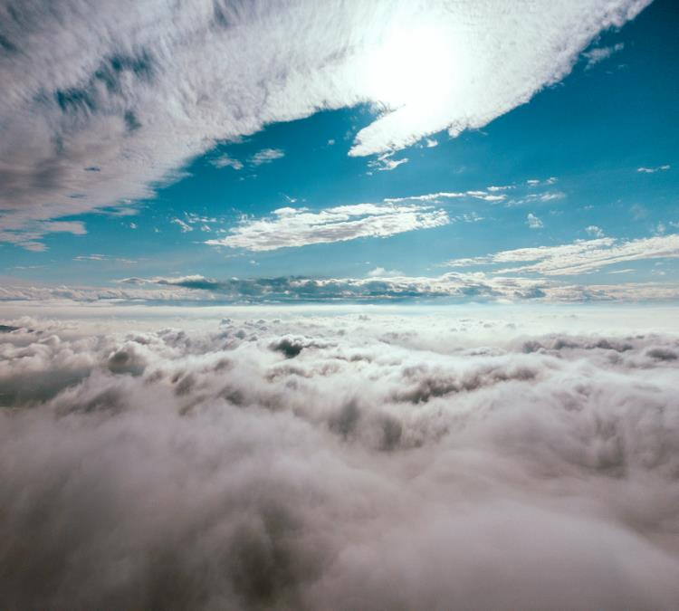
Inside, just beyond the entrance, servants and footmen stood in two neat rows. As Rina appeared, they all bowed their heads, eyes fixed on the floor. She walked past them and stopped in front of another staircase – narrow and very steep. The princess approached and said something that sounded like “ao ae au”. Instantly, the room lit up, and the staircase began to grow and stretch until, within seconds, it looked just like the grand stairs at the entrance.
Rina and the princess climbed side by side. The second floor opened into a spacious hall, though the low-hanging ceiling didn't exactly inspire confidence. Ahaa led her guest to the right-hand wall, touched a small protrusion there, and at that moment it sank inward, forming a dark little recess about the size of a fist. Then the princess simply stepped forward, walked through the wall, and vanished into an unusually dense gray steam.
Rina, deeply surprised by the trick, stopped in confusion. It was scary. The wall looked as if made of rock – firm and solid. What to do now? Of course, Rina decided to go too – she shut her eyes and took a step. All she felt was a brief rush of damp cold air on her face. She walked through.
When she opened her eyes, she found herself in a cozy, light-filled room with rounded corners and a vaulted ceiling. The walls were made of the same misty substance as the rest of the zeppelin. All the flat surfaces in the room were overlaid with a fine blue design that loosely depicted clouds and sunsets. Overhead, three strange orbs glowed brightly with a slightly bluish light – they slowly rotated and sparkled inside with electric discharges like microscopic thunderstorms.
“This is your cabin”, said the princess. “We live simply aboard the ship, nothing too fancy. I hope it's comfortable enough”.
“It's very nice – thank you”, Rina replied sincerely, but after looking around, she asked, “Where's the window?”
“Window? You mean the porthole? Here it is”.
Ahaa stepped over to the left wall and touched a white speck at the center of a spiral pattern. The dot glowed softly for a second, then began to grow until it turned into a perfectly round opening about three feet wide. Instead of glass, the porthole was made of a faint, nearly invisible haze. Rina walked up to it and saw heavy clouds far below and a flawless violet sky stretching into infinite space high above...
Not long ago, during spring break, she had flown with her father to Italy on one of his business trips. The plane behaved like any other, but for some reason, less than an hour in, it began to ascend – higher and higher, as if scaling a mountain – until it climbed above all the clouds, even the transparent ones. And that's when she saw the miracle, a dark violet sky. And on that smooth, matte violet – an enormous, sharply outlined sun, blazing with a pure, indescribably white light...
Rina asked:
“What altitude are we flying at?”
“Altitude?” the princess echoed with a baffled look. “We don't have altitudes here. We are in the air”.
Rina could not believe it. She leaned her forehead cautiously against the misty windowpane – cold and solid like regular glass – and peered down. As far as her eyes could reach, the space beneath the ship was endless, a bluish-gray void scattered with huge, slow-floating clouds suspended at every imaginable depth.
“There's no ground down there?” she asked, still trying to wrap her mind around it.
“Ground? What ground?” Ahaa tilted her head. “No. There's air. And clouds. Sometimes with rains”.
“But rains always fall to the ground”.
The princess laughed and shook her head.
“Not quite. Rains fall on lower clouds”, she said confidently, like a geography teacher straightening out a confused student.
Rina stared into the vastness below, trying to comprehend the sheer scale of it all – the world filled only with drifting clouds and open air. She tried. But she couldn't.
“We'll be arriving at Ayeon Island soon”, Ahaa said, clearly looking to steer the conversation elsewhere. “Actually, it's not really an island. Islands are hard. This is more of a motionless cloud. There's nothing much there, but people say it has the most fragrant air in the whole Province of Oai. The servants usually collect it for the rest of the journey. You can, too – for your cabin”.
After a pause, she added, “And we also play aaoo there. Do you play aaoo?”
“Me? No, I don't”, Rina replied.
“Oh, it's easy and fun! You'll love it”, the princess beamed. “I'll teach you”.
“Thank you”, Rina said with a bow.
Ahaa walked over to a little ledge in the wall.
“Make yourself comfortable. Rest. I'll send someone for you later. If you need anything, just touch this bell”. She pointed to a dark hemisphere fastened to the wall beside the window. “You'll have what you need right away”.
“Thank you, Your Highness”, Rina said, bowing again.
The princess lingered for a moment, as if expecting some traditional farewell or something in accordance with protocol. When nothing came, she gave a smile and walked out straight through the wall.
Rina was left alone.
“Well... looks fine... but where exactly am I? Yes, the World of Air – but which part of it?” she wondered. “And am I a guest here? Or a prisoner?” She turned around, scanning the room. “Okay, I did agree to fly with them to their North willingly, didn't I? It was my own decision”, she said loudly. “So, no – I'm not a prisoner at all. I'm just a new passenger. And this is a common passenger cabin. Basically... a guest room. Definitely not a jail cell. Jail in the clouds – a good title for a movie”. She chuckled at the idea.
Still, now that she looked at it closely, the apartment was a bit too small and too plain. At first glance, it could easily pass for a standard mid-range hotel room. That is, if you ignore the fantastical view outside the window, and the glowing orbs floating under the ceiling, and the walk-through walls, and the fact that the whole thing was made of mist, and that the concierge was an actual princess. Other than that – yep, a pretty standard budget hotel.
Rina wandered back to the window, took another look down – and suddenly, a funny theory popped into her head:
“If there's no ground, then there's nowhere to fall. You just keep falling and falling, and the sky never ends. So... I guess here in the World of Clouds, a true air crash is just a dream”.
At last, she took off her backpack and set it down on a flat ledge that looked just like a marble shelf. But as soon as she did, the shelf began to shrink until it turned into a perfect square – just big enough to hold the little backpack. Rina shrugged, picked up the bag by both straps, holding it in the air – and the smart shelf instantly grew back to its original size.
“Automation”, she muttered the silly word with a sneer.
There wasn't a single visible wire, or an electrical gadget, or a control panel in the room. Still, with self-adjusting shelves, with the walls you could walk through, and the staircases building themselves on command, Rina was pretty sure this wasn't magic either. That's just how the Fourth World works – the laws of another nature. You had to get used to them, and stop being surprised like a child.
In the far corner stood a thick, pale-bluish cabinet. Or wardrobe. Or locker. Hard to tell. It had no doors, no handles, no openings – none of the usual features that separate a normal closet from a big plywood box. Out of curiosity, Rina walked over and touched its smooth, icy surface.
“Fridge”, she said.
And immediately, she felt hungry. She remembered the last proper meal she had – back in the first prison, with Blasta. The vura-vura coral. And later some macaroni at Blasta's place. But that was so inconceivably long ago, and so many unimaginable events had happened since, she couldn't believe how long she'd gone without a real breakfast, lunch, or anything even remotely resembling meals.
Her stomach demanded food. Something edible. She tried to open the “fridge” the way Ahaa had opened the door to this cabin – with a simple touch of her palm. Rina pressed her hand against the “refrigerator”, tried it here, tried it there, felt all over the surface from top to bottom – nothing happened. The thing remained stubbornly shut.
Annoyed, she gave it a small punch. “Take that, automation!”
Then she remembered her emergency stash and rushed over to the shelf. In the backpack – her miracle fruit supply from Triazis, pears, three bananas, and some wild apples, all picked from the trees – that felt like a lifetime ago. And amazingly, they were fresh – the fruits were perfect and fragrant. Not even the saltwater of two oceans had spoiled them.
She couldn't find a sink, so she wiped the fruits off with her handkerchief and, with pure bliss, ate them all – pears, bananas, apples, every last one.
After that delicious feast, she felt a warm wave of sleepiness washing over her. She was calm and relaxed. Her eyelids grew heavier, her thoughts jumbled, and all her body wanted was to lie down for half an hour. Her legs and back were longing for something horizontal.
Rina looked around – but there was nothing even close to a bed. Not even a couch. “Then how do they sleep here, anyway?” A little while later, she noticed a thin slit running along the wall about half a meter above the floor. She walked over and carefully touched it. And jumped back, just in case.
Instantly, thick white steam began to billow from the entire length of the slot. Within a minute, it filled more than a third of the room, then it began to condense, pulling itself closer to the wall, thus compressing and gathering until it was reshaped into a wide, soft-looking shelf. And in fact, soft to the touch too.
There were no blankets or pillows – nothing – but one glance was enough to understand, this was really a bed. Rina sat hesitantly on the edge – no, it didn't sink or give way. The mist lay like a featherbed, yielding just enough.
“Okay... but what is the schedule here?” she asked loudly, half-mocking, addressing the glowing orbs overhead. “Is napping during the day allowed? Or strictly forbidden? What if the princess walks in and it turns into an international scandal?”
She gazed sadly at her wind-up watch – her father's gift, a perfect vintage Roamer – still frozen since that night in the Desert, beneath the Yellow Star. Hopefully, the watch survived both oceans. Rina didn't know that for sure, she didn't have enough courage to try winding it up. But even if the Roamer was still alive, what time was it actually on the ship? And was it possible to guess it from the sun's position? She went back to the window – the sun was low, off to the left.
“If noon's already passed”, she said aloud, still talking to the glowing orbs, “then maybe it's about three in the afternoon. But if it's still morning, then it is nine or nine-thirty... Though, who even knows? What if the sun in this world doesn't move at all?”
She went back to the bed. Finally, she kicked off her shoes and lay down.
A shy, soft mist gently covered her feet, tickled her neck tenderly – the bed, despite its plain, simple design, was comfy, cozy, and warm. Rina's eyes closed on their own. And without any kind of lead-up or preamble, sleep crept in quietly on tiptoe, slipped into her mind, and immediately washed away her fears and soothed her emotions, plans, and doubts – rounding their edges and quieting their restlessness.
But even in sleep, one stubborn thought never left her: Rina was waiting for Herx. She'd long since realized the wizard was honestly trying to keep his word – and more often than not, he was somewhere nearby. Of course, talking to him was possible only in the realms of dreams. Well, perhaps that was the only technology he could use in the distant worlds – the only thread that reached her there...
It was nice on the beach – at least, not as cold as before. Rina wandered aimlessly along the shore, but the sand was too loose, her sneakers kept sinking in. Soon, she settled onto the rough-cut edge of a thick tree stump, clearly washed ashore by some powerful storm. Sitting there was not very comfortable, though fortunately the stump was warm and dry. She sat and stared out at the sea, musing, slowly rambling through her memories.
But ocean weather is never stable for long. A wind picked up, bringing an unpleasant, early autumn chill. The recently clear blue sky quickly spoiled itself with fast-moving dark gray clouds. Even the white seagull bobbing close by on the steely waves seemed a little downcast. It floated on the water in silence, watching Rina intently without blinking, as if the bird wanted to ask something – but obstinately stayed quiet.
“Well, where is he?” Rina asked, growing impatient, arms wrapped around herself – too wintry in just a sundress.
Still no sign of Herx. Yes, of course – she remembered – he'd warned her. Said he'd be busy for some time, there were problems. Fine! Everyone has problems – that's life. And surely she could wait, she had been good at waiting since childhood. But anyway, couldn't he come for just five minutes? Three minutes, even?
She needed him badly, desperately. Things had changed a lot – she was in a whole new world with no actual idea of what to do next. Was she right to accept the invitation to fly with the princess? And how was she supposed to look for the clues leading to the Exit? She needed answers. And advice. And support. There were just too many doubts and not a single explanation in sight...
Rina was sitting like that, pondering and shivering on the bleak, unwelcoming shore throughout her long, dreary dream. The Seagull kept rocking on the waves, evidently waiting for Herx too, until something startled her. The bird flapped her wings and flew away. Left alone, Rina lingered on the beach for a while, trembling with cold, grumping and complaining quietly. And then decided to wake up..
20 – ALMOST 300 DIVIDED BY THREE
part one
She opened her eyes and saw orange stripes across the wall – sunlight was breaking through long, wind-torn gaps in the sprawling thundercloud hanging beside the ship. The zeppelin was quiet, the only sound was a soft, low hum – probably from the rigging or the inner mechanisms of the aircraft.
The floor, along with the bed, swayed gently. The air in the cabin was cool and crisp, like in a clearing in the forest just before dawn. But it wasn't cold – gracious waves of homey warmth, generously radiated by the glowing orbs, were spreading in all directions. Rina felt refreshed – rested, crystal-minded, and much stronger physically. She stretched, rubbed her eyes, looked around... and exclaimed happily:
“Yes! The sink grew!”
That's exactly how she said it – grew – because how else could she explain the sudden appearance of a beautiful porcelain-like basin with two shiny faucets?
She ran over and turned the chrome handles. Water poured from both taps – perfectly transparent and icy cold.
“Too bad there's no hot”, she muttered and began freshening up with relish.
It didn't take long to notice there was no soap, no towel – not to mention toothbrushes – but such trivial things couldn't spoil her good mood. She felt psyched (yes, psyched! That was the word!) to finally wash up with water that wasn't salty like the Ocean's, or flower-scented like in Triazis, but good old-fashioned real water. Spring water, she figured. Or more likely rainwater, she guessed. Which was even better.
Having made herself presentable and even cute, especially after combing her hair, Rina suddenly felt an irresistible desire to have hot, strong coffee with a bun. Her throat ached with how badly she wanted some.
Coffee! Give me coffee! And a croissant would be nice too. Or at least a bagel.
She glanced over at the “fridge” and said with mock offense:
“You're not a fridge – you're a bank safe!”
She laughed, then remembered the princess's suggestion about the little hemisphere on the wall.
She walked over, inspected the rounded nub from all sides, and without hesitation gave it a firm, vigorous, morning-strong press with her full palm.
What happened next felt like something out of a bad movie, or a silly cartoon.
Instantly, as if summoned from thin air, all kinds of people began to appear just a few steps away. Tall, short, stout, thin, young, old – all kinds. Rina stared at the sudden crowd, eyes wide. But she quickly realized they weren't guests – just footmen. Or servants. Or... whatever. She honestly didn't know the difference between a footman and a servant anyway.
In moments, half the room was filled with bowing people. The nearest one, bent at the waist, began to speak while folded in that awkward position. He asked the most classic footman question:
“What would the gracious lady desire?”
“Coffee!” Rina ordered without skipping a beat. “The lady would desire coffee. Please. With a bun, if possible!”
The bent-over footman straightened up so quickly that for half a second he was levitating in the air. Everyone else was petrified – round eyes, mouths shut.
“Oops. I probably said something wrong”, Rina thought, a little embarrassed.
But the footman simply said “at once” and nodded to a maid in a white lace apron. She immediately fell through the floor. Literally. As if a trapdoor had opened beneath her slingbacks.
The other footmen weren't fazed in the slightest and looked at Rina expectantly, ready for more orders.
And yes, she had another one – her second issue.
“Could someone tell me what time it is?”
“Time! Time? What time? Time what? What is?” the footmen echoed, glancing at each other with long faces and puzzled shrugs.
“Got it”, Rina sighed. “You don't use clocks here”.
Then a young, completely bald man in the front row beamed and said in a high-pitched, childlike voice:
“If the gracious lady permits, I could consult with Junior Scientific Advisor Mr. Ashea on her behalf. Mr. Ashea is a well-known philosopher. He wrote a book about the refraction of light in the raindrops under a half-covered sun”.
The other footmen let out a low, affirming hum, as if backing him up.
“What do I need your rain specialist for?” Rina thought but didn't say anything out loud. The bald one waited a moment, then tucked away his smile.
Suddenly, a bell rang. It sounded just like a school buzzer at recess – though much softer. All the servants folded in half, bowing at perfect right angles.
And then, just moments later, Ahaa flitted into the room – playful, mischievous like a little imp, full of energy, smiling, in a short, pale-blue dress, twirling something cube-shaped in her hand.
“Oh, hey! What's good? How are you? Did you sleep well? Did the light wake you? Bet you weren't cold, right?” she rattled off a stream of questions. “And these guys...” She gave a casual nod toward the staff. “...they weren't tripping, were they?”
Rina was a little caught off guard by the princess's shift in manners, and by the fact that she had suddenly switched to the casual street tone. No more formalities. Though what could Rina say? Ahaa was older and royalty, after all. Rina decided to let it slide.
“No one was bothering me, Your Highness”, she said politely.
“Good. Come on, let's head up to the Upper Deck. Everyone's gathering there”.
Just then, the maid in the lace apron shot up through the floor. She was holding a massive box – the kind you'd expect to find a mini-bar fridge packed in. She almost elbowed the princess without noticing her.
“What's that? What's that even for?” Ahaa scowled, eyeing the bowed servants.
“It's probably the coffee”, Rina said with a shrug.
“Kah-fee? What is kah-fee?” The princess spun toward the maid, agitated. “Where did you get it?”
The frightened woman dropped the box, went sheet-white, and began babbling something incomprehensible while bowing so deeply her chin nearly touched her shoes.
Then the bald, child-voiced footman stepped forward again, smoothly shifted his bow into a graceful arc, and declared:
“Your Highness, the Gracious Lady requested caaffi be delivered to her cabin. The order was carried out promptly and precisely”.
It took just a minute to get to the bottom of things – in the Second Ardartian language, the word “caaffi” means “something large to store other items inside”. The princess's servants – and those of the high court officials – were actually well-educated and typically spoke several languages, necessarily including both Ardarts and at least one of two Yulrets. The absurd misunderstanding with the box was cleared up in seconds. But actual coffee – let alone the bun – was never brought to Rina, and that was something to regret.
Ahaa made a quick hand gesture, dismissing the servants, then said, spreading her hands helplessly:
“There's nothing I can do with them. I try to train them the right way, but it's useless. Ever since my poor magnificent father left, everything in our unfortunate kingdom has unraveled. The people don't love their queen as they should, and they're not too eager to obey their princess either. You just saw that for yourself. And believe me, I have no idea what the right thing to do is in these situations. My Second Secretary, Auan, suggests setting up an ice cell to frighten the lazy ones. Meanwhile, my Senior Science Advisor, Aien, thinks the best punishment is to deprive them of sunlight and open air for a whole day”.
She paused for a moment (her eyes landing on Rina's backpack), and said, “Tell me, what do they do in your kingdom to raise proper subjects?”
Rina wrinkled her forehead. Indeed, what did they do back on Earth to raise loyal citizens? Lots of things!
“We have special people called police. They catch and punish hooligans”.
“I'm not interested in hooligans”, the princess replied quickly, inching nervously closer to the shelf.
“Then the rest, when they're still little, are raised by their parents”, Rina added.
“Ah!” The princess threw up her hands. “So it's the same in other kingdoms, too – no new ideas, and all the hard work dumped on luckless parents! How stupid and unfair it is! Do you really think parents can raise genuinely worthy citizens of a kingdom? Of course they can't! There's nothing to argue about”.
Rina had no intention of arguing.
Ahaa cautiously reached out and tapped the backpack with the tip of her pinky, then quickly pulled her hand back as if she'd touched a hot stove.
“All right, we must go!” she said briskly. “Better not provoke the court any further – they're moody enough already, and I've had too many problems with them”. She turned sharply and headed toward the wall. Rina followed.
As before, passing through the wall took barely a second and was completely effortless. In the next room, Rina saw that the entire left wall was now transparent, like a panoramic movie screen playing a never-ending film called Floating Clouds.
The princess picked up the pace. She walked right into the opposite wall without so much as glancing at it. Rina followed closely, but at the last second she instinctively squeezed her eyes shut, bracing for an impact that never came – the wall simply vanished and reappeared behind her, and a corridor opened up, ending in what looked like a wide marble staircase.
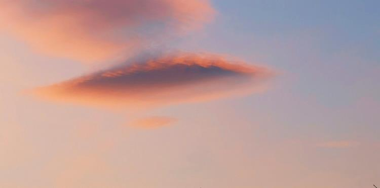
On the Upper Deck, in a bright, spacious salon filled with tall, black chairs, sat the top advisors, secretaries, and other members of the Lesser Court. Officially they were the princess's helpers, but their primary duties were to supervise the princess and spy on one another.
Once a week, each of them drafted a classified report and sent it by the special courier to one of the Queen's residences. But all the messages were intercepted, read, and many of them destroyed by the princess herself. Long ago, she had simply bribed the Chief Courier and his assistants.
Ahaa played a complicated, risky game at the Palace – often balancing on the edge of scandal with the court and full-on falling-out with her mother. But she was a strong, seasoned player – and almost never lost, at least in the important stuff...
The moment the courtiers spotted the princess through the glassy wall, they rose noisily, bowed their heads, and plastered on dull masks of respectful humility.
But a few steps before reaching the door, Ahaa spun around to Rina and said:
“Hey, I just thought of something. I've got to sit through a painfully wearisome debate about state matters. I think you'll be bored to the core. But I have a solution for you – go for a walk instead. It won't take long – I think we wrapped most of it up at the last meeting. Well, you have no idea how stubborn they are when they start arguing... I'll come find you later and introduce you to everyone”.
“Okay”, Rina nodded. “I'll take a walk”.
“That staircase over there, the blue one, it leads to the Second Open Deck. It's beautiful – the best deck on the whole ship. I go up there too when I need air, especially when these ones...” She rolled her eyes, clearly meaning the people in the salon. “These ones start getting on my nerves too much”.
Rina gave a small bow and headed toward the staircase.
Just as she reached the steps, she hesitated – pure curiosity. She just wanted to take a peek at the royal meeting. But there wasn't much to see, Ahaa was speaking, everyone else listened silently, then one courtier stood up – a very thin man with a sharp, fashionably trimmed beard – and spoke through a clever little smile. Then he bowed and solemnly sat back down. Ahaa gave him an approving nod and continued her speech, now with a new expression on her face – unnaturally smooth and doll-like...
The Open Deck, situated at the very front of the ship, really was beautiful – almost majestic. Towering cumulus cloud-mountains loomed just beside the ship, close enough to touch. Above them the impossibly clear crystal-violet sky stretched in all directions, trying to cover the entire universe – apparently firm, solid, and seemingly smiling.
All around, endless space, with nothing even remotely resembling a horizon. Far-off clouds overlapped each other and blended into a grayish haze. The sky didn't curve at the edges – there was no dome. It looked more like a perfectly flat, flawless ceiling.
The zeppelin cruised forward slowly – or so it seemed from this platform.
The deck was covered in an excellently polished layer of hardened mist, smooth as a mirror. On three sides, low white railings – just slightly above knee height – lined the edges. The fourth side was sealed off by a strange flat surface, no doors, no windows. In the far corner stood two small latticework benches, shaped and colored just like the ones you'd find in old European parks back on Earth.
Rina strolled back and forth – it was truly impressive, as if she was on an airplane stopped somehow in the sky and with the roof and walls completely removed. Then she sat for a while on one of the benches and finally decided it was time to head back to Princess Ahaa. Or at least to check whether the Very Important Government Discussion was over.
But then she heard a grinding metallic noise, glanced over – and gasped. Off the starboard side, about a hundred meters from the zeppelin, a tube-shaped cloud was gliding past. It was dark, nearly black-gray, and visibly heavy. In its very core was an oval opening, crackling and snapping with sharp electric flashes.
“It must be a shuttle”, Rina guessed.
There were no people on it nor any sign of civilization except the shape and discharges. The tube-cloud was outpacing the ship, moving, as they say, on autopilot. Suddenly, something inside it began to rumble, producing thumping and crashing sounds, and the shuttle gracefully flipped over belly-up, executing an elaborate maneuver. That's when she saw something written underneath in thin white letters – they looked like English or French. She tried to make it out. The second word read something like “barr...”
“Barr... Bar-ru...” she whispered. “Bar-ri... Bar-ri-er?” Rina cried out with sudden delight. “Barrier! It says ‘Barrier'!”
Squinting and cursing herself again for forgetting her father's binoculars, she tried to decipher the rest. But aside from “barrier”, there were just two legible words, the first one vaguely resembling “walls”. The cloud kept drifting farther away.
Totally caught up in trying to read the title and not watching her step, Rina walked the length of the deck, trailing the passing shuttle, eyes locked on its underside. Suddenly, she banged her knees against the low railing, slipped on the slick floor, and... tumbled overboard.
It happened so simply, so casually, as if she'd just planned it and sincerely wanted to fall. She didn't grab anything, she didn't hit anything, she didn't even scream. Her ship just flashed before her eyes and shot upward, fast and soundless. The wind began roaring in her ears, her hair whipping across her face. Like a wounded bird, she was falling, lips tightly sealed, arms stretched wide. She stared into the blue abyss below her with a kind of iron calmness, as if this had all been scheduled and planned, as if she had been waiting for the right moment. No fear of impending death, no panic at the growing speed – nothing disturbed her. Except just the wail of the hardening wind.
To an outside observer, it might even look funny. The classic old joke, someone goes out for a promenade, and... And that's it! Just the sky, the wind, and the blindingly white snow of clouds rushing toward her with the velocity of military jets. But the clouds didn't matter. What bothered her the most was the air itself, too icy, too hard, crushing her chest, scraping her cheeks, and freezing her fingers. At that moment, her first thought popped up – just as dumb as everything else around there:
“I left my backpack in the cabin...”
Rina closed her eyes and silently answered herself:
“No need for backpacks anymore... Won't be required any longer...”
And then, right after the sad words, snippets of dozens of different movies began flashing through her memory – scenes of people falling. Famous Hollywood actors were falling... from what? From everything – skyscrapers, rooftops, trees, cliffs, helicopters, planes, horses, spaceships, chairs, and even elephants – you name it! In every clip they screamed, flailed their limbs, shouted something with their eyes wide, full of despair and fear. But she didn't want to shout. Or despair. Or even think.
The fall with its inevitable tragic end didn't scare her. She was wrapped in a kind of stupor, a strange detachment from her own fate. Somehow, she felt it wasn't even her falling from this immeasurable height into the pit of hell. It was someone else. A stranger you didn't have to care about. She was sinking deep into the soul-numbness that philosophers call “the acceptance of destiny”.
And the fall went on. And on. Way too long. Rina had frozen to the core. Her hands were blue, her nose, cheeks, and ears totally numb. She curled up into the tightest ball and shivered uncontrollably. But nothing was changing – neither below, where gravity was mercilessly pulling her, nor above, where the useless sun blazed like mad. The white and grayish clouds filled the space with eerie consistency, rushing past in copy-paste uniformity.
20 – ALMOST 300 DIVIDED BY THREE
part two
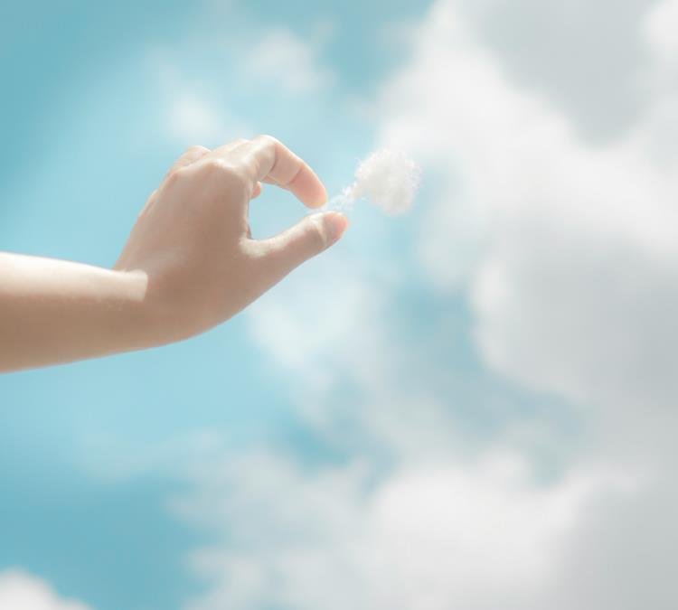
Again and again, Rina pierced through cloud after cloud, each time engulfed for a second in milky whiteness, damp air, and a train-station roar – then blasted out into the light and wind again. Several times she fell through rains, where hard pea-like droplets slapped her face cruelly like knotted whips. But the torture lasted only moments, vanishing as instantly as it began. Within seconds, her clothes were dry, the water evaporated without a trace.
Eventually, her indifference settled into something like Zen. An irrational sense of peace. But the excessive calmness gave way to logic – Rina began to think.
She noted that there was something wrong about this fall, something unnatural. And suddenly realized it. Every fall she'd ever seen in movies was about one thing: ground. That was the endgame – ground as the final mark of any fall. But there was no ground here, just clouds, just skies everywhere, half-shielded by steam mounds. And yet, the very fact that gravity existed must mean there was a huge mass somewhere below. At least, that's what they taught in school, and it made sense.
Her memory helpfully dragged out a pile of crumpled images and began arguing with her imagination – was there a ground? Any solid bottom at all? Or did this endlessly deep sky just turn back into ocean?
“Yeah, the ocean would be good”, she thought. “If I fall into water, I won't break”.
But her younger, more unruly thoughts – wild and ill-mannered – quickly sketched a giant island with a wide sandy beach dotted with scattered rocks here and there. Just one second later, the imaginary island transformed itself into Earth, but not the real planet – a global map with continents, oceans, and atmosphere.
“Yes!!!” Rina yelled inside in unexpectedly high volume. “The atmosphere! I've been falling what – fifteen minutes? Or twenty. At what speed? Two hundred kilometers an hour? Or three hundred. That means... that means...”
And to her own surprise, she started math in her head. Like she'd gone four years back to do a third-grade revision test.
“Okay, twenty minutes – an hour divided by three. Speed's three hundred per hour, by three too. I've traveled one hundred kilometers. One hundred? That's insane! The atmosphere is never that thick!”
And just then – she sensed it. A faint slowing. As if she was riding a full-speed train down vertical rails and the conductor had started braking – he spotted the lights of an approaching station. Moment by moment, she could feel it more clearly – the clouds around her slowed significantly. The wind wasn't yanking at her hair as much. And best of all – miraculously – the air became warmer.
Suddenly, the whole world flipped upside down! That's exactly how it looked to Rina, first everything tilted sideways, and a second later the sky was below her. Now she was falling headfirst, straight toward the sun! The new flight felt rather smooth – much slower than before. The speed dropped gradually to the level of a bicycle race. And more importantly – she wasn't falling any longer. Quite the opposite – her descent to hell had morphed into a rise to the heavens.
“Totes! But what happens when I reach the very top? The last foot. Will I stop right there? Or fall again?”
Rina imagined herself trapped in this world forever, ascending and falling like the pendulum in her grandfather's clock. An endless up-and-down.
She shaded her eyes from the sun and kept drifting along, lost in distressing thoughts. And then she saw something new ahead – an unusually dark cloud of abnormal shape, as if it had been lathed on a giant celestial machine. The cloud looked dense, practically solid, and perfectly even. Rina was heading straight toward that ominous monolith. The collision seemed inevitable, and it could be catastrophic. Rina tensed to the limit, pulled her head into her shoulders, and braced herself as best she could, preparing for a terrible impact.
But twenty paces from the hulking monster, the fall unexpectedly stopped. Effortlessly and lightly – like a feather on a breeze – Rina landed on the very edge of the cloud.
The strange mass wasn't as stone-like as she had feared – it felt more similar to dense, wet cotton, soft and yielding. Her fingers plunged through the doughy substance without a hitch. Still shocked, Rina didn't dare to stand upright. Instead, she got on all fours, watching her palms sink some inches deep. Her knees also went into the thick mist, but even so – after that nightmarish flight into the netherworld – this cloud felt somewhat reliable, something she could hold on to, at least temporarily.
“Fine!” she said aloud, trying to sound upbeat, suppressing her emotions. “At any rate, I won't be falling up and down anymore. But now what?”
At that moment someone called her:
“You're still here?”
Rina glanced back – and nearly tumbled off again. A cute blond head was peeking out of a large opening she hadn't noticed before. It was the princess.
“I'm here”, Rina answered automatically, not quite trusting her eyes.
“Excellent! I was delayed a bit”, said the princess, climbing the stairs, “but our council meeting, as they call it, is just wrapping up. As promised, I'd like to introduce you to my inner circle. Come!”
Rina sat down on the floor, straining all her mental reserves to comprehend this impossible situation.
“This can't be happening. This can't be happening”, her mind repeated over and over again. But it was happening, it was real.
She gathered her strength and chose to go along with what had occurred.
“Okay. I'll think it all through later”, she told herself and smiled at the princess.
“Are you feeling okay?” Ahaa asked, approaching with a mixture of concern and disbelief in her eyes. “Why are you on the marble? Are your legs hurt?”
“No, not hurt, thank you. I just... for some reason, I can't walk”.
She tried to stand up but instantly sank ankle-deep into the cloud's surface. It was soft like a plowed field in March. The princess opened her mouth and watched the miracle in great surprise. She herself was standing perfectly well on the smooth, polished tiles, her pearly slippers barely brushing the deck.
“I don't understand...”
“Me neither”, Rina admitted.
Stumbling terribly and plunging her feet into the fog, she somehow made it to the stairs. She looked back – the holes her sneakers left in the glossy slabs quickly closed up, vanishing in a few seconds without a trace.
“What's happened to the deck?” the princess murmured, still not grasping the changes that had unfolded in her guest.
With much difficulty and the princess's help, Rina reached the salon where the high courtiers were gathered. From there, things went more or less as planned – Ahaa introduced Rina to each noble, and each noble was introduced to Rina.
The courtiers smiled their movie-perfect smiles, the kind they learned in early childhood, bowed with precise angles, offered their hands, barely touching Rina's fingers. But they could not help it – every one of them cast suspicious glances at her sneakers, which were now embedded in the cloudy floor four inches deep.
Ahaa did her best to smooth things over, casually hinting at the peculiarities of foreign footwear. The courtiers didn't believe a single word of it, but nodded politely anyway.
At last, without saying boo or hearing much of anything, Rina made her awfully heavy way to the exit. Everyone understood that the princess had to cut the ceremony as short as possible and was now escorting the invitee back to her cabin.
While they were in the hall, another nuisance occurred. The princess had to say something to one of her secretaries, so she stopped halfway, leaving Rina a little ahead. Just four feet from the exit, Rina turned to glance at Ahaa, took a step, and tripped over a ledge on the floor, crashing headfirst, arms extended, straight into the wall. She punched right through it. As it turned out, there wasn't any hidden door there. Rina had pierced through a wall that was totally impassable to Air People.
“Something's happening to you”, Ahaa said anxiously as they reached the room.
“Yeah, something is happening... I just don't know what”, Rina replied.
“But I do”, the princess said firmly. “You're becoming heavier. And denser”. She paused. “Tell me, there in your world – were you heavy?”
“Heavy? Me?” Rina repeated amazedly. “Not really. Last winter at my checkup, I only weighed thirty-nine kilograms. In boots and underwear”.
“What's that kil er gramz?”
“It's a unit of weight”, Rina answered the school way.
“But what about clouds?”
“Clouds?”
“Yes, clouds!” Ahaa peered into Rina's eyes. “How much does a normal cloud weigh where you're from?”
“Nobody weighs them, really. I don't know. Maybe three hundred or four hundred kilograms, if it's a big one”.
The princess looked up at the ceiling.
“So, you weigh about as much as a small cloud”, she mused. “If you keep getting heavier, you'll fall down through the ship”.
“No!” Rina exclaimed in horror. And thought, “No way! Anything but this!”
Fortunately, the increase in weight stopped quickly. In fact, her weight was even decreasing, although gradually. She was still sinking into the floor, but not as deeply as she had right after landing. However, even with those reassuring signs, walking around had become much harder. And besides, Rina couldn't touch anything properly. For instance, she could no longer use the water taps – they crumpled under her fingers like dough. The bed, now soft as warm butter, got punctured by the slightest touch and didn't bounce at all.
Even her backpack – never having fallen anywhere – had gained so much weight that it went through the shelf and crashed to the floor, continuing to plunge into the hardened mist. Rina had to spread all her belongings evenly across the room to make the backpack lighter.
But despite the hard-to-explain incident with the guest, “the flight proceeded in exact accordance with the ship's itinerary” – the best retro phrase to describe the weird situation. Before long, Rina grew used to her atypical new feature and hardly noticed it anymore – except, of course, for the extra effort she had to put into every step.
Princess Ahaa held a brief discussion about Rina's phenomenon with her closest people. The second advisor shared his theory on the matter, but it didn't sound scientific, so the talk rapidly drifted back to the far more depressing concerns – the heated debates surrounding a wildly controversial law proposed by the Legal Council with the intention of spiting the Parliament and thus seriously undermining the Court...
Only the servants and footmen didn't bother to hide their curiosity. They followed Rina's every move with rapt attention wherever she went. Some of them even started to panic, terrified that the earthling girl might accidentally crush the entire airship. But the senior footman threatened them with immediate dismissal, so the worries and agitation dissipated into thin air that same evening...
Rina liked to watch the clouds. She sat in the chair and looked through the porthole. (The chair was slowly melting under her weight, and the window was no longer glassy – it became sticky, warm, and easily breakable.)
Ahaa had stopped by recently to announce that the expected detour to the island of Ayeon had been canceled by the captain due to some sort of unfavorable winds – Rina didn't quite understand what that meant – but thanks to the corrected flight route, they'd be arriving at the preeminent island of Avaal a full day ahead of schedule. Interestingly enough, the air on Avaal was also said to be healing – and delicious. Ahaa had actually said that word, “delicious”.
“Avaal is real”, the princess explained. “It's not just an ancient cloud like Ayeon, nor an artificial steam assembly. Avaal is eternal and solid. Much harder than our ship. So you'll be able to walk around just fine. If you want to, of course. And besides, I have something unusual to show you there. And by all means we'll play aaoo, if we have time. But the walk – that's the main pleasure there”.
Rina thanked her, and Ahaa left.
“Ha, the walk”, Rina chuckled. “We will go for a walk on the island – the greatest pleasure, no cap”. She sighed. “Well, nothing else to do anyway”.
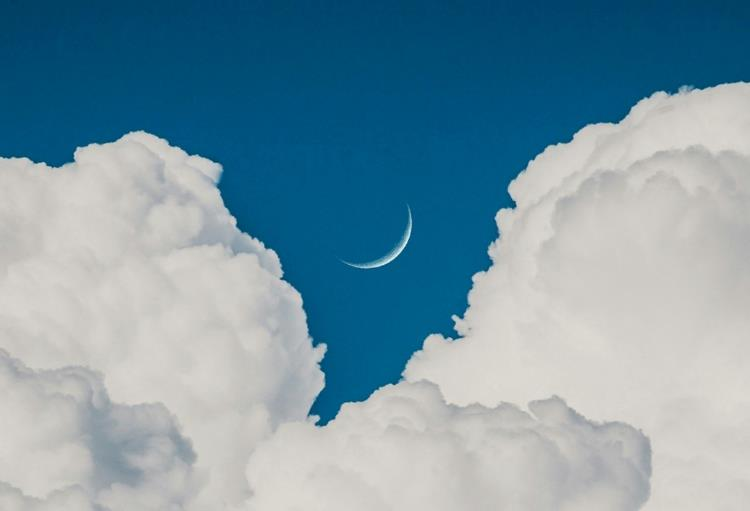
From the princess's second secretary, who popped in to brief her on the situation, she learned that the large island of Avaal was practically uninhabited, except for twelve settlers – now rather venerable graybeard old-timers – who had once tried to establish a major colony there. But for various political and geographical reasons, no one else had ever joined them.
The settlers lived not too far from the pier, and the secretary suggested visiting the village – as a kind of tourist curiosity. With a sad sigh, Rina vividly pictured a little cluster of feeble, weary old folks perched on a long, cloudy bench.
“Awesome. I'm a foreign tourist”, she thought with a bitter smile, “and the elders are the must-see point of interest of the Sky Kingdom. Disneyland! Wow, what an amazing vacation this is turning out to be!”
But she was wrong. Sky dwellers, even in their extreme age, are never weak or helpless. The fresh air, the youthfulness of the sun, the blueness of the sky, and the absence of bad habits – as well as the absolute impossibility of animal-based food – preserved both their bodies and spirits in clarity and strength. Right up until his last hour, an air elder remains full of energy and vigor. Plus wisdom – which is no small thing. Plus knowledge and experience – exactly what Rina would need to get from them for her trickily-knotted journey...
An hour and a half passed. Restless in her cabin, Rina decided to take a promenade through the airship, hoping to head down to the lower decks where the sailors and servants lived – not for any particular reason, just to amuse herself and maybe gather some new impressions. She was a tourist, after all. But very soon she grew tired of the sticky, clinging floors and returned to her room.
A few minutes later, a funny little pageboy in all-purple garb burst in through the back wall. He was wearing narrow-toed lilac slippers that looked oddly girly, and, with great seriousness, announced to Rina that the island of Avaal was now within sight. Indeed, the cloud-ship was making a leeward approach at a steady pace. But Rina still hadn't seen it, the island lay off the port side.
She sat by the window again, bored as she waited for the landing, completely unaware of the overwhelming, staggering, unimaginable discovery that awaited her just ahead.
21 – ISLAND OF AVAAL
part one
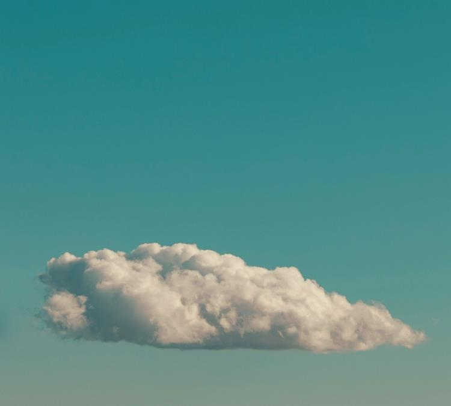
The ship turned its mooring side toward the island. Suddenly, Avaal was there in the porthole – out of the void, as if by magic. The zeppelin hovered about fifty meters above the pier and was now performing a complex maneuver against the wind, somehow guided by means unknown.
From this angle, at least, the island looked like a scoop of vanilla ice cream lightly dusted with crushed nuts. In the middle of the mound rose a sharp spire, shimmering with pure ice and bending slightly to the right, as if it had begun to melt. Rina stared intently but could find nothing to compare the size of this needle with – no rocks, no trees, certainly nothing man-made. Observing the mechanically precise movements of the airship, she realized it would be landing within minutes and decided to get ready to disembark.
What worried her most was the upcoming encounter with the island's natives. Rina didn't quite admit it to herself, but somewhere deep inside her soul, a vague concern began to grow.
A maid burst into the room. Rina flinched, still not used to the servants' annoying habit of showing up unannounced, popping out of nearly any wall, always on the run and whenever they pleased. The maid, a pretty girl of about fifteen with oddly pale-pink skin, wore a very short white dress with absurdly large, rustling bows on either side. She nodded and went to the “refrigerator”. Rina watched her intently.
“I need to prepare your cabin for air replacement”, said the young servant apologetically and breathed onto the “refrigerator” the way little kids do onto frozen fingers after a snowball fight.
The “refrigerator” opened – its front panel simply evaporated, and behind it was a mechanism of two dozen woven ice tubes. The maid reached deep into the contraption and flicked something, then stepped back and waited for the panel to reappear from nowhere. With a short nod, she turned and, her huge bows swishing, left the room through the same wall.
By that time, the ship had already descended, its belly nearly grazing the pier. Rina stood with her forehead pressed against the glass, carefully observing the bustle below. Immediately, the window began to melt. Workers on the dock were finishing the mooring operations. The platform looked like a long gray extension of the mountain and was scattered with large, angular fragments of something unidentifiable. Rina, for some reason, started piecing them together mentally and ended up with a cube.
Then the floor gave an unpleasant shudder, there was a metallic clang, and finally, the airship stopped, bumping its nose dully against a thick, translucent outcrop.
“Her Highness invites you”, a quiet yet insistent voice said.
Rina turned around but saw no one. Either the speaker had already vanished into the wall, or it was the ship's intercom. Not that it mattered – she had expected something like this and was fully ready. Slipping the tightly folded map into her pocket, she stepped out of the cabin.
The servants, unable to tear their eyes from her sneakers, helped her down to the lower perimeter and then onto the gangplank. Rina peered out from the entrance arch: snowy, gentle slopes, a peak soaring dizzyingly high, speckled with faint pink and blue patches.
Twenty steps from the staircase stood Ahaa, giving firm instructions to a deeply bowing footman in dark livery. Spotting Rina, the princess gave a short, cryptic wave and returned to her lecture. Rina waved back and once again couldn't help but notice the dramatic change in Ahaa's appearance and demeanor. This time, Her Highness was dressed unusually plainly, in something like casual loungewear – a light, straight-cut robe with no details or ornaments. Her hair was loose, the wind eagerly tangling it, forcing her to constantly fix her rebellious strands with both hands. As for her conduct, Rina marked an unusual sternness and authority in the princess's face and gestures.
She went down the staircase, pulling her sneakers out of the softened fog-concrete with each step, and carefully touched the surface of the pier with the tip of her shoe. The island proved to be quite solid as promised – slightly springy though, like a thick Persian rug rolled out over hardwood. She approached the princess.
“First, we'll go to the Royal Pavilion”, Ahaa said without preamble.
“Pavilion?”
“Yes. It's not far, just beyond the Blue Cliff”. She pointed to the left. “I want to surprise you with my everlasting statue”. She smiled. “There are lots of statues there, but mine is the happiest – you'll see”.
Without waiting for agreement and completely forgetting the humbly hunched footman, the princess strode off along a smooth, wide path. Rina barely managed to keep up. After a few minutes, they reached a flat, sheer vertical ridge about twenty meters tall. Without breaking stride or looking back, Ahaa walked straight into it, as if entering any ordinary door on the airship.
Rina didn't hesitate either, just closed her eyes for a second, and stepped in after the princess. The cliff, which looked like diamond-hard granite, offered no resistance. But unlike the thin walls of the ship, this one was deep – many meters thick.
She held her breath as if diving into water, just in case. When she opened her eyes, she found herself surrounded by an incredibly dense, cold, wet gray fog. She couldn't hold out and inhaled it – and instantly remembered Odesa and her great-aunt Anya. It was winter, early February, and the entire city had been blanketed in that exact kind of fog people say you can't see your own hand in. Little Rina had stood on the balcony, white, milky air flooding the world from ground to sky. Now, inside the cliff, it was the same, though the mist had a grayish-blue tint.
“Just walk straight ahead!” came Ahaa's muffled voice. “They cleared the way last year, no bumps or ledges. Don't worry, you won't trip – keep going forward”.
Thankfully, the foggy passage didn't last long. Half a minute later, the cliff ended, and sunlight struck her eyes. Ahaa looked around and, pointing her chin toward the peak, said with frustration:
“That mountain gets darker every season. I'm afraid in a hundred years it'll be completely black, and we'll have to move the Pavilion to the island of Agao”.
Rina looked at the dazzling slope and shrugged.
“If today it is considered darkened, then what did it look like before?”
The Royal Pavilion was just beyond the cliff, across a short yard – twenty paces wide. To be honest, despite the grand name, the Pavilion was simply a cave, hastily carved into the mountain's southern shoulder a few centuries ago, but dressed at the entrance with colored cloud-glass for aesthetic purposes.
In the middle of the yard, Ahaa dropped to her knees and covered her eyes with her hands. Rina was startled and stopped five steps away. But soon, the princess removed her palms and burst into laughter.
“He said... he said this is the third time... I've visited him this year. He'll reward me by putting three new freckles! On my nose!” she said, barely getting the words out through her giggles as she rose to her feet.
“Who will?”
“Him, Aaot!” The princess pointed to the left slope.
Rina looked and saw a large statue of an old man in a Roman-style tunic, standing on a distant ledge, hands on hips, smiling down into the valley.
“My great-grandfather”, the princess explained. “He always jokes when I come. And his jokes are... childish. But I don't mind. My father told me he was a cheerful prankster all his life, more interested in carving transparent taaoi from morning fog than in running the government. He never harmed anyone, never even spoke rudely, and helped many people who used to come to him for support. He saved and freed hundreds of prisoners falsely accused in the days of the Big Riot, you know – I'll tell you about that later – and he expelled the corrupt and cruel from every government office, and then improved half the laws in favor of the people.
“The subjects adored him. They built him the largest statue in the Kingdom... And now, I'll show you the eternal sculpture of my father, the Great Aatan. He was immeasurably wise and perceptive, though... people don't always understand their rulers”. Ahaa was about to add something, but thought better of it and silently stepped into the cave.
At first glance, the Pavilion looked like a big storeroom of a grand art museum, a basement filled with never-displayed exhibits. Statues crowded the hall, in every spot and of all sizes – from human scale to massive, distorted giants – standing in complete disarray. Some looked well-maintained and polished, while most were coated in a thick layer of porous, ancient mist. Two darkened sculptures had even toppled to the ground, one so awkwardly that the girls had to crawl over it. The princess was in a hurry and paid the inconvenience no attention whatsoever.
21 – ISLAND OF AVAAL
part two
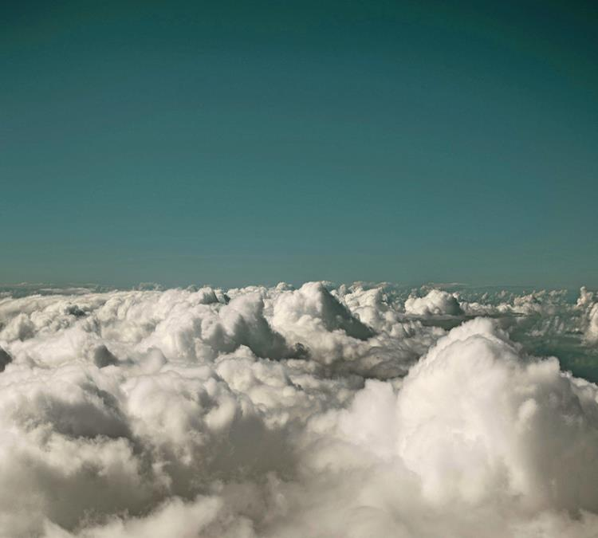
Soon they stopped before a two-meter-high statue of a young man resting his fingertips on a stone slab. The sculpture was crafted with astonishing skill – exquisite, precise, and inspiring. And if not for the pale, lifeless color of the marble, one might have mistaken it in the cave's dim light for a living person. Rina was struck by the artistic mastery of the sky people and was about to ask who had made it when Ahaa suddenly dropped to her knees again.
But she didn't cover her face this time. On the contrary, breathing heavily, eyes wide open, she stared up at the white figure, whispering fervently in an unfamiliar language. It went on for several minutes. Without rising, Ahaa reached out and lightly touched the pedestal with her fingernail.
Suddenly, the statue turned its head and looked straight at Rina. She screamed in terror and jumped backward. But Ahaa noticed nothing – she gazed pleadingly at the stone face, waiting. The statue began to speak. A deep, low baritone filled the vast hall, echoing expressively off the walls.
The statue said:
“...and all attempts to return our kingdom to the path of growing the height of the blue deep-layer clouds turned out to be a waste of time and energy. For many years, our ancestors pursued a fruitless and irrational goal, which has left us not only with a noticeable reduction in the actual area of the Lower Layers but also, inevitably under such a policy, with a slowdown in development of new bi-normal cloud technologies. This kind of inexcusable delay...”
The statue continued speaking – eloquently, convincingly – but Rina had no idea what it all was about. The stone face shifted expressions, becoming at times thoughtful, stern, then inviting, then mocking. It was alive! The stone lived with a programmed life, recorded in it. Ahaa had risen long ago, now she stood, unblinking, staring into the statue's eyes – and crying.
After a while, the marble speech came to an end. The sculpture turned its head, lowered its arms, and returned to its original pose.
The princess took out a handkerchief, dabbed at her tears, and said:
“I've heard it a thousand times, and I still bawl like a little kid. No one in the whole world ever had such a loving father. And I loved him. And Mama loved him too”.
Ahaa drew in a full breath and exhaled slowly.
“My poor father made too many enemies in his lifetime. Anyone doing great, honest work always has enemies. And if that work bears beautiful, flawless fruit, then everyone around becomes a jealous rival”.
She looked at other statues. They stood in silence, their lips pressed.
“Let's go on”, she said, snapping out of her thoughts. “Just past that ledge is the philosopher Aael. We won't activate him – I just want to stay near him for a while”.
Aael turned out to be a stooped, stocky old man with tightly shut eyelids. Rina asked why his eyes were closed. The princess answered, gently stroking the stone sage on the shoulder:
“Aael was a genius. He used to say the only truly reliable support is emptiness, and that even the mightiest cloud is no bigger than a child's palm. I didn't understand those strange words for a long time, but now I think I get it. He was my mother's teacher. When I turned five, I got my own tutor – a younger one – but Aael remained at the palace, and I often listened to his poetry. Yes, he wrote poems. He was considered a powerful master of rhyme – his verses were beautiful. Though I preferred his sayings. He never wrote them down, he just gave them freely to anyone who needed them.
“But one day he went silent and closed his eyes. The last thing he ever said was, ‘Let them not look at me, for I do not look at them'. You know, I think that was his best line. A few days earlier, he said, ‘Do not seek white patches on black clouds, for those who cannot dispel the darkness will find nothing'. Since then, I've tried to live that way – to dispel the darkness. And when I fail, I don't make excuses for myself”.
The princess fell silent. Rina studied the statue, rendered so vividly and skillfully it seemed the old man might raise his hand and touch you at any moment. The uncanny thought made her uneasy and cold.
“My eternal statue is over there!” Ahaa shouted. “By that wall!” And, quite excited, she dashed ahead. “But we won't activate it either. I say such silly things there, it's better not to hear it. When I get the Great Crown, I'll redo everything in here”.
The statue of the princess was astonishingly beautiful, marble Ahaa smiled, big eyes full of life and wide open, lips slightly parted as if she was just about to fire off a playful quip in response to a funny joke.
“Do you like it?” the princess asked.
“I love it! It looks alive!”
“Yes, alive”, Ahaa agreed, “but they made me too doll-like. Look how much taller I am!” She stood shoulder to shoulder with her stone self. “Am I taller?”
“Yes, a little”.
“That's why I'll redo her too – she has to be improved. But not right away, some other time. And I'll change the words”.
About ten minutes later, after wandering through the Royal Pavilion a bit more, Rina and Ahaa headed for the exit.
“On Earth, we put sculptures in parks and plazas, in open places with lots of people”, Rina said.
“That's not too wise”, Ahaa replied. “People might deface and damage a statue of someone they don't like. Or even smash it”.
“That's true. Sometimes they do”.
“See? But here in my Pavilion, the entire collection is perfectly safe”.
“But no one guards them”.
“Guard them?!” The princess was stunned. “Why guard something sealed inside a mountain? Only members of the royal family can pass through the Blue Wall. And their guests and friends, of course”.
A bit later, after passing back through the cliff and walking a quarter-mile along the snow-white path, they reached a small rise.
“The settlers live over there”. Ahaa pointed toward the base of the mountain.
Rina saw a row of round houses, the same thick milky-white color as everything else, looking very much like Inuit snow huts. The road sloped gently downward. Good weather – no wind, the sun was beaming, and the walking was easy. Her sneakers didn't sink at all into the cloud-firm surface.
As they talked, Rina and the princess gradually approached the first house. Unlike the Inuit cabins, it had no visible entrance – just a smooth white dome sitting on a polished marble surface. There was no indication of which side to approach, where to knock, or how the owner might emerge. But Ahaa made no move. She stood silently beside it, waiting.
Less than a minute later, the wall shimmered, darkened – and out stepped... Rina's mother. And right behind her – Aunt Vera, all in white.
Some impossible, supernatural force helped Rina stay on her feet and not collapse onto the stone floor. She didn't faint, didn't scream or run. Shocked and bewildered, she stared into the beloved faces, unable to even blink. It felt like her heart had stopped for a few seconds. Perhaps what really saved her was the constant expectation of miracles, and the unshakable awareness that this wasn't Earth – no, around her was an entirely different and in many ways irrational world.
Ahaa didn't notice Rina's frightened eyes and saw nothing strange in the settlers' appearance.
“Aa ae oe iaa”, she said shortly, and the two jolly women began talking over each other, addressing the princess in their tuneful language without a single consonant.
“This is terrible!” Rina thought in despair upon hearing their voices – undeniably her mother's and aunt's voices.
Everything was like a painful delirium filled with illness and injections, when strangers in your dream wear familiar faces, and your loved ones are unrecognizable, when everything is absurd and illogical – you speak your native language, but no one understands, and you're unable to make out a word from your own mother. Be that as it may, seeing your Mom living on a cloud island in the heart of the Fourth World – that's too much. One needs nerves of steel to endure such a shock.
Finally, after learning everything she needed from the settlers, Ahaa turned and said:
“No news on the island, I'm satisfied. Now we'll visit Avvan. It's become a ritual, I've always stopped to see him since the year Aael left us”.
Relieved, Rina hurried after the princess, trying not to think, not to look back at the two women – they both stood smiling happily and bowing as they saw off the noble guests. But after she walked for a few dozen steps in silence, Rina couldn't help herself and asked:
“Your Highness, is it possible for people in different worlds to look exactly the same? I mean, like identical twins?”
“Which people?” Ahaa, deep in her thoughts, hadn't quite heard the question.
“Those ones!” said Rina, pointing back. “Those women. They look just like my mother and my aunt. Even their voices are the same”.
Ahaa stopped, looked at Rina, deeply astonished – and suddenly burst out in ringing, childish, uncontrollable laughter.
“Don't tell... don't tell me my servants... they have been so indolent they didn't explain you anything about the law of resemblance? Lazybones! But it's so simple”.
Rina stood there, just blinking in response. The princess shook her head.
“Don't worry, I'll explain everything as we walk. Come on”.
And they walked on, while along the way Ahaa revealed to her guest the most wondrous law of the Cloud World: anyone with a strong will and patience could transform surrounding objects into what he wanted to see.
For instance, if one looked at a chunk of hardened mist and needed something round, say, a model of the Sun, then very soon the mist would turn into a sphere by itself, and it would even start to glow and become warm. Rina remembered the washbasin that emerged mysteriously from nowhere.
“Exactly! That was the Law of Resemblance in action!” confirmed Ahaa.
“But the sink didn't just resemble sinks from Earth – it had water, the faucets worked like real ones”, Rina said doubtfully.
“So what? The Law of Resemblance is powerful. If your Earth sink is supposed to have water, then our copy of that sink will absolutely have water too”.
Rina thought for a moment and asked:
“And those women – are you saying they weren't real? They appeared from the hardened mist, like the washbasin?”
“Oh no! With living beings, it's not that simple. Mist can only become mist, in its different shapes – we just alter its features. But life, no, life is much more complex. People can only take on the forms of others for a few minutes, and even then only if there's someone nearby who's inclined to see them like that. I think that when the women appeared in front of us, for the first moment they were just themselves – two ordinary elderly ladies – but your deep, constant desire to see your mother and aunt was so strong that their faces changed instantly”.
“And their voices?”
“Their voices too, of course – according to the Law of Resemblance”.
“But now that we've left, have they gone back to their real look?”
“Naturally!” Ahaa smiled. “Why would they stay looking like someone else? They could have changed back earlier, but they didn't – out of politeness, so as not to offend us, their visitors”.
“But that... I mean... this changing faces like that... does it hurt?” Rina asked, suddenly alarmed that her intense feelings might have caused discomfort or even pain to the kind strangers.
“Don't worry, it's almost unnoticeable”.
“And your face too? Can it... be changed?” she asked, totally horrified.
“Mine?!” Ahaa exclaimed cheerfully. “Sure it can! Certainly it can! But who would dare touch the face of the princess? Unless they're making a copy of me – that's allowed. If I permit them. You saw my copy – my eternal statue in the Pavilion”.
“So all those statues were made the same way – using the Law of Resemblance?”
“Well, sure! How else? Or perhaps you know of other methods for making exact copies of people?”
Rina didn't answer – she just shrugged. Clearly, she did know such methods, at least two of them: a talented sculptor could recreate a person's appearance... or, much simpler, you could print a 3D copy instead.
But she didn't go into details. Rina smiled and remained silent, she figured that was enough as a reply. The princess seemed perfectly satisfied with this reaction, evidently deciding that while Rina was an intelligent and reasonably educated girl, she understood little of naturalistic art – let alone the subtle craft of shaping stone replicas and marble doubles...
22 – AVVAN, MAP, and TABLE
part one
Meanwhile, laughing and chitchatting, Rina and Ahaa approached the house where, according to the princess, the famous elder Avvan had been living for three hundred and forty years. He was once the official historian of the royal family, though now he preferred to call himself “the obsolete philosopher”.
As before, the princess stopped a couple of yards from the wall and waited. Rina stood beside her. Less than a minute later, the white panel dimmed, trembled – and out stepped a smiling, pleasant-looking young man of about twenty-five. He gave a standard greeting and bowed deeply to the space between the two girls.
The princess turned and said:
“He speaks Old Yulret too”.
“Hello”. Rina bowed in return, briefly puzzled by the “elder's” youthful appearance.
“Ohh!” he exclaimed. “How delightful it is to speak once more in my beloved antique language! There are only two of us ‘classical Yulretians' on the whole island – me and Adaon. The others learned the second Yulret, you know. But we are classics! Though I speak it better, because Adaon learned from books, and I had real practice – I visited Earth in my youth!”
“Avvan, don't talk nonsense”, the princess chided gently. “You've never been anywhere, you've lived on the island nearly your entire life”.
“Exactly, Your Highness – nearly, nearly!” The old man practically bounced with excitement. “And before that ‘nearly', where did I live?”
“I don't know”, said Ahaa. “But my records manager does. I'll ask him after our walk”.
“Your Highness always displays the greatest wisdom. However, if it pleases you, I can easily prove what I say. I saw an Earth dog!” Avvan announced with ceremony.
“A dog?”
“Yes, Your Highness! A real dog. Spotted!”
The princess turned briskly to Rina and winked mischievously – as if to say, “He's making it up”.
“Spotted?”
“Unbelievably spotted, Your Highness!” He jumped up joyfully. “Spots all over and all the way to the very tail!”
“Tail! Spots!” The princess laughed, and it took her some effort to calm down.
Nevertheless, after Rina questioned him thoroughly, it turned out that Avvan really had seen a dog, and not only seen it, but even touched it, patted it on the head. Judging by his colorful description, it was a Dalmatian being walked by a dark-skinned maid in a chestnut grove – apparently in a park on the outskirts of some old, possibly French or Swiss town.
“Very strange”. Ahaa looked rather unsettled. “No one ever reported your traveling to other worlds”.
“Ohh!” the elder said wistfully. “That's because I visited neighboring worlds a very long time ago, Your Highness, when your esteemed father was still a little boy”.
“Perhaps, perhaps...” muttered the princess, not entirely pleased, thinking of the second secretary whose obvious oversight it was.
“Excuse me”, Rina addressed Avvan. “But if you traveled to our Earth, does that mean you know the exact exit points from this world and the way to return?”
“No, my lady, I don't know the exit points. You see, it's hard to explain, but in my case, I joined the travelers more or less by accident – by a silly mistake, if you like”. He smiled sheepishly. “It all happened on the spur of the moment, in a rush and haze of emotions. The so-called ‘entry point' slipped completely past my attention, as I was rather preoccupied. Same with the exit ones. You see, there was a woman there – a lady, very attractive – and I was young, impulsive, uncontrollable, you understand? So I can't say anything about the point itself. But the journey to Earth – the transition process, if you will – I remember that part very well, it stuck in my head in every detail. Not just the trip to your beautiful planet, but also the path to the Desert World. True, there was not a drop of water in the desert, only blistering sand, and I nearly died on the very first day, because I was alone and, you know...”
“And you met Aunissa!” Rina interrupted eagerly.
“Aunissa? I don't remember. Who's that?”
“The Queen of Black Ants”.
“Ants?” The elder – or rather, the young man – frowned, trying hard to summon faded images from the distant past. “No, sorry, I don't recall any ants. But there was the giant bird Gherdeleon, I remember him like he was here yesterday. And two monitor lizards, the Lonovil brothers. Very strange ones, I must say. They talked a lot, but you couldn't make sense of it. And the great Oluvila”.
“Oluvila!” Rina exclaimed and clapped her hands. “The Purple Tortoise!”
“Exactly! The tortoise! Completely purple!” the young man – the elder, of course – confirmed, still riding the same wave of joy.
“And from there you went to the Ocean World!”
“Not quite, my lady”, Avvan corrected. “From the desert, I returned home – right here. To this place!”
Rina paused, thinking.
“Then I guess in ancient times, the worlds were connected in a different way”, she concluded logically, as she always did.
“Ancient times?!” the elder repeated, slightly offended. “What do you mean, ancient times? Not ancient – my youth!”
“Of course, of course”, Ahaa quickly soothed him. “In your youth. Our guest Rina means time flows differently – on Earth, time shifts at another rate, doesn't it?”
“Yes, that's right”, Rina picked up the thread. “A completely different rate”.
The elder was happy to drop his offense and instantly returned to being a bright, cheerful young man.
“Have you ever flown to the World of Fire?” Rina asked suddenly.
“World of Fire?!” the elder and princess echoed in unison.
“No, never had the chance”, the young man answered. “And I wouldn't advise you to visit that land, my lady. Our scientists say there's no way back from the World of Fire, not a single exit, just an entrance”.
Rina sighed.
“Maybe you're right. But I have to go there”.
“Why?!” Ahaa asked in shock. “Are tourists obliged to travel through dangerous places?”
“I'm not a tourist”, Rina admitted. “I am obliged”.
“Not a tourist?!” the princess and the young man repeated in chorus again.
In short, Rina told them everything. Well, actually an “edited” version – because the full account of the past week's innumerable events would've taken a whole day. She also showed them Herx's self-updating map, which she'd studied in her cabin, but now, the paper pictured nothing except white, gray, and blue smears and stripes, without a single label on them. Even the familiar little skirted figure was gone. At the same time, however, a bold black dot had appeared close to the upper right corner. Rina understood that such a clear mark likely meant something very important – maybe even the entrance to the next world or something like that – but where it was, how far, and by what means she could reach it, those questions had no answers.
The elder and the princess were astounded by her incredible story. Ahaa was visibly shaken. But even more to them was the map itself, which struck them as both a brilliant masterpiece of alien craft and, at the same time, as plain, simple, and obvious as the foreheads on their faces.
“That's Aarun”, Ahaa said, pointing to a blue stripe in the center.
“And this one is definitely Aoot. I lived there for two years with friends when we got our first job”, said Avvan, tracing a grayish blot in the lower corner with his finger.
“Then what's this here? I can't figure it out”, the princess said, touching a small white smudge shaped like a butterfly.
“Your Highness!” The elder spread his hands. “That's your family island – Aaenn!”
“You think so?”
“I'm sure! That's it! The Summer Palace is right at this spot, see? In the southern part, just below the sharp ridge...”
Rina looked at the childishly excited Avvan and the happily smiling princess and could hardly believe her luck. That morning, she hadn't even hoped to use Herx's map in the Cloud World. What good was the paper covered in meaningless streaks? But now, these blots and blurry shapes turned out to be well-known locations to the air dwellers – and not just known, but even dear to them!
“This dot here, what does it mean?” she asked, pointing to the small black circle.
“Dot? What dot?” The elder squinted, leaning so close that his nose nearly touched the map. “Probably some cartographic symbol, I suppose”.
“No”. Ahaa also leaned in to look closer. “It's not a symbol. I think... I think... Yes! It's an azimuth angle – a direction marker for the midday sun! I've seen it before – not on a map, but still – I'm sure. It's a solar azimuth!”
“But pardon me, Your Highness”. The young man smiled indulgently. “Do directions really get marked with dots? Airographers always use arrows. Usually”.
“You're right”, Ahaa agreed, pretending to concede, her eyes gleaming with childish naughtiness. “On aerial maps, they draw arrows. But on Earth maps – they use dots!”
“My map isn't from Earth”, Rina objected cautiously. “It's Herx's map, and he doesn't live on Earth”.
“And where does he live?”
“I don't know. Herx never said”.
“Then it follows that the bold dot is a direction to the sun!” insisted the princess. “An azimuth! You see it yourself”.
Arguing with princesses – even cloud-born ones – is a thankless and largely pointless endeavor. In the end, both the elder and Rina gave in and accepted Ahaa's version – that the mysterious black mark could indeed signify the direction to the midday sun, whose position is critically important on all navigational maps of the World of Air. Still, this didn't solve the main problem, the entrances to the Fifth World remained undiscovered.
Then Ahaa suggested:
“You know what? No one can sort out these academic subtleties better than my advisor Aien. Today, I'll release him from his court duties a little earlier and order him to assist us. Of course, no guarantees, to this day, Aien is considered the most knowledgeable historian and astronomer. And entrances to other worlds – that's both a historical and likely astronomical matter. If even Aien can't manage it, then as soon as we reach the Second Palace, I'll summon the chief librarian Annad. He's a man of science – he reads a full cabinet of books a year and knows more than all my advisors combined. At any rate, his books list everything found in the nearby worlds and, for sure, the entrances to the next World are in there too”.
22 – AVVAN, MAP, and TABLE
part two
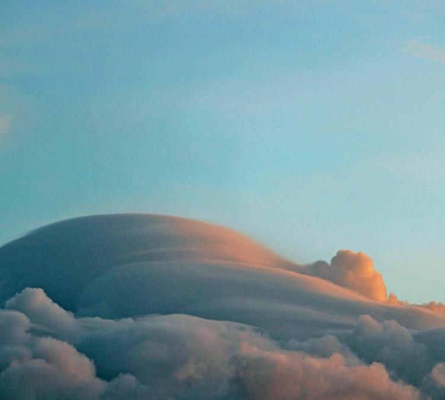
With that, Rina's dilemma was sort of postponed. Soon afterward, Ahaa announced she wanted to walk to the game field, where visitors traditionally trained in aaoo. The elder – still maintaining the image of a sprightly young man – politely declined to accompany Her Highness, citing his age and hopelessly aching legs. So Ahaa bid him a warm, friendly farewell, promising to visit him again at the first opportunity.
“Well, now I won't be able to sleep for six days!” the princess suddenly proclaimed as they stepped onto a wide, slightly fog-dusted road.
“Why?!” asked Rina, astounded.
“Because I'll be thinking about your sister and worrying. And when I worry, I don't sleep for six days straight”.
“Please don't worry, Your Highness!” Rina said heartily. “I will find her, and I'll come back home with her. Everything will be fine. The wizard Herx is helping me, he's the most experienced and powerful magasther in all the worlds. And many others are helping me too. Including you”.
“No, what help can I offer? We're just flying in a long arc across the Kingdom, and we might be moving farther from your entrance to the next world with every hour”.
“Maybe”, Rina sighed. “That's okay. Then I'll fly back”.
“Better yet, we need to speak with my scientific advisor immediately”. Ahaa said decisively, pivoting almost military style on her heels and turning down another path, heading right toward the pier through the empty lot.
Rina followed. But they hadn't walked even a hundred steps when a breathless boy in a junior servant's uniform came running out from behind. Without properly stopping, he bowed and shouted:
“Ao ee o! Ao ee o!”
“Ie ae oua?” asked the princess.
The boy nodded rapidly and blurted out, “Ae u oi! Ai a ia o aui!”
“Oh, perfect!” Ahaa exclaimed with delight. “The chef announced that the Jubilee Feast can be held right after the Time of Short Shadows. Wonderful! The sooner we disturb Aien, the better for all of us. You can't imagine how important and slow-moving he is. If it weren't for my Mother's patronage, I'd have banished him from the Palace long ago for his lack of respect toward the Princess”.
The boy bowed again and dashed off without waiting for a reply. Apparently, Ahaa had given him some kind of hand gesture, though Rina didn't catch it.
In fact, hand gestures in this world were a common practice and served the population as a fast and convenient second language. What was most astonishing – this hand-talk was known on other planets too, and the dialect was almost the same everywhere. Ahaa was happy to say that those hand signs were invented by the Alzeans, a prehistoric tribe from the only island on the Ocean Planet. They called their land the ‘World of Morroddo'.
Rina immediately recognized the word from her conversations with Gri-Gri. Ahaa wasn't surprised and said that in old times the Desert Planet had to use hand language too when dealing with foreigners. Rina, as an Earthling, didn't know a single gesture – she just spoke all the local languages easily, often without an accent, as if automatically (yes, that silly word again), but even that didn't amaze the princess in the slightest.
“It's because”, she said confidently, “you were sent on the journey by the wizard. I think he gave you all the languages in advance”.
Rina agreed – that electric strike to her forehead from Herx's finger was unforgettable.
And so, drifting a bit into the topic of linguistics, the girls walked along the ‘shore', right at the edge of the cloud island.
Rina found the princess interesting to listen to, but the sheer drop and the slow-crawling gray clouds far below, which she glanced at now and then with growing horror, didn't exactly inspire comfort. Ahaa noticed her frightened looks and turned onto a parallel path, slightly higher up. Reaching the top of a small rise, she turned and said:
“Such a shame, but we won't have time to play aaoo today. The practice field is over there, where the two pink hills are”.
Rina looked back, but saw no pink hills. Or rather, quite the opposite, there were more than enough hills scattered across the valley. Though they all looked exactly the same. She searched for a pair that looked even slightly different from the rest – but found nothing.
“Tomorrow morning, we won't stop anywhere – we'll go straight to the field and finally play. Do you agree?”
“Of course I do!” Rina smiled. “I love sports”.
Ahaa didn't know what ‘sports' were, but just in case, she clarified:
“It's not a complicated game. The rules are simple, although it takes focus and quick reflexes. I'm sure you'll do well. And then – a little practice, luck, and agility – and you are the best player in the kingdom”. The princess winked.
Chatting casually, they reached the airship. On the parade stairs, the footmen and servants – already changed into festive violet attire – were lined up in two rows. Rina remembered that Ahaa had mentioned some celebration and asked:
“You said ‘jubilee dinner'. Is it someone's birthday today?”
The princess raised her eyebrows:
“Oh no, not at all! Today is the eighteenth day since the beginning of the movement of the lowest clouds, which officially makes it the First Day of Summer. And eighteen days from now, summer will end”.
“That's strange. Our summer lasts a whole ninety days. Or ninety-two, I think, if I'm not mistaken”.
“Nothing surprising”, the princess reasoned after a moment's thought. “The Earth World is many times larger than ours, and so your time is both wider and longer. But a holiday is a holiday. A change of season means a change in winds, and a new wind brings a turn of fate. At least, among the people, the First Day of Summer is considered the third most important holiday – after New Year's and Coronation Day, of course... At the table, you'll sit next to me on the left. Sorry, but the right seat is permanently occupied by the State Secretary, according to tradition”.
Rina sincerely thanked her for the invitation...
The table was set on the Second Open Deck – the very one from which Rina had recently managed to fall, and to which she had somehow miraculously returned. There she expected to see flowers, cakes, flags, an orchestra, ribbons, garlands, champagne, and smiling ladies in gowns – everything typical of a lavish celebration, especially a royal one.
But reality was much simpler – so much simpler, it was almost insulting, not only were there no decorations or orchestras – believe it or not, there weren't even dishes! No utensils, no napkins, no glasses. Just a long, bare table of black glass, and on it, as the only “dish”, four or five dozen large, crudely torn chunks of pink and white mist, piled carelessly into stepped pyramids. And that was it!
However, in anticipation of the grand feast, Rina had been feeling a dull ache in her stomach, hunger had reached an unbearable level, and now, honestly, she was ready to swallow just about anything – even clouds. As she and the princess climbed the staircases and crossed the walkways, she had imagined the most luxurious royal delicacies – though she understood that in another world, the dishes would be unfamiliar, but surely delicious, because after all, they were royal. And yet instead of treats, hors d'oeuvres, drinks, and appetizers – an essentially empty table.
For a while, she still hoped the cook and his helpers would appear with soup tureens and hot plates on trays, but then Ahaa nodded, and the courtiers, standing respectfully nearby, made their way to their chairs. Without waiting for everyone to take their seats in accordance with protocol, the princess briskly approached a small portable throne. Four servants, in perfect coordination, swept it back. Rina hurried to the table too, her sneakers merging into the floor as though the marble was melting slush.
Ahaa sat down, looked carefully at everyone gathered, then stood up abruptly and said in a deliberately authoritative, commanding tone:
“Aea a oea! O iao i ue a aia!”
The courtiers smiled and shook their heads in denial. Ahaa, smiling too, slowly sank back into her throne and reached for the nearest pink morsels twitching slightly in the breeze. She scooped up a full handful of pinkish mist, stuffed it in her mouth, and swallowed it all in one gulp. Rina hesitated for a moment, unsure of the local dining etiquette, and watched the princess's actions intently.
“Please! Take from my aia”. Ahaa nodded toward the pink heap.
Rina tore off a bit. To the touch, the edible mist resembled sponge cake, or more precisely – wet plastic foam. She brought it subtly to her nose, sniffed – no smell. She bit into it, chewed. The taste was bread-like, similar to plain, simple wheat rolls, though somehow too artless – not sweet, not salty. Bland undercooked wet sticky cold stale bread, basically. But her unrestrained appetite took over, Rina tore off a hefty portion the size of a large pastry and shoved it into her mouth whole. The mist instantly melted like cotton candy – but watery and without any sweetness.
From there, things went better – one chunk after another. The courtiers wasted no time either – exchanging cheerful remarks consisting mostly of “a” and “o”, pushing pink slices into their mouths with evident delight, barely chewing the porous mass. Ahaa got into it, too, grabbing and cramming damp blandness with both her hands.
After about eight or ten minutes, rather sated with the pink, Rina decided to try a little of the white pyramid, hoping it might be slightly tastier. She reached over, pinched off a corner. It was significantly firmer than the pink. Interesting! But just then, she noticed the courtiers had stopped chewing and swallowing. They sat frozen, mouths full, as in a comic photograph, staring at Rina with unblinking eyes, as if seeing her for the first time in their lives.
She was terrified she'd unknowingly committed some gross and offensive blunder. Eyes wide with panic, she looked to the princess.
“It's all right”, Ahaa reassured her. “You're allowed. You're a guest and a foreigner”.
“I just...” Rina had wanted to say she hadn't known about the white mist, and that... but the princess stopped her with a gesture.
“White aia is for the Second Suite of Courtiers. Pink is for the First”, she explained. “On the other hand, we're all among friends here. These are my best people – entirely equal”. Here she raised her voice so the far end of the table could hear too. “Of course, we can't violate the kingdom's regulations or our ancient customs. And so, even my closest friends, if they belong to the Second Suite, would never touch the pink aia. That's the law. And every order must rest on firm law. Our ancestors! They created the Rules of the High Ones! And it is not for us to change them!”
These last three lines Ahaa delivered even more emphatically, like slogans on a poster, but the courtiers fully agreed and responded with overly enthusiastic exclamations.
“A princess's guest”, Ahaa continued, “at the royal table is treated as First Suite. But a guest always has extended privileges, including the right to the white aia. I think we can consider the incident closed”.
Silence fell. Rina still didn't know whether she was supposed to finish the unfortunate piece of white mist or not. Or maybe she should just drop it to the floor? But what if discarding food – of any color – was strictly prohibited, even for guests? So, to defuse the tension, Rina popped the poor bit into her mouth and quickly ate it. Astonishingly, the white mist had a top-tier flavor – something like a luxury ice cream with natural strawberry syrup.
Both suites of courtiers let out a collective sigh and resumed their feast as if nothing had happened. Ahaa smiled at everyone at the table, then leaned toward Rina and, shielding her mouth with her hand, whispered conspiratorially:
“So how is the white? Is it good? I've never tried”.
“It's good”, Rina admitted honestly.
“A pity”, replied the princess almost soundlessly.
At last, the pink and white mist pieces were completely gone, and without waiting for permission or saying a word, the courtiers began dispersing. Soon only three people remained at the table, Ahaa, Rina, and the hopelessly silent State Secretary. Rina's stomach was full, she felt properly fed, even slightly overstuffed – despite the suspicious airiness and transparency of the meal.
“All right, now we're going to talk to Aien”, the princess announced, rising energetically from the table.
The State Secretary flinched all the way down his spine. He pulled his face into a ridiculous servile smile and bowed low, not even trying to stand, but almost bumping his chin on the black tabletop as he gazed at the princess with adoring eyes. The princess didn't look at him – she headed straight for the staircase. Rina said “excuse me” to the secretary and hurried after her, immediately noticing that her sneakers didn't sink into the deck anymore, it felt like walking on a thin carpet, with hardly any effort.
“I'm light again!” she thought joyfully. “Now I understand why air people are so weightless – they eat clouds”.
The girls crossed the hall and headed to the lower decks. The princess hurried down a narrow curved staircase to a blue mirrored landing near the exit, swiftly took off her left shoe, and suddenly hurled it downward over the railing.
“I'm angry at him”, she said. “At the advisor. I'm going to limp so he remembers. He'll be ashamed, but he deserves it!”
Indeed, the princess's left leg, now missing its high-heeled shoe, became much shorter – Ahaa hobbled terribly, swaying rather dangerously to one side with each step. Limping like this, she went into the doorway hidden behind a thick gray curtain beside a big greenish window.
23 – AIEN
part one
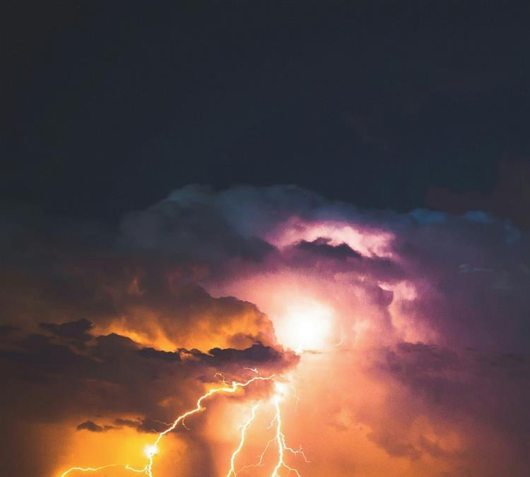
Aien's cabin was situated on the auxiliary deck at the very front of the ship. Originally, it was a technical room cluttered with suspicious black pillars and various mechanisms, but Aien persuaded the crew to swap the equipment for his belongings in his former cabin. This simple maneuver effectively separated him from the rest of the court staff.
However, his new “quarters” remained strictly utilitarian, and consequently, there was no proper access to the room. To get there, one had to climb a flimsy spiral staircase, which unexpectedly transitioned into a thick wire tube with sharp protrusions. How the heavy, corpulent Aien managed to scramble up there several times a day remained a mystery to the entire retinue.
Under the formal rules of ship etiquette, the princess could not inquire directly about her advisor's new eccentric dwelling and dangerous staircase. Personal matters weren't addressed bluntly, she merely hinted playfully, but Aien pretended not to understand the hints.
He was indeed stout, bulky, and seemingly ungainly. Through his sluggish movements and heavy clumsiness, he deliberately conveyed the impression of slow thinking and a burdensome mind. In reality, that was a meticulously trained ruse. Despite his size, Aien was extraordinarily quick both mentally and physically. The contrast between his tortoise-like demeanor and his lightning-fast strikes – delivered at any moment from any position – along with his dazzling remarks and aphorisms, precisely timed and intoned, served him well.
His phenomenal quick thinking, intellectual boldness, and mental flexibility propelled him from a neglected, completely useless secondary office first to the Royal Chancellery, and from there straight to the Court Academy, where he studied for less than five weeks, but that was enough to ignite deadly wars among everyone there and charm the College patrons – a dozen aging ladies – who unanimously recommended him to the Palace.
In such a cunning way, Aien entered the close circle of the future queen. Once inside the Palace with legitimate rights, he effortlessly outmaneuvered weak and lazy competitors. To him, they were merely tools and toys. He swiftly ascended the hierarchical ladder, replacing one functionary after another. Eventually, through years of intrigue, forgery, betrayal, and behind-the-scenes battles, he reached the administration of the infant Princess, firmly securing his position as her Senior Advisor – the role he had long aspired to.
Remarkably, the rest of the courtiers accepted his self-appointment as natural and evidently reasonable. None had a clue that Aien was actually manipulating the entire retinue as he pleased. He was a true architect of the unseen and a master of illusions within the Palace.
The only thing he hadn't managed to master was the princess's unyielding character. Though she was not yet of age and occasionally allowed herself to become a naive child for a minute or two, the strong, ambitious, merciless blood of her royal father was increasingly and inexorably overpowering the fragile genes of the Aenons – semi-legendary knights and near-mythic heroes of the ancient Aen lineage. The young Princess Ahaa was irresistibly transforming into a stern, unapproachable, often ruthless and formidable ruler.
Nevertheless, Aien was not the least bit troubled by this. Even if he couldn't control the princess herself, holding her entire flock in his cold, rigid grip brought him immense satisfaction. As for the foreigner who had recently appeared on board, he simply didn't think about her, well aware that Ahaa was incapable of forming genuine friendships and would lose interest and forget her guest soon enough.
What is more, Aien planned to ensure that Rina stayed in the capital, eventually blending into the city, settling among the townsfolk, and never meeting the princess in the future.
After miraculously climbing the wildly swaying, impossibly twisted staircase, Rina and Ahaa found themselves before a large oval opening in the wall, resembling a submarine hatch, yet adorned with a semi-transparent, sparkling curtain.
“Aea-e!” the princess commanded loudly, and without waiting for a response, passed through the icy fabric.
Aien's cabin was surprisingly cramped and modestly furnished. Its main feature was the table occupying nearly a third of the room. On the table, piles of miscellaneous oddities were jumbled carelessly, mostly ‘objects of obscure purpose', as an inexperienced investigator might note in a crime scene report. Aien stood by the window, respectfully bowing his head upon his mistress's arrival and smiling subtly.
“Aieu ou ai?” he asked without raising his gaze.
“No”, the princess replied, “we'll speak in Old Yulret, the language of my guest”. Aien bowed slightly lower, still adhering to ship protocol.
“This concerns...” Ahaa continued.
“I know everything, Your Highness”, he gently interrupted with a perfect smile. “I learned of the aim, purpose, and objective of your visit from the Administrator and have prepared some useful and, I believe, valuable information regarding your esteemed guest's issue”.
“Good”, Ahaa replied coldly, sitting down with a sharp motion. “If so, I'm listening”.
Aien detached himself from the wall and approached the table.
“I have been informed, Your Highness, that your highly respectable royal guest is traveling to distant worlds on personal matters and is currently seeking entry into the next world, the Fifth One, counting from the beginning of her journey, with the primary goal being the World of Fire”.
Rina stood three steps away, feeling both intrigued and awkward, as neither Aien nor the princess had looked at her once, speaking of her as if she weren't there at all. This manner was part of palace standards, but it was still an unpleasant sensation.
“I am unaware of the reasons that prompted the esteemed Ms. Rina” – like most, he stressed the second syllable in her name – “to undertake this journey”, Aien continued. “It is not my habit to meddle in others' affairs, however, I must note that visiting the World of Fire, even briefly, can be a highly dangerous endeavor, potentially leading to unpredictable consequences for Your Highness's personal guest”.
“We are informed of all dangers”, the princess replied in a frosty tone. “My guest is free to make any decisions she deems fit”.
“Oh, undoubtedly, Your Highness!” Aien exclaimed with a bow. “I merely considered it my professional duty to remind Your Highness of the treachery and cruelty of the World of Fire, as well as all other worlds beyond our beautiful, radiant, and unique Air-Cloud World – the best of the best and foremost of all possible worlds. I also believed that it was my direct responsibility to mention the risks and threats that abound in the spaces beyond our Kingdom, so wisely governed by our dearly revered Great Queen”.
“Aien!” Ahaa said irritably. “Please get to the point, we don't have much time”.
“With your permission, as your Advisor of Sciences and Affairs, I always speak directly to the matter, Your Highness”. Aien made an annoyingly obsequious, saccharine face and, twisting his neck, bowed even lower, as much as his immense belly allowed. “At least, I do everything in my power to faithfully serve the Great Queen, Your Highness, and the entire Kingdom”.
Saying this, he reached with his left hand to one of the piles of miscellaneous items on the table and began deftly rearranging boxes and bundles.
“For me, the Princess's desire is an unalterable and inviolable law, Your Highness”.
“Let's not touch upon laws, please”, Ahaa retorted sharply. “We intend to discuss geography, not politics”.
“Of course, of course”, Aien muttered and suddenly exclaimed, “Ah, here it is!”
“What is there?” Rina and the princess asked simultaneously.
“The Aenel Lens!”
“Why do we need a lens?” Rina asked.
Only then did Aien look at her for the first time, and even then, only sideways. Rina thought he had no eyes at all, just two deep, round holes beneath his eyebrows.
“I have been informed”, Aien said in a lowered tone, “that the Esteemed Guest possesses a certain magical map that changes as the journey progresses. Is my information accurate?” He glanced at Rina again and, after a pause, bowed slightly.
“Yes, I have Herx's map”, she confirmed. “But it doesn't show anything, only clouds and islands”.
“Would the Gracious Lady allow me to look at the marvelous map?”
“Of course”. Rina pulled a copper button, unfastened the pocket, and took out the folded paper. Aien took the map, barely touching it with his fingertips, carefully unfolded it and said:
“Everything is exactly as I anticipated. This map is significantly incomplete because... because... because...” He brought it close to his face. “Because...”
“Because what?” Ahaa couldn't hold back.
“Because at the beginning of summer, the shapes of the islands, cloud formations, and wind directions are insufficiently stable and cannot yet be precisely determined”, Aien rattled off like a memorized lesson.
Rina stepped half a pace closer and hesitantly said, “There... in the corner... a black dot. Could you explain what it means?”
“A dot?” Aien was surprised. “I don't see it”. He bowed and presented the unfolded map to the princess.
“You probably covered it with your finger. Accidentally”.
“Where?” Aien removed his hand from the map and showed it to the princess again, then turned to Rina, but there was no dot on the paper.
“But how...” Rina began.
“That's normal”, the Advisor smiled sourly. “I've already had the honor of reminding you that in the early days of summer, forms are unstable, and therefore dots and any other objects and symbols can appear, disappear, or change as they please. If we were to look at your remarkable map in seventeen or eighteen days, then...”
“Then the entrance to the Fifth World would be visible?”
“You see, your map has too small a scale. Entrances and exits are unlikely to be discernible under such conditions. Unless, of course, they are specifically marked. But as far as I've noticed, the entrance to any subsequent world is not yet indicated here”.
“So what?” the princess asked. “You can't help us?”
“I didn't say that, Your Highness. I merely had the audacity to state that on the existing map, entrances are not evident to the naked eye, but that doesn't mean they can't be detected by other means”.
“Other means?” Rina was surprised and thought with a grin, “X-rays, perhaps?”
“Exactly!” Aien exclaimed. “Other means! For example, this Aenel Lens. With this device, we can change the scale of your map and examine all the small features and nuances. With your permission, of course”. He bowed to the princess.
“If there's no threat to the ship”, she replied dryly.
“Have I ever posed even the slightest danger to Your Highness's property?”
Ahaa didn't answer. Instead, she demonstratively stuck out her bare left foot. Aien was taken aback for a moment, coughed, and sidled back toward the window. But after standing there for a few seconds, he again said, “With your permission”, and, with difficulty bending down, laid Herx's map directly on the floor. Then he took a tiny snow-white handkerchief from his vest pocket and carefully wiped the lens with it. Exhaling, he bent down again and placed it in the very center of the map.
At that moment, a crackling sound was heard. It was like dry twigs being broken by a strong hand. And there was the smell of hot iron. Rina tensed, Ahaa sat with an impassive face, and the Senior Advisor smiled happily, showing small gray teeth. The crackling intensified. Rina felt that the map lying on the floor was radiating streams of heat like a blazing campfire. The cabin trembled slightly, and a second later, the map began to grow! Its corners and edges came to life, stirred, flapped against the marble, and stretched in different directions. The map rustled, clicked, expanded, and gradually covered the entire floor with a mottled paper carpet.
The lower edge of the map reached Rina's feet, she was about to jump aside but didn't have time – the cardboard slid under her sneakers, and Rina found herself on a large, spreading blue blot. Ahaa, along with her chair, was now on a wide white stripe, probably indicating one of the air currents.
But the map continued to grow and soon, pressing against the cabin walls, impatiently pushed them. The walls yielded to the force without visible resistance and moved apart in different directions, increasing in length and height simultaneously. The princess raised her hand, intending to object, but the Advisor merely nodded and made a calming gesture with his palm. Ahaa shook her head discontentedly, though she remained silent.
Very soon, the walls and ceiling had moved so far away that the small cabin had turned into something resembling a hockey stadium. Echoes rolled through the immense hall, but the stripes on the floor kept spreading with the same persistence. Fortunately, the main law of the Universe is implacable – everything has its end. Two minutes later, the blue, gray, and whitish spots, which had been moving in waves under Rina's feet, stopped and settled.
“Magnification complete!” Aien announced ceremoniously, like a circus ringmaster. “If you allow me, I will show you some details, Your Highness”.
“Are you sure our ship is all right?” the princess asked calmly, rising from her chair.
“Absolutely, Your Highness. What happened here pertains exclusively to my modest, if I may say so, quarters. Meanwhile, the rest of the ship remains untouched”.
They walked across the map, which now covered thousands of square meters and no longer resembled a map, except for the scattered inscriptions, signs, and symbols here and there, which in total formed an uncountable quantity.
“You may notice”, Aien continued enthusiastically, addressing only Rina, “your map has many visible details and elements, provided the scale was properly adjusted”.
“Yeah”, she agreed, “but after you have zoomed it in like this, I see only those details, without knowing where they actually are”.
“Why without knowing? Here”, Aien pointed to the left with a school pointer that had appeared in his hand from nowhere. “Here is the city of Aail, it cannot be confused with any other – it's round and empty inside just like Her Highness's ring on her pinky. And over there”, he pointed to the right, “a resort island known as Old Asaa. Do you recognize the island of Asaa, Your Highness?”
The princess had stopped at the image of the island. Looking closely at the picture, she suddenly squealed and leaped back, as if a mouse had jumped out of the map.
“Everything is moving there!” Ahaa shouted in fright.
“Please, calm down, Your Highness”. Aien showed his little teeth in his rather satisfied smile. “The dimensions of this map have increased so much that you managed to see the movement of the clouds”.
“No, not the clouds! There are ships!”
“Of course, ships. Summer has begun, vacation season is underway, and many of Her Majesty's subjects have flown off to resorts. The island of Asaa is a charming place to relax – you can't deny that”.
“But it's just paper!” the princess exclaimed, glancing around.
“Yes, paper, though please allow me to remind you, it's magical paper. Forgive me, but you seem to have forgotten for a minute that we are standing right on the surface of a map belonging to a certain Herx, who, according to your esteemed guest, is a famous and powerful wizard”.
“But I stepped on them! Accidentally!” Ahaa added in horror.
“It's not dangerous, Your Highness. You happened to step on the drawing of the ships, while the actual cruise liners are flying far away from here. Their passengers have no idea what an honor it was – for a moment they were beneath the exquisite shoe of the Magnificent Princess of Air”.
“Ah!” Ahaa said indignantly. “You always find a way to scare me. Clearly, you enjoy it immensely”.
“Not at all, Your Highness”, Aien replied with a bow. “I merely carry out your supreme will”. He bowed again, this time significantly lower than protocol required.
Rina looked at him and thought that the Advisor bowed so often not out of respect for the princess, but to hide his gloating smiles. Surprisingly, she was right, the Senior Advisor was having an unexpected and quite significant celebration – he had managed to shock the princess. Twice!
23 – AIEN
part two
Everyone was walking across the map. Aien recited the names of islands, currents, cloud fields, and deep air hollows. He frequently stopped, bent down, poked at the paper with his pointer – he behaved like a seasoned tour guide, as if he had seen Rina's map two hundred times before. Occasionally, the paper beneath their feet trembled, like a living, yet deeply sleeping beast. Or just a kind, flat, peaceful animal.
“Like a white flounder”, Rina thought.
Finally, after strolling for quite a while, Ahaa asked:
“Advisor, do you still have no idea where exactly we should look for the entrance to the Fifth World?”
“No, my Gracious Lady”, Aien bowed ceremoniously. “But in my opinion, this entrance should be depicted somewhere along the edge”.
“Then why are we trudging around the center now?”
“Because I examined the central part of the map, Your Highness, to confirm the validity and soundness of my latest assumption”. The Advisor bowed even lower.
The princess waved her hand hopelessly, turned away, and said to Rina, who was carefully studying a small dark gray spot:
“Let's go to the far end. Aien believes the entrance will be at the perimeter”.
“Look!” Rina said in amazement. “That's our ship!”
“Our ship?!” repeated Ahaa, rather bewildered, and then, limping desperately, hurried over to her, nearly slipping on the slick paper puddle of the air lake Aalolo in the province of Aenta.
“There it is!” Rina pointed. “Here! This is our ship! It's flying!”
Indeed, a sharply outlined gray object in the shape of an elongated drop was moving forward, although barely noticeably.
“Quite possible”, the Advisor grumbled, approaching from behind. “At the very least, it's a vessel of the same type, B-eight. Though actually I'm not certain”.
“But I am!” the princess snapped. “Here on the port side are two black lines. That's the upper part of the royal Air Forces Sign”.
“That may be. But it's equally possible that it's the symbol of the Southern Community's merchant fleet”.
“Aien!” Ahaa addressed him with irritated reproach. “You're the only one among all the High Ones who dares to contradict me at every turn, but sometimes you blatantly abuse my habit of tolerating your impudent antics! I see the royal sign on this ship with my own eyes! What is there to argue about?”
“Even in a nightmare I wouldn't even think of arguing with Your Highness!” the Advisor bowed quite low but spoke loudly and confidently. “I'm ready to agree with any of your words without hesitation, but allow me to remind you of my role as Senior Scientific Advisor. According to the Palace Schedule, point twenty, paragraph two, the Senior Advisor is meant to doubt and, through doubts and questions, lead discussions to the truth. The Schedule doesn't mention any limits on my doubts. This means I have the right to question even Your wisest assumptions, Your Highness. That is my official position and my state duty”.
“Fine”. The princess sighed wearily. “Doubt everything if it pleases you. But nowhere in the Schedule does it say that you must impose” – she emphasized the word – “impose your doubts on me. Keep them to yourself until I order you to express them. Does that, I hope, align with your foolish schedule?”
“Yes, my Gracious Lady, it does”.
“Then let's stop this pointless bickering and finally go to the edge of the map”.
But they didn't reach the edge. Aien lingered over a small blue symbol and suddenly announced:
“I've found it. This is the entrance”.
Rina's heart skipped a beat. With her feet becoming heavy, she approached the Advisor, afraid to even look at the paper.
“Here it is, your long-sought, precious entrance”, Aien said, without any pomp. “And interestingly, you see, it lies along our course, just... um... about four degrees south”.
Ahaa came over, barefoot, holding her right shoe in hand. The Advisor skillfully suppressed his mocking grin.
“Show me!” she demanded, frowning at Aien.
He silently took out his pointer and indicated the symbol. Rina saw that in the center of a dark, irregular polygon – most likely representing a mountainous island – there was a small golden circle, neatly outlined with a thin red line. Around the rim, two dozen black letters were scattered in complete disorder, by their forms vaguely resembling Hindi, with little sticks on each top.
“What does it say?” Ahaa asked.
“Nothing special, Your Highness”, the Advisor replied. “As far as I am able to translate, it says, ‘This door was created by… by the slave, I suppose, slave Naon… in the three hundred and first year… by the will of… yes, will of Nnov the White'“.
“Who was Nnov the White?”
“I can't recall precisely, my Gracious Lady, but if necessary, I can find him in the Great Encyclopedia of Worlds. Evidently, the door is ancient, and the names pointed out here are historical”.
“Is this the language of the Fifth World?”
“Yes, Your Highness”.
“But why are the words written in such a jumble?”
“Not just the words, but all the letters too, Your Highness. In those times, the Fifth World didn't use linear writing, they wrote in triangles”.
“In triangles?” Rina asked in surprise.
“Yes, my lady, precisely in triangles”, he turned to her and now spoke as if solely to Rina. “The first letter in a sentence is the apex of the triangle. Then, you rotate this apex to the left by a quarter of the side's length, keeping in mind that each time, the triangle grows by the same amount with each full rotation, so the letters and symbols are arranged along a broken spiral, stretched to the left”.
“It's impossible to read this way”, declared the princess.
“But that's exactly how they wrote in that World, Your Highness”.
“And the island, is it far from us?” Rina asked.
“Probably yes, it's still quite a distance”, the Advisor replied thoughtfully. “First, we have to fly past the twin islands of Aala-Lao, then we'll spend four days in the capital. From there, we'll head to the Great Blue Wastes, and only then – towards the final destination of our journey, to the North – to the Aam Archipelago. The islands, if I'm not mistaken, are over there”. He gestured with his hand. “Provided Her Highness wishes it, the ship can deviate slightly from its course, and a day after the Wastes, we'll have the opportunity to dock at this exact spot. It's not labeled on the map, and unfortunately, I don't know its name – this wonderful island is too small”.
“If the island has no name, I'll call it Aoa-U-Aau. The Island of the Yellow Door”, proclaimed the princess.
“That would be an excellent decision, Your Highness”.
Standing over the professionally drawn island, Ahaa said to Rina:
“That's it, in just seven or eight days, you'll be here and leave me forever. All I'll have left is to remember you. It's strange, but I've never had true companions. Somehow, I feel that if you had lived with us for a year, we would have become real friends”.
“But I can't stay for a year, I need to...” Rina began.
“I know”, Ahaa interrupted. “Of course, you can't stay, you have no right to linger – not for a year, not even a day. They're waiting for you and counting on you... If only someone waited for me like that and counted on me”. At that, Aien was about to object, but Ahaa turned sharply to him, and he shut his mouth instantly. “I would also, without hesitation, fly to other worlds, I would do everything to help those who need me so much. But no one needs me”.
“You are needed by your nation!” the Advisor exclaimed, unable to contain himself.
“Silence!” the princess hissed through her teeth. “I don't see what nation you're talking about. Where have you actually met that nation? In the Palace?” She turned back to Rina. “Your path is difficult and dangerous, but you ask for nothing. At first, I thought you were cunning, thought you were slick and calculating. But later I realized I was wrong. Everyone who approaches me asks for something, even such rich, fat nobles”. She nodded towards the Advisor, who immediately bowed. “They have everything – they're well-born, wealthy, many of them are famous – but they keep asking endlessly, they want more! And you have nothing. You're alone, you're in a complicated situation. Yet you haven't asked me for anything”.
The princess paused.
“I know how much you need my help. I'll give you my officers!” The Advisor reached out to the princess, but she sharply raised her hand, and he froze with his mouth open. “I'll give you ten of my best officers”, Ahaa continued, “they're educated, brave, and will be ready to die for you at any moment. Please don't say anything, you can thank me later... I don't want you to perish. I will never see you again, but that's not the point. It's more important for me to know that you're okay”.
The princess fell silent, Rina and the Advisor didn't dare break the stillness. Ahaa thought for a moment and added in a strong, commanding tone:
“Promise me one thing – when you have only one officer left, don't send him to certain death. Tell him to go home. He'll make it, my officers are strong, hardy, and smart. If you have only one last officer left, it means things are very bad, and you'll most likely fail. Being alone, he won't be able to save you anyway, but I need to know everything. Let him return and tell me what happened there.
“If you lose, I'll order a monument to be created on the Island of the Golden Door – the largest and most beautiful statue in the entire Kingdom. If you survive and win, I'll record you in the Honorary Sun Book as the only friend and close associate of Ahaa, the Great Princess of Air, and you will live in people's memory for centuries”.
Rina looked the princess in the eye, a tight lump rose in her throat, but she held on with all her might.
“We still have seven days”, Rina finally said with difficulty. “We'll be true friends for a whole week”.
“Yes, a whole week...” Ahaa echoed and suddenly said loudly and imperiously, “Aien, enough! Let's get out of here! I'm tired of wandering through this paper state, I want back to the real world.”
“At your command, Your Highness!” the Advisor exclaimed and, with a curt nod, headed back to the center of the map with an unexpectedly quick, strong, wide stride. Now he walked without pretending to be slow, he marched precisely and evenly, like a lieutenant on a parade ground. Approaching the table, he abruptly bent down and grabbed the magnifier. He stood, twirling the cold glass in his fingers, looking at the girls hurrying towards him. “What nonsense all this is”, he said to himself and shoved the lens into his pocket.
At that very instant, a crackling hiss was heard – like a large drop of water falling into hot oil. The map began the process of self-compression. The walls obediently followed it. Rina and the princess saw giant marble planes moving towards them and ran to the Advisor at full speed. After some time, everything ended – the map returned to its original scale, as did the Advisor's cabin. He picked up the paper sheet from the floor, carefully folded it, and handed it to Rina with a bow. She said “Thank you” and slipped the map into her pocket, snapping the button.
“The magic is over!” Ahaa announced, like at that circus after an illusionist's act. “Let's return to our mundane affairs. You must attend the Evening Review”.
“Certainly, my Gracious Lady”. The Advisor bowed.
“And don't forget to prepare the response to Her Majesty's Second Secretary”.
“The response is already prepared, my Gracious Lady”.
“Good”. Ahaa smiled at Rina. “Now we know everything, don't we? I mean... you understand”.
“Yes, now we know everything, I really appreciate your help”, Rina thanked her.
“Oh, high heavens! Don't say it that way. There's no reason to thank me, I had nothing to do with it”, Ahaa replied. “Thank Mr. Aien instead”.
“Oh no, no, no, not at all!” The Advisor shook his head like a parrot. “No need for the slightest gratitude! I experienced true pleasure and immense satisfaction assisting the esteemed Lady, the Personal Guest of Your Highness. You can count on my modest capabilities, I am always at your service anytime, anywhere, under any circumstances, and for any conceivable requirement you might encounter –” etcetera, etcetera...
Finally, the girls managed to get rid of Aien and leave him. They descended his risky staircase, crossed the passage, then climbed to the Second Deck, and entered the White Hall. They walked silently all the way, reflecting on everything that had just happened.
“What do you think of him?” Ahaa asked when they stopped in the Hall. “Quite an unpleasant type, right?”
“I don't know”, Rina shrugged. “Probably yes, a bit unpleasant, but he helped a lot”.
“That's true, he did, he helped us. He helped you – that is what is shocking me. I don't know what to make of that. Aien suddenly started helping someone who wasn't part of the elite. And mind you, he could have just said he had no idea how to solve the problem, but he helped and did it completely selflessly, with no profit at all. Is it even possible?” Ahaa pondered for a second. “Nonetheless, my advice – be careful with him”.
“I'll try”. Rina nodded.
“When you've rested, come to the First Upper Deck. I'll have a fitting there, they're sewing me a High Dark Dress for the Autumn Changes Festival. Will you come?”
“Of course, I'll come!” Rina smiled and added, “Your Highness”.
“No, don't”. The princess shook her head. “When we're alone, call me by name. To you I'm Ahaa, deal?”
“Deal”.
The princess turned and went toward the staircase, her bare feet slapping against the gleaming, arctic-white marble. Rina watched her go.
“How sad it is”, she thought and headed to her room.
24 – THE CITY OF AO
part one
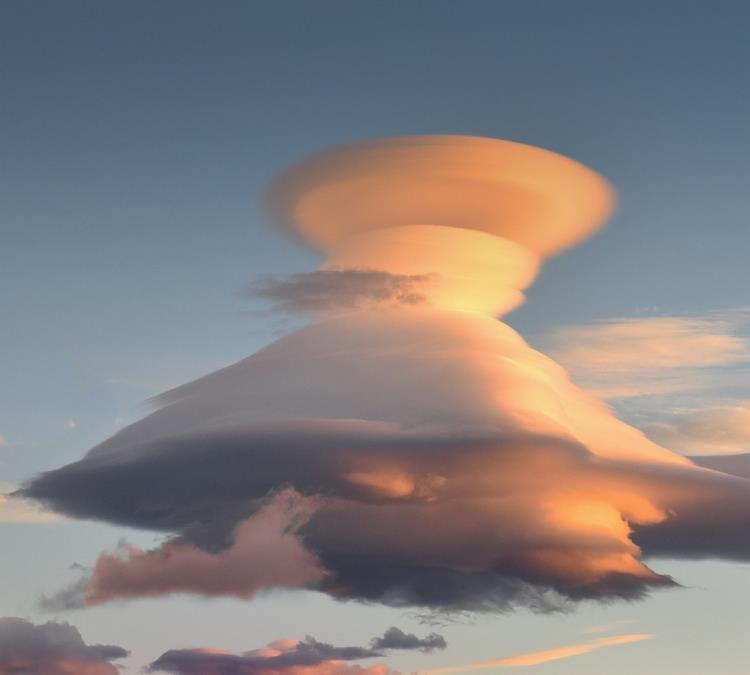
Rina hadn't slept well, even though no one had disturbed her – simply because Herx appeared – or rather, not so much appeared as sounded.
“How are things?” he asked lightly, as if merely passing by.
She was resting in thick April grass, she looked around, but saw no one – only bees and butterflies. In this dream, she wasn't at the beach like before. Instead, she had spent half the morning strolling aimlessly through the large clearing – a meadow or perhaps a hayfield. Everywhere she looked – young, lush grass with tiny fragrant flowers.
And a grasshopper. Nearby. The tireless little violinist was chirring persistently, hopping from blade to blade, teasing her and defiantly clicking its wings. Rina searched for him for some reason, and at last she found him. She stood up carefully, took a small step forward, but the wise insect was watching her closely and jumped far ahead. She didn't even know why she wanted him – she just felt like gently placing him in her palm and looking at him, nothing more. But Herx's voice ruined all her plans.
“Where are you?” she asked, thinking with slight annoyance, “Well, that's that – no grasshoppers now”.
“Doesn't matter where – I'm not too far”, Herx replied.
“Not too far? Are you somewhere here? You're invisible?”
“No, not exactly, but still the distance is not astronomical yet. Anyway, I can hear you, and that's already good. And I've noticed you hear me pretty well too, so we can say we've got something like a phone connection. Without a phone”.
“I was waiting for you”, Rina said after a short pause, with a touch of reproach. “But you hadn't come”.
“Can't be helped. The interaction of the Near Worlds is complicated now. Especially after certain events. It's not always easy to break into your dreams through all that noise, believe me”.
“I believe. But I need advice. I think I've found the entrance to the Fifth World. But I'm kind of unsure”.
“It's great that you're unsure. You are exactly in the situation that worries me the most!” exclaimed the unseen Herx. “In fact, you're in danger”.
“In danger? What do you mean?”
“I mean, Aien is deceiving you”.
“But why?” Rina was shocked.
“I haven't quite understood yet. He has, you see, too many contradictory plans. But it's quite possible the advisor simply wants to get rid of you. You're in his way somehow. I told you about him before, warned you, I said – never trust Aien. Don't you remember?”
“No”, she admitted, “I don't”.
“Ah... yiv... mo...” Herx muttered.
“What did you say?”
“It's not for you – I'm scolding myself. My fault! I didn't bother to boost your nighttime memory, was too lazy to fiddle with the dezminator, and here's the result – you forgot my extremely important messages!”
“But nothing's happened yet”, Rina tried to calm him. “I haven't even reached that Island, the Island of the Golden Door. And besides...”
“And besides, forget it if you value your own safety”. Herx cut her off. “I'm sure there is no such island there”.
“What do you mean, no island?”
“That's what I mean! Aien is a type who plans everything – he's a trickster. And if he helps you, that means he has included you in one of his knotty schemes. Maybe he acts against the princess this way, that's normal, the Palace people are all like that, but it's possible he wants to use you as a trap or, worse, as a weapon. Looks like you're right in the middle of his game, that is the danger. Anyway, I think the island wasn't real”.
Rina's mouth dropped open.
“But how can that be? I walked on that map,” she said in confusion, “and saw the island with my own eyes. And the princess was there near me too, we saw it together. How's that even possible?”
“It's Aien, you don't know him”, Herx replied calmly. “He can do anything to get closer to his goal. And nothing magical about it – the fake island could be drawn on the map by one of his assistants. That's simple”.
“No, the map was always in my pocket”. Rina shook her head.
“Always? And what about sleeping? It takes just five minutes for all. I'm totally sure they did it last night”.
Rina said nothing in reply, she was scared, though mostly frustrated.
“Well, don't be upset. Since we know the truth, there is nothing to worry about, he is powerless against the truth, he's now a puppet in our hands”, the old man giggled. “And by the way, I solved the problem long ago. I know where the real entrance to the Next World is located – it's in the Palace”.
“The Queen's Palace?”
“Precisely! Well, not in the palace itself – under it. You need to get into the catacombs, if that's the right word for something in the cloud. There you'll meet Aoao”.
“Aoao! I remember! That's the man Aunissa spoke about”.
“Yes, probably. What did she say?”
“Just the usual. Aunissa asked me to say hello and thank him on behalf of the ants for his help, that's all, in general”.
“Well then, thank him and say hello. I suppose he'll be happy to get a greeting from an old friend, especially from another planet... Anyway, he knows the path to one of the nearest entrances. There are three such mechanisms in the kingdom. He once told me how he worked on restoring an ancient tunnel and found a hidden door there. And just behind the door was an underground road, and a big hall with the entrance inside... In short, he knows the ins and outs and will help you – he promised. That's enough for us. And I hope you remember my second important warning”.
Rina strained her memory, but no matter how hard she tried, she couldn't recall anything significant. She shook her head.
“Amazing!” growled the wizard. “Then tell me, why do you think I struggle to appear to you in your dreams and tell you all these things?”
Rina sighed guiltily.
“Well, relax”, Herx softened his tone after a pause. “Anyway, I'll have to remind you. I warned you about the flower”.
“Ae! Ae the Flower!” Rina even gave a little hop.
“Thank heavens”, said Herx with relief. “Of course it is Ae! A very useful but awfully wild creature. It's not alive though – it was made from a special material, but it acts and looks completely real. If, of course, you don't count its size. The greatest risk is in how it reacts to touch. It's capable of generating powerful electrical discharges, sometimes fatal”.
“Yes, I remember – I mustn't touch the flower”.
“Please do try to convince yourself not to touch it”, Herx asked playfully. “Don't run to hug it. Better yet, don't even get close. Just listen to what Aoao says and do everything he advises”.
Rina fell silent in thought.
“Something's wrong?” Herx asked after waiting.
“Probably”, Rina confirmed.
“What is it?”
“The basement. I mean, the palace underground. Still, how am I supposed to get there? I don't know what the Queen will say, how she'll receive me, or where I will and won't be allowed to go”.
“Don't trouble yourself with that. The Queen loves new people – she collects and stores them in her personal albums”, he chuckled. “Especially foreigners. At least for the first weeks, you'll be allowed to go anywhere and do anything you want. I guarantee it – she'll even ask you, quite seriously, to sit on her throne”.
“Her throne? What for?”
“For fun. The Queen of Air is a fun person. You people would call her ‘extravagant'. Hilarious word, huh? She's strange, in short. Many think she's a kind woman – but don't forget, she's the queen of a large kingdom, she controls the government, the army, and the police – everything! That means you should keep as far from her as you can, you understand? My people say she's exceptionally insecure, they consider her an unpredictable beast... Okay, soon you'll see her yourself and figure her out. But be diplomatic when you meet her, don't widen your eyes too much – no need to offend Her Majesty like that”, Herx laughed. “And what's more important: don't listen to her too closely, try not to fall for her tricks”.
“Tricks? You mean, the Queen deceives people too? Like Aien?” Rina asked, deeply surprised.
Hard to believe, but she still naively assumed that real, not fairy-tale kings and queens had no reason to trick. Why would they? Kings have fame, power, and are fabulously rich. What would be the point of lying? Ministers, advisors, and courtiers – yes, they lied all the time, it was their job – to manipulate everyone. But they are a different matter – they are under orders...
“Her deceptions are complex”, Herx explained. “Not as flat and primitive as Aien's fake drawings. A queen is a queen, and her pranks are royal quality. But never mind – just look her in the eye, bow, smile when required, stay calm, and be utterly polite. And never agree to anything right away! First think and analyze. Before you answer any of her questions, pause and listen to your mind. Do you understand what I'm saying?”
“Yes, I do. I'll try to analyze”.
“Wonderful! Now about the underground tunnels. Do this: when you get to the Ice Fountain – they'll definitely take you there to show off, they take everyone there, every single guest despite their habit to spin fairy tales about how only the specially chosen are allowed near the fountain according to some secret list. Ridiculous! Everyone's allowed! ... So, once you see the fountain, pretend you're interested in the blue light flowing out of it, ask them to be left alone for a minute. Got it? And when everyone leaves, shout ‘wueot'. Remember that. ‘Wu-e-ot'! An ancient phrase in Emmei language. It's forgotten now – a powerful tongue, I would say, but you need to know the rules to use it the right way. Well, ‘wueot' means ‘I'm here', although not exactly, but that doesn't matter. Repeat it now”.
Rina repeated.
“Okay, you'll shout ‘wueot' just once and stand still. Don't go anywhere, don't do anything. And within minutes, all will happen as it should. Remember, nothing threatens you there. Even in the worst-case scenario, there won't be a prison. The Palace uses different methods – humane ones, so to speak. Besides, they're too slow. The moment the courtiers figure things out, talk it over, and work up the courage to go looking for you in the tunnels, you'll already be forty miles away. Aoao will take care of everything, just don't argue with him – he doesn't like that. Am I explaining clearly?”
“Everything's clear”, Rina smiled.
“Very good, I'm glad... And did you notice? You and I are speaking old Yulret, and I haven't stumbled over a single word – not the slightest mistake! Neither have you. Just listen to how naturally we're speaking now! It's my favorite language, you know. Once you're back on Earth and start using your native language again, you'll realize how much more convenient Yulret was... All right, I'm getting off track. What were we talking about?”
“The tunnels”.
“Oh, it's all clear with the tunnels, it's going to be easy. Aoao will explain the details, you do what he says, and you are safe. Are there any other questions?”
“Sir, no, sir!” Rina laughed.
“Well, terrific then, as they say nowadays! I mean, they did in the fifties. Then I'll go. That is, I'll float off. Goodbye”.
“Goodbye”, Rina replied, and added, “Thank you very much!”
But Herx didn't hear her anymore. The brief session of phoneless interworld communication had ended…
She wandered the fragrant meadow all day long, until sunset – musing, pondering, whispering to herself, arguing with someone in her imagination, even singing, and still looking for the grasshopper. But the green fellow kept silent, it was impossible to find him.
Many times Rina tried to get back to her cabin – in vain, the meadow did not let her go. Rina was pretty upset in the end and the moment the sun touched the dark horizon, she woke up irritated, tired, and rather frustrated. How long had she slept actually? A day, an hour, a minute? And was it already morning, or still evening? She had no idea. The only thing she understood – she was exhausted. As if she hadn't gone to bed at all.
“Next time I'll ask Herx to appear in some other way. And without locking me in the dream”, she said to the glowing spheres. They blinked and stopped rotating as if confirming she was right...
Soon Rina heard a strange commotion outside the walls: knocks, rustling, hurried footsteps, someone's exasperated voice issuing long commands in the consonant-less language. Rina ran to the window and saw a massive cloud island approaching. Taking up half the sky, it was floating toward the ship. In less than five minutes, the island occupied the entire window and was so close that Rina could see dozens of blue-uniform people along the edge, probably port workers. Some of them were waving striped purple rods, and others had small white flashlights on their chests.
Long shadows, watercolor-tinted in rainbow hues, stretched across the giant square, the zeppelin was slowly going down. The people ran through the shifting layers of not yet dissolved night fog and tore it into thick strips with their bodies. It was a chill early morning – ten minutes before dawn. Rina, in her sleepy thoughtfulness, watched her giant ship turned slightly left, then slightly right, preparing to perform a gentle landing right on the square.
“A gentle clouding”, she corrected herself, and thought cheerfully, “If this is the capital, then right now Ahaa is busy changing her scarf, dress, shoes, and instructions, she won't come to get me – she'll send the servants, and twenty of them will help me put on my knapsack”.
She hadn't even finished this long, but still comical idea – which lifted her dark mood just a little – when a breathless boy of about eleven suddenly burst into the cabin right through the back wall. Struggling to catch his breath, as if after a wild half-mile dash, and mercilessly mispronouncing the alien words, he said:
“Rrin... sessa... wai... tin... fo... u... up... stair... z...”
“Where exactly upstairs?” Rina tried to clarify.
“Ae o ieo?” the boy opened his huge eyes even wider in deep astonishment.
“Wher...er...up...stair...raz?” she repeated slowly, syllable by syllable, but the servant only smiled in reply and backed away fox-like until he vanished through the wall.
“Great! Thank you for more problems”, Rina said to the disappeared boy with much annoyance. And yes, she had every right to be upset – the ship had two Third Decks, three Upper Decks at the opposite ends, and two Open Decks up the frame.
But there was no choice – she would have to go find the princess.
In the White Hall, everything had changed beyond recognition: the panoramic window had dissolved into thin air, and in its place stood a dark gray wall. The entire Hall was dimly lit by a bluish glow coming from a long slit in the ceiling – no lamps, no globes, everything was disassembled. Busy people were rushing about, passing with worried faces, dragging boxes of all shapes and never noticing anyone else.
Rina headed toward the grand White Staircase, but it was gone completely. Now there was a scary drop with sheer walls. She cautiously looked down and saw five or six sailors arranging flat black tiles at the very bottom.
“And how am I supposed to get through now?”
“Madam may exit through the right corridor”, a silky voice advised from behind – a tall white-haired man in the lilac livery of the Royal Servants.
“Thank you”, she said, and walked back across the Hall.
Luckily, the corridor hadn't transformed into anything yet – it still bent right and sloped upward, just as it did before. To Rina's surprise, she remained light – her sneakers sank into the marble no deeper than two or three millimeters, and as always, the footprints closed up, fading out almost immediately. Same with the walls – just for fun, she scratched her name with her finger, but the letters smoothed over and evaporated in a few moments. Only the letter “a” lingered a little longer than the rest.
“No wonder”. Rina smirked. “That's the one they put the stress on!”
Climbing up to the middle levels, she entered the Second Deck, where she suddenly found herself in total silence and eerie emptiness. The always-noisy, crowded Second Deck – used for walks, meetings, conversations, games, and merry activities – was now deserted, dark, and even seemed smaller. Rina crossed the echoing hollowness and entered a niche that looked like an open three-walled elevator. In fact, it was a special “waiting door”, as Ahaa childishly called it. If you stepped into such an opening and waited for about ten seconds, all three walls would dissipate on their own and reveal the entrances to other corridors. Rina went along the right-hand passageway, leading to the First Upper Deck – to the stern of the ship.
24 – THE CITY OF AO
part two
And she was lucky: entering the pre-deck chamber, she immediately spotted the princess, dressed entirely in ultramarine – very formal and strict – from a distance she looked just like a manager at a large bank back on Earth. Ahaa was standing with her back to Rina, fiddling with a golden curtain on the porthole and discussing something with a handsome young man in long dark clothes that resembled a judge's robe.
The man nodded constantly, had a serious expression, and listened to the princess attentively. Rina, afraid of interrupting an important conversation, tiptoed a bit closer. But the man noticed her, apparently guessed who she was, and gave a formal bow. Ahaa turned, a trace of surprise passing over her face.
“Oh, you're already here. Good thing you found me on this deck. I was just about to leave for the office and we would've missed each other. Meet my old friend, Professor Alion. Be careful – he's a subtle psychologist. Say three words and he'll learn every secret in your heart”.
“Your Highness, as always, is kindly overestimating my abilities”, said the professor jokingly, with a bow. “Three words are not enough – I need four. Professor Aeas Alion, at your service”. He raised his hand and greeted Rina the way Earth boys do when they spot each other from afar. Rina waved back in the same friendly manner.
“Pleased to meet you, I'm Rina”, she presented herself with a smile.
“I'll be even more pleased if you agree to visit our university”, said Alion, making a complicated gesture with both hands – Rina didn't understand it. “I've heard from Her Serene Highness” – he made a long nod to the Princess – “that on Earth, you hold a completed seventh degree of magistracy and now you are in the eighth. Believe me, it would be a great honor for us to welcome such a versatile and extensively advanced person from a non-adjacent world. I will introduce you to our education system, and show you our university, which I believe to be the best institution of its kind”.
Rina was surprised by the lofty academic degree attributed to her, but diplomatically didn't let it show. The day before, the princess had been asking about certain unofficial aspects of life on Earth, and obviously had misunderstood something about the schooling and teaching in Kyiv.
“I'm afraid I have to disappoint you, Professor, but we have plans”, Ahaa interrupted. “Our guest will first visit the Pink Palace – there's a meeting scheduled with the Queen – then I'd like to show her... uh... a few exclusive sights, which I think will take about two days, and only after that will you be able to steal her away from me and take her to your famous university – if, of course, she agrees”.
“I agree, I do – I'd be glad to! I'll definitely go with you”, Rina readily confirmed.
The professor bowed even more gracefully, but soon, citing an extra-critical – his word – obligation, went down a side staircase. The princess silently headed in the opposite direction.
“Thanks to the summer tailwinds, we're way ahead of the flight schedule”, she said as Rina caught up to her. “It's still only the fourth hour of dawn by island time. Of course, people like Alion are already up, but the rest are sound asleep. It's a good thing we caught the night port service – otherwise we wouldn't even have been able to dock properly. But it's too early for the Palace. We don't have any strict formalities – we're not pedants, after all – but still, it is the main palace of the kingdom. So, formally, and on festive days like today, we wait for the morning door opening, meaning the beginning of the ninth of dawn. But we're not going to stand at the threshold like ceremonial dolls, so I decided it would be reasonable to go to the Lesser Residence, and we'll spend some time there. Believe me, it won't be boring – there's plenty to see at the Residence. And as always I've got some urgent errands there too – a couple of local issues to handle and a few orders to give. Besides, it's not far from the port, the road won't tire you”. The princess paused expectantly.
“Of course I'll go”. Rina nodded. “I'll just run back and grab my things, and in five minutes...”
“Oh, don't be concerned. Your things will be delivered long before we get there. I've got a funny little mix-up with the captain – he's been stuck in the office since the second dawn, poor guy”, she smirked. “If you don't mind, wait for me at the Grand Entrance – I'll be down very soon”.
“Yes, definitely, I'll wait. I'm just not sure I'll be able to find the way”, Rina shrugged uncertainly. “The ship's changed so much – many of the staircases are already gone”.
“Oh, right – you don't know our Main Landing Procedure”, Ahaa remembered.
She turned and said loudly into the empty air a long, sing-song phrase, from which Rina only caught “aoe” meaning quickly or immediately, and “euo” which could be translated as go or arrive. Just about twelve seconds later – whether by magic or duty – a little boy dressed entirely in white appeared from the wall, exactly like the one who had come to the cabin with the invitation to the Upper Deck, except a bit younger. He bowed deeply but then, to Rina's big surprise, he straightened up, looked the princess right in the eyes with a mocking expression, and waited for orders. This didn't bother Her Highness in the least – on the contrary, she calmly raised her right hand and made an amazingly complicated gesture with her palm and fingers. The boy said no word, just nodded.
“The servant will escort you”, the princess said a bit too formally (though perfectly in line with her strict banker-style outfit), and, not wasting a moment, she left without adding another word.
Rina was puzzled by the servant's odd behavior and the princess's suddenly shifted mood, but the next moment she remembered that today she would meet Aoao and leave this world forever. Still, a faint unpleasant aftertaste remained...
Having followed the silent boy through the entire ship along a confusing, unmemorable path, Rina stepped out onto the First Lower Deck, dismissed the servant – he ran off without even a bow – but she chose not to notice anyone's oddities on her last day in the airy expanses of the Cloud World. She simply stood on the top step of the Grand Entrance, leaned against the doorway, and looked out at the island, staring into the distant bluish hilltops as if photographing them with a long exposure, and waited for the princess, relaxed and thinking of nothing in particular.
The zeppelin had landed long ago. She hadn't even noticed when it happened – there had been no jolt, no sound. It had quietly settled onto the firm cloud, and docking workers had immediately secured it at the bow and stern with long transparent beams.
Though Ahaa had said it was still only the fourth dawn, the sun was already shining, casting unnaturally dark, sharp shadows – no longer water-colored – on the snow-piqué tiles of the port square. A fresh breeze freely flew into the Grand Entrance in cool gusts, pleasantly ruffling Rina's hair.
“Aii o eue?” asked a young worker running by in his cyan uniform. Rina silently spread her arms – as if to say, “I'm not local, I don't understand”.
“Eue”, the worker smiled and ran on...
The queen's Lesser Residence was a relatively small, high-spired palace, gleaming with faceted, round icy-glass windows and crystalline-looking seven-pointed stars on its needles. They reached the Residence in a wheelless striped cart that comically resembled half a Kherson watermelon, although a four-seater. However, with equal accuracy, the cart could be called a boat, or a launch, or even a plane – it could both fly and float. Ahaa, Rina, and Anei, the princess's young chambermaid, walked to a blue rectangular platform and descended the shiny steps to the watermelon-shaped boat waiting in the air channel. The boat was piloted by a boy of about nine – or maybe younger – cheerful, wide-eyed, chubby-cheeked, with his bluish curls fluttering in the morning wind.
The princess masterfully climbed aboard without waiting for help or giving any instructions to the driver. Apparently, the boy-boatman was perfectly familiar with Her Highness's manners and the purpose of the trip. Holding the boat in place with a long, thin pole, he paused until everyone was seated comfortably, and then stepped onto the stern. The craft, with a soft bounce, slid along an invisible river with cloudy shores. A minute later, after passing gray buildings and strange heavy mechanisms of the port, the boat entered the city.
At first, Rina could see just rows of cubic buildings without decorations or windows – perhaps warehouses or hangars – but soon, on both sides of the canal, appeared fairytale palaces and villas of astonishing beauty – mostly snow-white, sparkling like frost on a cold January morning, framed with colonnades, twined with elaborate carvings, pierced by ornamental arches. High into the sky rose sharp spires and twisted domes of luxurious estates, especially striking in the slanting rays of the young sun – an unforgettable sight! It seemed that no one had built this city – no masons, no painters, nobody at all – it had simply grown from the pearly whiteness of pure light and steam. It was impossible to believe that the celestial splendor, surrounding Rina from all sides and overwhelming her imagination, had been created by ordinary human hands.
Rina was stunned. The maid Anei didn't notice the foreigner's amazement – she was watching her mistress only. But the princess was openly pleased, clearly enjoying Rina's wide, shocked eyes. Even the curly-haired boy felt the foreign girl's mood and winked at her frantically. But Rina saw only the palaces, fountains, columns, and glass gardens of the wondrous heavenly city.
At last, the boat-cart, carried by a steady air current and deftly steered without any effort or fuss by the little captain, slowed down and gently docked its starboard side against a rectangular platform of greenish marble. The passengers disembarked. The princess leaned down and, smiling, whispered a couple of words to the boy. He nodded importantly, but then turned around and shouted at his pudgy vessel as if it were a living horse. “Aye! Aye!” he yelled, and, with unexpected speed, sent it racing forward along the glassy canal.
“The Queen's Doormaster is waiting for us”, Ahaa announced. “He has some urgent message from Mother”.
The right corner of the square in front of the palace was tightly packed with statues, vaguely resembling prehistoric beasts or sea creatures. Rina assumed they were rough blanks – unfinished bases for future sculptures – but it turned out the statues were the result of a recent competition among contemporary masters of abstract fog-carving.
“The ones I showed you in the Pavilion”, the princess explained, weaving her way through the jumble of seal-like stone giants, “those were documents, realistic forms. But everything you see here – this is artistic. Tell me, what feelings do you find in this form?” Ahaa waved her hand toward a three-meter shapeless mass, which at first glance looked like clumsily mashed-together chunks of dirty plasticine.
“I think...” Rina squinted, examining the artwork like an old expert. “I think there's a feeling of... of peace here. I'd say these are fruits. And if you lay it like this, it looks like two sleeping bear cubs. Here are the heads, and over there – the paws”.
Ahaa scrutinized the “paws” carefully and shrugged.
“You're completely right”. Ahaa paused and looked up, as if trying to recall somebody's phrase. “A poorly trained artist always ends up with a resemblance. Creations of a talented intellect never copy anything”. She smiled. “Do you agree?”
“I agree, yes”, Rina replied rather confidently, though of course, until that moment she had never pondered talented creations.
On the iridescent steps of an immeasurably wide staircase waited the Doormaster Ailon, nicknamed Lioe, which meant ‘long-nosed'. Yet his nose was round and tiny, like a kitten's. Ailon's nosiness was metaphorical, Lioe knew all about everyone, and it was impossible to hide even the slightest detail from him. The only salvation from the doormaster's prying nature was friendship with him or at least good relations. Ailon was a born spy, which allowed him to reach considerable palace heights in his early youth, and at the first opportunity, he was appointed by the Queen herself as her most talented private informer.
The princess quickly spoke with him and, gesturing to Rina, explained the reason for the change in plans:
“Mother is occupied with affairs on the other end of the island and will be able to receive us only tomorrow evening. So the entire Pink Palace is at our disposal for a day and a half, and there's no point in lingering at the Lesser Residence. If you don't mind, we'll leave here right after the Time of Ascension”.
Time of Ascension, by air standards, is approximately eight o'clock in the morning. Naturally, Rina did not object. She was pleased to have the opportunity to see the Residence before going to the Palace. The solemn splendor of refined architectural pomp, enveloping her in a dense veil, was so abundant and heavy that normal communication in such an environment required special training, a particular habit, or at least some experience. However, despite all her expectations and preparations, the Residence simply swept her off her feet...
There are rare dreams where we envision celestial palaces and temples, shining domes and golden towers, chevaliers in emerald garments, bouquets of ruby flowers in every window, white horses with long silky manes, delightfully lovely ladies in incredible pearl dresses. We remember these dreams for many years, they are like reflections of either a lost or a promised paradise, but even in sleep, we doubt the reality of these night visions. Visualize how surprised we would be to find ourselves in the very epicenter of our utopian illusions, yet knowing that everything around is indeed real and solid, not just deceiving smoke of the imagination.
Rina looked at the world with huge eyes, but her mind refused to believe it, and her soul did not accept it at all.
“Do people really just live here?” she thought in complete confusion. “Just live, and that's it?”
It was unthinkable to suppose that someone sleeps at night in these palaces, puts on a robe in the morning, has breakfast, reads the newspaper, talks with their spouse about all sorts of nonsense, walks through the halls without noticing anything, and then runs off to some office for petty, boring paperwork. That can't be! A person spending their time in this enchanting magical beauty, in this improbable splendor, must fly like a bird, dress like an angel, speak like a spring breeze! A person must not – has no right to – remain just a man or a woman in such a city, in such a palace! But, however funny it may be, here, in this magic, lived the most ordinary people, all engaged in their banal concerns – commonplace humans, unpretentious, unassuming, and none of them felt anything special. Well, a palace? So what? A palace like a palace, look how many of them have been built recently – nothing special...
An hour and a half in the Lesser Residence passed for Rina like a dream. Ahaa tirelessly moved through halls, rooms, corridors, and staircases, from time to time, servants in various uniforms would run up to her with bows and say something, report, or inform. Ahaa listened attentively, gave orders, and inquired about details of minor domestic events. Rina politely smiled whenever she managed to realize that the phrase was about her, she even said some words, but didn't hear them at all.
“How I would love to show this Residence and the whole city to Mom, Nina, and everyone on Earth!” she thought, full of emotions, as she walked through another inner garden, peering at the sparkling crystal eucalyptus grove with beryl bridges over a sapphire stream...
However, time relentlessly marched on, and the moment came when the princess had already met everyone she wanted to see, found out everything necessary, and spoke with all the people needed for business.
“Let's go!” she exclaimed, turning to Rina, who lingered near a massive transparent globe filled with a mystical, unceasing whirling of pearlescent liquid. “We'll return to the Residence a day before departure, and you'll see all this again if you wish”.
At that moment, a young, long-haired page of about twelve approached them – his cake-like outfit all garnished with blue ornaments – and bowing at a right angle, extended a small black tray on which stood a toy house.
“Oh! This is for you! A gift from the staff!” Ahaa's face instantly brightened, and now she smiled, shedding the tension of her morning concerns and suddenly recalling the rainbow images of her distant childhood that surfaced from memory. “This is a model of the Beige House where I was born. It stood right on this spot until my father ordered it replaced with the Residence palace. And the old servant Aein made a hundred toys, such funny glassy copies, and now the palace staff gives the Beige House to visitors and guests, but only to those they really like”.
“Th... thank you”, Rina hardly managed to say, blushing deeply in embarrassment...
The purplish-glinting, steep-sided boat was steered by no one. Yet it moved confidently and briskly, cheekily lifting its sharp, upturned nose on the waves, gaining speed on stretches, and slightly sinking into the swaying mist, slowing down on turns.
24 – THE CITY OF AO
part three
Rina sat in a small chair at the back, listening to the princess's story about how the Second Royal Residence, colloquially known as the Pink Palace, was not easy to build, and how the angry king ordered disliked structures to be demolished and blown away by the wind six times, and the old architect Ain Ou, famous across three kingdoms, was unjustly exiled to the distant Flat Islands, where he remained until his death, all because the roofs of the latest version seemed too narrow to the king (here Ahaa added that later the King-Father regretted his emotional outburst, and upon learning of the unfortunate Ain Ou's passing, he ordered all accusations dropped and the Ou family returned to the capital, where he personally apologized in the presence of witnesses, and of course he took care of the payout and made sure the family had everything they needed).
Eventually, frightened by the king's displeasure, many of the architects began to avoid this construction by all possible means, some even left the country, others resigned, and the entire project was heading toward a complete halt.
But one sunny day, a pretty young woman with blue hair appeared at the Court, her name was Aaonna, and she presented the king with a drawing by her six-year-old son – a pink house falling from the sky. The drawing made its way through all the high officials, and that very evening, the king assembled five world-famous artists who wished to create a painting, based on the child's drawing, a huge picture right on the tiles of the square.
Forty people, who volunteered to help the artists, worked on the unusual canvas all night. This episode caused an uproar in the capital, equivalent in impact to a sort of revolution. The people organized a procession and a real celebration, the rumor of the astonishing news spread throughout the kingdom, and, inspired by the new idea, runaway architects began returning one after another, and in those same days, a creative union spontaneously formed. Soon they presented the king with the first sketches of the new palace. The king was delighted, and just seven months later, the palace opened its doors and was officially declared the Second Great Royal Residence.
“And what happened to the boy?” Rina asked.
The princess smiled, remembering the scenes from her distant past.
“A bit later, I think at ten years old, he was made a Knight of the White Order, and my father presented him with the Smaller Sign of the Great A, the first ruler of the kingdom. Then, when he grew up and came of age – by the way, his name was Aev, I saw him but remember little, I was just five, I guess – he moved to the Sharp Archipelago, a decent place in the southern provinces, quite wealthy and popular. There he lives, and according to my secretary, he has a beautiful house, one of the best in the city, a good family, many children, and works as a designer of festive lakes”.
Meanwhile, winding through narrow canals along streets increasingly filled with passersby dressed in loose morning clothes of white, pearl, and blue, the self-guided boat was already approaching the Palace. The maid, sitting in the middle, said something quietly to the princess, she nodded silently and looked up. In the distance, high above the city, hung a steely cloud of strict, proper ship shape, glistening with its mirrored underside.
“That's my father's former cruiser”, Ahaa explained. “He jokingly called it the Pocket Empire. Actually, the ship really resembles an empire, it has everything one could imagine, a whole miniature country. Now it's used for visits to other kingdoms, and even then, very rarely. My mechanic Aisaon says the cruiser is nearing the end of its existence. Of course, if my Mother just wished it, everything on the ship could be repaired, renewed, and restored, but no one sees the point. I don't know, maybe someday I'll take it for myself...”
A minute later, she suddenly exclaimed:
“Oh! Look! The Sixteen-Sided Pyramid is already completed! When did they manage that? It's impossible!” Ahaa turned and asked the maid a question, the girl replied, but Rina understood from her short words that the servant didn't know all the details.
“We'll spend four days in the city, you'll be shown the most interesting things, but you absolutely must visit the Pyramid, it contains the entire history of my lineage, all sixteen generations!” said Ahaa, beaming enthusiastically.
The boat smoothly slowed down, turned right, and entered a wide circular tunnel, at the exits of which pink marble stairs descended toward the air current. The boat stopped, moored, the princess gestured broadly, inviting Rina to disembark. However, there was no palace nearby. Ahaa sensed her friend's confusion and explained:
“We'd have had to walk across the entire White Square from the Lower Canal to reach the main entrance. But here, on the South Side...” she glanced around at the dock and the surrounding area, “...here's one of the back courtyards. Not luxurious, sure, but you know, I'm really not a fan of squeezing through that ever-bowing, sweet-faced crowd of fawning courtiers”.
Rina nodded in understanding, and all three of them climbed a small set of steps and entered a rather cool underground passageway. Ahaa was in a hurry, her heels clicking loudly as she strode toward the bright light ahead...
The Palace interior was crafted in the harsh, semi-military knightly style of the King-Father: stark contrast, austerity, masculinity, severity – everything was to show the main features of the King – determination and strength. Epic open spaces of enormous halls rudely interrupted by complex intersections of sharply-angled, unrounded passages.
But the Queen had managed to introduce a number of feminine, so to speak, upgrades there. Chief among them, spheres. Every so often, the eye would catch heaps of white, plaster-like globes of all sizes, from “apple” to “beach ball”. What this extravagant sphere-fest was meant to signify was known only to Her Majesty – who had secretly considered herself a brilliant couturier, architect, virtuoso sculptor, and visionary painter, of course, and therefore avoided conversations about art or fashion. Naturally, all the courtiers and even servants and low-level staff fully understood the importance – and actual danger – of their Grand Lady's whims, so they did their best to indulge her delusions, casually slipping in admiring compliments about her various “creations”.
And thus, half a year ago, after stringing up all sorts of ugly clusters of cloudy balls in every room and corner, the Queen had since been keenly attuned to every rustle and whisper, trying to catch at least a trace of awe or enthusiasm in the idle chatter of nobles and gatekeepers about her latest decorative revelation...
From Rina's point of view, the Princess was greeted a bit coldly – too officially, too ordinarily perhaps. But the reason was simple, the courtiers left behind in the Queen's absence were just third- or fourth-tier staff, not even familiar with the Princess by sight, and utterly preoccupied with Her Majesty's sudden decrees, which she was now revoking hourly. According to the most reliable reports, the Monarch was expected to arrive by lunchtime – that news catastrophically upended the plans of chefs, stewards, coordinators, administrators, secretaries, planners, managers, and at least fifty other palace staff. So, many of them simply had no time for the Princess.
Still, rushed or not, the ceremonies proceeded as usual. Eventually, Ahaa entered a tight, ice-colored chamber – more precisely, a stone cubicle without a roof, built right in a large hall decorated with polygonal columns – and while Rina waited nearby on a bench, the Princess, assisted by four specially trained handmaidens, was changing into her traditional attire.
When Rina saw the unwieldy piles of silver brocade, stacks of white silks, and masses of snowy lace the ladies carried into that tiny structure, she was honestly puzzled how they would even move in there at all. But clearly, the staff was long accustomed to such rituals. Within half an hour, Ahaa was ready.
Rina barely recognized her.
The young, slim, nice-looking girl had been turned into a stout, totally unattractive, indecently plump matron of indeterminate age. The excessively voluminous and apparently heavy white garments made her look like a homemade rag snowman from a children's masquerade. Only her big blue eyes – still somehow visible through the shawls and capes – gave away the true owner of the absurd clownish costume.
“Now let's go to my side”, Ahaa said simply, seemingly unaware of Rina's stunned expression. “I've got the eastern half here, this way – I urgently need to show you something important”.
The Princess shuffled off, rustling with thirty skirts and clunking with her weighty heels, heading toward a pair of thin, pink columns between which Rina saw a carved white-and-blue door.
Even from afar, Rina felt something was wrong. When she looked closer at the door, she stumbled and froze, mouth agape. Ahaa walked a little ahead, but then she turned to say something and noticed the weird expression on Rina's face. She stopped in confusion.
“What's the matter?” she asked, alarmed.
“Nothing...” Rina tried to smile, but it came out rather crooked and frightened.
“It'll pass – it's the change of climate, it happens to me too”, Ahaa said, peering into Rina's pale face.
“It'll pass...” Rina echoed, but stayed where she was and pointed her finger at the door. The Princess looked and saw nothing unusual. For a moment she thought Rina might've seen one of the servants or staff who startled her by their appearance or something else – but the hall was completely empty.
“The door”, Rina whispered.
“The door?” Ahaa raised her brows.
“It's the door from the pea field. I told you. The entrance to the Desert”.
Ahaa felt her thoughts break loose, spin wildly, and swirl into a hurricane. A chill prickled down her spine. On the one hand, it was insane to expect a miracle from an ordinary passage door. Besides, it was quite new – installed just a few months ago. Standard design, bluish pattern. Ahaa passed this corridor a hundred times a year. She'd seen with her own eyes the workers remove the old door and put this one in.
But at the same time, the Earth-girl couldn't be wrong – the Princess had often noted her new friend's attention to detail. However, Ahaa wanted to figure it out, and so, pulling herself together, she cautiously approached the ominous door and, with a deep breath, gingerly touched it with the very tip of her fingernail.
“Don't!” Rina suddenly screamed. “Don't go in there! It's a horrible place, there's hot sand everywhere and not a drop of water! Without Herx, you'll die!”
Ahaa froze. An unbearable, soul-piercing fear seized her whole body. She yanked her hand back, tore off her veils in one movement, spun around – huge, terrified eyes, her face white as death. She blinked strangely, shook her head, and asked in a thin, childlike voice:
“But... how will I get to my side now?”
“I don't know”. Rina took a few steps back from the door.
“But what if you're mistaken?” Ahaa whispered with a shade of hope.
“I'm not”, Rina replied just as quietly, her eyes full of fright.
At that moment, a page swung the door open. The girls squealed in great panic, and shouting, blinded by fear, bolted madly in different directions. The poor page, stunned and utterly confused, dropped right to the floor, furiously cycling through every possible and impossible reason for such a reaction, imagining every possible and impossible punishment he might now face...
But the dreadful scene ended up being, as they say in palaces, an unjustified concern. Thankfully, it all was harmless. Perhaps the door could be magically technological, but it had shown no sign of it so far. Upon closer inspection, Rina noticed that instead of a round copper handle, it had a small, ornate steel-colored hook. Obviously that difference from the original was decisive – the unusual forces had no effect on the scurrying palace boys, except for a dozen torn sleeves belonging to overly eager pages and footmen who kept catching on the wretched hook...
The Princess's “side” was a vast and seemingly endless tangle of uncountable rooms, corridors, halls, and all sorts of staircases. Plus there were interior backyards, exterior courtyards, and roof yards, twelve in total, and some of them had two or even three levels. And in the most private section of the Palace the Princess had five bedrooms to herself, four guest rooms, and eight contemplation chambers.
As Ahaa explained, a contemplation chamber was an essential part of any aerial dwelling. Everyone tried to have at least three of them – one for each primary human mood, sadness, joy, and confidence. According to ancient philosophy, all other moods were merely combinations of the three. Ahaa had one room for sadness, two for joy, and five for confidence.
But in Rina's opinion the truly astonishing curiosity of Her Highness's entire “side” was the “Well of Cold”. Officially, the well's diameter was said to be twelve child-sized steps – this exact measurement was recorded in the Palace Registry – but it looked more like a small pool, though bottomless. Rina hesitantly approached and, with the utmost caution, peered down: pure, endless blue as far as the eye could see. Not a single cloud.
Ahaa told the story of the unique event that happened on the island five hundred years ago. Back then, a certain a-it arrived in the region (old names were written in lowercase and always hyphenated). a-it was a boat repairman and settled near the aerial river Aean. One night, the craftsman woke to a strange sound, looked out his window, and saw something mystical: a thick pink fog streamed into the sky, rising straight from the cloud-solid ground.
It turned out that beneath the stone slabs lay an ancient, forgotten well, once used in antiquity to extract a special kind of morning air. Over time, the source had dried up, and only the keeper of the island knew of its existence from his archive.
And then suddenly, the well came to life again – only now it had not just exotic air, but something far more precious, Pink Mist. The slabs were removed, the well restored, and as expected, people began settling around the source of the Pink. Before long, a colonnade was built around it, together with the first crystal tree in the kingdom. The well was at the very center of this beautified space.
Years later, when the capital moved to White Island, the Royal Palace was built directly beside the place. The first version of the Palace was modest in both luxury and size, but over time, it expanded and eventually swallowed the entire square together with the colonnade. And soon after that, the well, enclosed within the Palace, fell silent. The pink mist appeared less and less until finally, it stopped altogether.
That same year, the old King – Ahaa's great-grandfather, that cheerful, carefree Aaot who loved carving taaoi – decided to construct a new palace wing at that very site. Following the advice of his architects, he preserved the well in its original state, ordering a separate yard built around it. And after a series of further reorganizations, the yard finally passed into the Princess's possession.
Even though the well had gone dormant and no one expected it to produce either relict mist or morning air again, just as in centuries past, there were never any clouds beneath it. Even at depths of hundreds of miles, ordinary clouds, driven by winds, would suddenly shift their direction and veer away from the invisible axis that began in the Princess's little yard and disappeared into the abyss of skybound infinity.
Ahaa had barely finished her story when a half-bowed, blue-liveried footman appeared, and, in clear Old-Yulret, obviously for Rina's understanding, announced that breakfast would be served in the Right Corner Dining Room, and that the Minister of Defense, Mr. Ayoen An, most humbly requested five moments of Her Highness's precious time. Ahaa gave a careless wave of her hand, and the footman slipped behind the columns and dissipated soundlessly.
“Ha! Breakfasts in the Pink Palace”, said Ahaa with a smirk, “are the least appetizing feasts you could possibly imagine”.
“Why?” Rina asked, surprised.
“Because along with the delicacies, they serve bald ministers. For dessert”. And the Princess let out a merry, ringing laugh.
25 – THE MORNING EVENING
part one
But instead of breakfast with the minister, Rina ended up at supper with someone far more significant – Her All-Illustrious Majesty the Great Queen Auna Aada Aoeina the Third. And naturally, with the crowd of the Highest Circle.
The Great Queen Aoeina, scarcely setting foot on the Palace grounds, declared morning to be evening and the sun to be the moon, which didn't trouble the servants in the slightest – quite the opposite, it delighted them greatly. Of course, such a royal proclamation inevitably meant changing into evening suits and gowns, and speaking in the florid, wordy cadences of the Eastern North, whose elaborate, overlong language perfectly suited lunar rituals. But in return, the servants received unexpected time off and extra sleep – a rare treat in royal palaces.
As for the table and the dishes, however, no changes were expected. The air people could afford many indulgences. They might be accused of an excessive fondness for luxury, rank, and ceremony, but no one in their right mind would ever call them gluttons. There was always the same dish: a cloudy mass, with the only variation being that the elite and powerful persons were prescribed the pink version, while the less influential ones received the white.
On the way to the Right Corner Dining Hall, Rina and Ahaa encountered a number of high-ranking courtiers who had outpaced the Queen and were hurrying to prepare for the important supper. In mere minutes, the princess picked up all the key, trivial, and even microscopic updates about her Most Illustrious Mother's words, moods, and thoughts. The main takeaway from the squires' over-tangled chatter was simple: the Queen was in good health and excellent spirits. Good. For the evening – or technically, of course, morning – nothing more was needed.
Upon entering the surprisingly narrow dining hall, Rina thought there wasn't a single resemblance between Ocean and Air – except for food. The pink cloud slices were hardly different from the pink coral pieces of vura-vura, except that the clouds didn't have the sea smell, and the vura-vura was far tastier. One could only regret the complete absence of culinary art here in the Air Kingdom – that is, of everything that Earth's humankind calls haute cuisine, or simply, professional cooking...
Yet the ravenous appetite sparked by fresh air and dashing up and down halls made Rina come to terms with the gastronomic flaws. The edible cloud slices, this time filigreed and arranged in ornate pyramids on large, thin plates, boasted a delicate, shimmering texture and irresistibly tempted the hungry.
“We're not waiting!” Ahaa declared resolutely.
Rina couldn't believe her ears. What? Not wait for the Queen? Was that even possible? Somewhere in medieval Europe, such a stunt would have gotten your head chopped off easily!
But the princess wasn't joking – she walked up, dropped into the first chair, and without hesitation grabbed a good stack of pink slices from the nearest dish and began eating like a tired reaper having lunch in the field he had just harvested – Her Highness was stuffing her mouth with handfuls of food, paying absolutely no attention to the bustling footmen or the courtiers deeply involved in sorting out their places at the table by rank.
Once again, Rina was stunned by the princess's upside-down manners, but seeing the indifferent faces of the other diners, she figured there was no use waiting for a formal invitation. She pulled up a chair and sat down beside Ahaa, on the left, as etiquette required. The princess gave an approving nod, mumbled something with her overfilled mouth, and reached for the huge platter again.
Rina took a few slices from the opposite dish. The palace clouds turned out to be much better than the flavorless wet pieces on the ship – texture-wise, they resembled both apple marshmallows and mallomars, though without sugar or crackers inside, but with pleasing ingredients, where the main one, naturally, was mist.
She worried she might look like an uncouth hillbilly (“Like a cavegirl”, she thought), but she was in a hurry – swallowing the ‘marshmallies' one after another, barely chewing them, sharply aware that such feasting wasn't entirely within the bounds of the palace rules and might be cut short at any moment. The supper really did stretch the norms – not because the princess and her guest were stuffing their faces without waiting for the Queen, but simply because Ahaa, the kingdom's Second Most Important figure, hadn't bothered to change. She was still wearing that same awful, heavy brocade getup which, frankly, had shed much of its bulk during her wanderings through the Palace.
The trick was that Ahaa kept untying this ribbon, unbuttoning that button, dropping one blouse after another – there were at least a dozen of them. Then off went a collar, and then a pleated skirt – those you couldn't even count. Every “lost” garment was immediately picked up by the ever-watchful maids, who tracked the princess from afar and passed the duty from hand to hand like a relay baton. That's why by mealtime, Ahaa looked almost normal – not as ridiculous as earlier in the day. Still, her remaining outfit wasn't of the right cut and, more importantly, the prescribed evening color. The princess herself was considering sneaking off to her wardrobe room, stripping off every last layer, and tossing on a light pale-pink robe.
But then the Queen appeared.
Everyone jumped up and bowed so impossibly low it was a wonder to watch how these odd folk managed to keep their balance and not face-plant onto the marble floor.
“My girl!” exclaimed the Great Queen Aoeina the Third.
Rina stopped dead mid-bite, a half-chewed hunk in her mouth.
The Queen was Black. As a raven. She was a large, tall, broad-shouldered, round-faced black woman with long arms and a busty frame. Dressed in a curious raiment – a knee-length frock made up of dozens of faintly glowing fabric triangles in the color of falling sakura petals. And just above her waist – three crumpled pale-lilac orbs, resembling clumsily made snowballs.
On her feet, massive wedge boots reminiscent of last century's trends – thin on top, but as if forged from cast iron below. And on her head, beneath the huge round hat three feet in diameter – sharp thorns of bent black wire. Yes, wire! Somehow crafted from royal hair by unknown means. On her hands – white pearlescent gloves clashing starkly with her charcoal, absolutely black skin. And to top off the whole weird picture – a bunch of green and red ribbons trailing to the floor down her back, like those worn by folk dancers in Southeastern Europe.
“My girl! How lovely that you made it back in time for the Oe-Oata Festival!” the Queen cried joyfully from the doorway.
“But Mama”. The princess raised her brows, “Oe-Oata is a fall holiday. It will be in a month and a half!”
“Really?” the Queen looked genuinely surprised. “Ah, they're misreporting again”, she muttered indignantly, pulling off her gloves, letting them fall to the floor, then retrieving a pink handkerchief from her belt pocket, and vigorously wiping her hands as if she'd touched something utterly sticky and filthy. “You know”, she continued, approaching the table and immediately sitting next to Rina, “I had to postpone my meeting with Aioel for twice as long – at least until the next Southern Winds”.
“Why, Mother?” Ahaa asked politely.
“Oh! If I had my way, I'd put off not just the meeting but Aioel himself – and not just until the Winds but... uh... well, you know”. The Queen deftly pulled a slender white stick from her sleeve and, with a swift flick, turned it into the finest ornate fan.
The princess didn't comment on the outrageous, handsome womanizer Aioel, who had already dominated every dinner conversation in the realm. Meanwhile, Aoeina the Third had joined the meal and was now, like a hungry little wolf cub unfed for three days, cramming her mouth with cloud slices in such a rush that she was nearly choking. Rina immediately lost all her appetite watching the poor famished Majesty.
Truth be told, this predatory eating style was just a lifelong habit, an unshakable rule of good manners learned in childhood, and though the Queen didn't mind a snack at the moment, she certainly wasn't actually hungry.
Incidentally, Rina wasn't even offended this time that neither Her Majesty nor Her Highness paid her any more attention than they would a spare chair. In fact, that was exactly the reception she expected – because in the eyes of the air people, anyone unannounced or unacquainted simply doesn't exist.
The Queen and the Princess, defying all laws of physics, managed to chatter animatedly through mouths full to bursting – and over the head of the completely unnoticed Rina. Watching them talk this way, she sadly realized her desire to have lunch was gone for good. She wouldn't be able to swallow another crumb, no matter how rude and peasant-like that might seem to their royal eyes.
At last, she was officially introduced to the Great Queen. Though it wasn't Ahaa or a courtier or a footman who did it. No, it was a cute miniature boy, maybe six years old. Or even younger. How early they get into the Palace – that's what's astonishing!
The little boy darted out of a side door, briskly toddled up to the princess, bowed deeply, properly bending right at the waist, and stood there waiting. Ahaa whispered something to him, he straightened up and took a bluish ice-like cube that appeared on her palm quite unexpectedly. The boy turned to the Queen, dramatically lowered his eyelids, threw back his head adorned with a thick mop of curly gray-blue hair, and, in a shrill, piercing falsetto, cried out with inspired fervor:
“Ayo eo! Aoa Rina!
Ae aa ao! Ae e!
Rina au eae!”
The Queen looked straight at Rina for a minute, eye-to-eye, and gave a slow, courteous nod. Rina responded with a bow – also slowly and ceremoniously enough – at least deeper than the Queen's nod, but somewhat higher than the bows of the staff. The boy remained standing there, stiff at attention, his doll-like face glowing with rapturous delight, beaming across the entire dining hall. He stared expressively at Rina. It was clear, the newly introduced person was expected to say something appropriate.
“Thank you. Your Majesty. I'm very pleased”, Rina mumbled awkwardly and quite out of place, blushing red under the Queen's probing gaze.
“Pleased too”, replied the Queen shortly – also completely off-protocol – and all of a sudden she asked, “Have you already tried to play aaoo?”
“No, we didn't have time”, the princess answered for Rina. “The Captain ordered not to stop at Ayeon and to skip hours at the island of Avaal because of a possible solar storm. Avaal has a decent field – very convenient to play and big enough”.
“Nonsense!” the Queen exclaimed, her voice resounding in the chamber. “Who needs your Avaal to play? We can play aaoo anywhere – even in this very room”.
“N-no, it's too cramped here”, Ahaa disagreed, eyeing the hall with doubt.
“Cramped?!” The Queen looked so astounded, as if she had just discovered the Main Secret of the Universe. “Nowhere is cramped for aaoo! I'll prove it to you right now. We'll play here! On the table!”
25 – THE MORNING EVENING
part two
What happened next defied everything Rina thought she knew about monarchs, palaces, and royal life. The Queen hurled a dish with unfinished cloud-mass into the corner and suddenly leaped onto the table. Just like that – from her chair, onto the table in one jump! Her daughter followed.
Once there, both majestic crowned rulers began – with professional precision and snapping force – to kick the dishes in every direction with their heavy shoes. Vases, bowls, plates – everything flew to the floor, shattering across the white marble in a spray of icy shards, carpeting the hall in glittering wreckage.
Rina, horrified, backed away to the far wall where the courtiers had already retreated, and watched the regal family's barbaric revelry unfold. Suddenly, the Queen began to sing – a pirate song, it seemed to Rina – and with each mighty kick she shouted lines from a wild chorus:
Aye ai! Aye ai!
Ae eu! Ao ai!
From her meager knowledge of the Air language, Rina knew that “aye” was the word sailors yelled – it meant something like “go!” or “come on!”, only way more excited and aggressive.
Fortunately, the players quickly ran out of dishes. And the next moment half a squad of servants rushed in from out of nowhere and instantly wiped, swept, and cleaned away every bit of glass and debris. Rina noted how indifferent and accustomed the palace staff were to such outbursts – always ready for impromptu emergency cleanups.
“The aaoo field is ready!” the Queen proclaimed.
She kicked off both her shoes one after the other, tore a pink fluff ball from her dress in one yank, and hurled it into the air.
The downy button turned out to be feather-light. It floated gently downward. The Queen wound up and kicked it with such incredibly monstrous power it could have demolished a stone wall. The fluff shot forward – though being so light, it only flew four feet before drifting to a stop. The Queen's ferocious energy was instantly dispersed by its tiny mass.
Naturally, the Princess had already joined the game at the other end of the table. Barefoot now too, she returned the blow with equal might and precision.
And then the nightmare began. The impenetrably black Queen and the young Princess, flushed pink with enthusiasm and agitation, ruthlessly pummeled the poor fluff, volleying it between each other with massive, brutal kicks. But after all, it was just a little fuzz glob from the dress, a downy button – it couldn't survive such insane punishment for too long. Two dozen savage bashes later, it exploded into tiny flossy bits and disappeared.
“That's it!” the Queen cried. “My fet!”
“Why yours?” Ahaa protested.
“I struck last!”
“So what? The ball broke – that's a technical situation!”
“Nooo! It's a game situation!” the Queen insisted. “All by the rules – first fet is mine!”
“I knew it!” the Princess sulked.
“Of course!” Aoeina jumped down from the table onto the dazzlingly clean white floor. “Of course you knew. Who's the best player in my league? And if you say they only give me awards because I'm the Queen, I won't agree. I will never object – but I won't agree! Lately I've been playing without any royal insignia at all – did you notice?”
Ahaa sighed and climbed down from the table too.
“Fine, we'll count the first fet...”
“The first full fet!” the Queen corrected.
“The first full fet”, Ahaa confirmed reluctantly. “We'll count the first full fet as yours. But only until morning”.
“Oh!” the Queen exclaimed, even clapping her hands. “I completely forgot! I didn't give the order for Island Time. Those blockheads will never think to switch the schedule!”
“Them? Never!” the Princess smiled.
At that moment, the Queen pointed with her nail toward the fan lying on the marble floor. Swift like a tennis ball, an old servant – dressed in yellow, but pale as a ghost – shot out from the wall, snatched up the fallen royal accessory, and in the next second, with a deep one-sided bow, was offering the Queen an identical, brand-new one. She took it, unfolded it, fanned her face a few times, and said:
“In that case, I'll leave you until dawn”. She pronounced “dawn” with a double or even triple “o” sound somehow, like “daooown”, then spun on her heels to leave, but after a dozen steps she changed her mind, nodded slightly to Rina, who was still stuck to the wall, and asked:
“Do you have a moment? I'd like to exchange a few words”.
Rina bowed and thought, “I know, she'll be asking about Earth”.
But Rina was wrong. Aoeina the Third wasn't the least bit interested in Earth, or the Ocean, or any other kingdom or world. Over the past few weeks, Her Majesty had been deeply preoccupied with redesigning and modernizing the most important element of her entire life – the Throne Room. She had already heard the opinions of her highest courtiers, throne-side advisors, ministers, and even the speakers of both parliamentary chambers, but at that moment, the view of a random foreigner intrigued her far more.
As was customary in the Air Realm, the Queen moved forward without waiting for the guest's consent. Rina had no choice but to hurry after her.
“You'll be doing me an invaluable favor”, the Queen said, not looking back and picking up her pace. “And it'll cost you nothing. In return, I'll gift you a double-decker launch. What are your thoughts?”
“Thank you”, Rina replied, finally catching up with the swift-footed sovereign. “But I don't need a launch”.
“You don't?”
“No”.
“Then what d'ya wanna get?” Aoeina, by her royal habit, had shifted to a rough, shantytown jargon.
“I don't want to get anything, Your Majesty, but if possible, I would like to see your famous Blue Ice Fountain”.
“Fountain?!” The Queen stopped so abruptly it was as if someone had glued her in place with an instant binder.
She stared at Rina, her eyes huge, her mouth open. She couldn't seem to draw a breath, a spasm flickered across her face. Rina began to worry for the monarch's health, but in the next moment the Queen melted like warm ice cream and broke into a benevolent smile.
“I can't believe it! The Earth knows about my Fountain! But how, from where? Do they really teach about the Pink Palace in your schools?”
“Not yet, but one man told me about the Fountain, my good friend”.
“Your good friend? Do I know him?”
“I don't think so, Your Majesty”. Rina shook her head.
“What's his name?”
First, out of caution, Rina considered lying – saying whatever name came into her head – but Queen Aoeina was looking at her with such sincere, childlike curiosity that it felt awkward.
“Am I a spy?” Rina thought. “And Herx, is he a criminal? Why should we hide our names?”
“His name is Herx, Your Majesty. It means The Hand Holding the Sword”.
“The sword?” the Queen's eyes swelled even more. “He's a knight?”
Rina nodded. Aoeina grew thoughtful.
“Unfortunately, Knight Herx has never been introduced to me”, she said slyly, this time squinting. “And what does he know about our Ice Fountain? And the Palace? And the Kingdom?”
“It's probably hard to believe, but I'm sure, Your Majesty, he knows everything about everything”, Rina admitted honestly.
“In that case, I shall order his home address found today in the Universo Book of Faces and personally write him an invitation. We need people who know things! If he truly knows everything, I'll appoint him Minister of Knowledge. Tomorrow morning we'll establish a new ministry, and your friend shall oversee all knowledge throughout my realm. What do you think? Will he be pleased by such an appointment?”
“Definitely”, Rina answered that same second, though with a hint of uncertainty.
By that time, they had already entered the Throne Hall.
As dazzling and breathtaking as the luxurious decor of the Lesser Residence was, it still couldn't compare to the blinding splendor of the Throne Hall of Her Excellency, the Great Queen of Air. It seemed the hall had been woven from cosmic strands of winter morning lights and the pure dreams of little children. If one were to place earthly and airy grandeur side by side, the gilded malachite rooms of Earth's finest palaces would seem no more than musty closets for rags.
The incomparable, marvelous Hall was filled with astounding items, indescribable masterpieces created by fantastically talented aerial artisans, but in the very center of this decorative rapture stood a rather long, plain and low platform about one foot tall, covered with a carpet of sparkling blue frost. On the platform sat a peculiar ivory-colored cube, twenty by twenty inches or slightly larger.
The Queen slowed her step, but Rina was so enchanted – so captivated by the stained-glass windows, amethyst statues, and the topaz bridges – that she didn't notice when she accidentally climbed up the carpeted rise. Realizing what she had done, she glanced around in confusion and found herself right next to the cube.
“I see you like it here”, the Queen said with a smile.
Rina blushed and wanted to jump down, but Aoeina stopped her with a gesture.
“No, no, that's exactly why I invited you. Sit on the Throne and turn your head to the left – I want to take a look. You can tell me later how it feels”.
“The Throne?” Rina thought. “This silly plastic cube is the Royal Throne?”
Indeed, the small, primitive, even downright unimpressive object – haphazardly put on an elegant pedestal in such a charmingly refined hall – seemed completely out of place. It bore no resemblance to the ornate golden thrones in countless movies and antique paintings. Rina touched the cube with her finger.
“So cold... Why is it so cold? Do they keep it in a freezer?”
But she had no choice – the Queen was waiting. Rina sat down and nearly cried out: the cube was much icier than it had first felt. A fleeting thought (and not for the first time): “Was Her Majesty playing a silly prank on a naïve, inexperienced foreigner?” But the Queen paced along the platform with a focused expression, observing the effect produced by the Throne.
The minute Rina felt she was about to freeze solid and literally turn into an icicle, the Queen asked:
“And what are your impressions? What do you think of my Air Throne? Speak honestly – like a friend to a friend”.
Rina eagerly leaped off the frosty cube and ran over to Aoeina.
“Everything's wonderful”, she said with a smile, barely stopping, “but you, Your Majesty, will need to use a cushion”.
“Use what?” The Queen was so stunned she couldn't get her eyebrows back to their usual position. “Coo schenn?! Why coo schenn?!”
“Well, not necessarily a cushion, you could put down a rug or something instead. Or just dress warmer”, Rina mused aloud. “Preferably pants. Yes, pants would be the best. Otherwise, you'll get the flu or severe sinusitis”.
For once, the Queen didn't even have time to take a breath. So she just gawked with her inky eyes, mouth agape like an aquarium Molly fish. If her extraordinary black skin had been capable of reflecting even a little light, she would have turned chalk-white. But her unbreachable, petroleum-like blackness masked all of Her Majesty's true feelings and inner turmoil.
To skip extraneous details, we can say that the initially excellent Cold Throne idea didn't work out as fine as planned. Every one of Rina's statements, literally every phrase, sent the poor Queen into a deep shock. Rina tried to explain more simply, more safely, thinking through not just the words but even the letters. All in vain. Every time, the Great Sovereign froze with her mouth open, not breathing for a while, and Rina could only hope these paralysis episodes wouldn't end too tragically.
“She's got some weak nerves... Not that you'd guess from her shape”, Rina pondered in confusion.
Who knows how long this agonizing ordeal around the throne would have continued, if not for the photographer. Just after Auna Aada Aoeina the Third had finally managed – with great effort – to return to her senses after another Rina's explanation (this time, Rina was trying – as gently as possible – to explain the difference between cotton batting and synthetic padding), a large, burly, wedge-bearded man in a striped suit burst into the Hall. With both his hands he was carrying an enormous and apparently hefty multi-sided suitcase.
25 – THE MORNING EVENING
part three
“Asaol!” the Queen shouted as if calling someone across a packed stadium. “My friend! You've already come from Aaniya! How wonderful!”
“I am deeply honored to behold my Most Glorious Lady in fine health and complete prosperity”. The large man bowed as deeply as his elephantine frame would allow. “Upon hearing of Our Splendid Queenliness's return to the Palace, I took the first opportunity to visit Your Excellent Majesty, knowing and admiring how kind you are to us poor, weak, and wretched slaves of true art and science”.
“All right, all right, better tell me what it was like there! How's Aaniya? How are the islands? Come on, spill it!” the Queen urged impatiently and plopped down onto the mirrored floor.
The fat man immediately followed her lead, not forgetting to bow a couple of times first. Rina stood three paces away but, thinking it over, decided not to go against palace etiquette and also sat down on the polished marble, which, fortunately, happened to be warm, maybe even heated.
“Total chaos on the islands, Your Majesty”, began Asaol, round as a cupcake, his blue eyes sparkling and his smile impossibly wide. “Some were flying this way, others that way! There's just no order, no system whatsoever to the natives' behavior, that's what I'll say with your permission. But on the other hand, the Eastern Winds are absolutely exquisite – simply and purely delightful! Winds like those deserve poems, no, better yet, operas! We were all awestruck to the core, and if not for certain well-known constraints, I'd have surely tried that thing we spoke of... remember, Your Majesty? – but of course, Your Majesty, you know how firm I am on that matter”.
“They reported to me from the Geographic Commission that some new mountains have appeared in the South”.
“Yes! Mountains!” Asaol threw up his hands. “Unimaginable! Just picture it: at the foot of one of those newborn peaks, we found fourteen whole veins of lilac haze – fourteen! And each one was like this!” He held up his palm and pointedly showed his pinky. “Half a finger thick!”
“You don't say!” gasped the astonished Queen. “I can't believe it! That's the discovery of the century!”
“Undoubtedly, Your Majesty! A true find! A success for our expedition in Your Majesty's name and honor! Soon we'll announce it to the world. Through your journal, of course, if that would please Your Majesty”.
“You even have to ask? Make the announcement – today! Consider my journal at your full disposal, it's yours as completely as your own head”.
“Thank you, our deepest wholehearted gratitude from the bottom of our souls, Your Majesty! Such a great help – thank you a thousand times over!” The pudgy man was stirred nearly to tears. “The most highly educated and culturally advanced public will never forget your greatest deeds and immeasurable generosity, Your Majesty!”
“And the dances?”
“Oh, yes! Of course, the dances!” Asaol perked up. “It's barely believable! These tribes! In the Eastern Winds! Oh! Your Majesty! I brought back eight and a half dances of the Anaa people, especially from Lake Aenn! Oh!”
“Eight? Incredible!”
“Nooo, Your Majesty, allow me to clarify – not eight, but eight and a half, Your Majesty!” practically sang out the elated puffball in operatic style.
“A marvelous stroke of luck!” the Queen was so overcome with joy and happiness that she kept darkening and now was far beyond human visibility – Rina could no longer distinguish Her Majesty's brows or lips – only the Queen's nose somehow, miraculously, had not yet vanished into the total blackness of the royal cheeks.
“And one hundred thirty-three cloudographs from the same districts!” Asaol declared triumphantly, almost sending the Queen into another trance.
Without waiting for praise or questions, he creakily moved toward his mega-bag, deftly unbuckled its many straps, and, his face radiating pride, drew from its depths five or six gray cloth scraps – ultra-thin shreds of not-yet-solidified mist. The Queen even clapped her hands.
“Here they are, just a moment, Your Majesty”, the big man muttered, lovingly smoothing the trimmings over his barrel-shaped calves. “These aren't all, Your Majesty – just a portion, a small one. The rest are in the Ice Laboratory. But these cloudographs – they're true masterpieces, true ones! Made by my student Agaya”.
Then the magic happened: Asaol took one of the shreds, pulled it at both ends, and blew a whistling jet onto it. The crumpled fragment swiftly transformed into a snowball – but in a moment changed shape, and... revealed itself to the stunned eyes of the audience as a wondrously beautiful model – a multicolored, over-delicate mold of peaks, valleys, sky-rivers, and jagged shores of a distant southern archipelago. A miniature mountain glistened with silvery glaciers, in a tiny river, blue waves of the purest air played – and most astonishing of all, a soft, furry cloud hovered above the summit. This whole mirage rested on Asaol's fleshy palm and was, clearly, weightless.
“But surely places like that have been settled properly by our people by now?” the Queen asked, finally broking the silence, having soaked in the fascinating beauty of the magical island replica.
“Settled?! Not at all!” Asaol retorted joyfully. “Not even a post office there!”
“Unbelievable! Then what's the administration doing?”
“Watching a puddle!” Asaol exclaimed.
The Queen turned her coal-black eyes on him and suddenly exploded into thunderous laughter. Asaol instantly picked up on her merry spirits, letting out fifty rapid giggles. The island model began to wobble dangerously on his hand... and fell! Flew downward! Rina instinctively lunged forward and, like a seasoned volleyball player, struck the island with the back of her hand. It bounced like a ball, then shriveled, lost its shape before their eyes, and, once again as a gray scrap, drifted softly down to the marble like a fallen maple leaf.
The Queen and Asaol stopped laughing at once.
“Meet our guest”, said the Queen with sudden severity. “She's from Earth. Ahaa found her not far from the border of the Aisa Province”.
“Rina”, Rina said with a bow.
“Asaol. V-very pleased, at your s-service”, he stammered, arching his eyebrows and examining Rina as if she hadn't been sitting beside him all this time but had just dropped onto his head from the ceiling.
“Rina is traveling through the World of Air, but prefers our kingdom above all others, and especially the royal upper society”, Queen Aoeina the Third added in the same stern tone.
“Not surprising, Your Majesty!” Asaol turned to her excitedly. “No other kingdom can even dream of the true elevation, purity, and coolness that our realm has in such abundance!”
“Listen!” The Queen suddenly had a wonderful idea. “Do you have your clouparatus with you?”
“As always, my Great Glorious Lady! For a scientist and decent cloudographer such as myself – if I may say so – it would be unforgivable to go even a minute without a clouparatus. One might miss something important!”
“Then I want to be cloudographed right now!”
“With the greatest pleasure, Your Majesty”.
“No, I have changed my mind”, Aoeina reconsidered. “Better yet – let us cloudograph our guest”.
“Me?” Rina asked, surprised.
“Yes, you, of course you!” Asaol jumped. “Definitely you – and right away!”
“On the Throne!” the Queen commanded.
“As you wish, Your Majesty!” While remaining bowed, the famous cloudographer swiftly and efficiently assembled the pieces of his clouparatus.
Eventually, Rina was seated again on that thoroughly iced-over cube, on the Throne itself, and cloudographed properly as planned. The clouparatus, oddly enough, looked very much like a white Bosch coffee maker. And just a minute later, Rina was handed a gray scrap of cloth.
“Blow!” Asaol requested, beaming with boundless joy.
Rina blew, the cloth trembled, quickly rounded out, and then, in the next few moments, it turned into... Rina, sitting on the Throne, absolutely lifelike, though shrunk to about one-twelfth of her true size.
And five minutes later, the court cloudographer and brave explorer of the far reaches of the Cloud Kingdom hastily departed, citing an urgent report to the Society of High Air Currents. The Queen let Asaol go with some reluctance, though only after extracting a firm promise that he'd return tomorrow morning with all his travel trophies straight to the Second Vestibule at the door-opening hour. Asaol, nearly in tears and bowing non-stop, guaranteed he'd be there on time – even if the sky fell on the sun or the sun fell on the sky. Rina was no longer listening.
“An extraordinary scientist”, the Queen said with feeling once he'd disappeared behind the columns. “And a fine citizen, wouldn't you agree?”
“I do”. Rina nodded.
The Queen stood up and strode quickly toward the exit.
“Alla righ, I hear ya. I'll set ya uppa. You'll see da Fountain”, she said, temporarily slipping deeper into the old street speech as Rina finally caught up. “T'be fair, we notta share secrets with drifters. But since ya pal Gerks...”
“Herx”, Rina corrected.
“All the more so! Since your friend knows everything about the Fountain – as you claim – you mean he knows it down to the smallest crack, then whether or not you see the Fountain doesn't change a thing. I'm certain we lose nothing in terms of stability or traditions of the monarchy. Arr ya with?”
“I am, Your Majesty”.
The Queen surged forward quite decisively but after about twenty steps came to a thoughtful halt.
“Would it trouble you to exit with me not through the Eastern passage but the Western one?” she asked. “You see, I assured the special curator Aavis that I'd make arrangements for additional funds for Aaolis's water research. Making arrangements is simple, although, as you understand, it's wiser to take a look at the research with one's own eyes first. And since we're already heading to the lower levels, it would be downright foolish not to stop by the Steam Laboratory”.
And, as usual, without waiting for any response or agreement, Aoeina the Third stomped barefoot across the snowy-white tiles with firm, ringing steps, completely unbothered by her barefootedness. And, picking up speed, she flew out from under the arches of the Throne Hall like a whirlwind, dashing down the side corridor...
25 – THE MORNING EVENING
part four
The Laboratory of Vapors and Steams was conveniently situated just past the last hall right on the Eighth Eastern Staircase. It's worth noting that the Pink Palace consisted mostly of halls immeasurable in all directions – ballrooms, ceremonial halls, colonnaded spaces, and all sorts of other grand chambers – and at the same time, of tiny, pitiful little rooms, cramped even for one person. So, to accommodate offices, departments, reception areas, administrations, and especially laboratories, the Senior Palace Master made use of every conceivable crevice, including underutilized staircases.
For example, a year ago, by his order, the Eighth Eastern Staircase was covered with a light roof, blocked off with two walls, with windows added to both sides, and thus, through a simple procedure, with minimal time and effort, the staircase was transformed into a perfect research center for all manner of watery and vapor-related studies.
True, the staff of this temple of science grew very tired running up and down the steps, but on the other hand, the issue of hierarchy was logically resolved, the higher the rank and authority, the higher – literally – the workplace was located.
As a result, on the first two steps, jammed into a miserable little area, labored sixteen MoJuStas (Most Junior Staff) while the upper platform, about half the size of a tennis court, was firmly occupied by a single though highly distinguished head of the entire operation. To reach him, scientists had to break through layers of steel-barricaded bureaucracy of all kinds. Only a handful of people, the Queen included, had keys to the barely visible door that allowed them to step straight onto the upper platform from the outside.
“And what do they study in the Steam Laboratory?” Rina asked.
“Steam, of course. Though I think they haven't studied it in a long time – they make it, or rather try to produce it”, replied the Queen.
“But steam is produced without any laboratory at all – I think it's a very simple thing”, said Rina, clearly puzzled.
“Of course, it's simple. Nothing's easier than making regular steam – cold or even hot – though it's not cheap. But our pioneers dry it”.
Rina raised her eyebrows.
“Wait, you'll see soon enough”. The Queen smiled.
The lab was buzzing with the utmost activity – if not outright merriment. The leadership had gone off somewhere, and the lower lab staff were amusing themselves by holding a stair-running race with glass flasks on their heads. They simply stuck their skulls into large chemical vessels and ran up and down the steps like that, pink tongues hanging out. The goal of the contest wasn't speed – it was to fog up the inside of the flasks so thoroughly with such heavy breathing that their faces couldn't be seen by the judges. After all, certified steam specialists could only be thrilled by a steam game.
The Queen's sudden appearance struck the lab crew with such staggering force that four of them tumbled headlong onto the steps at full tilt, clattering outrageously with their unbreakable glassware. Who knows how the untimely game might have ended, if not for the Second Supervisor Sub, who happened to be lingering with a report and hadn't gone home with the other bosses.
“In defense of the state and the Great Queen!” he bellowed at the top of his lungs, springing like a coil from his mid-upper platform straight to Her Majesty's feet.
“Where's Aaolis?” the Queen asked indifferently.
“The General Director is in an urgent meeting”, the Sub lied automatically.
“I wish to review your work now and at once”, the Queen frowned in displeasure. “My time is expensive, and my patience even more so. And frankly, I don't understand how some minor official dares delay me here, let alone...”
“I most humbly beg...” groaned the Sub.
“What is it?” the Queen gave her fingers a disdainful flick.
“I most humbly implore Your Kind and Just Majesty to allow me, as one of the seniors in the lab, to present to Your Majesty the freshest, most magnificent achievements of our marvelous science center”.
Looking at the Sub, Rina thought he probably didn't have a single bone in his body. He writhed like a rubber snake. His head seemed unattached to his neck, and each of his legs appeared to have not one but eight knees.
The Queen sighed and turned to Rina:
“I don't think they're able to show us everything without the manager, but of course we won't wait for their foolish boss to return from his idiotic meeting. I'll send my inspector here a bit later, and if this so-called General Director still hasn't returned, I'll banish him to the Aot Islands for life, along with his family, relatives, and neighbors!”
“Fair! Indisputably fair!” muttered the Sub, both sincerely and out of flattery.
“Show us!” the Queen barked.
The Sub disappeared as if he were blasted away with a massive kick, but within just moments he returned with three of the steam lab's top specialists. Each carried two flasks – the same ones they'd just had on their heads – now filled with suspicious-looking liquids.
“If it would please the Great, Wise, and Most Beautiful...” the Sub began to plead.
“Brief!” the Queen cut in impatiently.
“Yes, of course! Very briefly!” the Sub pointed at the specialists with a ruler, as if they were exhibits in a wax museum. “Here you see six stages of the main research – the six, if I may say so, leaps toward triumph. The first is water. Note, completely transparent water in every respect, Your Majesty. The second leap – also water, but murky. The third...” the Sub stepped toward the next scientist, “a major discovery! Meltwater, indistinguishable from that obtained by melting snowflakes, but produced without snow! The superlative scientific breakthrough! Though we have even more impressive results.
“Please turn your attention to the fourth vessel, Your Majesty, here you behold water extracted from an artificial cloud grown chemically at the testing range named after the great and unforgettable ae-aet. The fifth vessel – almost the same water, but not extracted, rather punched out with big special sticks”.
The Sub was clearly out of breath and switched rapidly to a conspiratorial whisper, “I dare remind Your Majesty that our Director nearly died during the extraction, having been struck accidentally in the forehead by his own cloud-beater. But it was precisely this blow that inspired the brilliant idea of extracting water from non-resilient clouds, which we subjected to cooling via a unique proprietary method – we keep it confidential as a state secret”.
“And finally, the highest scientific pinnacle – water from air, obtained without clouds whatsoever. An extremely promising discovery, Your Majesty! To date, no one has succeeded in extracting ordinary water from regular air. Our Laboratory is one of a kind in every respect!”
“And where are the dried water and dry steam?” the Queen asked indignantly. “Don't tell me that in an entire year, you still haven't managed to produce a single handful of powdered water?!”
“We're on the brink of success, Your Majesty!” The Sub was nearly leaping out of his own skin. “Just two steps away from a full one-hundred-percent victory! A few more stages, five or seven more discoveries, and we'll obtain not only dry water but – I'm convinced – every kind of water too!”
“What do you mean, every kind?” asked the Queen, slightly disappointed.
“F-flam-mable, for ins-s-stance!” the Sub hissed in a whistling whisper.
“Flammable?”
“Exactly, Your Majesty! Inflammably-ignitable, firing combustibly-burnable! The water that flames and fires like a lightning strike or stronger – destructive and exclusively hot, Your Majesty!”
The Queen paused in disbelief, her mouth open, her eyes huge.
“There… there might be something to that”, she said thoughtfully, relaxing for the first time since arriving at the Steam Laboratory. “I think combustible water might turn out to be even more important than the dried kind... Don't you believe we need to restructure the lab and change our main research focus to this one?”
“There's no need for that!” the inspired Sub declared boldly. “We pledge to work on both tasks non-stop and in parallel!”
“You pledge?” the Queen asked with a hint of sly amusement.
“IN DEFENSE OF INTERESTS!” bellowed the well-drilled naturalists, snapping to attention on their lower steps.
“Well, splendid, if that's the case”, the Queen softened finally. “Tell your supervisor I'm satisfied for now”.
“IN DEFENSE!!! OF INTERESTS!!!” the lab crew croaked out even louder.
The Queen turned, went to the door, and exited. The scientists bowed as low as they could, their foreheads touching the staircase.
“It's a pity the dry water isn't ready yet”, she said musingly, as if making excuses when Rina caught up with her in the corridor. “But at least I'll have firing water, that's not bad either... Do they already produce combustible water on Earth?”
“No”, Rina replied. “We have carbonated water instead”.
“What do you mean, carb o nei ted?”
“It has gas bubbles”.
The Queen looked up at the ceiling and wondered if the bumbling lab techs could manage not two but all three tasks at once: dried water, burnable water, and now this one, with bubbles?
“No, they can't”, she decided, and strode resolutely toward the Western Tunnel.
At last, Rina reached the palace's underground levels. They were nothing like Earth's basements or catacombs – perfectly clean, well-ventilated, brightly lit rooms, though empty, with wide passageways, all crafted from the same cloud-like material, in the same style and with the same architectural details. The main way to distinguish the underground halls from the ballrooms upstairs was by their size, and above all, by the complete lack of luxury or any decoration at all.
There was no furniture either – instead of armchairs, tables, or sofas, the sub-palatial rooms were strewn with boxes of every imaginable shape, from mundane rectangular ones to egg-like or spiral ones, twisted like swirls of cream on a vanilla cake.
“I'm busy today, not a single spare instant”, the Queen lamented, “but regardless, I always find time to spend at the Fountain”.
25 – THE MORNING EVENING
part five
Rina felt a wave of nervousness in her soul. She knew that if everything went as Herx had predicted, she only had about half an hour left in the Air World. Time was now measured in minutes. She would never again see the Queen, or Princess Ahaa, or the beautiful white city of Ao. All of that would be in the past. There would be other lands, new people – and of course, new hardships.
“Will everything blow up again?” she wondered with a shiver.
Two forces were tearing at her. Yes, the thought of Nina haunted her, but Herx had told her that Nina was safe for now, it wasn't a matter of saving her from pain or suffering, but rather freeing her from captivity. Of course, the sooner Nina was free, the better, but again, Herx said Rina was moving through worlds rather quickly. That meant there was still time. That fact lessened her anxiety and gave her at least an hour or two of peace – to look around, to take everything in, and to remember.
She suddenly realized that she wasn't just leaving the Cloud World – she was leaving it FOR GOOD. No one would ever again let her wander on mist and steam, glide in transparent boats along airy rivers, or feast on pink clouds. No one would ever again permit her to enter the Palace of the Air Queen, to stroll the radiant, incomparable streets of the sky city, or ride a huge cloud zeppelin. None of these wonders would ever happen again.
And for a moment, a brief but palpable instant, Rina felt sorry to part with this strange, unusual, often puzzling, but kind and divinely magnificent world...
“Do you see the light?” Aoeina asked softly as she slowed her pace.
“Light?” Rina looked along the bright, snowy-colored corridor.
“The blue light of the Ice Fountain”.
Rina squinted, straining her eyes, but didn't see anything blue.
“Well, I see it”, said the Queen. “I can see it even from here. I think I could spot that light from ten thousand steps away... Listen”, the Queen stopped, and sensing the gravity of the moment, switched back to the formal royal contralto, “But you never told me your friend Herx had been to our world”.
“I don't know if he had or hadn't”, Rina replied honestly. “It's entirely possible he just knows about the worlds from his old books”.
“Are those books ancient, perhaps prehistoric?”
“I'm sure they are”.
“Impossible! The Fountain is young, it's only one hundred and five years old. That means Herx couldn't have read about it in such books. So it follows that your knight had been here personally. In our Palace, and in this very place”.
“So it seems”, Rina confirmed.
“No, it doesn't!” the Queen shot back. “We've kept a detailed record of everyone who's ever been allowed in here, every year, all through the century. I know that list by heart, and there's not a single Herx on it!”
“But Herx has many friends”, Rina tried, “and maybe one of them – an old buddy – told him about the Fountain and the Palace and everything. Some of his friends are here, in the Kingdom, like Aoao, for example”.
“I knew it!” the Queen exploded. “Of course! Who else could it be? Who else would betray the interests of the state if not that famous schemer and unbeatable blockhead – your Aoao! So those are the kinds of friends your Herx has! Strange, very strange...” The Queen stared directly into Rina's eyes.
Rina realized she had blurted out too much and was deathly afraid she would be denied access to the Fountain at the very last moment. Her thoughts spun madly, firing in a frantic search for any way to fix it.
“Your Majesty”, she said with her voice trembling, “please allow me to explain. Herx is a busy man, he has so many projects, so many people to meet – it's part of his job to deal with people. But if you know a lot of people, among them can be good ones and bad ones – anyone! Imagine you were friends with someone for twenty years, and then you find out this old friend of yours is actually a thief. He stole something recently. But you wouldn't say you never knew him, right? Maybe he was an honest person for years, and one day he just up and took something precious. And now people might say you were friends with a thief. But that's not fair! He was good and decent the day you first met him!”
The Queen stuck out her lower lip and thought deeply. A few moments later she smiled and exclaimed:
“You know what? You're right! Absolutely! I always knew how foolish and wrong it was to judge people by the company they keep. And you can't evaluate a person just by words either. If you need to know someone, find out what they do – go and see what they've accomplished in life, see it with your own eyes, and then everything will make sense. No other way! Aoao wasn't always a traitor either. Once, he was a wonderful person, I remember. He even helped the royal family in a difficult time, literally saved us from disaster, and of course we all saw him as a dear friend. But times change. People and circumstances alter too, and Aoao went bad... You know, you are right. Your famous knight Herx is not to blame for others' words or wickedness!”
Rina felt as if an incredibly heavy boulder lifted from her shoulders – such a sudden relief even made her dizzy for a moment.
“But we're here”, said the Queen, turning into a wide tunnel that soon led into a small polygonal chamber.
Many years ago, the Fountain stood proudly at the center of a specially-built platform, but after several particularly unfortunate renovations to the Palace – like many other underground relics – it had been unjustly shoved into a corner. Now it stood there in the dimness, lonely, plain, unremarkable, huddled against a cold wall. If not for the Queen, Rina probably wouldn't have found it.
At least, nothing in the rough gray basalt-like structure, barely five feet tall, suggested this was the one and only Blue Ice Fountain – a god-wrought wonder, a marvel of the world – once the spark of endless talk in the Palace and across the kingdom, a historic treasure immortalized in poems, novels, plays, and operas, and for over a century the subject of meticulous records detailing who had seen it, when, and why. Although, Herx claimed that no such lists truly existed – who knows, maybe he was wrong...
“Let's just stand here”, Aoeina suggested. “It doesn't like fuss”.
They stood a few steps away from the Fountain. The Queen leaned her shoulder against a cool column and closed her eyes. Three or four minutes passed in complete stillness and silence. Rina was ready to wait as long as it took. The only thing she wished for was a bench – or even a tiny stool. In the past hour, her weight had shifted again. Despite the recent cloudy dinner, her sneakers were sinking into the floor as if she were crossing a muddy spring field. Each new step took much effort, and now all Rina wanted was to quietly perch by a wall, in a corner, and sit there for a bit, relaxing her legs and not bothering anyone.
But soon she forgot about her aching knees – the Ice Fountain came to life! Unexpectedly, right from the small bowls a thick blueness poured silently, it was light, and yes – it poured, precisely the way rose oil would, or freshly extracted honey. Viscous streams of the purest light rolled over the edges of the bowls in long waves and flowed down, filling the shallow basin below with luminous liquid. Rina stepped closer.
“Careful!” warned the Queen. “Don't look too long – it might hurt your eyes”.
Rina glanced back – the Queen had squinted tightly, as if standing in front of a glaring lamp. And when Rina came right up to the Fountain, the Queen couldn't take it any longer and shielded her eyes with her hand. But Rina stared at the streams of wondrous light without any discomfort. She desired to touch the light with her fingers, to play with it, crumpling and pressing it somehow in her fist.
Despite the similarity of the glowing streams to honey, she understood it instantly – the Fountain had nothing to do with liquids. It was just light, natural light, compressed a million times over. This was the fulfillment of ancient dreams of citizens of the Cloud World. In that minute Rina understood why the Fountain was guarded so thoroughly.
“But what if I take some light in a bag?” a bold thought flashed through her mind.
She immediately asked the Queen for permission.
“That's never been done before”, said Aoeina in confusion. “We've been protecting the Ice Fountain for a hundred years – it's one of our greatest treasures”.
“Your Majesty, you protect the Fountain, not the light produced by the Fountain”, Rina gently insisted. “Nothing bad will happen if I take just a few grams to show the Blue Light in my world, on Earth. No one will believe me unless I bring at least a drop”.
“Oh, you've given me quite the puzzle, Earthling”. The Queen's brows went very high. “I don't think there's a solution to this riddle even in the Code of White Laws”.
Still, she allowed it. On the condition that Rina would collect the Light from the basin, not the bowls, and no more than three handfuls. Rina herself wasn't sure why she needed this light. She even thought that beyond the borders of the Fourth World, it might evaporate or transform into mist or ordinary water, just like the magical flower water from the Yellow Brook. However, despite the logic, she decisively pulled a plastic bag out of her backpack, and scooped some Blue Light with her bare hand. The light was intangible – absolute emptiness. Still, Rina had expected something like that.
“It's time I got back to my duties”, said the Queen once Rina had tucked the glowing little sphere into her backpack pocket. “If you like, you may stay here or walk through the lower passages. I permit it. And don't worry about getting lost – wherever you are, just shout ‘aae' – remember that, ‘aae' – and a watchman will find you at once and show you the way up”.
“Thank you, Your Majesty, I know the way”. Rina smiled. “If you don't mind, yes, I'll stay a little longer by the Fountain to remember it better, and a bit later I'll return... to the Throne Room”.
“Excellent. I won't be near the Throne, by the way, but I'll make arrangements and the Second Administrator Aotis will meet you. He'll take you to the guest rooms. So long. Until tomorrow”.
“Goodbye, Your Majesty”, said Rina with sadness.
But the Queen didn't hear the sorrow in her voice – she quickly walked back down the corridor, already absorbed in thinking about the potential uses and state-level applications of combustible water, if those lab dummies ever managed to produce it.
“So that's it. The journey through the Air World is coming to an end”, whispered Rina, watching the Queen go, and feeling her chest tighten from those words, her fingers going numb with emotion. “Okay. Fasten your seatbelts, stow tray tables. Cabin crew, prepare for landing”.
She returned to the Fountain, sat on the edge of the basin, and suddenly plunged both hands into the Blue Light up to her elbows. Then she scooped up a handful and brought it to her lips. She touched the light. And felt nothing.
“Yes, you're right, Your Majesty, it's time I got back to business!” she said louder. “Farewell, beautiful Cloud World!”
She looked up and shouted toward the high stone vaults:
“Wueot!”
A timid echo scurried through the corridors.
26 – KILLING FLOWERS
part one
“Wueot!” she called out loudly once more, and thought:
“How would Aoao even know I'm already here?”
But Aoao not only knew – he had been watching Rina's every step from the very moment she first entered the Palace. And although he had slipped from favor and had been demoted to the humiliating position of Assistant Watchman, many wise courtiers still maintained contact with him, well aware of their Great Queen's fickle and unpredictable nature.
“Only the Beyond knows”, they mused, “how this quarrel between the stubborn Advisor and the scatterbrained Ruler will end. It's quite possible Aoao will be exiled to the distant islands. But just as likely, he could become High Minister by tomorrow”.
And so, palace folk continued to relay to him through their servants all the most secret, important, or remotely significant royal news – so much so that in his current position Aoao was sometimes even better informed than he had been when he served as the Queen's Senior Advisor.
A few days earlier, Aoao, out of boredom, had traveled in a controlled dream, passing from there into the Mid-Space, where he encountered Herx. They were old acquaintances, close in their own cautious way – Herx had occasionally helped Aoao in affairs useful to the Near Worlds and had even pulled him out of tight spots a few times. And so, when the wizard, after the usual conversations about troubles, business, family, and politics, asked him about Rina, Aoao agreed without hesitation...
“Wueot! Wueot!! Wueot!!!” Rina shouted at the top of her lungs.
“Highest Heavens!” exclaimed Aoao behind her.
Rina jumped up as if she had springs in her feet – for a moment, her heart plummeted into Hades.
“You're only supposed to say it once! Once! And quietly – whispering!” Aoao said in dismay. “There are always dozens of spies in the Palace, eager to eavesdrop on my secrets!” But noticing the terror in her eyes, he softened and bowed. “At your service, Assistant Watchman of the White Tunnels, Aeon Aoao”.
Rina waited a few seconds until the shock faded to a tolerable level, exhaled, and said, “I'm Rina”, offering her hand.
Aoao bowed again, but following local custom, he didn't shake her hand – instead, he touched it lightly with the tips of his fingers.
“Very pleased... Herx asked me recently, and I will help you reach the Third Entrance to the next Near World. But first, you must answer one question directly”.
“What question?”
Aoao scratched his ear.
“Well... do you... are you afraid of dogs?”
“Dogs?! You have dogs?!”
As far as she could tell, there wasn't a single animal in the entire Air Kingdom.
“You're right”, Aoao agreed. “We have no animals here, neither wild nor domestic. Like in the other sky worlds, animals are forbidden in the Air Realms. But we do have flowers”.
“Ae?”
“Exactly – Ae”, Aoao nodded.
“So what does that have to do with dogs?”
“You see, Ae – we only call it a flower because it looks like some flowers from solid planets, but it's not really a plant. Some of the Ae species behave almost like your Earthly dogs – sometimes cheerful and silly, sometimes funny, but often vicious, even rabid. In short, be extremely careful with them”.
“I don't need flowers or dogs. I'm looking for the Entrance”.
“Of course, of course”, Aoao agreed calmly. “The Entrance is right there, in the Ae plantations”.
“In the dog-flower plantations?”
“Uh-huh”, Aoao nodded.
Silence followed. Finally, the watchman said:
“All right, now knock on the wall”.
“The wall?” Rina was clueless.
“So Herx never explained how to get to the Ae?”
“He said you would tell me everything”.
“Very strange”. The watchman shrugged. “Well, of course I'll tell you... It's not difficult, really. Go up to the wall and pound on it with your fists as hard as you can. Make some noise. The footmen and lackeys will come running to the sound, and then you yell, ‘Cave-in! Cave-in!' Do your best to create maximum panic. That's all”.
“What does ‘cave-in' mean?”
“It means what I'll make happen. I have stone traps set up. As soon as everyone rushes over and starts shouting, I'll trigger a collapse, a rockfall – just a fake one. No one will get hurt, but the tunnels will close temporarily – they're built that way. Then the footmen will panic and run to the secret Second Path. Unfortunately, only initiates and their servants can open the passage to the Second Path – no one else. Otherwise, we wouldn't need this whole performance. By the way, don't wait for an invitation from the servants – they won't have time for you. So when they bolt toward that wall – see over there, at the fork? The white wall with the blue top? – run with them immediately. And shout something silly and do not forget to elbow them hard”.
“Elbow them? But why?”
“So the servants think you're one of them. Camouflage. You understand?”
“And then?”
“Then it's easy. The path goes through the Black Hall. It's small and utterly black indeed, you won't mistake it. Just touch the floor – if it's warm, even hot, you're in the correct spot. Then you must fall behind the crowd and go to the right wall. Right – remember that. There's a door with a long handle – open it, step in and hide. When the noise dies down, come out and look for a niche on the opposite wall. Stand in it facing the door and wait. Two sidewalls will dissolve – go into the left one”.
Rina listened, mentally drawing a map, path, hall, right, door, in, out, niche, in, left.
“Would be nice not to get lost”. She worried.
Aoao continued:
“Inside, walk ten steps forward, and stop. First, everything vanishes, then the plantation, the Ae-2 garden, appears. Try not to speak to the flowers, don't do a thing for them. They'll beg, plead, flatter, call you their mother, queen, and savior. Remember – it's all lies. The real Ae can't talk. Go and find it there. The Ae will be alone on a special platform. And it's large. Then look carefully around it. Somewhere near, there should be a black cube, like a little box. Put it in your right pocket – the right one! That's all”.
“And the Entrance will open on its own? Automatically?”
“Yes, the Entrance will open – though not automatically, but magastically, as we say. Well, technologically, in your terms”. Aoao smiled. “Did you remember everything?”
“I hope I did”, Rina answered uncertainly.
“You know”. Aoao peered closely at Rina's face. “This is the seventh time I've met Earthlings in our kingdom, and you're all so different that sometimes I think you come from various worlds. Maybe it's because your domain is so complex, or the planet so vast – hard to tell”.
“Air people aren't all the same either”, Rina replied. “Take you, for instance – you're helping me, others aren't”.
“The others know nothing about you”.
“That's not why”. Rina looked into Aoao's blue eyes. “It's just that some people are good, and others are... indifferent. That's what I think”.
Aoao didn't reply. He walked over to the wall and said:
“Knock here. This spot will probably make the loudest sound. Now I must go, we shouldn't be seen together”.
“Goodbye. Thank you so much”.
“Goodbye”, said Aoao, offering his hand.
Rina touched his palm with one finger and smiled. The watchman turned to leave, but she suddenly remembered:
“Aunissa!” she exclaimed.
“Aunissa?” Aoao looked thrown.
“Yes! Aunissa. She asked me to tell you that the ants remember you and are very grateful for your help and kindness”.
The Advisor turned pale, lowered his head, and after a pause, quietly asked:
“How is she?”
“She's doing great!” Rina said joyfully. “They recently managed to repair the Yellow Brook, and now there are balls and festivals in the capital”.
“Festivals...” Aoao echoed.
But he quickly pulled himself together and said:
“Yes, don't forget, please, first the hot floor, then to the right wall, the door, then the niche opposite, from there to the left. Left, not right! That's important! Then ten steps and the black cube under the big flower... That's all. Farewell!”
“Farewell”.
The Advisor left. Rina was left alone.
“Yeah... I delivered the royal greeting from another world to him, and he... He could have at least said thank you... They're really strange here, I don't know...”
She stood, thinking. But there was no time for moral reflections or pondering customs and manners of the Air World. She had to act.
“So, that wall over there, then the hall, hot floor, door to the right, the handle, the niche opposite, wall to the left...” she mumbled, committing the instructions to memory.
Within a minute, she was ready.
“Ba-bang! Ba-bang! Ba-bang!” she banged both fists against the thin, echoing wall.
“Vva-Vvannn! Vva-Vvannn! Vva-Vvannn!” howled the echo through the passages.
She paused, listened, then renewed her pounding with fresh force:
“BA-BANG!!! BA-BANG!!! BA-BANG!!!”
Very soon, quick footsteps slapped through the tunnels, distant doors creaked open, voices shouted, and a few moments later, four servants in blue liveries of the secondary staff burst into the hall.
“What's going on? What's happening?” the servants asked, barely stopping.
“Cave-in! Cave-in!” Rina screamed in a theatrical, panicked voice.
“Cave-in! Cave-in!” the servants shrieked, also in a panic – but a real one.
A second later, a terrifying stampede sounded, and a whole pack of blue-uniformed lackeys flew around the corner and slammed at full speed into the shouting group. Now everyone was bellowing and roaring, mercilessly tearing their lungs to pieces – faces wild, arms flailing, all thrashing about the square, shoving each other. More servants ran in from every direction, and the crowd swelled in no time.
And then – a monstrous crash! The floor twitched madly, as if from an underground explosion. In unthinkable confusion, with savage shrieks, the servants bolted toward the exit. But enormous stones rolled toward them, having broken loose from the ceiling.
“Treason!” one crazed footman yelled right in Rina's face. “Treason! Run! Run! Save yourselves!”
“Why treason?” a quick thought flickered. But there was no time to figure it out – the servants didn't wait.
In an instant, the frenzied, maddened horde stormed back across the hall, and crashed into the angular white wall like a heavy wave smashing into a cliff. Rina fought to keep up, but the softening floors slowed her down and hampered every step. Under the huge impact of the human mass, the wall gave way, buckled, bent, and then burst into sharp fragments like thin glass. The servants, never stopping, rushed into the revealed, unlit corridor.
At last, with great effort, Rina managed to catch up to a pair of runners. Just in case, following the watchman's advice, she elbowed one of them rather harshly – but she was instantly paid back with a perfectly trained, mighty kick to her thigh, so she decided not to experiment with local traditions any further.
Fortunately, after about another hundred yards, the dark tunnel opened into a gloom-shrouded, murky room poorly lit by a pale-blue globe overhead. Rina pretended to stumble, crouched quickly, and touched the floor – it was as hot as a skillet!
“Black Hall!” She rejoiced.
There was no need to hide – the servants raced on ahead, already out of sight, and soon silence returned to the room. The door with the so-called “long handle” was right there – a thin, white grip that looked more like a machine lever. Rina tried to open the door, but the lever struck a stone ledge – the handle needed to be pushed down somehow first. She did just that – the lever slid inward and the door opened easily.
Well, it worked, but behind the door loomed an empty space about ten feet deep and nothing else.
“Seriously? They want me sitting in this closet? Why?” Rina felt a bit irritated.
However, after all her travels through the worlds, she had learned that the most rational course was always to follow directions. And though there was not a thing behind the door, and the room looked pretty pointless, Rina stepped inside and stood there for half a minute. Just in case. Then she came out, carefully shut the door, returned the lever to its original position, and hurried to the niche she had noticed earlier. She knew how to use niches, there were many of them on Ahaa's ship. But tunnel niches worked on a slightly different principle.
She stepped into it and waited, eyes fixed on the wall. One minute, two. Nothing happened.
“It would be awful if this device broke”, she said aloud worriedly. “I have no way of calling tech support out here”.
Another minute passed – still nothing. Rina decided to exit and repeat the process. She stepped out and back in again. No! Nothing had changed! Not in the slightest.
Despair crept in. Frantic thoughts raced through her mind, maybe the system malfunctioned because of the artificial rockfall? Or maybe Aoao had betrayed her? Though she couldn't believe that.
Suddenly, somewhere behind, deep in the tunnel, voices echoed. Several people were hurriedly approaching the Black Hall from the palace side.
“...yes, that's right, but don't worry, My Lord, we'll be done by morning, one night is more than enough for that”, said a clear voice.
“If I were sure of you”, a cranky, elderly voice retorted, “I'd have sent my secretary here instead of crawling around in these stinking holes”.
“I'm doomed...” Rina's blood ran cold.
Maybe in moments like these, the mind works ten times faster, in an instant, Rina replayed her entire conversation with Aoao and... she found it!
“Facing the door! Facing the door!” she whispered excitedly.
In one move she spun around to face the door with the white handle and stopped breathing. Right then both the walls began quivering, paling, and dissolving into the air.
The voices were growing louder. It seemed the fading of the walls and the nearness of the people were physically linked – the more transparent the walls became, the louder the voices. But the transfer portal, because that's what it really was, activated one beat sooner. At that instant His Excellency the First Senior Architect stepped into the Black Hall, Rina was already running full speed down a narrow left passageway at the southern edge of the White Island. The palace dungeons lay a dozen miles behind.
She might have gone much farther than was needed, but as soon as she stopped, the corridor lights went out. And when they came back on, the gray walls were no more. All around her was a cute spring garden filled with enormous flowers up to her chest.
26 – KILLING FLOWERS
part two
From a distance, the flowers resembled tulips, though they were far larger than their cousins in Holland. And the buds, as if made of rubber, stretched slightly upwards. Thin sharp petals, pale-pink in color, olive leaves, bluish stalks. But Rina noticed that everything was too even, too flat, painted too perfectly. Honestly, the garden seemed artificial – cheap plastic toys. However, as Rina came closer, she realized the plants were not just alive and bouncy – they were active and vigorous.
Still, Ae was not a living thing, it was handmade anyway. Though capable of thought. Essentially, Ae was the highest form of existence of cloud materials. The Air World had two such high-level formations, one 80% natural, another 80% synthetic. The latter was a great creation by students of the Royal Cloud Academy.
The original Ae, actually Ae-1, had moderate intelligence, its own “self”, and could act independently, though not always rationally, in relation to humans. People considered Ae-1 a new race, once conveniently seen as something like domestic pets – though true animals couldn't exist in the Air World due to the altered physics of the air space and strict ancient prohibitions, as Aoao had said earlier.
The synthetically engineered Ae-2, made in labs from the same remarkable thinking substance, looked almost identical to the original, but was nothing more than a crude, laughable parody. It babbled about random topics without understanding anything, fawned, groveled, begged for help and sympathy, but at the first opportunity, using its petals, it would try to slice off its owner's head with great pleasure.
Fortunately, as a spoof, it was a ridiculous caricature in every respect. Its petals were fragile and soft, and the flower lacked the strength to even swat a mosquito – if mosquitoes existed there. Its violent floral bloodlust provoked only scornful laughter from people, and among the flowers it caused nervous breakdowns and deep inferiority complexes.
Still, thanks to poor memory, within a week the Ae-2 would completely forget the insult and begin hatching new vicious schemes, eagerly dreaming of cutting the throat of the gardener who cared for him.
“Lovely lady!” the nearest flower shouted. (It is worth noting that Ae-2 creations had poor eyesight from birth – they could see no farther than five paces away.) “My true queen! I love you and worship you! I am ready to give my miserable life for you – every last drop of my blood!”
Rina recoiled in fear, but soon understood that the flowers could not walk, and couldn't cause any real harm, so she just tried to pass them and head for the exit, pretending to notice nothing. But at that moment, the next flower across the path awoke and immediately began to wail with a dramatic flair:
“Ah! Look, my brothers! The Great Savior has come to us, our deliverer from the cruel forces of darkness and liberator from our ignorant, evil tormentors! She will protect us, she will not allow the beautiful, delicate flowers to perish in the ruthless hands of merciless cannibals!”
“Cannibals?” Rina repeated incautiously.
“Cannibals! Cannibals! Real cannibals!” the flowers shrieked from all sides.
“In this sorrowful land, all gardens are ruled by murderers”, lamented another Ae-2. “Their filthy hands are soaked in the innocent blood of defenseless little flowers! Only a kind, wonderful angel like you can help us! Save us, please save us!”
The flowers wept, groaned, sobbed – huge drops of liquid mist rolled down their long, grief-stricken faces. Rina was bewildered, flustered, not knowing what to think.
“Help us!” the flowers pleaded, caught up in a passionate, theatrical ecstasy. “Only you! You are the one! We rely on you alone! At least save our children!”
“But what am I supposed to do?” she asked, completely disoriented.
At that very second, the weeping and wailing stopped. The flowers clearly hadn't expected this turn of events.
“How can I help you?” Rina asked again.
“Uhh... well... you see... we... here... we're... flowers...” one of the previously tearful petitioners stammered.
“We're here, we're flowers!” the boldest Ae repeated loudly. All the rest turned their pink heads toward him in hope. “We're suffering and dying from the violence and injustice of the gardeners!”
“But what injustice?” Rina missed the point. “Tell me, I'll talk to your gardener and settle everything. I'm good at settling things”.
“You see”, the boldest flower continued, now even more confidently, “our gardeners are stupid. They can't manage one simple yet absolutely imperative task”. The Ae-2 felt a surge of deceitful energy and, to his own surprise, struck upon a brilliant idea. “The gardeners can't provide one critically, crucially important condition”, he fabricated, increasingly inspired. “I'd even say a vital one”.
“But what condition? Tell me”, Rina asked, now completely off guard.
“To be smelled!” Ae-2 blurted out. The surrounding flowers gasped in awe. “We need to be smelled!” he continued, “because we are flowers!”
“To be smelled! To be smelled! We are flowers!” the Ae-2s shouted almost in unison, thrilled by the exceptional elegance of the deceit.
“Gardeners, as everyone knows, are crude and uneducated”, the flower proclaimed with feeling. “Primitive creatures, all they want is to laze in hammocks and pig out on sour fog. They are never concerned about the spiritual suffering of the poor flowers!”
“They are cruel! Down with the gardeners!” came cries from the crowd.
“So, what you want is... for me to just smell you all?” Rina tried to clarify the idea.
“Exactly! Just smell us! Smell us all! Nothing more!”
Rina shrugged with a smile.
“Well, if that really helps you, I'm in. I can do it. Doesn't bother me. How many of you are there?”
“Twenty-eight in total, but we won't count the three little ones”.
“All right. Who's first?”
“Me!!!” all twenty-eight shouted at once.
Rina glanced around to make sure no one was watching the ridiculous scene, then she leaned toward the first flower.
The instant her face came closer, the first Ae-2, without hesitation, slashed at Rina's neck with a long curved leaf in a lightning-fast movement. The thin leaf snapped and crumbled to pieces.
“Ow!” Rina jumped back. “What are you doing?!”
“I'll kill you!!!” the flower screamed.
“Kill her! Kill her!” the rest took up the chant.
Rina ran. Though the flimsy leaf hadn't even left a mark on her skin, she was scared to death. She fled through the flowerbed, as the long-faced Ae-2s reached for her, trying to grab even just her clothing.
Soon, the plantation was behind her. Rina burst into a wide green-and-blue clearing, brightly lit by a huge white orb hanging high under the dome's ceiling. In the middle of the vast, empty space stood a lone Ae, looking similar to the Ae-2s though about twice as tall and with a much pinker head.
“They. Wanted. To kill me!” Rina exclaimed, trembling with rage and horror. “What... scoundrels!” she struggled to find the right word. “They need to be weeded! Like nettles! And doused in... in... chemicals! Immediately!”
But after calming down a bit, she thought:
“Still... I can't believe how easily they fooled me...”
Meanwhile, the real Ae was straining to listen to the continuing uproar coming from the plantation and kept his eyes fixed on Rina. He not only couldn't speak, but barely moved his leaves, and now, to make things worse, his upper petal had pressed against his ear opening and couldn't be shaken off.
Rina immediately noticed the little black cube glinting with its polished edges – it was slightly larger than a matchbox – lying on a flat stone half a meter from the flower. But how to take it? Who knew what Ae-1 was capable of?
She looked around for something to defend herself with. In the right corner of the yard, some construction had been left unfinished – tools and wall debris were scattered on the ground. Rina approached and picked up a long instrument that looked somewhat like a railroad hammer, though it was light and flexible. Nevertheless, just holding it in her hand made her feel much safer.
“Just try it! I dare you! You'll get it!” she said loudly to Ae, shaking her “weapon”.
But Ae seemed too preoccupied with the noise still echoing from the overly agitated plantation and now showed open indifference toward the stranger. And of course, this only deepened Rina's suspicions. She gripped the “hammer” tightly with both hands, ready to fend off any attack – or so she thought. A step, another, three steps more. The box was close.
“I'll go around from behind”, she whispered, circling the flower.
“Uhhhhh”, Ae moaned quietly.
Rina tensed and aimed her “halberd” exactly at his head, but the flower stood still, rooted in place.
“Oh, what can this stupid daisy do to me, anyway?” she thought scornfully, with tired annoyance. She stepped forward decisively, bent down, and grabbed the box.
The slick black metal radiated unbearable cold, searing her fingers. Rina threw the weapon aside and dashed to the wall, tossing the box from hand to hand.
“I need to wrap it in something. If I carry it in my pocket, it'll freeze me in no time. And why the pocket anyway, why not the backpack?”
She pulled out a handkerchief and wrapped the cube, but then, remembering the exact “instructions”, she placed it in her jacket's side pocket. In the right one.
“Well, that's done. Now we wait for the magic”.
Of course, crossing into new worlds was nerve-wracking, but her mood had noticeably improved, and now the idea of a cosmic relocation didn't scare her any more than a flight from Kyiv to Naples: all that rush, hassle, stress, documents, checks, waiting, running, nerves, and nerves again – but the actual flight lasted a blink. You just sit down, buckle in, get comfy, sip some juice, drink some tea, crunch some nuts, gossip with Nina, and flip through the magazine – absolutely useless, nothing but perfume ads and watch posters – then you glance out the window – a bunch of colorless bald mountains, that's all. And right after that – there you are – “Prepare for landing”.
Whether the upcoming interplanetary passage was risky, whether it could fail or end in a catastrophe – no one knew. Only Herx could shed light on that business. But he hadn't mentioned any special danger. So, the trip should be effortless. Though again, Rina still kept shuddering when she recalled her transition to the Ocean World, where she endured the full horror of real drowning. And the nuclear-explosive route to the Air World – honestly, wasn't any better...
“Well, after all, ice and snow are just winter – not exactly extreme, like the ocean”, she thought. Then she remembered she had nothing warm on her, aside from her thin denim jacket. “I hope I don't get dropped off on a glacier somewhere in Antarctica, a hundred miles from a polar station”.
Three minutes passed, but nothing happened – no secret doors appearing, no blaze and fire in the building, no snow falling from the ceiling – nothing interesting at all.
“Maybe I messed it up again”. She worried and took the box out.
Amazingly, it was now warm, almost hot – like a tungsten bulb turned off a minute ago. Rina removed the handkerchief and carefully, afraid of getting burned, held the cube to her ear as if listening to the ocean in a seashell. But no, no sound at all, the cube was silent as a stone.
“What if I tap it with my nail? Or shake it? Or just give it an order?”
She looked at the Ae. The flower seemed to be keeping a close eye on her with cunning glances – clearly spying. She decisively stepped toward him, showed him the cube from all sides and asked, smiling as kindly as she could:
“Excuse me, Sir, do you happen to know what it is ... I mean... how to use this thing?”
“Evvv”, Ae buzzed faintly.
“No, he doesn't know”. Rina sighed.
But right then something changed – the floor and walls jerked three inches to the side, then immediately snapped back. Like a real earthquake. Except Rina didn't move at all. The marble slab slipped out from under her sneakers for a second, then just as quickly slid back beneath them.
“Well, here we go”, she whispered nervously, clutching the gradually cooling box in her palm.
The space stirred again. A tremor ran beneath her feet. Then everything twitched violently and rebounded in an instant. Very soon, the jolts began coming one after another, without any rhythm, but their amplitude increased, the impulses turned into a heavy shuddering, then furious shaking, and after a couple of minutes, all the surrounding objects, vibrating frenziedly, were no longer discernible. Everything started jumping madly and uncontrollably, and lost its form. Even the Ae flower blurred into a smear of multicolored stripes and blotches, swirling together like in a blender.
Rina hovered in emptiness, detached from the crazed space. She noticed that the jumps and convulsions were gradually gaining force, speeding up toward the right side, spiraling into some sort of vortex. Dashes, splashes, and blurs raced and flickered in wild leaps, overtaking one another mid-motion. A sort of violently quivering funnel, with her – Rina – exactly at its center, held there by something unknown.
“Great, I'm clearly about to begin falling again”, flashed through her panicked mind.
Soon, the vortex stretched up and down, extending hundreds of yards above and below – at least that's how it looked from the inside – and before long, everything morphed into a colossal, rapidly spinning vertical tunnel that seemed to reach into the cosmic heights. Rina felt waves of warm wind pressing up from below. She wobbled, let out a cry, stretched her arms to balance, and... she flew. Powerful, firm currents caught her and carried her upward, as if an invisible giant were blowing on her, toying with her, the way children blow on dandelion fluff, trying to keep it afloat in the air.
WORLD FIVE – BUTTERFLIES
27 – DINISSA'S BLUE MEADOWS
part one
Above and below, no matter how hard she looked, there was only the same colorful spinning tunnel stretching into both infinities – and nothing else. Rina floated in the air quite effortlessly, like a feather, but couldn't gauge her speed – not by the wind, nor by the blurred streaks and smears rotating around. Her eyes couldn't focus, and it was practically impossible to tell the size of those stripes – maybe twenty feet, maybe half a mile. Many times she tried to flip over, to a more comfortable position, but the stubborn air stream nudged her back.
“Dang! They're sending me to the Fifth World like a package through pneumatic tubes”, she said indignantly to the imaginary “owners” of the tunnel. After a moment's thought, she decided to pull out the map – she had nothing better to do anyway. The flight, clearly, wasn't going to be short. Not that she was notably worried about what lay at the end of this painted tube.
“Most likely I'll crash into a throne room of some local ice prince”, she thought. “It's okay as long as they give me a fur coat. And warm boots – that's what really matters!”
The map was black like a moonless night in November. Rina searched through every inch, but found nothing except a few specks of sand.
“All right. The map only shows worlds, but between them it shuts off”, she correctly deduced. With a sigh, Rina slipped her most valuable treasure back into her pocket and grew bored.
“Igor's birthday is today”, she remembered, thinking back over the last week. “I would've given him a book. Probably Aneshka Vitte's ‘The Ninth War'. It's a good story, though for real, I'm starting to grow out of that kind of robo-fantasy”.
She imagined herself at Igor's apartment, a small cake, three boxes of pepperoni pizza and one vegetarian – for her and Svetka – then half a dozen bottles of Coca-Cola, one large Sprite, and maybe even non-alcoholic champagne, why not? And as always, under the table – a mess of still unopened gifts, and high above – a garland of sports team flags. Igor is a huge football fan. And something droningly tedious in the air, echoing across the whole room – an ancient Pink Floyd album, his favorite ‘Dark Side'. Then Igor's mom – a noisy, red-faced woman always in black – shows pictures of their trip to the famous Dr. Vike in Kharkiv.
“No!” Rina corrected herself. “That's not her, that's Ghenka's mother who admires Dr. Vike and says he is a medical sorcerer. Igor's mom used to be a violinist. Or a violist. I don't know the difference”.
A faint echo rolled through the tunnel, like a distant rumble of thunder.
“What was that?”
But everything went quiet again – the flight continued on its set course – as TV reporters say. Though in real life, it was just wind blowing in the center of the pipe. An endless pipe, with air waves streaming from below – nothing more than that.
“Interplanetary ventilation”. Rina smirked and thought maybe it was nice to be a violinist – or even a violist. Your whole life, you play music for pleasure, and people listen, applaud, give you flowers, offer you awards, money, compliments, and fly you around the world for free – while you do nothing. You just play your violin. Not bad!
“They never signed me up for music school”, she said reproachfully.
Then she remembered it wasn't totally true. There had been one red-bearded, maroon-haired fellow they visited for an audition. He ran a famous children's choir – not a Ukrainian one though, it was from Central Asia, but that didn't matter – they often toured in Kyiv too. Every year the choir traveled abroad from place to place for several months, and each time, when they returned home, all the children automatically received good grades. That's what Nadya, her mom's friend, said. She'd given them the man's number. But the redhead didn't enroll Rina anyway, not even as a favor.
“I need pure sopranos, sweetheart”. He smiled, leaning toward her ear. “And you, my dear, you don't quite reach”.
“I don't quite reach!” Rina flared up, recalling that little slight. “If only you all knew where I am now! I'd love to see how you would manage on my journey – whether you'd ‘quite reach' or not!”
But sincerely, “all hands on my heart” – as Aunt Vera would joke – Rina didn't like the violin or choir or any other musical matters. More than disliked – she detested them. She never cared for sports or sculpting either. She dropped out of the art class after the first week and deliberately showed up late to gymnastics until they “politely” asked her to withdraw. No, Rina wasn't lazy – she just felt wired for something different, something she hadn't figured out yet.
“Vvuuu!”
A heavy bass sound swept through the tunnel.
“So, it's soon. If it hums again, I'll brace for landing”.
The prospect of landing in the World of Ice wasn't exactly a cheerful one. Winter was never her favorite season. Frost, especially with wind, irritated her skin, producing something almost like eczema. She had to coat her face and hands in an awful greasy ointment, sticky and disgusting, and then walk around all day long with a shiny nose – a nightmare! So if others had winter memories of sleds, snowmen, skates, and skis, hers and Nina's were all about medical lotions, prescriptions, and frozen cheeks.
Finally, this dreary flight had become unbearable. She couldn't stand looking at the flickering blots anymore – her eyes hurt, and craning her neck every time to see ahead was just annoying. Winter or not, this spinning pipe was the worst.
And then it happened... no, not a miracle. A primitive technical trick – the tunnel didn't dissolve, or dissipate, or evaporate. No, it just ended. The rotating tube cut off clean, like it had never existed. Rina was carried forward by momentum, now in total emptiness. Well, in air, more precisely.
And the air was filled with a delicious scent of honey. Very strange. Honey? Or floral? Or floral-with-a-kitchen-note? Hard to say. And she immediately noticed a grayish shape far above – maybe a cloud, or perhaps a patch of misty sky.
“What? Looks like I'm being accidentally rerouted back to the Cloud World”, she thought. But very soon she realized that she was plummeting – at an insane speed – toward the ground!
A land, covered in multicolored patches of meadows, forests, and lakes, surged down toward her like a massive wave. In all directions stretched an endless solid plain.
The ground! The firm, inevitable, fatal ground!
“I'm going to die!” she whispered in horror.
Panic overwhelmed her. But what worried her most was why the ground was above, not below?
The surface kept zooming in at a crazy pace, the speed increased, and wind howled in her ears like mad. She opened her mouth for a moment and a heavy gust slammed into her throat. Now she was too terrified to even breathe normally, let alone scream.
“This can't be happening! Can't! Be! Can't! Be!” pounded in her head.
She couldn't hold it in anymore, gasped for air and shrieked her head off.
“Hheerrx!”
The counterflow, hardened under pressure, nearly ruptured her lungs. Desperately trembling, she stared at the quickly growing meadows, rivers, and groves. Her brain refused to believe that in just a few seconds, the nice girl named Rina would turn into a bloody lump of dirt in the middle of a swampy grassland.
“Hheeerrrx!”
She screamed, shielding her face from the wind.
“Hheeeerrrrx!”
Whether her call had really worked, or that was how the landing sequence had been designed initially – or whatever the local engineers had cooked up – she didn't even manage to finish calling the wizard for the third time before she felt the braking motion, very familiar from her fall off the cloud-zeppelin.
And at that very moment, suddenly, instantly, and absolutely unexpectedly, the panic vanished. Rina composed herself with eerie ease, her emotions clicked back into their regular, comfortable positions.
“Are you kidding me?” she asked no one in particular.
The phrase sounded indignant but without a trace of worry.
“How did you come up with the idea of making a simple interworld transfer into a deadly fall without a parachute? What kind of psycho designed this?”
Rina figured that the most proper and technically flawless flight so far had been the one in the pea field.
“Though of course, that transition was done by Herx, and all the others were made by strangers”.
“Aliens”, she added mentally.
Meanwhile, the monstrous jump was smoothly turning into graceful gliding. Rina thought that maybe she wasn't so wrong when she jokingly called herself a tourist. Sliding along the warm currents above a beautiful green dale, she truly felt like a visitor being shown unique wonders of exotic nature from a bird's-eye view by the native chiefs – as if from a sightseeing helicopter. Only there was no helicopter, and no chieftains in sight either. Everything, as astronauts say, was happening in autonomous mode.
And below, there really was something to look at. It has long been known that from up high, even just from five hundred meters, any landscape looks photogenic and appealing, whether it's a dead, scorched desert, or lifeless bare cliffs, or even icebergs and icy plains.
Speaking of ice, Rina squinted at the earth pressing upward like a wall and saw all the signs of a sparkling southern spring, a hot sunny May. Everything was in bloom, the whole world flooded with light, a playful breeze chasing ripples across the silver saucers of little lakes, white clouds, blue skies – spring in full swing. And not a single hint of snow, ice, or frost.
Definitely, it's not easy to stay fully focused while falling from several miles up, especially when no one knows how the landing will actually happen, but still, the picture Rina saw below in detail was very much… Earth-like. Was it really Earth? But why?! That would be a true catastrophe. Earth would force her into a new trip through all the worlds again! It would reset the clock – back to the desert, the air, the ocean. All from scratch? No! Nightmare!
Although, experienced in travel, Rina decided to wait, to postpone worries. Better to be patient for a minute or so. The Near Worlds are complicated and extremely crafty things. What looks green and warm at first glance might very well turn out to be white and snowy on closer inspection.
To the ground – half a mile. Or less. Hard to calculate from above. Directly below her – an enormous flower-spotted hayfield. Or a meadow. Now Rina was falling at the speed of a snowflake, and was studying the alien landscape with great interest. But she saw no trace of a city, settlement, or even a small village. No civilization.
“People don't live here”, she concluded confidently.
Then who does? Not animals either, that's for sure... Though why not animals? The World of Ice... but wait, what nonsense – there's no sign of any ice! So where is it, all that promised snow, where's your blizzard, where are the white mountains? Gone!
To her great relief, just half a minute later the flight successfully ended. Rina was gently set down onto the soft grassy carpet. Thank you for flying our airline! And don't forget your belongings. Wow! The incomparable jump from the stratosphere (as newspapers used to write in large red headlines) was completed as planned – something Rina could congratulate herself for. And applaud, if she felt like it.
Standing for a while and taking a look around, she noticed a multitude of vividly colored butterflies living in the field. Honestly, she had never seen so many butterflies gathered in one place before. It looked like these flying insects had come together for a butterfly festival or maybe their beauty contest. Light-winged creatures of every color and size sat on every leaf, every stem. And three times as many flitted about in the air. Living flowers on the field, flying flowers in the sky – it was like something out of a Disney movie. What a pity she didn't have a video camera...
“Well, getting out of here without stepping on you is going to be tricky”, said Rina to the beauties assembled around her. They responded to the remark with a friendly fluttering of wings.
But she had to get out somehow. Rina tried shooing them away with her hands. No, it didn't work, only the closest ones noticed that. Then she plucked a long reed and, waving it over the sedge, thus lifting little clouds of butterflies, moved with all possible care toward the forest – and in about fifteen minutes was already under the pines. The forest was cool and calm, the tall reddish trunks gave off a sweet scent of amber resin. No butterflies. No paths either.
“Let's see what the map says!” she announced to the trees in a businesslike tone and unfolded her precious masterpiece on the layer of last year's pine needles.
The map astonished her, the entire piece, from edge to edge, was covered in hundreds of tiny markings of all sorts – little stars of different shades and shapes, microscopic pyramids, dots, symbols, signs, icons, unreadable labels, figures, and even pea-sized, ancient-looking faces. The little “Rina” – a girl in a skirt – was nowhere to be found. After half an hour of studying the local geography, Rina was entirely disoriented and had no idea what part of the world she was in or where she should go. She stared at the map, blinking in frustration, and could not decide which was better – to get angry or to take offense.
“Butterflies! It's the World of Butterflies! A planet of flying bugs! A whole universe of dumb, thickheaded insects!”
Yes, you guessed it – she decided to get a little angry. Getting angry was easier, after all. No, she tried taking offense too, but sulking when you are alone never lasts long. No point – nobody's watching. Besides, to be honest, Rina was actually pretty glad that butterflies had replaced ice and snow. Say what you will, but sun-loving, colorful cuties in a blooming meadow are still more appealing than even the most luxurious and super-wonderful snowstorm.
Since it was impossible to find the landing spot on the map, Rina chose to go back to the grassland and examine it more closely. Maybe she'd missed something – perhaps there was a sign, or a note, or any other clue that would point the way. One thing that kept bothering her was the butterflies. Insects are insects, silent, skittish, and unintelligible. It was unlikely she'd get anything out of them. Sure, some butterflies might be as chatty as the fish in the Ocean, but you wouldn't know it at first sight.
Unfortunately, even after the second, third, and fourth inspection, the butterflies didn't manage to change Rina's opinion. As they should, they behaved... like butterflies – flitting away at the slightest hint of danger, circling high above the flowers, skillfully catching tiny air whirlwinds in their wings. That's it.
“Useless. Use-leee-ss!” Rina said loudly, sitting down on the grass, plucking a big daisy, and smelling it. “You can't get anything out of them. They're not magical!”
In the end, only one thing remained – to go in the direction of the morning sun, meaning east. Just like it was in the Desert. No more precise landmarks had presented themselves. So, she went. Toward the sun was back to the forest. But the deeper she went into the pine thicket, the more impassable the undergrowth became. The endless timberland, so beautiful from afar, turned out to be totally wild within.
“Well, that's enough. You may consider me lost!” she said bitterly to the sky after about twenty minutes of senseless walking. “There's no way I'll find the butterfly meadow now”.
The forest felt unnatural, all the pines were too identical, as if they'd been planted on the same day a hundred years ago. But then she remembered Aunt Vera, who had told her during her previous visit that something like this happens in Canada after a massive fire, when the spruce trees, dried out by a rainless summer, burn down to the ground, and a new forest starts from the roots, from tiny shoots that break through the thick layer of last year's ash the following spring.
There was still a faint hope of stumbling upon a trail, even an old, overgrown one that hadn't been walked on in ages. Any path, regardless of its condition, might lead to... To what? To people? Do people even live in the Butterfly World?
“But if there's no one here except trees and butterflies, then where am I even going?” Rina stopped in confusion.
Yes, it would have been much more reasonable to stay in the flower valley and just wait to see what would happen next.
“How stupid everything is”, she said irritably to the closest pine and sat down on a long moss-covered log. “Well then, what now?”
Something lightly brushed the tip of her ear. Rina whipped around, but saw only a large white butterfly fluttering nearby. The butterfly made a wide circle, flying close to the tree trunks, then, drawing nearer, seemed to start dancing in the air, bouncing up and down, hopping side to side, and suddenly folded its wings and dropped into the sparse grass.
Rina jumped up and stepped toward it, but instantly, the butterfly lifted off and hovered right in front of Rina's face, as if looking deeply eye to eye. Its mysterious behavior left no doubt – it was intelligent and was clearly trying to say something with its dance. But what exactly?
“Who are you?” Rina asked, holding out her open palm. The butterfly didn't hesitate and readily landed on her pinky, tickling it with her tiny, clinging legs.
Maybe she really was saying something, but human ears weren't meant to hear such subtle sounds. What to do? Though magic, even the tiniest bit of it, is still magic. The butterfly fluttered up and immediately landed on Rina's head, so she felt the little white stranger anchoring itself there with firm, tenacious movements.
“|Hello|”, whispered a purely ethereal voice, barely perceptible somewhere on the very edge of consciousness.
Startled, Rina spun around, nearly dislodging the butterfly, but of course, no one was behind, just trees.
“|Hello|”, the same voice repeated, a bit louder and more persistently.
It wasn't in Rina's ears, it sounded directly in her mind, just like the voices of ocean creatures, though somehow different, somehow more complicated. The mental sounds had colors and shapes – each word looked like distant plumes of smoke. And the smoke was warm and soft, Rina could even feel it on the skin of her forehead.
“Y-yes... hello”, Rina replied uncertainly.
“|My name is Dinissa|”, the butterfly whispered.
“Are you a queen?” Rina asked, expecting further encounters with lofty beings.
“|A queen?|” the butterfly said in great surprise. “|No! Of course not!|” she laughed. “|How could I be a queen? I'm a fairy.|”
At first, Rina was stunned and didn't believe it. A fairy – just a fictional character from movies and cartoons. Sure, Herx, for example, could be called a mage or, as some would say, a miracle worker, but that was just a figure of speech. In truth, he wasn't magical at all, he was just someone who knew more than others. At least, he insisted on that. But a fairy – if she truly was a fairy – belonged to a completely different, nonexistent universe, an imaginary one.
“|You're right,|” Dinissa whispered cheerfully. “|My universe doesn't exist, it's your imagination.|”
“So I'm dreaming?”
“|No, you're not asleep. You're imagining. And you're a guest with us.|”
“With us who?” Rina laughed quietly at the absurdity. “If everything around is my imagination and doesn't exist, then who am I, and who are you?”
“|Yes, we exist, but no, we don't,|” the butterfly said with a smile (somehow Rina felt her smile rather clearly). “|As long as you imagine, we live in you. And you live with us.|”
Rina understood that diving deeper into concepts like those was dangerous – it was the kind of thing that could drive someone mad. Not long ago, she had read a sci-fi novel about a man who struggled to prove to himself that he lived in reality, and in the end, overwhelmed by contradictions in his own mind, he lost it forever.
“If we don't exist, then the fairy's right – the butterfly world is my imagination”.
But the butterfly shook her head. Like with the smile, Rina could not see that motion, though she perceived it absolutely plainly. One thing was obvious – the butterfly, perched on her palm, could hear her thoughts. Moreover, she easily slipped into Rina's feelings, probably even her memory.
27 – DINISSA'S BLUE MEADOWS
part two
“Dear Fairy Dinissa”, Rina addressed the butterfly politely but a bit formally after a brief pause, “Could we possibly speak in our real forms?” Rina remembered her astonishing encounter with Aunissa, Queen of the Ants.
“|In real… forms?!|” the fairy didn't understand the phrase.
“Yes, in our human bodies”.
The butterfly fluttered her wings, swept swiftly through the last few days in Rina's mind, but didn't find a proper solution.
“|I'm not human,|” Dinissa finally whispered, almost inaudibly.
“Well, then become one. Just for half an hour”, Rina said in an innocent tone.
“|But that is never workable!|” the butterfly's voice seemed to tremble. Her words appeared as billowy blue clouds on a distant imaginary horizon, but then a virtual wind blew them away.
“|Not workable,|” Dinissa repeated sadly and fell silent.
Rina didn't pursue the hopeless topic and asked the most important question – how to leave the Fifth World and cross into the Sixth one?
“|There is no exit from here,|” Dinissa declared. “|As long as you are in the state of ditilia, all other worlds are inaccessible to you.|”
“Ditilia?” Rina echoed, a little scared.
“|Yes, but don't worry,|” Dinissa sang. “|Ditilia isn't dangerous and it will end soon. Meanwhile, I'd like to invite you to my favorite Blue Meadows.|”
“But I'm looking for the entrance to the next near world”, Rina insisted.
“|There's nothing to look for. The Sixth World is inside you, it's your imagination.|”
“She's mixing everything up again”, Rina thought. “If the Butterfly World is my imagination, and the Ice World is my imagination, then what's real?”
“|The unimagined Ice World remains imagined as long as you imagine you're in an imagined world,|” the fairy replied.
And though Rina didn't understand what was imagined and what was not, she eventually agreed to fly with Dinissa to her Meadows, because sitting in a damp forest wouldn't get her any answers, not even to imaginary questions.
The flight to the Blue Meadows took half a second. The fairy did nothing, she just wished to go there, and that was enough. In the very same instant, Rina found herself in the pouring rain. Huge cold drops fell from the sky, drumming incessantly on the leaves, her head, and shoulders.
But shockingly, the butterflies were flying in the rain. Hard to believe, there were light arguses, purple emperors, skippers, cabbage whites, and blue swallowtails fluttering calmly among millions of flickering raindrops.
“|This is a butterfly rain,|” Dinissa explained. “|It's been falling for twenty-one years and three weeks, and the Blue Meadows have been getting bluer and bluer ever since.|”
Within two minutes, Rina was soaked to the skin and started sneezing. Dinissa flitted beside her, and at each sneeze jumped away in fright.
“But this isn't... isn't... Ah-choo!!! It isn't normal”, Rina said at last. “You need to make a hideout, or I don't know... a shel... a shel... Achoo!!! At least a shelter. You'll all catch co... co... co... Ah-choo!!! Cold!”
“|We don't get cold, the butterfly rain doesn't wet our wings.|”
“Still”, Rina said, thinking the fairy wasn't all that kind – dragging her guest into a puddle while she herself stayed dry.
“|But I absolutely must show you our relic!|” Dinissa whispered excitedly, her voice now loud enough to hear from a few steps away.
“And this relic of yours... it's not far, is it?” Rina asked hopefully, scared to imagine wading through drenched grass with rainwater sloshing in her sopping sneakers.
“|It's right here!|” the fairy said and landed in a clearing.
At the very center of a tiny glade, someone had gathered a pile of stones, into which half of a green bottle was stuck upside down – just an ordinary soda or beer bottle with no label and its neck completely broken off. The bottle, wedged bottom-up between the three rocks, stood there glistening with drops of water on all sides. Dinissa darted onto one of the rocks, dashed into this strange glass container, spun around for a second or two, flew out, and cried joyfully:
“|The Relic of the Blue Meadows! The Magic Palace of Green Light!|”
If Rina weren't so cold and wet, she might have doubled over laughing – so much excitement over a broken bottle! But she only sighed and looked around for a big tree or something like that to hide from the rain. Unfortunately, the meadow held only a few skinny birches with barely any branches on them, and some prickly shrubs. Dinissa, completely caught up in her bottle, didn't hear Rina's grumbling thoughts and continued her proclamations in an ecstatic, triumphant tone. Rina couldn't help but listen:
“|For seven years now, the butterflies of the Blue Meadows have been flying here to admire the splendor of the Green Palace! The heavens, the great heavens have adorned our lives with this unrivaled wonder! The Green Palace is unique! For in the Universe, there is nothing transparent except water and air.|”
Hearing such a ridiculous claim, Rina even forgot about the rain for a minute.
“How's that, nothing is transparent?” she thought, surprised. “Then what about crystal, quartz, mica, and all kinds of natural glass, too? And the windows in houses, ha, aren't they transparent? And plastic can be transparent like glass, even better than glass, and diamonds, sapphires, and other precious stones. And ice! What about ice? And jelly? Many things!”
But Dinissa didn't hear her. In a frenzy of inspiration, the fairy flitted back and forth, her operatic voice swelling as she rhapsodized over the divine gift of the gods – a broken bottle. Then Rina took off her backpack, rummaged around in the bottom, and pulled out a souvenir she got from Princess Ahaa's servants – a toy made according to the Law of Resemblance, a transparent model of the Beige House where the princess was born.
“Here's another ‘solid and transparent'!” Rina announced, holding the little house out on her open palm.
Dinissa fell silent mid-sentence, zipped over to the toy, hovered above it for a few moments, and suddenly collapsed into the grass as if dead. The fairy lay there on a dandelion leaf, her antennae twitching nervously. Rina reached out a pinky to touch her, but Dinissa suddenly fluttered up and shot into the sky, nearly brushing Rina's nose.
“|A great new miracle!|” she cried from above for all the meadow to hear. “|The Magical Translucent Palace!|”
“Everything here is a miracle and everything's a palace”, Rina muttered bitterly, watching as hundreds of curious butterflies swarmed from every side at Dinissa's enthusiastic yells.
After standing nearby and getting her fill of the over-the-top slogans of this silly celebration – and growing a bit irritated with the butterflies – Rina waved her hand in exasperation, set the precious Beige House toy down beside the bottle, then turned around, and walked off in no particular direction.
But Dinissa soon caught up with her.
“|Wait! Wait, please! Don't go!|” she sang anxiously.
Rina stopped.
“|You can't just leave like this! First I must reward you on behalf of all the butterflies of our planet!|”
“I'd feel truly rewarded if you helped me find the entrance to the next world, the Sixth One. But I know you cannot do that”, Rina said, wringing the water out of what was left of her hairdo.
“|I can't,|” Dinissa agreed, “|but no one can – except you.|”
“I don't understand”, Rina sighed hopelessly.
“|It will all happen on its own,|” the fairy tried to reassure her. “|Ditilia lasts forty-eight minutes – two times twenty-four, and only in rare cases three times thirty-three. So you shouldn't worry. You'll reach the next World very soon – much sooner than it seems. And now, to somehow thank you for the great gift you've bestowed, I ask you to accept my invitation to a formal festive flower breakfast.|”
And really, what else could she do? If Dinissa was right – and Rina was almost sure she was – then there was no reason to worry. Whether it was two times twenty-four or even three times thirty-three, it wouldn't be that long to wait, and her journey through the worlds would continue all by itself. That would be the simplest, best, and most reliable solution to everything. And besides, she'd long since run out of food – even the last piece of the edible fog had vanished somewhere – and her empty stomach was clearly hinting that an extra breakfast wouldn't hurt.
Rina followed the butterfly. Soon they both crossed the clearing and descended into a shallow ravine covered in a dense carpet of short, tough grass, like on a soccer field. To Rina's undisguised relief, the festive breakfasts in the Blue Meadows took place under a large fallen tree, which, though beginning to rot, still formed something like a leaky but passable roof. The old birch had once stood on the edge of the slope but fell victim to a hurricane six years ago and collapsed across the wide gully, forming a kind of shelter. It was, of course, damp and soggy underneath, but most of the raindrops slid down the slanted trunk, giving Rina a brief reprieve from the relentless downpour.
She also noticed that near a protrusion in the slope, about five steps from the birch, there grew a strange flower that looked like a medium-sized rubber playground ball with the top sliced off. It was full of rainwater and swayed precariously on its stem. When everyone had gathered – Rina, now surrounded by about thirty big colorful butterflies, settled somewhat comfortably on a thick branch beneath the overhanging trunk – Dinissa darted toward the flower and struck it hard with all her might. The flower swayed, bent over, and suddenly poured its water out near Rina's feet.
“|Now we wait,|” said the fairy mysteriously, and many of the invited butterflies rustled their wings softly, as if in anticipation.
They didn't have to wait long, as soon as new raindrops began to fall into the now-empty flower, it let out a long, resonant bronze hum, like a small church bell struck with a strong fist. The sound filled the ravine, cascading into their ears. And in that same instant, Rina felt a sweet taste on the tip of her tongue. A second later, she sensed something bizarre, as if a scoop of exquisite ice cream were melting in her mouth. Grand-Prix or Mix-Deluxe from the Cherry-Berry shop – hard to tell. The more raindrops hit the flower's walls, the deeper it hummed – the faster her mouth filled with invisible, heavenly-tasting sherbet.
Utterly bewildered, intrigued, and shocked, Rina instinctively chewed the delicate dessert and eventually swallowed it. And immediately, she felt a small cube of chocolate, or more precisely, a Fauchon truffle, gently placed on her tongue.
“With hazelnut”, flashed through her mind.
Now, without a doubt, she joyfully chewed various confections, halva, and even (you won't believe this) ‘rahat lokum' – the Turkish delight! Then something she couldn't even name, but it was unbelievably delicious, with a scent of coffee and mint at once.
Within fifteen or twenty minutes, she was full. No, Rina had never had a sweet tooth, and none of her friends had ever said that – unlike, for example, Olya Gurnovo, who was impossible to picture without candy in her mouth. But after having just swallowed a whole mouthful of honey, Rina thought she'd had enough sweets to last a lifetime, and that all these ultra-caloric treats couldn't be good in the long run. She wanted to at least ask when breakfast would end, but with her mouth overloaded, how could she speak?
Finally, after she somehow managed to chew through a sticky but fantastically tasty caramel, and just as her mouth was instantly rewarded with a custard-filled éclair, Rina couldn't take it anymore. She groaned and waved her arms. Luckily, Dinissa noticed her protests, despite being entirely absorbed in slurping down a steady stream of cornflower nectar through her proboscis.
“|The Great Giver of the Wonderful Palace requests the floor!|” the fairy cried with excitement.
But Rina only blinked and chewed, now struggling with a hefty portion of tiramisu.
“|The Great Giver expresses her satisfaction with the honor shown her!|” Dinissa sang with pomp.
“‘Satisfaction' isn't the word”, Rina thought grimly and downed the remainder of the detestable – in truth, divine – delicacy.
Suddenly, the feast ended, the raindrops had filled the flower to the brim. It gave one last hum and went silent. Chewing fiercely, Rina polished off a handful of celestial watermelon taffies that had appeared in place of the cake, and exhaled helplessly.
A few minutes later, after struggling to catch her breath, Rina climbed out of the ravine and stopped. The fairy flew up, settled on Rina's shoulder, and whispered barely audibly:
“|Just don't tell anyone.|”
“Don't tell about the singing flower?” Rina asked, confused.
“|No, about the Black Bellberry.|”
“What bellberry?”
“|I'm not supposed to, but I will!|” Dinissa declared firmly, flew off, and beckoned Rina to follow.
A few minutes later, the fairy landed on a thin, knotted branch of one of those scraggly birches Rina had noticed earlier. The slippery branch was studded with tiny black nuts.
“|They insisted on a non-floral breakfast, but I refused. I don't care what they say. I do what I believe is right,|” Dinissa mumbled, scurrying along the branch, touching each fruit with her antennae. “|This one!|” she said, stopping by one of the nuts. “|It's ripe! Pick it.|”
Rina managed to pry it off with her fingernails. The Black Bellberry fruits actually resembled gooseberries – just as hard and rough – but smaller and truly pitch-black, like rounded bits of coal.
“|Inside is a drop of Blue Water,|” explained Dinissa. “|This drop can extinguish any fire. I tested it myself once. But blue drops keep well only in bellberries. Well, it's true, the water doesn't spoil in the cups of azure lilies either, but lilies are soft and inconvenient to carry. Take it – soon you might need it. In case you ever find yourself walking through fire and flame.|”
Rina thought, “Why am I even surprised? The fairy hears everything in my mind and knows my secrets”.
“|Yes, I do, I know many things,|” Dinissa confirmed. “|The World of Fire is a harsh place, its rules are cruel – just one drop of blue water could get you branded a state criminal. But that single drop can also save the life of anyone caught in the flames.|”
Rina thanked her for the extremely useful gift and asked:
“How many minutes are left in my ditilia?”
“|Your ditilia ended twelve minutes ago,|” the fairy said. “|I'm only keeping you in the Blue Meadows until we finish our conversation. But now, it seems, the time has come. Though I wouldn't mind if you could stay with us for five or nine years longer, two times four plus one.|”
Rina tried to protest, but Dinissa cut her off delicately and continued:
“|I understand everything and won't insist. You must go. And unfortunately, I have nothing more to give you as a reward for your generosity.|”
Rina held out her palm, and Dinissa immediately flew over and with a familiar maneuver perched on Rina's pinky. Rina said:
“Thank you for everything you've done for me. At least I've eaten enough to last two weeks”. She smiled. “And most importantly – without you I would be worried and anxious, running around these forests and meadows looking for a way out that doesn't even exist. And your Bellberry too, of course, is a valuable thing”.
Dinissa said nothing. She lifted off and began circling above Rina's head, rising higher and higher.
“|Valuable, but too small! Too small a thing!|” came her voice from above. “|I feel I should – no, I'm obliged – I must reveal to you the secret of the Blue Dreams.|”
Dinissa folded her wings and dropped, but just before hitting the grass, she glided neatly onto a slender reed.
“|Blue Dreams saved five sorcerers and eight fairies, including my grandmother, the Great Fairy Illinissa,|” she said. “|This is my clan's secret – I will demand a terrible vow from you. Promise that you will never tell anyone my hidden truth. And swear on the Heavenly Sacred Translucent Palace!|”
Rina looked at the butterfly, and said with a deep breath, trying to be as precise and solemn as she could:
“I will never tell anyone your family's hidden truth, I swear by the Translucent Palace, the Green Bottle, and the Black Bellberry”.
Apparently, her calm and firm tone was enough to convince the fairy. Dinissa looked around, paused, and then declared in a voice of extreme importance:
“|Blue Dreams will instantly envelop anyone to whom you say these words:
Kaes haes mio:
Kiu biu nio|”
Rina smiled instinctively.
“|You think those lines sound silly and childish?|” asked Dinissa. “|You're right. In fact, they're not even a spell, but an old counting rhyme for little ones in the Levetin language. But one day, the lyric was turned into a magical formula, and it gained great power. It cannot be written down, and no one is supposed to know what the words mean. You can only memorize it. Have you memorized it? Repeat it.|”
“Kaes maes laaes”, Rina began.
“|Wrong! There's no maes there!|” the fairy exclaimed, offended. “|Listen!|”
She sang the rhyme from the very beginning, then again, and four more times after that, but Rina, too nervous and eager for the next transition into the near world, kept mixing up the words and sounds. Finally, after a dozen tedious tries, she got it right without a hitch.
“|That's all. Your time has come. It's getting hard for me to hold you here,|” Dinissa said with a sigh. “|Soon you'll be in the ice and snow. But just in case, repeat the spell before sleep so you don't forget it. Use it wisely. As soon as you speak it aloud, everyone around you will fall into Blue Sleep for forty-eight minutes and two seconds – two times twenty-four plus four minus two. But remember, in every kingdom there is one person the spell won't work on. And now, farewell. You could simply wait and everything would happen on its own, but for the ditilia to end properly and precisely, hold your breath as long as you can.|”
Rina puffed out her cheeks, pressed her lips tight, and stood there, staring at the butterfly, eyes wide and unblinking. But she couldn't last more than half a minute before exhaling sharply.
“|Wrong!|” Dinissa shouted. “|You have to hold your breath to its absolute limit!|”
“Easy for you to say ‘to the limit'“, Rina thought in frustration and clamped her mouth shut again.
This time, she held on until her chest ached and purple spots danced in her eyes. Any longer and she would have fainted. She swayed, stumbled sideways, and... in the very next second, she was inside the spinning tunnel. Gulping air, steadying her breath, and calming herself, she scanned around – nothing new, just the same multicolored carousel, the strong warm wind lifting her upward along an endless dappled passage.
“At least I'll have time to dry off before the freeze hits”, she said with a smile, turning and attempting once more to get comfortable on the taut, unruly currents. But the cunning wind kept pushing her back, trying to flip her over to the ‘right position'...
WORLD SIX – SNOW
28 – PURPLE JOKERS
part one
The pipe vanished. Sharp glass needles flashed before her eyes, and in the next instant, Rina found herself buried in a huge, spongy snowdrift. It all happened in less than a second. No long jump, no free fall. She just shot down a vertical shaft about five meters deep – maybe even deeper – and came to a relatively soft stop, without hitting anything or even managing to scream.
She lay still for half a minute, ‘steeling-healing her nerves', as Grandma-2 says, and listened. Nothing. Complete silence. Out of caution, she waited a little longer – what if someone had seen her plunge and was now trying to get to her, maybe to ask who she was, why and where she came from.
But waiting was tiresome. Eventually, once her emotions settled back into place, she decided to climb out.
Though the usual methods didn't work properly – the snow wouldn't pack down. It was too dry and kept collapsing and sliding. She had to dig a horizontal tunnel, forcing her way forward headfirst. Rina scooped the snowy mass with both hands, pulled white clumps under her belly, and awkwardly shoved forward on her knees, inching through the loose, unstable layers. Luckily, the snow was fresh and yielded easily.
“Wait a minute!” She stopped short and looked at her palms in surprise. Light barely filtered through the half-collapsed opening above, but it was enough to see the snowflakes. “This isn't snow! It's warm!”
She took a handful and brought it closer to her eyes – the snow looked just like its ordinary counterpart, say, somewhere like Canada. But then why was it so warm?
“Or am I cold?”
She touched her cheeks with the backs of her hands – no, quite the opposite, they were hot. Steam puffed from her mouth, the way it does in the bitter cold. Yet Rina wasn't freezing. After staring at the snow and failing to unravel the mystery, she waved the question off.
“All right. Not today – we'll figure it out later”.
Indeed, the main thing now was to get out of the drift. She returned to digging. Getting into the rhythm, she became so engrossed in the work that she screamed in fright when a bright light flared suddenly through the newly opened exit. The sun blinded her for a second. Shielding her eyes, she peeked out and knelt on the edge. The fragile snowy shelf gave way, and... Rina tumbled down.
When she got up, she looked more like a snowman than a tourist from Earth. The snow of the Ice World really was different, not exactly like in Kyiv – sticky and clingy, almost like poplar fluff. Falling on it meant spending a long time brushing herself off – the snowflakes clung to her clothes with long, flexible spines and refused to shake off easily.
Well, having cleaned herself up the best she could, she looked around. The snowdrift turned out to be a hill on the shore of a frozen lake. All the way to the horizon – just ice and snow, and nothing but ice and snow.
After wandering a bit across the lake, she found a round patch of clean, blue ice, stepped onto the spot, and sat right down on the sparkling surface. The ice and snow were equally warm. That was good – at least there would be no winter eczema.
She took out her map. Before unfolding it fully, she made a wish: if the image had a lot of confusing labels and symbols, she'd have to stay in the Snow World longer than expected, but if everything was clear at first glance and the names were readable in any ordinary language, the journey would be short and not too complicated.
But the picture exceeded all her expectations, the map was white from corner to corner, and had nothing but a bright red square in the very center. And the word “ENTRANCE” printed beside it in large, clear letters. Just like on a tram door. And below the scarlet square, two centimeters away, was the drawing of a familiar stick figure in a skirt. Nothing else.
Rina even stood up, trying to spot this ENTRANCE, since it was supposed to be so close. But around her was just a white, undulating plain, covered in thick, light snow, and a dull gray sky above, through whose rare gaps a playful lemon-yellow sun tried to shine. No red in sight – not a drop of carmine or burgundy.
“Hee-hee-hee!” giggled a childish voice behind her.
“Oh!” Rina flinched. “Who's there?”
But there was no one around.
“It's me!” came a reply from below.
And then he appeared. A bear! That was the first impression. Rina's heart stopped. Bears! Help!
But very soon her heart started again, beating peacefully and evenly. The bear – or rather, the bear cub – was purple, like a forest hyacinth, fairly small, about the size of a well-fed cat, and with a wide, ear-to-ear grin. He stuck his upper half out of a snow-dusted ice hole five steps away and asked:
“Taking a break?”
“A break”. She nodded.
“Picnic?”
“Picnic”.
“And where's the water?” The bear sniffed the air.
“There isn't any”. Rina shook her head and gave a small sniff herself.
“Then it's not a picnic”, the bear stated matter-of-factly, and with a grunt, climbed out of the hole. Standing on his hind legs, he looked a bit like a tailless raccoon who had put on quite a bit of weight. He came up to Rina's waist or an inch lower.
“If you want, I can help – I know how. Want me to?”
“I do”, Rina said, deciding not to contradict the bear for now.
“Because what kind of picnic is it without water?” the bear murmured, scooping snow with his paws and building a neat little pyramid. He turned to Rina and said, “Don't just sit there – work! We'll rest after, once we get the water”.
“Okay. What should I do?”
“Here, collect a bunch of snow and take it to that little hill, see?” He pointed at a snow bump about fifteen meters away.
“I see”. She nodded, ladling up an armful of snow, and headed toward the bump.
But she didn't make it, after a few steps, she suddenly fell knee-deep into an icy pit, dusted over with light powder. It hurt badly, and she nearly twisted her ankle.
“Hee-hee! Hee-hee! Hee-hee-hee!” the bear cub squealed with happiness.
Rina climbed out of the hole, walked over to him, and looked him in the eye.
“You did that? You knew there was a pit there?”
“Yes! I kneuuu!” the bear shouted through his laughter. “Wasn't. It. Funny?”
“Hilarious”, Rina said, circling him and inspecting him closely. Then she asked, “Listen, maybe you're sick?”
The bear stiffened. His grin dropped. His whiskers – black needles – bristled.
“You noticed it too?” he whispered in fear.
“Noticed what?”
“I'm sick. I'm dying. I've got four and a half days left to live. I'm horribly ill. No cure”, the bear moaned, and as if truly weakened by his terrible condition, he collapsed onto the ice with sighs and groans.
“What's wrong with you?” she asked, alarmed.
“Freeezing”, the poor bear whined feebly, in a thin voice. “Heaaelp me”.
But how could she help a freezing creature on a distant planet, where she herself had arrived just fifteen minutes ago? She pulled off her backpack, took out a denim jacket. The bear watched her actions attentively but he didn't seem to understand the purpose.
“Raaan”, he moaned, sobbing.
“What?” Rina didn't catch the word.
“Raaan erraaaund me, pleeez”, the bear whimpered even more plaintively.
“Why?”
The cub sat up swiftly, his face stern and serious, and asked:
“I'm freezing – don't you see?!”
Rina replied, “Well, okay”, and began jogging in place.
“Faster! Faster! I'm freezing!” the bear commanded briskly.
Rina ran faster. But soon she felt the chill herself, her cheeks stung with frost, her fingers burned with the icy wind. She stopped and, with numb hands, put on her jacket.
“What's wrong with you?” the bear asked impatiently.
“It's really cold”, she said, trying not to shiver.
“And you think I'm not cold? I'm cold and sick! Help an invalid!”
Rina looked at him and said:
“You know what? I think you're feeling better already. And if you really want to warm up – go run around yourself!”
“Ohhh, so that's how best friends act these days!” the bear huffed. He rose to his feet, put his paws behind his back, and began pacing. “So that's what the new generation has been taught! Look where we've ended up – you won't even help an old, unhealthy man!”
“Man?” Rina asked, surprised.
“That's how it is – you live, you work, but the moment you're unwell, everyone around forgets about you for good. They won't even run for you a little. I'm too old to treat myself at my age, you see? I'm already eleven!”
“Eleven?”
“Yes! You heard me. E-le-ven!” the bear repeated, sounding it out.
Rina stayed silent.
“Freezing!” the bear declared grumpily.
“Suit yourself, but I'm not running anymore”, she said. “And if you tell me how to find the Entrance to the Seventh World, I'll lend you my jacket. Just for now, so you don't freeze”. She took off her jacket and laid it on the ice like bait.
The bear glanced at the jacket and wrinkled his nose.
“No, thanks. Better make me a nice snowball, I'm kind of hungry today”.
Rina looked intently at the bear, but didn't argue.
“A snowball's fine, that's okay”, she thought, and reached out to scoop up some snow from the ice.
“What are you doing?!” the bear howled. “Do you really think I'm going to eat that dirty, trampled snow? Who do you take me for?”
“Sorry”, Rina stammered. “I... I didn't know”.
“She didn't know! What do you know, anyway? Where were you raised?”
Rina didn't reply.
“Go get some that's cleaner”, the bear cub said gruffly, though as if calming down. “There's a path over there, see? My tracks. I always get snow on the left, remember, on! the! left!”
Rina nodded and set off down the narrow path trodden by the bear's hairy paws.
“Farther, farther!” the bear kept barking.
“What a pain!” she thought irritably, took another step and... fell waist-deep into a big hole filled with fluffy snow.
“Hee-he-he-he-he! Hee...eeh! Hee...eeh!” the bear's laughter broke into wheezes of sheer joy.
Of course, he'd hoped that sooner or later the stranger would fall into his second pit, but he'd never imagined that it would be this delightful. A wonderful sight!
Rina, too, felt clearly that it was wonderful. At first she was sure she'd broken her ankle – a raging pain shot through her whole body.
But once she managed to climb out of the trap, she realized her bones were intact, though her leg was badly scraped by a sharp ledge of ice.
“That's it!” she screamed. “Now you're in for it! You're gonna get it!”
“He! Hee-he-he!” the bear laughed, sidling closer to his den.
Rina quickly brushed off her sundress and, limping, ran towards the bear. But he was experienced and had everything planned out exactly, and after waiting just long enough to giggle at her limp, he dived into his icy hole and disappeared.
Rina ran up to the den and shouted into the darkness:
“If I see you again, you'll get it! You hear?”
“Hee-he! Hee-he-he!” the bear cub's laughter echoed from somewhere down there. Obviously the lake was frozen solid to the bottom, and the burrow could be very deep. It seemed impossible to reach the offender, anyway.
Rina sighed, returned to her backpack and immediately discovered that her jacket was missing. She searched the snow, even cleared the spot where the bear had just lain, but found no trace of her denim.
“He stole it!” she said in complete astonishment.
She approached the hole, leaned in and yelled:
“Thief! You little jerk! Give me back my clothes!”
No reply – absolute silence. Not even an echo from the deep, as if it had hidden away with its owner.
“What a creep!” Rina fumed, peering into the blackness. “First he nearly breaks my leg, then he robs me! What a terrible country! Where have I ended up?”
Not really aware of what she was doing, Rina took out the map again, unfolded it, and saw a neatly drawn gray circle under the ENTRANCE, with the little figure in a skirt shifted about five centimeters lower.
“The map's scale is changing”, she realized, and folding the paper, she concluded that she'd probably never get the jacket back. She sighed, fretted for a while, but finally talked herself into accepting the loss.
Then she put on her backpack, and walked away from the icy lake – away from that mean, nasty, sly little bear cub. And in the snow in front of his den she wrote five big, square letters with her finger – T H I E F – with a big period below:
●
28 – PURPLE JOKERS
part two
The sun was covered by heavy snow-laden clouds. Everywhere she looked – a flat lowland with a few stumpy hills. But which way to go?
“Doesn't matter for now”, she thought. “It's not cold, the weather's good. Well, tolerable in any case. I'll meet someone on the way and ask him. Simple. The only L is the snow's too deep”.
After walking about five hundred meters, she stopped and pulled out the map again. This time, nothing had changed.
“Good, but what does this gray circle mean?” she wondered. “A well? Or maybe a mountain? Or perhaps a village. I should have asked the bear about the local villages. Or towns. Or cities”.
“Bear City”. Rina was surprised by her own idea, and at once pictured rows of white hills dotted with dens and holes, and in the entrances – smiling purple bears.
“And I'm still going to snitch on that little thief. Let them send a cop, let them deal with it officially. You can't just let a criminal get away with it”, she said aloud, picking her way between the mounds.
“Hee-he-he!” a giggle rang out from somewhere very close.
“Ah, there you go!” exclaimed Rina, spotting a purple bear peeking out from behind a little snowdrift.
“Me? Go? Where am I going?” The bear looked around, totally puzzled.
Rina noticed that his ears were way too long, like they'd been stretched in opposite directions for a day or two.
“That's not him”, she realized. “This one's already had his ears yanked”.
“Yes, you! Who gave you permission to let out a giggle?” she asked menacingly, advancing on the bear.
He looked at his paws in utter astonishment.
“I let out? Out of what? When?”
“Oh, you're so dumb, my friend”. Rina waved her hand at him hopelessly and sat down on an icy block. “Listen, just tell me this – is there a town or at least a village anywhere around here? Or do you all live alone, like gophers?”
“Gou furs?!” The bear's eyes nearly popping out. “What gou furs?”
“Never mind. So, is there a town or not? Spit it out!” Rina didn't mince words anymore – who knows what these purple ones were capable of, maybe they were just crooks by nature, rotten to the core, like Zinaida Abramovna says.
“The town's that way”. His muzzle still blank with surprise, the bear extended his arm to the left. “If you go along the road, it's half a day's walk”.
“Along the road?” Rina brightened. “And where's the road?”
The bear's eyes bulged even more and he pointed at the ground with his nose.
“Here it is! Just a little covered by snow”.
“A little covered?! It's completely buried!” Rina was upset.
“And what do you need the town for?” the bear asked. “Don't you know what happened there yesterday?”
“What happened yesterday?”
“Oh my! Really?!” The bear raised both paws in horror. “You really don't know what disaster happened yesterday morning?”
“No, I don't”.
“Poor, wretched, miserable you! Woe to you! Woe to me! Woe to all of us! It's a tragedy! We're all doomed!”
“Stop the drama! Just tell me what's going on”.
“How can I stop it? You're here and you know nothing! Oh, I can't take it, I can't live through this, I'm going to die very soon, this is too much to bear! ... I've got four and a half days left, no more”, he added seriously.
“How many days?” Rina inquired.
“Four and a half... what?”
“Nothing. And now you're upset and I'm supposed to make you a clean, fresh snowball so you can feel better, right?”
“Raa... right”, the bear forced out, stunned. “And... and you, e-excuse me... h-how do you know... all this and...”
“Oh, we know!” Rina cut him off. “We know what you're up to, don't we?”
The bear cast a wary glance at his den and began a slow, cautious retreat. Rina noticed his maneuver, smirked and asked:
“So are you all such liars in your country, or only the ones living on this lake?”
“Why liars?” the bear asked in a worried tone, desperately measuring the distance to his burrow and cursing himself for daring to wander so far from home. “What liars?”
“The real kind!”
“We're not liars”.
“Then what are you?” Rina shook her head.
“Not liars. We're jokers”.
“Unbelievable! Jokers! I literally almost broke both my legs!”
“Your legs?” the bear stopped and looked at Rina's legs with interest. “Did you break them? Show me!”
“I said almost! Almost broke them! In your pit!”
“In mine?” the bear perked up.
“How many pits do you have?”
“Four. And I'm going to dig another one for New Year's! Or two!”
“Are you actually insane?” Rina twirled her finger at her temple. The bear tried to twirl his right paw near his ear too, but it turned out clumsily.
“Why insane? I'm not insane. I'm a joker, I said. Look, you fell into someone's pit, right? And then somebody else might fall in that same pit too – can you imagine? It's a celebration! Real fun!”
“Have you ever fallen into a pit yourself?”
“Me?!” The bear beamed with a wide smile, his paws up. “Of course I have! A hundred of hundreds of times!”
“And did it hurt?”
“You bet! Very much! Terribly! I fall in and tell my neighbors, and they tell everyone else. My neighbor back there – he eavesdrops – he fell into six pits in one morning a week ago! First five, then the sixth one. In one single morning! Can you imagine? No, you can't! It's amazing! I've never been that lucky”.
“They're all nuts!” Rina thought, indignantly.
If it weren't for the pain in her shin and the stolen jacket, she might have taken the pits more lightly. But jokes aside, the shin hurts, and the jacket is gone!
“All right”, she said tiredly, wanting to get rid of the silly pit-digger as quickly as possible. “Still, how do I get to the nearest city?”
“Straight ahead, just straight and nothing but straight! Basically, don't turn anywhere”, the now fully emboldened bear replied cheerfully.
Rina raised her hand to her forehead, peering into the distance.
“But there's nothing there, just emptiness”.
“Why emptiness?” the bear looked bewildered. “That's not emptiness! That's the Gray Snows! The capital of the Far-East Region!”
“Gray?”
“Gray as a cloud!” The happy purple bear even bounced a bit.
“Now I understand”, Rina said quietly.
“Understand what? About the pits?” he asked anxiously.
“Sure thing, especially about your pits, right. Well, now you go straight ahead and don't turn anywhere”.
“Don't turn anywhere?” the bear clarified.
“Don't turn anywhere. Until you fall into your own trap”.
“Oh no, no, let me explain, madam!” Assuming a ridiculously grave expression, the bear tried speaking in a formal tone. “All my personal excavations are over there, madam, you see? To the left of the road, over there farther away. It's an obligation. Nobody digs anything on the road. No, no, that's not allowed! You get punished for that. And severely, madam”.
A few minutes later, Rina continued on her way. She never managed to find out from the bear how he distinguished the road from the surrounding wasteland.
“By smell, probably”, she decided.
Walking became harder, not only was the road covered with snow, but now there was the added fear of accidentally stepping off the path and falling into a deep trap with sharp edges. Moreover, the faster she walked, the more she was freezing – she had to constantly look for a suitable slab of ice or at least a hard snowdrift to sit on and stay still for a minute to warm up somehow. She had long realized that staying motionless made her warmer, and snow in her hands, if pressed well, heated up by itself and after a while became almost hot.
Fortunately, there were no bears on the road.
“Of course! They're not interested here”, Rina thought with a grin. “Digging pits is not allowed”.
Soon she approached a large gray spot on the snow. The blot was about twelve yards in diameter and looked as if someone had carefully sprinkled coal dust all over the area through a sieve. Picking up some snow, she saw that it was indeed dirty, but not with coal – it seemed to be mixed with some sort of cinder. Or ash. Such dusty spots gradually became more frequent until they finally merged into one endless surface – the entire snowy valley was smeared with this dreary grayness stretching far and wide to the very edge of the earth...
A noisy crowd of purple bears was walking towards her on the road. They were all eagerly discussing something very amusing, probably someone's “wonderful” fall into a deep pit. Rina stopped. The bears passed by her, barely glancing.
“Very suspicious! Why aren't they surprised?” She couldn't fully grasp the scene. “I'm a human, there are no people here, only bears. If a talking bear suddenly appeared in our yard, probably half of Kyiv would come to see it. All the TV stations would be there, and all the newspapers, and most popular bloggers too. But here – no one! I don't understand. A never-before-seen something, an overseas monster – that's me – approaches them, and they pass by as if it's normal. I don't get it!”
However, she wasn't in a hurry to figure out the strange behavior of the locals. On one hand, in distant worlds she was used to mysteries revealing themselves automatically, as she said, and at the same time, she didn't forget the main thing – at night, in her dream, Herx would appear and explain everything, putting it all in order. More than the bears, she was interested in breakfast. She thought – or rather, she was already completely sure – that all those sweets and fairy-tale delicacies she was so generously treated to in the Butterfly World were a mirage, the same ephemeral illusion as their fake butterfly universe.
In short, she desperately wanted to chew on something.
“Anything edible”.
At least, that was how she put it to herself. She had high hopes that upon reaching the bear capital, she could trade for food there – let it be anything local, you know, national, something unusual, not necessarily delicious, doesn't matter, let it be just vaguely resembling human nourishment – she wanted food, some food, anything at all.
A couple more hours passed, and her hunger intensified so much that she was ready to part with almost any of her treasures for a small cheese sandwich – for example, her tassel pen or an empty plastic bag. Maybe even the iron dollar! Judging by what she had already seen in the Snow World, the cheerful purples had nothing, absolutely no personal property, except their silly pits and icy burrows, so alien things from another planet could be of significant value to them.
But although Rina had been trudging through the trampled dirty snow for almost half the morning, she hadn't noticed any signs of what people back home would call ‘a city'. And if there was no city, then let it be at least a settlement, even the smallest one – a village, or a farmstead, or even just a solitary hut!
Ahead and to the sides – dirty snow. That's all. Partly comforting was the fact that the road had finally become visible because of thousands of bear paw prints – you couldn't fall into a pit by the roadside anymore, and that was something.
The farther she walked, the more bears she encountered. And they all moved in crowds, groups of ten, twenty, sometimes even forty or fifty bears. Never alone! But no matter how many bears there were, she remained outside their interest. The bears would occasionally glance at her but their simple faces would immediately go blank and they would return to their endless conversation, constantly interrupted by peals of laughter.
Rina looked at the laughing bears and suddenly remembered how her friend Zlata Sorochenko once said that a cheerful person couldn't be unkind.
“Oh, they sure can!” she thought. “Look how much fun they're having! Exploding with happiness! And who digs the pits? Who stole the jacket? They did! They dig, they steal!”
Soon she approached a group resting on the roadside. The bears lay on clumps of dark snow, just snorting and staring at the sky. Rina slowed her pace.
“Yeah, these ones, I'm sure, they don't know anything about the Entrance”, she thought with some tired disdain. “Their muzzles are too dull”.
Anyway, she had no choice – no one to ask but the bears.
“Better find out something about the city...”
“Excuse me”, Rina addressed a fat, big-nosed, dark-purple bear, who, with his empty glassy eyes, was watching a cloud hanging right above him in the sky. “Could you tell me, is the city far from here?”
“Whaaat city?” the bear drawled lazily, not taking his eyes off the plump cloud.
“The capital of the gray region”.
The bear started to blink rapidly and then reluctantly turned onto his side. Groaning and moaning, but without looking at Rina, he grumbled like an old man and, with a show of annoyance, got on all fours, then looked into the distance along the road with his half-closed, foggy eyes.
“If you go that way”, he waved his paw sluggishly, “you'll come back and arrive by evening”, he mumbled with a hopeless sigh.
“I don't understand”, Rina admitted. “Why go away and then come back?”
“She doesn't understand!” the bear suddenly exclaimed.
The others seemed to have been waiting for this phrase all day. The bears jumped to their feet and began playfully nudging each other with their shoulders. Everyone shouted, clamored, the noise was incredible.
“Is it already a celebration? Is it a celebration or not yet?” screamed the nearest bear, bouncing like an overinflated ball.
Rina waited for a long time, but the excitement didn't die down. There was nothing she could do, so she walked away from them with brisk steps.
“Woof! Woof! Woof!” the bears barked in chorus.
Rina turned around, surprised, all the bears were hopping in unison, barking almost like dogs, their voices hoarse with effort:
“Woof! Woof! Woof!”
But just a minute later, they suddenly collapsed in the snow and, as if nothing had happened, resumed their intense observation of the cloud, completely forgetting about Rina and her silly question about the city...
All the bears she met looked alike – if not like twins, then at least like brothers. She also noticed that there weren't any real cubs around, not a single young bear. She no longer tried asking about the capital – it was useless, they'd only reply with some nonsense anyway. Besides, many of the bears were singing, or rather howling out the sound “u” or “yu”, chanting it over four notes. The whole scene looked as if the bears were returning from an important football match where both teams had played to a draw (Rina once had witnessed such an “incident” in Kyiv with her own eyes and was left with a very vivid impression).
After walking another mile, she again found herself in a wasteland. This time, the ground was covered with almost white snow, lightly dusted with powder, and only five or six lonely chains of tracks stretched along the road.
“How can this be?” she stammered in confusion, stopping in considerable dismay. “Where did they all go?”
A little later, after a quarter hour of uncertain walking, it became clear – the Gray Capital was already behind her. The road had completely disappeared, dissolving into endless snowy expanses without the slightest landmark. She sat down on a warm hummock of ice, rested a bit, but came up with nothing. So Rina decided to turn back and thoroughly question the first bear she came across.
“But let him just try to giggle or bark!” she sternly grumbled, threatening her hypothetical conversation partner. “I'll shake the whole truth out of him! And don't let him even think about lying to me about anything!”
29 – NYUPPY PLAYERS
part one
And then a ‘proper interlocutor' appeared. The beast's final lands are the hunter's hands. A dark-lilac bear emerged from the ground twenty meters away, paying no attention to the stranger, and leisurely waddled off toward the “valley of dirty snow”, as Rina had dubbed that place for the sake of ‘easy navigation'. But the bear didn't even take thirty steps. Rina caught up to him, grabbed him by the shoulder, and with one sharp jerk spun him around face to face. That is, muzzle to face.
The bear looked as if he had spent half his life dreaming of such rough handling. Not a single muscle twitched on his broad snout. The lilac joker was imperturbably cool-headed. He stood, gazing off somewhere into the distance with half-closed eyes, clearly bored.
“Excuse me”, she said through her teeth, trying to control her temper. “Would you happen to know, purely by chance, yes, exactly, by chance, how I can get to the city, to the capital of the Gray Region?”
“No idea”, the bear yawned, lifting his apathetic mug and staring at the empty sky, splotchy with dark chubby clouds that were moving in from the southern edge.
“But you've heard...? Do you even know...? Does such a capital exist or not?”
“Exists”. The bear gaped even wider, raised a paw, and began studying his small, sharp claws very intently.
“And where is it located, this capital of yours?”
“Here”. The bear was practically falling asleep with boredom.
Rina froze, stunned by such unheard-of impudence – first he said he didn't know, and now he declared that it was here!
“Where here?! Right here?! On the road itself?!”
“This is no road”, the bear corrected, lowering his eyelids into a bottomless half-sleep. “This is the Straight Boulevaaa…” He could no longer muster the strength to pronounce the ‘rd' sound.
And then Rina finally understood everything: the valley of dirty snow was the Gray Capital! The bears lived in burrows, in icy dens on either side of the road, so there were no buildings at all – only the Boulevard and dozens of trampled trails running from both flanks, and that was it. Such a capital!
The light-violet bear stood for a minute, eyes still closed, then carefully walked around Rina and shuffled off about his business. She watched him go and thought. And there was plenty to think about.
After mulling it over, Rina steeled herself with determination and resolve, firmly deciding to return to the land of dirty snows and happy bears. But there was a problem, her hunger was growing inexorably, and dreams of food took over her mind, driving out all fears, emotions, and even her worries about the as-yet-unknown direction to the longed-for Exit.
The way back always feels shorter than the route forward. Apparently, this rule applies in all worlds. Rina didn't even notice how she was once again among the lively huddles. The happy bears were strolling along the Boulevard, amusing themselves with chatter and never-ending jokes. This time she didn't hurry, she sat on a chunk of ice at the roadside – fatigue was winning out – and watched the behavior of different bears in their groups.
It was obvious that many of the purple jokesters had been wandering and loitering along the street since early morning, long since having discussed everything interesting or at least remotely funny, and now, silently smiling, they wandered back and forth, giggling from time to time at someone's remembered escapade. Not far from Rina, a large crowd of bears broke up into several clusters – it looked very much like the thoroughly tired friends were heading home.
As Rina expected, the weary violet ones left the road and trudged barefoot along the slippery trails, lightly dusted with thin snow and gray powder. The tracks ran deep into the valley.
She stood up and walked down one of these paths, not knowing where she was going. Like a scouting mission, perhaps. But after moving several hundred feet away from the Boulevard, she was suddenly caught in a wild snow barrage, from all sides, a hail of snowballs and clumps of dirty snow came flying at her, she barely had time to shield her face. At first, she was frightened, but very soon she became furious and, like a wounded tigress, she pounced on the three nearest cheerful bears, knocking them to the ground with one swipe.
“What are you doing?!” she shouted at the top of her voice.
All three bears cowered in terror, pressing themselves to the ice, their ears trembling. The others stopped, motionless like plush toys, instantly forgetting the snowballs – it was time to run for it.
“We... we're playing... that's all...” managed the bravest of them, crawling out of his hiding spot.
“Playing?!” Rina turned on him so sharply that he immediately plopped down on the snow. “Playing, huh?! And did I say I wanted to play with you? Did you ask me? Did I ever tell anyone I wanted to play or something? Look at what you've done to my sundress – it's covered in spots!”
The bears blinked their eyelashes guiltily, though they clearly didn't understand what spots she was talking about.
“At least if the snow were clean”, she said, softening a little, “but how can you throw such filth?”
“The clean snow is outside the city, far away, and first we have to practice and get ready”, another brave bear answered.
“Get ready for what?” Still irritated, Rina didn't get it.
“For the game! We're playing with the Muals!”
“Muals! Muals!” the bears cheered.
“Come with us”, offered a young-looking bear who was sitting on the ice next to the trail. “It'll be fun. We'll win. And then we'll have a festive lunch”.
“Lunch?” Rina repeated quietly, feeling a horrible wave of nauseating weakness rolling from somewhere in her knees up to her throat...
To get to the “stadium”, that is, to the large flat spot where the bears usually played the game they called nyuppi with Muals – their version of snowball wars – they had to trudge a good three miles. Luckily, Rina didn't once fall into any pit, though many careless bears tumbled into deep traps up to their ears, causing their companions to erupt in boisterous laughter, so every time she had to wait until the bears had laughed themselves out.
The purple beasts treated Rina as if she were their old friend. No one asked her what country she had flown in from, where she was going, what she did, or even who she actually was. It seemed they were only interested in pranks, chatter about pranks, all sorts of pits, of course, and also snowballs. The violet brotherhood advanced swiftly into the valley in a blustery, noisy gang, shoving, guffawing, and constantly either starting a skirmish, using ice and dirty snow, or falling into playful, innocent tussles, but overall they moved pretty fast.
Thinking of the food, Rina kept urging them on, though honestly, she could barely keep up. She was in a great hurry and marveled at herself, where was she getting the strength for such a pace?
Clearly, if not for the invitation to have lunch after the game, she wouldn't have managed even half the distance, but the promised table full of all sorts of treats, like a huge magnet, pulled her forward ever more strongly with every step. Of course, she justified her risky adventure with the bears by telling herself that at the stadium, amid the throng of fans, she'd easily find some clever big-nosed fellow who knew the local geography well enough. But in reality, it was all about the lunch. It's amazing how unrecognizably a person's behavior, thoughts, and even intimate beliefs can change when he is just hungry.
At the clearing, the bears had long been expected. It turned out that many of the bears in the group Rina came with were privileged fans – without them, such matches weren't held, and if they hadn't shown up after a while, according to stadium rules, the game would have been canceled, and their team would be recorded as having lost. So it happened that no one else but Rina, who had been continuously hurrying the bears along, had ensured the game would occur.
At the stadium, she settled down on a more or less clean rise and looked around for the opposing team, hoping to see the Muals, mysterious and maybe even alien creatures, but apart from the violet bears, there was no one else on the field.
“And where are the Muals?” she asked the group lounging next to her.
“Over there!” said the nearest bear, pointing his paw to the left edge of the field. There, two dozen ordinary bears were milling around.
Rina looked at them, completely at a loss.
“And where's our team?”
“On the right”, the bear answered shortly, sizing up the foolish foreigner with his gaze and turning back to his buddies.
Spectators were approaching from all sides, silently settling themselves on the snowdrifts as comfortably as they could. The bear “stadium” was a rather strange construction, a huge crowd of quiet bears encircling a dirty patch in an uneven ring about thirty meters in diameter. On the patch, four dozen violet bears swarmed around in pointless anticipation.
Rina thought that maybe they were all waiting for some important person, an ambassador from the neighboring Mual country, for instance. In a way, she was right – the public and both the teams really were waiting, though not for an ambassador, but for the delivery of sporting equipment.
A murmur of excitement rose up, the crowd of fans parted, and in rolled what looked at first glance like a big sled. In fact, twenty burly bears were pushing a heavy, flat block of ice on which rose an imposing pyramid of hundreds of gray snowballs. The pushers shoved the ice slab into the center of the field and quickly retreated and merged back into the masses of onlookers, and at that very moment, the game finally began!
Both teams lunged for snowballs, and having barely grabbed a few crudely molded, ice-hardened spheres, the players immediately began hurling them with all their might, aiming for the opponents' heads. However, since the bears had neither uniforms nor signs, symbols, or anything, each player tried to smack everyone else – they just pelted each other. Who won and who lost could be sorted out after the match. For now, the players were interested solely in hitting bears in the face – no matter whose.
The crowd erupted in wild screams, the bears leaped into the air to considerable heights and mercilessly shoved each other, also trying to step on the neighbors' paws or “accidentally” scratch those nearby with their claws.
Rina got her share too, but she was nearly three times taller and six times stronger, so her kicks sent the bears scattering like bowling pins, and soon she stood in the center of a small empty circle. The bears rubbed their bruised sides, glanced fearfully at the stranger, and now tried to keep their distance from her. However, after a couple of moments, they became completely oblivious to the upsetting minor mishaps and, screaming at the top of their lungs, shouted even louder, supporting their team with mad patriotic roars.
The players themselves had warmed up so much that – feverishly – they attacked the rows of spectators too, brutally smashing stone-hard snowballs into their ecstatic muzzles. The spectators kept falling, but their enthusiasm remained undiminished.
Suddenly, everything paused as if on cue. It became apparent that the referee (surprisingly, there was a referee!) had suddenly declared an unscheduled break after receiving a double snowball to the eye from one of the side midfielders. The bears, both players and fans, simultaneously collapsed into the trampled snowdrifts. Worse still, many of the fans were diligently piling on each other, not caring at all about those who ended up at the very bottom. And those lucky enough to be on top, having turned onto their backs, stared blissfully at the sky, exhaling thick clouds of steam from their brown rubbery nostrils.
After a few minutes of the annoying interruption, the game's entire chaos resumed with triple strength. However, very soon, the last surviving snowball flew into someone's forehead, and without the referee's whistle, the game ended automatically. What's more, no one waited for the announcement of results, the crowd immediately started dispersing in all directions, still “accidentally” stepping on the furry paws of their fellow sports fans. Rina realized that everyone already knew (everyone except her, of course) who had won and who had lost today. And so it was – the Muals were the winners.
At that moment, a plump bear cub ran up to Rina and cheerfully shouted:
“No worries! The day after tomorrow, we'll beat them into the ground! They'll remember it for the whole year! We've got a new tactic! Everyone says so! Right?”
“Right”, Rina agreed, just in case.
“So, what did you decide? Are you coming with us?” the bear cub asked, his little eyes sparkling. The surrounding bears stopped and were listening. Rina noticed this and clarified in a whisper:
“Where are we going?”
“What do you mean, where?” the bear whispered back, looking around. “To lunch!”
“Yes! Yes! Lunch! I'm coming! Sure, I'm coming!” Rina shouted and clapped her hands. The bears froze with their mouths open.
The familiar noisy company was all present. Rina was at its very heart. Somehow, without any prior agreement, the bears decided to postpone discussing the lost match until a more appropriate time and instead focused on their jester (as Rina thought of him), that is, the bear, significantly larger than the others, with long flapping ears. But it wasn't his ears that amused his companions – it was his paws: the bear was extremely crooked-footed, constantly tripping over protrusions and bumps on the path, barely maintaining balance, and swaying desperately.
In moments of particularly funny wobbling, one of the nearby bears would jump up and push the poor fellow in the side with all his strength. Even if the “clown” managed to stay on his feet, the push itself and the subsequent flailing of his paws caused his companions to burst into uncontrollable laughter, so much so that some simply fell onto the ice, unable to cope with the hilarity, which only further incited the laughing crowd...
Eventually, the bears led the exhausted, totally worn-out Rina to the foot of a hill. There was no path visible ahead, the hill was generously covered with pristine, dazzling snow.
“Oh, I'm so hungry!” loudly declared a skinny bear cub who had been leading the procession for the past few minutes.
His words acted like a detonator – the bears dashed off, yelling and whooping, squealing as they rushed up the hill. Rina followed them. Upon reaching the slopes, the bears dropped onto the snow, and greedily scooping it up with both paws, began to eat it, smacking, chomping, and clicking their toothy jaws.
Rina was stunned by this sight to the point of delirium. Like a museum statue, she stood immovable amidst the feasting animals, unable to believe her eyes. The bears were gorging themselves... on snow!
At first, there was hope that the local snow was not entirely regular and that it might possess at least some slight nutritional properties. But after grabbing a handful and tasting it, Rina confirmed – it was just snow, plain water, the simplest water frozen high in the sky and turned into utterly useless, worthless, completely calorie-free snowflakes.
All day long Rina awaited real food. With all her heart she longed for fragrant hot pieces of something and steaming aromatic slices of something. She dreamed of food so much for so many hours that she existed solely because of this sacred faith. Her body listened to her mind and agreed to wait. It tapped into all its last conceivable and inconceivable emergency reserves. But now the poor body was deceived in the most disgusting, most treacherous way.
Finally, her deeply offended, disappointed flesh refused to obey its owner.
That's it.
Out!
Complete kaput!
Rina's head spun, darkness clouded her eyes, a drumming thunder filled her ears as if mallets were pounding on empty barrels. She took a deep breath, tried to grab onto anything for support, blacked out, and... collapsed.
Naturally, the bears noticed nothing. They had no time for her. They were blissfully rubbing their tummies on the ice, savoring the utterly delicious lunch – chewing empty snow and gradually reaching the highest satisfaction. Twelve minutes later, their movements began to slow, eyelids grew heavier, and soon all the purple jokers, one by one, started to fall into a wonderful, indescribably pleasant full-belly sleep.
Rina lay in a coma at the spot where she had dropped on the snow – face down, hardly breathing. The closest bear – he hadn't fully dozed off yet – looked at her sleepily, mumbled something, but receiving no response, he waved it off and turned away. Ten minutes later, the sky above the hill and the valley around filled with the snores, sighs, whistles, and mutterings of peacefully sleeping, infinitely satisfied purple easy-goers...
29 – NYUPPY PLAYERS
part two
Rina opened her eyes. The black haze that had covered her thoughts now surrounded her from all sides. Emptiness and silence. If not for the aching knees and the stifling hot air, she would have been sure that her body was gone. But no, the body hadn't disappeared, on the contrary, it persistently demanded oxygen. Which had vanished somehow. Had it flown into space? Rina tried to take a deep breath but coughed, instead of air, snowflakes streamed into her throat. She wanted to lift her hand. Couldn't. A leaden weight pressed down on her like a concrete wall.
“It's snow”, she guessed. “I've been buried by snow”.
Her obliging memory instantly painted Norway, the town of Trysil – images from her distant childhood floated before her eyes, snow everywhere, Dad at the top, next to him the little rosy-cheeked Nina in an orange helmet waving her arms and shouting something from above. Suddenly, a rumble, the ground shakes, Rina looks in horror at the distant slope and sees a whole sea of snow collapsing and rushing into the abyss at terrifying speed, crashing into rocks and ledges.
“An avalanche...”
But do avalanches happen on plains? Avalanches on hills? Yes, it's a hill, but only about two dozen meters high, if not less. Nonsense, it's not an avalanche. Then what?
Meanwhile, there wasn't enough air for normal breathing. Rina gasped for it with her mouth, but what filled her lungs didn't satisfy them at all. Large drops of sweat appeared on her forehead, burning waves ran down her body. Fear was growing, the instinct of self-preservation took control with its tough, sinewy hands. Rina pulled herself up and, with a strong movement, yanked her numb leg from under the snow's pressure.
Fortunately, the snow was dry, crumbly, easy to dig through. However, she had to stop often – lack of air made her face numb, a loud ringing filled her ears, and her heart pounded wildly, threatening to leap out through her mouth. Nevertheless, after each pause, Rina managed to crawl at least two feet forward.
The snow wall was endless, and when the tension had reached its limit, when the air, devoid of oxygen, became a sheer illusion, she suddenly broke free! She stuck her head out and inhaled the clean air so forcefully that her shoulders ached.
A starless, quiet night hung over the World of Ice. Massive clouds sealed the sky, and only from a distant edge, somewhere from the very corner, timidly emerged the first golden ray of the yet invisible moon. Perfect, untouched, untrodden matte snow lay in a thick fluffy blanket from horizon to horizon.
“But what has happened here?” Rina asked herself, quickly regaining her senses and finally having breathed enough. “Was it really such a terrible snowfall? No, there was much more snow on me than around. It almost crushed my back! And where are all the bears? Why did they abandon me?”
Rina was puzzled, but her questions were surprisingly close to the correct answers. It was indeed about the unusual snowfall, but mostly about the bears.
The picture, in general, was simple and easily explainable in full accordance with the reckless customs of this country, the bears had been lounging for a long time, sleeping off their hearty lunch, and when they woke up, they were wildly delighted that fresh snow was falling from the sky.
Truly, they went mad with boundless happiness! In rapturous frenzy, the bears dashed around the neighborhood, catching the large, sweet (from their point of view) snowflakes on their tongues. After running and jumping in the new fragrant snowdrifts and indulging in their bearish gastronomic amusements, the purple ones finally noticed the foreign girl lying on the ground, and the same “wonderful” idea was born in their empty heads – to prank her!
The bears, without much thought – never thinking at all – dropped to all fours and, like little bulldozers, puffing and giggling, began to shovel snow from the entire hill directly onto Rina. The higher the pile, the funnier the joke! Under such an unspoken slogan, the work progressed easily, so that very soon a pack of joyful blockheads constructed a huge pyramid over the poor girl. They even tamped it down as best they could. Wonderful! Could there be a better prank?
Then they left. Needless to say, none of them cared in the slightest about what would happen to the foreigner or whether she would survive. Each imagined her awakening – the moment she opens her eyes, crawls out in deep shock, and laughs cheerfully, admiring the brilliant sense of humor of the local population.
But Rina was not in the mood for laughter – a little later she discovered that she was left without her backpack. At first, she couldn't believe it, running around the hill.
“It can't be! It can't be!” she repeated in panic, digging through every snow pile.
Then a reassuring thought occurred to her: most likely, the backpack had simply fallen off her shoulders, just slipped off somehow, apparently when she was working inside the pyramid, trying to break free. She had to climb back in. And there, in complete darkness, she carefully felt the surface of the hill inch by inch, but found nothing for a long time until she stumbled upon something crunchy and slippery. It was a plastic bag!
She intensified her search, and thanks to her persistence and extraordinary luck, she came upon the strap of the backpack, and crawled out with the happy find in her hands. Imagine her indignation when she saw that the backpack was torn in one place, the Herx map mercilessly crumpled, only three cellophane bags remained, counting the one she accidentally dug up in the snow, and most importantly – the flashlight and the brush pen were gone. Rina had been robbed again. More than that – not just brazenly robbed, but cruelly plundered bandit-style!
Be that as it may, she was lucky. First, although heavily wrinkled, the map was still there. Second, the bears (the thieves, as Rina preferred to call them from that moment), yes, the thieves had not figured out the “secret” of zippers, so the whole contents of both inner compartments and the large outer pocket remained untouched – the glass of tortoise Oluvila, the Blue Camellia from Triazis, the pebble-nut from the Belmons' prison, the yellow citrine, dollars, pen, compass, the ball with the light of the Ice Fountain, the apparently forever stopped watch, and some other smaller items – everything was in order.
At the bottom of the backpack, she found a microscopic, half-inch piece of vanilla cookie. Rina inhaled its magical aroma, placed the crumb on her tongue, and held it there mournfully, not daring to swallow, until this fragment of a distant paradise melted gradually and dissolved, leaving a painfully exquisite aftertaste in her mouth...
Yet, despite hunger, extreme fatigue, and a terrible mood, regardless of the pain in her soul and the burning resentment in her heart, Rina abandoned her initial idea of resting until morning and decided not to linger even a minute among the vile, hateful bears, and, catching the first one she encountered, to squeeze the whole truth out of him by any means necessary – down to the last drop of it. This determination inspired her greatly.
Somehow tying the straps chewed by the nasty pranksters, she put on the backpack. And changed her mind – she strapped it to her front, the way dads carry babies in those ingenious slings with a soft seat. Carrying the backpack in such an unusual way was not entirely convenient.
“Let's see them try to steal from me now!” she said loudly into the darkness.
The downy snow scattered to the sides like weightless foam, walking wasn't difficult. Though not only the road but also the bumps had become invisible, so Rina walked, constantly stumbling and sliding in her sneakers as if on butter. But perseverance is a great thing! Rina moved forward confidently and strongly, searching for a sacrificial bear like a lynx stalking a hare.
And again, the little beast came running into the hunter's arms, as it should be by rights – a bear appeared about twenty minutes later. He didn't try to hide, wasn't frightened, never even glanced at the rapidly approaching stranger.
He didn't care. The purple joker simply crawled out of his cozy den to snack on fresh snow for the seventh time that evening, and most importantly – to gaze at the folds of clouds, by which he tried to calculate the answer to the most important question of the era – whether the tasty snowfall would continue tomorrow morning or not.
As to those wandering nearby – they interested him only to the extent that three deep dugouts had been artfully covered with fluffy snow between his den and the Boulevard. However, he had long since stopped hoping for luck.
Nevertheless, the bear turned out to be an amazingly fortunate one! Rina dropped straight into the very first trap at full speed, almost losing both her kneecaps!
The bear gazed around in shock, not believing his goggling eyes and suspecting a complex trick from the neighbors, as a result of which he himself would end up looking foolish. But he was about to be convinced of the unthinkable – the old pits, known to the entire district, hastily and carelessly scratched out, suddenly worked! He even squealed in the unexpected celebration.
Which was immediately spoiled by the very source of the joy – Rina – who jumped out of the hole annoyingly quickly and pounced on the disappointed bear with such fierce rage that the poor cub himself was ready to fall into anything, anywhere, anyhow, even headfirst. Dazed by pain, Rina clutched the bear, squeezed him like a sponge in her fingers, and shouted right into his muzzle:
“Speeeak!”
The bear vibrated, gurgled something. Rina shook him with such anger that the purple head barely stayed on his shoulders.
“Speak right now! Thief! You little creep!”
“I... I... don... don... der...” the bear stammered desperately.
“What did you don-der?” Rina couldn't make sense of his babbling.
“N-n-n... n-no! I say... don't... don't... have”.
“What don't you have?” Rina shook him again, not as hard, though the wretched purple one bit the tip of his tongue pretty painfully.
“I don't have any! Don't have anything!” the bear blurted out, gathering his courage.
Rina looked into his cowardly darting eyes and pushed him away with disgust. The cub immediately began his cautious backpedaling toward his burrow.
“No, you stay right there! I'm not letting you go until you answer my questions!”
“I'll answer, I'll answer”, the bear prattled, nervously glancing around, searching for the neighbors to help him. “Anything you want! I'll answer everything! Every thing!”
Rina sat down on a high, thick pile of snow, exactly midway between the bear and his shelter, and said, almost calmly:
“All right then, listen and remember. First, you're going to explain to me where the entrance to the Seventh World is...”
“The seventh, the ninth, whatever you want!” the bear readily agreed and broke into a servile smile.
“What do you mean, the ninth?” Rina flared up. “Either you tell me the truth, or you're coming with me all the way to the Entrance! We will go together. Got it? And you will enter with me. Inside!”
The bear sank down onto the ice, shaking his head.
“N-no, no! I'm not going! I'm not entering! I can't! Please! Please, don't make me!” Real terror lit up in his blueberry-ish eyes.
“Oh, so that's how it is!” Rina got to her feet and stepped right up to the purple one. “You're scared to go. You are frightened to enter. You don't want to. That means you know everything. You all know everything! You're just pretending, you play dumb!”
“W-we know... We p-play...” the cub confirmed, still trembling.
Rina looked at him and waved her hand hopelessly.
“I don't want to talk to you anymore. I'm sick of you. Just tell me, where's the road to the Exit?”
“B-beyond the Straight B-boulevard”.
“There?” Rina pointed ahead, the bear nodded.
“There! Beyond the Boulevard. The Boulevard ends. The road begins. There are no other roads. Just one. We call it Straight”.
“Everything's straight here”, Rina remarked with a sigh.
“Straight, straight, everything's straight”, the bear agreed willingly. Rina thought for a moment, tapped her foot on the ice, and asked:
“Why isn't your snow cold?”
“That I don't know. Everything's cold, but the snow isn't. I don't know”.
“All right. Then tell me why the whole valley is gray and dirty”.
“From the cloud”, the bear pointed a finger at the sky. “It flies in and dirties the city. Ruins the taste!”
“Where does it fly in from? There? From the direction of the Entrance?”
The bear nodded three times. Rina adjusted her backpack and thought:
“Pathetic, all of them. Empty-headed. Nothing's inside. And they steal just because of that emptiness... My flashlight, by the way, could have been really useful. What am I going to do without the flashlight?”
“You guys are exhausting”, she told the bear. He just blinked in response. “Tell me, what else do you eat besides snow?”
“Snowballs”.
“And ice?”
“No, ice is too hard, you have to melt it first. Snow is much better”.
“Well, I know your kind – what you guys are like, you hear me? And I have seen your Muals. Now tell me, is there anyone else here on the plains? Or somebody who lives nearby? I mean birds, animals, fish, I don't know, anyone at all”.
The cub pursed his black lips and thought for some time. After a minute, he shook his head and said:
“No, no one lives here. They do, but they live in another country”.
“Who? What country?”
“The Muals live there. They, with the Muals...”
“No! I've already mentioned the Muals”, Rina cut him off.
“Really? It's nice...” The bear smiled and immediately lost all interest in the conversation. He lifted his snout straight up and, with his mouth slightly open, stared at a gray swirl drifting quickly beneath the belly of a massive black thundercloud. The bear was completely absorbed by this captivating sight and had already forgotten all about Rina. Well, perhaps some faint, blurry memories.
Rina coughed, sounding a bit hoarse (the purple one flinched), looked around, and strode off.
“That's all they know, whether you shake them or not”, she thought with weary irritation. “The Straight Boulevard, the Straight Road. Period. But what's beyond that, how far it is, how it's set up – they know nothing. They fear, but know nothing...”
The appearance of the “dirty valley” was brightening by the minute, the clouds were dispersing, and the young, tangerine-colored moon grew bolder, no longer ashamed of her nakedness, and started peeking out more and more coquettishly from behind the hazy curtains until she finally emerged in all her radiant splendor. The snow gleamed and sparkled, sharp golden needles dancing across the snowy waves.
Charm, beauty, and freshness – that's how an ancient Düsseldorf poet might have phrased it (why the city of Düsseldorf popped into her head, Rina couldn't really answer).
But never mind poetry. Let's just say – the weather was good. In any case, Rina walked pretty briskly now, even her legs stopped hurting, her mood lifted, and if not for the gnawing hunger, she might truly have rejoiced in the white expanses – the high sky, and the juicy, clear moon. Here and there along the road were patches of pure snow, free of dust and soot. And though there wasn't a single bear track to be seen, the road embankment rose slightly above the valley, making it impossible to stray from the path.
“Just don't want to run into any of those...” she thought.
The bears – so cute and funny on the outside and so disgustingly foul inside – stirred up the most unpleasant feelings.
“I wonder”, the question flitted by, “are real bears – I mean our earthly ones – just as shameless and thieving?”
She remembered the Kyiv Zoo and the sweet roll she and Nina had split in two and thrown into the brown bear cub's enclosure, only to have his half-ton mother snatch up both pieces and swallow them in no time, while the poor cub was left to sniff the air, blinking at the girls with his pleading eyes.
“No, it's not fair to judge her for that. A cage means captivity, a prison”, she said aloud. “People in cells do not act very human, either. But in the wild, in the forest, would a mother bear take food from her cubs? I don't think so. These purple ones – they're another breed, a bad, wrong kind of greedy, nasty, thieving bears. Greed-Thief-Bears – GTB. That's their scientific name from now on!”
The moon seemed to have been plugged into another socket – this cheerful companion shone so brightly now that the whole world turned white, clear as day for miles around. Rina took off her backpack and decided to use it the right way – on her back. The leather straps had rubbed her neck raw, wearing a backpack on her front was really uncomfortable. She untied the straps, took out the map, and smoothed it as best she could, spreading it out right on the snow. To her great relief, the gray circle had disappeared.
“It's clear – I've passed the ‘Dirty Valley'“, she concluded with satisfaction. “And now I'm going the right way along the right road”.
The thought that the entrance to the last world might be just a few kilometers away lifted her spirits and filled her with hope – only to drop her into the dark of anxiety.
The World of Fire! She had seen it so many times in her dreams and musings, imagined herself wandering its blazing streets and suddenly finding her sister – chained, or locked in an iron cell with rusty rivets, or tied to a post in the middle of scorching stones. In Rina's visions, Nina appeared as a slave. But sometimes, in those fantasies, her sister was a princess or a noblewoman, seated in a large gilded hall on brocade cushions and thick furs, surrounded by courtiers and bowing attendants...
Though right now, what really troubled the tired, weary Rina was just one thing – how to get to the Entrance as quickly as possible.
“The task is to find it, and then I'll figure it out”, she said to the kindly smiling moon. Folding up the map, she shouldered her backpack and kept walking.
Soon, her strength gave out again. The moon, too, quickly grew older and duller, wrapping itself in gray clouds, and although the road was still clearly distinguishable, resting seemed like the only sensible choice. With effort, Rina stepped away from the embankment onto the deep, newly packed snow, stood still for a minute or two, scanning the area, listening to the night's tiniest rustlings, and, finding nothing even remotely suspicious, began the long climb up the nearest hill.
She had climbed quite high, found a more or less level patch of ground, kicked away the excess snow with her sneaker, and lay down with pleasure. It was nice and pretty comfortable. When she closed her eyes, trying to ignore the New Year's scent of snowflakes, it became easy to imagine herself lying on May grass somewhere deep in the forest, never thinking about anything and just blissing out. Then the moon winked again from behind the lacy haze, and Rina couldn't resist – she sat up, unzipped her backpack, and took out the map. Hooray, the red rectangle had doubled in size!
“I'm getting closer, the entrance is already near!” she declared straight up to the sky, and started counting out loud. “Two hours at five kilometers per hour, that's ten kilometers... Well, let's say eight. Eight kilometers. In eight kilometers, the Entrance became twice as close. So that means... How much is left?”
She lay back down, staring up at the moon, but the arithmetic wouldn't come together – the closest cloud kept changing shape, distracting her. She had to focus. She lowered her eyelids. The numbers flickered, the digits in the first row lost their color, and then lined up into a beautiful oval. Rina tried to concentrate, but the digits instantly turned into green rabbits, round and three-eared—they chased each other, spun their triple ears, and laughed silently.
Rina was slowly falling into a deep sleep of hungry exhaustion. Such dreams are heavy and murky, but this time, while never taking her eyes off the crazy rabbits, Rina still remembered that it was just a dream.
“Fifteen and a half kilometers”, she murmured weakly to the most emerald rabbit and finally fell fully asleep.
30 – GARLIC WIND
part one
It was hard to get up. Reeeally hard. The warming smoke of lazy morning dreams pleasantly hovered right above Rina's forehead. A gentle snowy feather-bed coaxed her to stay for a while, it didn't let her go. Even the hunger had stopped tormenting her, wisely replaced by a ticklish itch deep in her stomach. A sluggish, mercury heaviness spread through her entire body. The low-hanging sun, with its piercing rays and youthful February appearance, was busy stretching out a flock of stubborn orange shadows from one snowdrift to another.
“It's so peaceful here”, whispered the first thought, gazing into the valley.
“Yes, true, a nice place”, agreed the second thought with a yawn.
The worries and fears had retreated, obediently slipping down into the bottomless chasm of silence, which now seemed tangible, even a little palpable. Harmony and stillness. Quietness of the eternal winter – as that poet from... well, you remember.
However, the silence was deceptive – just in that moment of relaxation and slothful euphoria, a vague rustling reached Rina's ears from afar, as if several people were tossing boulders into a large pile of dry leaves somewhere in the distance. She propped herself up and cautiously peeked out of her little nook: there, along the Straight Road stomping towards the Dirty Valley, an impressive crowd of bears was moving slowly and, for some reason, wordlessly.
Rina ducked back down, but the sharp-eyed purple ones had already spotted her. Without delaying the fun, three dozen of them hurried toward the hill.
She jumped up, grabbed her backpack, and ran, counting on losing them in just a few leaps – it didn't look like the bears were the swiftest runners on earth. But astonishingly, they overtook her in seconds. Snorting and puffing, they were surrounding her like a pack of wolves tightening a circle around a hapless fawn. Fear gripped her. The nearest bear yelled:
“Shulala Bulala!”
And the whole throng lunged at her. Rina stumbled, flew into the snow, and immediately found herself inside the mass of furry bandits. Luckily, by nature they were as light and helpless as kittens. After a minute of frantic struggle, Rina managed, with thirty hard, determined blows, to shake off the particularly clingy pests and stand up to her full height. She was in a wild rage, ready for a mortal fight.
But the bears had no such intention. Real beatdowns and brawls, genuine ferocity and aggression – these were foreign to them. To frighten someone? With pleasure! To chase, to knock down and start a playful dogpile? With triple pleasure! But beyond that? Only the wish to play the fun game again and again.
“What do you want?” Rina shouted.
The bears, looking hurt, dispersed in all directions, rubbing their unmercifully bruised sides and napes.
“We're heading to the Low Hills!” one of them replied loudly.
“So what?” Rina protested. “March to your high ones for all I care – even the sky-high ones! What does it have to do with me?”
The bears frowned but said nothing. Rina shook her head and went back to the road. Most of the bears followed her.
“What now?” she turned around and glared at them. The purples stopped in their tracks. “For real. You're so dumb, guys!”
She suddenly thought it was very funny – she had been running from them. From whom? Who was she scared of? These pitiable weaklings? They were scared of everything themselves!
Reaching the Straight Road, Rina carefully brushed off the snow, adjusted her sundress and her hair, tightened the backpack straps, and only then did she look over the bunch of silly bears and smirk.
“Well then. Arrivederci, babies! Give my regards to the edible hills and all your pits”, and she set off towards the Entrance.
The bears trailed after her in a tight huddle, as if she were their leader, the Mama Duck. For a minute of two Rina was surprised and rather frustrated, then she decided to try shooing them away, like village boys chasing off a pesky mutt – she bent down and made a motion with her hand as if picking up a stone. The bears watched wide-eyed, sincerely fascinated by the imaginary stone. But they knew nothing of the fear of stray dogs.
“Oh well, let them tag alone if they've got nothing better to do”, she reasoned, and picked up her pace.
The bears, giggling in anticipation of a new funny game, resumed their flanking maneuvers – small purple groups spread out along both sides of the road. Rina stopped. So, what to do with them? They didn't seem to pose much of a danger, but their shameless persistence was crossing every line. Fight them? Pointless – just look how many of them there behind her! Besides, what reason did she have to fight and hit them? Perhaps, she could try to negotiate with them? Ha, good luck convincing such notorious dummies!
And then a marvelous trick popped into her head. A first-class hoax, you might say.
“Oh, how sick, how tired I am of this disgusting sweet snow!” she proclaimed loudly so even those in the very back rows would hear. “I'm really fed up with it. I can't even stand it anymore! My teeth ache from all this sweetness. No, I want snow apples – that's the best deal, that's the flavor, that's the smell! Simply paradise!”
The purple ones perked up their ears and opened their mouths in wonder.
“Such fragrant little apples, like my grandmother makes, you won't find anywhere in the world”, Rina continued with the flair of a child reciting poems at a holiday show. The audience was transfixed, not missing a single syllable. “Oh, smooth and round, they just melt in your mouth. Lovely! Yummy! Wonderful!”
“Wonderful!” chorused the bears, repeating their treasured word.
Meanwhile, Rina threw herself into the role completely.
“Grandma gathers half a pile of night snow, half a pile of day snow, sprinkles it with morning snowflakes and stirs it, stirs it, stirs it”, Rina demonstrated dramatically with her hands just how Grandma stirred the snow. Hypnotized by the performance, the bears stared without blinking. “Then my dear Grandma makes little balls, each with a tiny groove for extra flavor. You have to dry them out well under the midday sun, then you polish them carefully with ice crystals. Done! Delicious, marvelous treats are ready!”
The bears' minds were reeling.
“And how could I forget such a heap of Grandma's apples?” Rina made a silly face and spread her hands in frustration. “A whole hill of apples! You couldn't even count them! They're sitting there now, getting tastier and ripening even further”.
“Where are they? Tell us!” the big fat bear in the front row blurted out. “Where are they getting tastier?”
“Right over there, not too far”, Rina said as indifferently as she could, waving her hand off into the distance. “Two-hour walk, or half-hour run”.
“Where? Where do we run?” the bears clamored.
“Over there, to that big sharp peak”, Rina pointed her finger at the harshly lit horizon.
“To the Grayish Mountain! To the Grayish Mountain!” shouted the smartest bear. “To the mountain, to the mountain!” the others took up the cry excitedly, and without wasting a second, pushing and mumbling “apples”, “grandma”, “grooves”, the whole gang poured into the depths of the valley. Rina watched the quickly receding purple cloud and couldn't believe that such a primitive childish trick had finally freed her from her unbearably annoying pursuers.
“Now I have to get out of here quickly!”
Though “quickly” was just a pretty word. As soon as the danger passed, her vigor left her, too. She had to sit on a little snow hump and rest for at least several minutes.
But luck was still with her, beyond this point, there had been no recent snowstorm, and the old snow lay in a thin, dense layer that didn't slip at all. Walking felt as easy as strolling down an asphalt path.
If only she had a couple of cheese sandwiches! With mushrooms, of course! Yes, she wouldn't have turned them down! Well, even just one sandwich would do. No need for mushrooms. Or cheese. Even just a piece of bread. It didn't have to be white bread. Let it be a little dry gray slice. A tiny one...
But there was nothing edible anywhere, except for the snow – this meaningless, elegantly frozen distilled water. Rina sighed, chewed some snow, found a few bluish ice pebbles the size of cherries right under her feet, and ate them too, pretending they were menthol candies.
In truth, she sat there for a long time, not three minutes as she planned, but probably more like twenty, though her energy still didn't come back. She clenched her resolve into a tight fist, well, not exactly a whole fist, but anyway there was some will left somewhere, hopefully enough to stand up and, stumbling and swaying as if after a long day of slave labor, she managed to keep moving. She was slow, to put it plainly. Limping along, stopping every few minutes, peering into the distance, listening to the silence – first, to calm her breath, and second, to be sure the bears weren't coming back. She did her best to gain a bit of strength and warmth. And more air too.
With every half mile, the plain grew more deserted. The raised roadbed kept sinking down to meet the level of the surrounding ground, melting into the flatness, and then she had to walk even more carefully and slowly, afraid of hidden pits, but mostly terrified of losing her direction altogether. More than once she thought she had strayed off the path, but the road, now narrowed and barely visible, kept re-emerging.
And so she walked, bit by bit, with long pauses, covering two or three hundred yards at a time, resting on the first lump she came across, dragging herself to her feet with difficulty, and trudging onward. But getting up from those bumps grew much harder. Finally, she decided to rest like a horse – just standing.
A good ten times she pulled out the map, but there were no noticeable changes yet. Time seemed to have shriveled up. Everything had stopped. Only the pop-eyed sun continued its tireless work. Rina watched the sun and was amazed at how quickly it was moving, while she was painfully trudging through another grueling quarter mile, the sun was easily running its arc across the sky by several degrees. Morning had passed, then noon (Rina was afraid even to think the word “lunch”), the sun had crossed its modest zenith and was now rushing headlong towards the sunset.
“How much have I managed to walk? Thirty-three breaks. Five or six hours. Let's say three hundred meters each. Fine, let's count two hundred and fifty. If it's two hundred and fifty, that's... that's... eight kilometers. I think. Only eight kilometers?”
Rina was disappointed, so much effort spent on just eight kilometers. But she would have been even more disheartened if she had known the actual numbers...
For the next two hours she dragged herself through the snow at an average speed... speed of what? A tortoise? No, tortoises walk faster... Once she persuaded herself to try an experiment – lying in a snowdrift to catch her breath and recharge better. But it didn't work. First of all, she couldn't fight off the drowsiness and fell asleep immediately, and second, it took her about ten minutes to haul herself out of that snowdrift. So there was nothing for it – she returned to her old method, three hundred meters of half-crawling, then resting upright in the pose of a sick ostrich.
Finally, in the last rays of the sun, she took out the map again. She didn't even have the strength to feel happy, the red rectangle had grown fourfold and was occupying the entire center of the white cardboard.
“Close”, she whispered. “It's close”.
Walking until midnight – her previous bold plan – was out of the question. Rina decided to settle in for the night earlier and sleep longer, so that in the morning, “with a clear head”, she might be able to slip through the first kilometers as if without noticing them – until the moment her legs would refuse to carry her any farther.
She knew she was fooling herself. But she needed an excuse, a reason to justify her physical weakness, her “inability to achieve her goals successfully”, as TV announcers would say in the days of her father's youth. She felt she had no right to be this helpless.
Besides, Rina was genuinely shocked by herself, how could it be that she, healthy, more or less strong – almost athletic – who could run the hundred-meter dash in fourteen point one seconds, had gone three days without eating – and here she was, out of energy and practically hallucinating, seeing stars and shapes in her eyes.
“Of course”, she concluded, trying to suppress her annoyance, “if I'd spent this time resting on a couch or at least sitting in a chair, then sure, I'd still have some energy left. But I've been walking. And not just walking – running from the purple ones... Although no, I lost consciousness before that”.
For some reason, Rina got it into her head to calculate down to the exact hour how much time had passed since her last real meal. That fake feast in the Land of Butterflies didn't count.
“As for the butterflies, everything's a lie there, just hallucinations. And really, they probably don't even exist at all – no butterflies, no Blue Meadows”.
However, the black bell-fruit with a drop of Blue Water inside, not stolen by the bears, was still resting at the very bottom of her backpack somewhere in a hidden corner, silently proving to the world that the Blue Meadows were alive and well. Okay, fine! The Meadows, all the flowers and butterflies were real, but there definitely hadn't been any sweet breakfast! No arguing with that...
In short, exhausted and squeezed dry like a lemon, Rina might have miscounted a bit. In the end it added up to not three, but over four days – one hundred and two hours without a crumb of food! Incredible!
“One hundred and two? Of total starvation?” she shuddered. “If Mom knew, she'd faint too. From the horror...”
Finally, having thought it over and put together a plan as best she could, she moved away from the road toward the long snow dunes. This time she went really far, so even the most sharp-eyed bear wouldn't notice her. By then, the sun had sunk chest-deep into the snow but wasn't red yet – it was browning by the minute, just like a very hot iron ball cooling. Anyway, Rina took up residence in the hills like a queen – on a wide, flat snow ledge.
“A couch, the Mercure Hotel”, she thought with a touch of sadness, remembering her trip to Brazil. But her poorly controlled memories immediately jumped from the hotel lobby to the restaurant with its huge buffet of thirty-nine ingredients. It's too dangerous, remembering such a marvel after four days of hunger. To distract herself from the tempting pictures, she gazed at the sunset. And it worked! With a great effort Rina drove away Brazil that had come to mind out of nowhere, pulled the six-hundred-pound backpack off her shoulders, and – aiming herself right at the center of the “couch” – she collapsed into the tender snowy down like a felled fir-tree.
Her legs and arms went numb so quickly that she was scared they would not come back in the morning. But at that moment, she felt a stabbing pain in her knees and was reassured – they would. She fell asleep on the count of three. And immediately ran into Herx. The dream was weird beyond belief…
A dusty, battered old room cluttered with broken household items, what some call junk, with all the windows crudely boarded up from the outside. Through the narrow, crooked cracks, sharp rays of sunlight pierced, lighting up hundreds of dust motes drifting in the stale air. Everything was in decay. It was the kind of place slated for demolition, when a house tortured by time had aged and rotted so much it was no longer fit to live in. The people had moved to new apartments, leaving behind things no one needed anymore. The house was about to be wiped off the face of the earth to make way for a neat apartment building or, say, a big store.
But something had gone wrong – some papers hadn't been approved, and the house wasn't being torn down. So it stood there, forlorn, its doors nailed shut, crumbling slowly, going moldy, gathering dust. Month after month, the house was forgotten and abandoned. No, it would be demolished eventually, as soon as everything was signed, but in the meantime, waiting for its sentence to be carried out, the old house was even sadder, gloomier, and more bitter.
And in her new dream Rina found herself in a house like that.
Across the room, raising little clouds of red dust, Herx was striding energetically from corner to corner, limping on his right leg, constantly bumping his knee on his heavy sword. Some paces to the side, on a sagging, ragged armchair, staring at his every movement sat the ugliest old woman. From a hole in the ceiling above her white light streamed, illuminating her almost bald, wrinkled head. The terrible skull glowed like a hellish lamp lighting up the triangle of the rotting walls in the corner.
Herx stopped, sharply turned to the old crone, the floor creaked.
“Alit an di un dalemai”.
The old woman didn't hear him.
Rina somehow knew the old woman was completely deaf. And it was obvious that Herx knew it too. But the old woman understood everything by reading his lips and gave him a nasty, toothless smile.
It seemed like Herx had been pacing for a long time. He was arguing and proving something that was clear to him but incomprehensible to the crone. He asked:
“Estikel, nid alev va lot?”
Suddenly, to her total surprise, Rina translated the question: “Estikel, are you completely blind?”
Herx continued, “Sati ans kerivi lo akei”.
“Your daughter would do it too”, Rina translated.
“Kui alev andi taar de on, Estikel?”
“Or do you not care a damn about her, Estikel?” Rina heard in her thoughts.
The old woman shook her head, closed her eyes, and slowly turned away, putting her brown, knobby face into the sliding beam of bright light.
Rina was so absorbed by the scene she entirely forgot her own problems. She didn't even try to call out to Herx or get his attention somehow. All she wanted at that moment was for the old woman to finally understand the deal and agree with Herx's arguments, and give him the coin at last.
“What coin?” she wondered, but the dream was already slipping away.
The room with Herx and the old woman flattened, the picture shrank, diminishing before her eyes, and at the same time transforming into something indistinct and fuzzy – until it suddenly turned into a brightly patterned, harlequin colored cardboard box.
Unexpectedly, someone's strong foot in a black cleat kicked the box very hard. Rina saw an unfamiliar boy of about eleven with a buzz cut. He was wearing a white-and-blue Dynamo Kyiv soccer jersey with a big “D” and two little stars.
“Leezik! Leezik! Drop that cat right now! Get home, quickly!” a clear woman's voice shouted from somewhere above.
But the boy had no intention of stopping, he kept driving the colorful box forward.
“Leezik! Stop it! Leave that cat alone! Now!” the invisible woman demanded.
“He doesn't have any cat!” Rina replied loudly with barely concealed annoyance and... woke up.
30 – GARLIC WIND
part two
The dream vanished. But not entirely. Not without a trace.
A multicolored box lay on the snow, half a meter from her sneaker. True, the box was about eight times larger than the one the Dynamo kid had been kicking in her dream. Rina recognized it instantly and understood everything.
“A package from Herx!”
Surprisingly, that was her first thought.
A package? Why not? If audio communication works through dreams between worlds – and not only sound, but even real three-dimensional video with augmented reality, as they call it now – then why not allow for a simple postal service? Some delivery. Although, of course, even through a real phone, you can't send a package.
“What if the bears are playing a prank?”
Rina stood up, quickly climbed to the top, and looked around. As far as the eye could see, from edge to edge, an endless sparkling plain of fluffy snow, all in humped hillocks and fine ripples left by the blizzard's drifts. No bears, not a single microscopic dark spot.
Calmed, she came back, cautiously approached the box, bent down, and lightly touched the lacquered cardboard with her fingertip.
“Funny!” she said aloud. “What am I afraid of? A bomb, or something?” And decisively took the box in her hands.
But first, she examined it from all sides for any inscriptions. A return address, for example. No, nothing was written. The slippery cardboard was entirely covered with blue and red triangles. A harlequin pattern, for some reason. The box was somewhat heavy, weighing about a kilogram and a half or a bit more, and something inside was tapping – a hard little ball.
Rina reverently placed the package back on the snow and suddenly, come what may, with a swift motion, tore off the lid. Inside were more than a dozen small things, tightly and neatly wrapped in white foil. All different, of various shapes – round, oval, angular. When she unwrapped the first one, she nearly collapsed in excitement, carefully swaddled in a sheet of thin aluminum foil was... a piece of Dutch cheese! In some inhuman (to avoid saying beastly) delight, she clawed the foil off the bundles and, like treasures, solemnly laid their contents on the “featherbed”:
cheese – a generously heavy triangular chunk.
poppy seed buns – small ones, but three of them!
a sponge cake – substantial slice all in glaze.
a red apple – that was what had been rolling inside.
yogurt – a stout pink cup.
chocolate bars – four medium, different, but all creamy ones.
mushrooms and potatoes pie – a hefty slice.
three bumpy dill pickles – carefully packed in cellophane
a big plump Truffle candy – in a golden wrapper
and two Turbo bubble gums – directly from Kyiv!
In short, Rina flatly refused to believe her eyes! For a moment.
Well, she began with the cheese. Greedily chased it down with pie and apple simultaneously. Then came the cake. After that – yogurt with a chocolate bar. And a roll. And another chocolate bar. A royal feast! An incredible treat! A fairy-tale deliciousness! Rina bit into a pickle and thought that never ever had an ordinary salty cucumber been such a marvelous treat as it had become here, in the World of Snows.
She broke off and popped into her mouth pieces of this, of that, and of the other, chewed slowly, stretching out the pleasure, she ‘reveled in sensations' (Svetka's phrase from an old movie). Finally, having eaten her fill, she lay down on the “sofa”, and, looking at the sky, rolled the Turbo over her tongue, paradised out by the beloved taste and thought of absolutely nothing.
But then she remembered, jumped up, and started running around.
“A note! There must be a note!”
A note, precisely! If Herx had so easily managed to send an entire box of food, it would have been silly not to include a scrap of paper with a few words. Herx understands perfectly that Rina requires not only something to eat – for which, of course, an enormous, immeasurable thank you – though food is food, but now she needs advice, she is in desperate need of information! Because questions have piled up – a trainload of questions! First of all, what to do next?
Naturally, she had to go forward, but had she chosen the right direction? And what does the red rectangle on the map actually mean? And the Entrance itself, what does it look like in reality? But most importantly – how does it work?
Rina once again thoroughly examined the box inside and out, then smoothed out the crumpled pieces of foil, shifted everything that remained of the feast from place to place – no note!
She was about to remove the harlequin covering from the lid when suddenly her attention was drawn to a tiny, shiny ball – the Turbo insert. In her haste, she hadn't even looked at it, just took the gum with a habitual motion and popped it into her mouth. At home, she never collected the inserts, so she had automatically rolled it into a ball and placed it next to the box. There it lay, in a small round snow dimple.
Rina grabbed it, unrolled it. Sure enough! Instead of a little car, the glossy paper showed Herx smiling joyfully through his gray beard, and beneath the photograph, in white angular letters, it read:
FOLLOW THE GARLIC
“What garlic?” she wondered.
She reread the inscription over and over, understanding nothing. Of the entire magical package, only the potato pie, half of which had already been eaten, had a slight garlicky flavor. At the same time, Herx couldn't have made a slip of the pen, despite often confusing similar languages. No, it's impossible to make a mistake in three words!
“If flowers of Ae grow on clouds”, she finally reasoned, “then in the ice-world, a snow garlic could very well grow too”.
The only thing that bothered her – Rina had never seen how not just snow garlic, but even the most ordinary human garlic grows. Of course, Rina's grandmother had a large garden, but for some reason, she never grew garlic, she preferred to trade it with neighbors – such an unfortunate coincidence. Yes, there was garlic at home in the fridge, but exclusively in the form of papery, light gray bulbs.
However, after a couple of minutes of hard thinking, Rina decided that, essentially, it doesn't matter what the plant looks like when you're searching for it in a snowy desert – there's nothing living here at all, unless you count the bears, and therefore any sprout will be noticeable from afar, you won't miss it. Green on white is visible from a great distance!
“And then I'll smell it”, she concluded her deduction with a bold stroke and immediately prepared to set off.
This time, the preparations were exceedingly pleasant: the remaining food supply could well last another day. But most importantly – Herx had found a way to transmit physical objects across dimensions. Rina began to dream and thought:
“If it was possible to send a package with pie and pickles, then in the same way, anything at all can be delivered”.
What specific items were hidden behind the “anything at all”, Rina didn't understand yet, but the realization that a powerful wizard not only sees you and appears in your dreams but even gives you such necessary and timely gifts – this thought calmed her and gave her confidence, offering hope for a quick success.
Rina took out the map: the red rectangle hadn't grown or shrunk, but now it seemed more orange, not as crimson as yesterday. Although the reason could have been the yellow sun, which had risen over the boundless snowy steppe in all its splendor. Rina tucked the map back in place and, within a minute, was cheerfully, almost sportily, striding along the Straight Road in the most glorious spirits.
Fortunately, the road hadn't deteriorated overnight, no new snowflakes had fallen, and the old snow was gradually compacting and becoming a solid layer of hardpack. Rina walked with a strong, honed rhythm, left-right, left-right, marching as if in a parade – will and confidence in her eyes, determination in her body, and resilience in her soul... At least, that's how it seemed to her, imagining herself from the outside. In reality, the picture was, of course, somewhat more modest...
Six short breaks flew by imperceptibly – three minutes each – plus she ate the two remaining chocolate bars without noticing, as if it happened by accident. Now she was terribly thirsty. Slightly annoyed at the local nature, she swirled warm snow in her mouth. It melted reluctantly into a disgusting, chemical-tasting water. Was that a real drink? No! Just a poor imitation. To balance the nasty taste on her tongue, Rina unwrapped the second gum, but on the insert, a useless Yamaha motorcycle gleamed against a checkered background. And that was it. No Herx, no inscriptions, zero.
Thoroughly chewing the gum, Rina felt an unpleasant aftertaste, like a drop of Marinara Sauce had been added there as a joke. She chewed a bit more and grasped the truth – it wasn't the Turbo. The smell of Marinara hung in the air. A side wind blew, and the sauce aroma disappeared completely, but within seconds, it returned, this time much more repulsive.
Rina hadn't yet had time to comprehend this new phenomenon when she suddenly noticed, with horror in her soul, that the Straight Road was no more. That is to say, the embankment had been literally scraped off, as if bulldozed away – the road ended in jagged edges, and ahead, as far as the eye could decipher it, stretched a smooth, hockey-rink-flat white wasteland. Though there was nothing for it, road or not – she had to keep going.
Without stopping, Rina walked forward, doing her best to maintain the direction of the vanished Straight Road. The oncoming gusts of ‘Marinara air' kept growing stronger, beating against her face and lifting little fountains of snow fluff from the lumps.
“And this isn't any marinara!” she exclaimed. “It's garlic, that's what it is!”
But what thing could be producing such a killer stench? Maybe somewhere far ahead there was a plantation of flowering garlic bushes, or a factory grinding up garlic powder? Guessing was pointless – she wouldn't understand anything until she saw it with her own eyes.
On the whole, aside from the smell itself, Rina didn't feel any particular unpleasantness. Yes, of course, the loneliness of this endless snowbound desert weighed on her nerves. Understandably so. When you're alone, when you've been walking for hours and see not a single sign that your journey will ever end, your nerves can definitely get a little over-strung. True, Rina had one such sign in her hands – her map. And though the rectangle on it hadn't grown in a long time, it was definitely changing color, now its yellow-red hue was unmistakable.
“Just a little more”, she thought with a smile. “And it'll turn into a square orange”.
But the farther she ventured into the valley, the more disgusting the smell became. Very soon it completely lost that hint of cooked meat and turned into nothing but the purest, sharpest garlic reek, the kind you'd get if you grated up several cloves of it, say, in a bedroom. Garlic is good in meals, but in bedrooms – no, it's revolting. That was exactly the case – the repulsive, unbearable nastiness.
The garlic hung in the air, present with every step, so at first Rina didn't really understand Herx's words, “Follow the garlic”. But as soon as she involuntarily veered off the proper path by just a few paces, the garlic disappeared without a trace – the waves of fresh wind washed her face with the gentle scent of the first January snowfall. She had to track the garlic with her nose, panicking and sniffing around like a bloodhound, darting about and nosing the air like mad. And she was truly happy when the impossibly foul, suffocating stink once again enveloped her from head to toe.
It became apparent that the noxious stink flowed through the valley like a narrow, invisible channel, maybe just twenty steps wide. A garlic river.
“I just don't get it”, Rina muttered quietly, though rather indignantly. “If they had to mark the road this way – it's okay, do it – but why couldn't they have used French perfume instead, or at least rose oil?”
On her mother's dressing table, amid all sorts of clutter, there was a black cylinder of real Iranian rose oil – very expensive, incredibly fragrant. Just a touch on the cap, and you could be sure your fingers would smell of roses until the next morning.
“They simply have no imagination”, Rina declared with authority, meaning the unknown designers and engineers, the creators of the garlic wind.
Suddenly, the weather changed – it turned colder. During all the time she'd spent in the Land of Snow, she'd gotten so used to the warm winter landscapes that the first breath of truly icy air made her stop in amazement.
“Getting colder – and my jacket was stolen”, she thought with a pang.
The cold and the warm air currents battled stubbornly, one moment winning, the next retreating, but the cold won out – Rina began to shiver, and forgetting about local peculiarities, she tried to warm up with some half-sporty exercises, but the freezing breeze chilled all her hopes within a minute.
To make things worse, the garlic in the air had reached such a concentration that it felt as if someone had poured a giant spoonful of the most repulsive garlic paste straight onto her tongue.
Later, when she accidentally stepped out of the stream again, she found herself, as if by magic, in the same pleasant warmth as before. Clean, tender gusts filled her lungs with healthy freshness. Relieved and warmed, she decided to try walking not inside the garlic river but along its edge – she moved slightly to the left, skirting the bank of the smell brook, and from time to time, every twenty or thirty yards, she took a few steps to the right, where the nauseating mustiness and the freezing draft met her that same instant.
Rina even felt a little proud of how cleverly she'd managed to solve the problem of garlic and cold. But puffed up with pride, she immediately lost the path and spent a desperate minute and a half running back and forth until she stumbled upon the unbearable rotten stench and calmed down. After that, she walked a little slower and visited the garlic river more frequently.
The former red rectangle continued to yellow and fade, and as Rina had rightly guessed, it would soon disappear without a trace.
“But what will I do when it blends into the paper?”
Sure, as long as the garlic wind's pungency remained, there was no reason to worry. At the same time, she understood that the hated fetor could vanish as suddenly as the Straight Road had. Then she'd be stuck, sitting stupidly until nightfall, not daring to budge, hoping Herx would nail it down once and for all...
She trudged on for another mile and noticed that it was getting noticeably colder, not only in the garlic river but all around too. She thought for a moment and tried an experiment, she took off her backpack and set it exactly on the border of the garlic, then turned her back and walked a hundred steps to the side. At first, it really did get warmer by six to eight degrees, but that was it. The true, cozy warmth that had sustained her these past days had disappeared.
“Wintery summer is giving way to summery winter”, a clever but not too encouraging thought flashed in her mind.
Everyone knows – there's no such thing as bad weather. Sometimes you're just dressed wrong. A sundress and sneakers are never good protection against low temperatures. Rina was still mourning the jacket she'd lost for good, though to be fair, the thin denim wouldn't have saved her from the true cold if (she didn't want to believe it) the real frost were to set in.
“What could be worse than winter?” she asked the low clouds passing overhead, and answered herself, “Nothing! Nothing's worse than winter”.
But freezing or not, she had to keep moving. And she did. She even attempted to come up with a universal remedy for the cold. Clearly, her recent inventive success – figuring out how to manage the garlic fumes – had given her a boost of confidence, but no practical solution to the problem of cold entered her head, try as she might.
“I don't even have matches!” she exclaimed. “Lost them somewhere”.
She knew exactly where – on the pea field. But even if she hadn't lost them, there was nothing to build a fire with anyway.
Out of nowhere, a long, snow-covered hill loomed ahead, as if it had grown out of the earth, very tall – probably forty meters high. It was strange that Rina hadn't noticed it before. Maybe she'd just been too lost in thought to look forward. But a great unexpected miracle happened there, the higher she climbed up the slope, the warmer the air became. And at the very top, there was such heat and steam as you might find in an overheated house – or more likely, in a Finnish sauna.
To warm herself up completely, she wandered back and forth along the hot, flat hump of the icy dune and noticed that the garlic odor had faded away without a trace.
“I told you! The garlic's over!”
Luckily, she was wrong, the stinky stream flowed around the hill like a real river would encircle an island. In any case, Rina could stop worrying about garlic for the moment – the main thing was the warmth. Dropping her backpack, she sprawled out on the puffy drifts of untouched snow with great relief. Her legs buzzed like taut wires in the wind, her head as heavy as a bucket full of honey, her thoughts a dense fog, and besides, she was terribly sleepy. She simply needed a nap – to whistle just a tad, as Nina used to say – knowing that the ‘tad' could last easily half a night...
Rina lay there and rested a bit, then devoured the remaining piece of pie and the last pickle, both with a great appetite, and then she molded funny shapes out of snow, pretending they were homemade cookies. Snow cookies – not a very good substitute for Coca-Cola, they barely quenched her thirst. After that, for what felt like the hundredth time that day, she pulled out her map. As expected, the rectangle had vanished into the white background, and only a transparent yellowish border still betrayed its presence...
This time, she decided not to rush. The sun was racing toward the evening, though there was at least an hour of daylight left. Climbing to the very top, Rina peered at the horizon and saw that there were a dozen more of these hills along her path, some quite tall – looking like real mountains in the distance.
“Perfect!” she was pleased. “Now I won't freeze – at least I can sleep in comfort”.
She was sure she'd have to spend another night in this snowy valley. She even thought that if the Entrance to the Seventh World appeared somehow right in front of her this very moment, she still wouldn't enter it today – she'd rather stay and wait for Herx. There was so much to ask him about! And, certainly, she still needed a good night's sleep to gain enough strength and vitality for the final interworld jump.
“Herx is due to come tonight. This night is too important for him not to show up!”
On the other hand, remembering the two previous sessions, she worried whether another glitch in communications had occurred. And what form would Herx take this time – would it even be possible to talk to him? Though remembering the package, she assumed that the connection was working fine, but it might just be that the old man simply wouldn't want to come, so he wouldn't let anything slip that he shouldn't say.
“Like Aunissa”, Rina thought resentfully. “The moment you try to talk about the World of Fire, everyone immediately tries to get by with general phrases”.
One way or another, the plan for this evening was perfectly clear, to keep going until deep night fell, then climb to the next high point and settle in warmth until dawn.
Descending onto the plain, Rina nearly choked on the garlic she'd already become “unaccustomed to” during the rest. She had to quickly run off to the side. Soon she found a more or less comfortable border of the garlic current, and the journey into the Unknown went on.
31 – BEETLE IN KALEIDOSCOPE
part one
Evening had come. Night was approaching. The garlic river led to a stepped hill. From a distance, thin paths seemed to run along the slopes, but a little later she saw that these were only cracks in the snow – the upper layer had melted and was slowly sliding down in huge sheets, forming dark seams and fissures.
The landscape was incomparably different from the Gray Valley. First of all, there were no straight routes any longer. Surrounding her, like dwarf copies of the Himalayas, were chains of sharp-peaked mountains and white ridges that looked like sleeping dragon cubs from a distance – miniature toys, crafted from ice.
Rina rightly assumed that in all these endless lowlands and hills there wasn't a single stone. Everything soft was snow (unless you counted the bears, of course), and everything hard was ice.
Climbing the slope, she quickly found a wide, flat shelf. There she settled in perfectly and had a pleasant meal, using up almost everything she had left. Rina saved just two small foil-wrapped bundles for breakfast. She didn't open them, didn't look at what was inside – she let it be a “surprise”. The wind changed direction by the minute – sometimes blowing from below, bringing an unwanted chill, and with another wave sweeping suddenly down from above, washing over the hill with oven-hot gusts.
“Freezing in the morning, scorching heat at night, but on average warm and comfy”, her mother's joke came to mind.
She didn't feel like sleeping yet. On the contrary, in her restless wakefulness she decided to climb to the summit and closely examine the entire hill country. And if it hadn't been for the most awful pain in her legs and the deep bass hum in her head, she would have done exactly that, but her loudly protesting body cooled her enthusiasm rather effectively.
“Doesn't matter in the least”, she reassured herself, “Tomorrow I'll get up early and see everything in the bright light. That's even better”.
She was waiting for Herx. There was no doubt now, everything pointed to the fact that the coveted, so sharply desired entrance was somewhere here, very close. Her skin felt that closeness, the entrance was burning her cheeks – it was there, beyond the hills. Rina was overflowing with feelings, her hands trembling. She didn't understand what was happening, where the tension and fear were coming from, she saw no reason for such concern, but be that as it may, she was truly scared. The loneliness, the emptiness, the monotonous snow desert, the weak but cynical, brazen, stupid, and therefore dangerous bears – none of these were counterbalanced by anything. She needed a meeting with a friend, with a reliable, close person, and only old Herx could come to her tonight. Even if it was in a dream, even in a strange guise and in some ridiculous place – that didn't matter, so long as he saw her, and heard her, and said something encouraging to her.
Rina sat on the warm snow for a long time, hugging her knees, staring into the dark horizon. Thick heavy clouds were crawling there as if looking for something among the hills. Memories washed over her, and every time they carried her home, Rina, trying not to be weak, would switch her thoughts to her sister. Why worry about the past, when now the only thing that mattered was the future? But memory is not a car – you can't steer it at will, so immediately, without wanting to, she saw the yard and the flowering jasmine bush by the bench – the picture was so sharp that she could barely hold back – her eyes began to well.
“When Dad, Nina and I were in Brazil”, she whispered, calming down a little, “we were far away, very far, but we knew that Mom was somewhere nearby, she was there, just on the other side of the Earth. But now? Is this even Earth? No! And where is the Earth?”
The clouds piled up, mixed together, broke helplessly into oval pieces and just as languidly gathered again, as if an invisible giant kid was constructing fancy figures, like the neighbor's toddler who loves to sit there on the balcony, never noticing anything around him, and mold little elephants from gray play-doh.
Rina fell asleep sitting up, unintentionally, but soon awoke from the uncomfortable position and lay down properly. She even made a little pillow out of snow, and covered her legs with white velvety fluff. She was trying to attune herself, “to set aside to focus”, as her German friend says. So as to see nothing in her dream until the minute Herx appeared, and then in the morning, upon waking, there would be no confusion between what had really happened in the night and the myths her careless mind would inevitably invent while coming out of sleep.
But dreams are much harder to control than memory, dreams are stubborn, they don't obey our wishes – no sooner had she fallen asleep than the will of free, unleashed imagination carried her onto the wet wooden deck of an old, apparently pirate ship.
Why pirate? Well, first of all, there were no flags on the masts, and everywhere was trash, disorder, and unkemptness. It wouldn't be like that on a merchant ship, and certainly not on a military one. Nearby, to the left and right, sailors in mismatched clothes staggered drunkenly from the heavy pitching – the dirty cedar planks creaking beneath them – and smiling, cursed each other in old Swedish. One of them showed Rina his hat with three bullet holes in it and laughed heartily.
Finally, Herx climbed up the soggy ladder, his hair glistening with drops of recent drizzle. He was the captain. True, there were no badges or epaulettes on his worn frock coat, but who ever recognizes a pirate captain by his insignia?
Herx stopped, searching for something with his eyes. A hook-nosed sailor in a leather jacket jumped up and set down a small barrel on the deck – an empty one, but obviously once filled with rum. Herx sat down, grunted, cast a glance at the stars, puffed mirthfully on his short pipe, and looked Rina in the eye.
“So listen here, kid. It's not a hard job, but don't miss anything. To Stone Harbor – well, that's where the dirt ends and there's no more dust – we'll head there southwest”, he declared in a hoarse voice. “You understand, with rigging this ragged”, he nodded at the masts, “you can't go too fast. The clean deal you'll do two dozen cables per clang at best, even counting the current. Damn that cursed Ruby Cape and their long cannons! Well, we are also wiseacres, got carried away playing war, exposed our underbelly. Now we'll have to haul this tub in for a fix, and that means no Norvell ale the entire way to Corniland. Five weeks, damn them, Hades! And don't forget, there won't be water there – not a desert, but you'd better bring something to drink, so you don't dry up”, he grinned.
Rina greedily studied his wrinkled, sunburnt face and couldn't tell if Herx really didn't remember her, or if this was just an act.
“You'll go scouting in my name, like we agreed”, he rasped, blowing out a huge cloud of foul smoke. “When you see the wall – an old brick wall – climb up, then wait for the orange light and jump. The more fire, the softer the landing – remember that! Am I right, you bloody thugs? Did you hear me, chump-heads?”
“Er sanning, herr kapten!” the sailors shouted.
“So here's the main thing – don't go into the darkness!” Herx shook his hand, crimson embers sprinkling from the pipe. “You'll break your neck! The darkness is your enemy! Jump into the fire, straight to hell, don't chicken out! And once you land, sit for a minute with your eyes shut. Just in case. Everything there is bright and red – if you're not used to it, you might scratch your portholes. So sit, think, and don't rush anywhere. Rushing is no good for your health – am I making myself clear, kid?”
“Got it, Captain”, Rina answered and barely stopped herself from biting her tongue – her voice was no more melodious than Herx's, just as soaked in booze and smoke.
“Later you'll get more explanations from one-legged Hubert, curse his crutches! Hubert! Hubert, damn you, where are you stuck?”
The sailors parted, and then two stocky strongmen dragged a rust-eaten anchor onto the deck.
“Hubert”, Herx addressed the cast-iron piece, “you'll go after him”. He nodded at Rina. “Wait a couple of days, then move. In the meantime, we'll give His Majesty's convoy a shake. Enough to fatten up on these warm waves! We've had our fun, true, but that's that! Or don't you want to hear how the chests full of royal coins jingle?”
The sailors cheered approvingly.
“Be smart – don't rush into the fight, but never waste time either”, Herx smiled, showing a tattered row of brown teeth. “If you don't wish to die or rot alive in their filthy White Prison, jump off that wall right into the hellish light! Got it? I'm telling you this as a friend, you know me. And Hubert, he'll catch up to you soon. Right, Hubert?”
The anchor was silent. Captain Herx waved his hand at it irritably, stood up, barked a long Swedish phrase at the sailors in some hissing dialect, and headed off toward the stern. Rina waited until the sailors had gone about their business, then decided she'd better wake up quickly so she wouldn't forget anything and could calmly think over everything she'd heard.
But unfortunately, waking up quickly didn't work. Another dream came, in which Rina was Aunt Rinaida, a nanny at a Romanian kindergarten, talking to a little blond girl of about four. The girl, whining and nagging, tried hard but couldn't manage her toys while setting them up on a little table – one by one, they fell to the floor.
“Bietul copil (poor child)”, Aunt Rinaida sighed theatrically, looking at little Nina with a tender smile. “Totul ii aluneca dintre degete (everything slips through her fingers.)”
Rina was disturbed by a vague noise. She opened her eyes – moonless night, no hint of the coming dawn. But the sky had changed, something had happened up there, something new in the heights. Looking closely, she noticed that many of the clouds were slightly tinted with burgundy on their right sides, as if with the diluted juice of overripe cherries. Sitting up, she saw vague ruby reflections at the other end of the sky.
“I've got to see it”, she said sleepily, and climbed up the steep slope, stumbling and scraping her knees on the hot ice crystals.
Several minutes later, she stood at the highest point of that hill. The incandescent air blew as if from a forge, and right before her eyes stretched a breathtaking, otherworldly landscape of snowy mountain passes. But far off on the horizon, flames blazed. The fire itself wasn't visible – it was somewhere deep below – though red and yellow flashes lit up the very edge of the sky, casting long, frightening shadows on the nearby cloud fields.
What could be burning among the snow? Or perhaps, in that direction, there was no snow at all? Could it be a forest fire?
A sense of unease crept into her soul. One of her strongest childhood memories was the fire at their old country house. She was only five, just five, but Rina remembered the entire catastrophe as if it had happened a week ago – that mad night, the raging towering bonfire, the wail of sirens, the panic, women screaming, firemen running. She was shocked seeing such a beautiful, such a beloved little house turning into a blinding pillar of flames right before her eyes. And she couldn't do anything – she was a child, they wouldn't even let her near, she stood and watched all the horror through streaming tears. But even more frightening was the morning, when little Rina wandered with her father and sister through the still smoking ruins. The sharp, cutting smell of wet, charred planks stayed with her forever...
Fortunately, Rina hadn't forgotten her dream. She clearly recalled Herx the pirate captain. She understood that most likely this wasn't a fire, but that very same fiery light the old man had spoken about.
“There should be a brick wall there”, she said, peering into the distant play of crimson, scarlet, and garnet stripes. “And from that wall, I'll need to jump somewhere. Right into the blaze”.
In a few moments, the strange dream surfaced from memory in all its finest details. Yes, illogical, absurd, and confused. But the main point was as simple as two plus two – she must jump into the light.
“I'd just like to know, is it high there or not so much? And who was Hubert? Could he really be an anchor?”
But having pondered a bit, she concluded that the anchor was more likely a symbol, an image of some yet unknown thing. Or perhaps a real person. An anchor is always massive and immobile. And what in the world is immobile and heavy? Illness? Sleep? Death? Prison? But maybe the answer is much simpler – it's a man who stops you, who hinders your movement, or in other words – your enemy. True, for now, Hubert is an obstacle solely in the realm of dreams, and here, in the Snowy Land's reality, there are no anchors whatsoever...
Speaking of dreams. Even without a watch, it was evident – morning was too far off yet. Rina couldn't stand there like a post until dawn on this stuffy, unbearably hot summit. Having gazed enough at the mysterious glow, she descended along her own tracks to the chosen ledge. And a few minutes later, she fell into a peaceful sleep again.
But she didn't have any dreams. Well, most likely, something did appear in her nocturnal fantasies, though in the morning, upon waking for the second time, she couldn't recall anything coherent – she remembered just those Swedish pirates with their whistling accent and Hubert the rusty anchor. As to the Romanian nurse and little Nina – the vision had faded away for good.
31 – BEETLE IN KALEIDOSCOPE
part two
Under the unrestrained rays of the newborn sun, Rina felt fresh, strong, and a bit combative. Gradually, her mood had risen almost to festive levels. She washed herself remarkably clean with warm fluffy snow, stretched, even tried to jump a bit like in a gym, and carefully tidied her hair – thank high heavens, the comb hadn't been stolen, although it was precisely the essential item the bears had lacked.
Then, from her famous backpack, she extracted the very last remnants of the package – the two yesterday's “surprise” wrappers. Inside were a three-inch piece of cheese, all bitten, of course, and half of the bun, already quite stale. For a drink – snow with more snow, and shards of ice for dessert. After breakfast, she climbed the ridge again but saw nothing new, only the whiteness – a chalky desolation and endless sloping hills. Descending to the flats, she noted the drop in temperature with a shiver – it was barely twelve degrees, maybe less. Well, it would be hard to last long in this.
She had to invent an improved way to move farther – sprint dashes from hill to hill. Each time, she ran three to four hundred yards through the dreadful cold, then, frantically trembling, she rushed up the slope, and basked there, resting in the warmth of furry snowdrifts. It's impossible to explain, but the upper layers of air heated by the sun hung literally overhead and didn't mix at all with the lower cold streams.
After a couple of hours of such spurts, she noticed crimson reflections on the clouds – the glow became visible even in sunlight. And as if to spite her, the closer she got to the source of this redness, the colder the air became. Soon it got so wintry that even on the tops of large hills, there was a chill.
“Well, how will I go farther?” she wondered. “I'll freeze to death there”.
Climbing another pass, Rina saw the boundary of the white area for the first time. Approximately two miles ahead, the snow ended, and beyond, occupying the space to the edge, was a black lowland, sparkling either with ice or puddles.
She no longer searched for the Garlic River. Firstly, you can't run inside the horribly stinking air – you'd literally suffocate, and secondly, it wasn't about garlic anymore. The only thought was how to traverse the cold space from ridge to ridge quickly enough. The only way of salvation – to sit on the top for a while, gathering strength for the next dash. Moreover, the red reflections cut across half the sky like a real sea beacon, she couldn't stray from the path now.
To an onlooker, such a sprint could be taken for a new game of “who's faster” – either the cold would freeze Rina to death, or Rina would manage to reach the safety of the slope alive. The game turned out to be not funny at all and mercilessly exhausting.
Only an hour and a half later did she finally reach the border of the black land.
And even earlier, having climbed the last hill and examined the panorama revealed before her eyes, she was convinced that the snow had been replaced not so much by earth as by mud. This discovery didn't bring joy.
But a pleasant surprise was waiting for her, a big one – the mud was warm. When Rina approached the black frontier and, shivering all over, her teeth chattering, stepped from the sharp snow tongue onto the soft, wet ground, it was as if someone had flipped a switch on nature around her – the sun flared brighter, the wind died, and the air turned instantly spring-tender, thick with aromas of a forest thawed after a long winter.
Therefore, the only difficulty was, in fact, the mud, which covered the entire valley floor with just a two-inch-thick, utterly repugnant, sticky, slimy layer. Her sneakers soaked through in twenty steps. Splashing in this endless mud puddle with squelching shoes was miserable. Especially since at first, Rina could barely stay on her feet – the soles slid over the bumps as if greased with massage oil.
After some time, patches of dry land began to appear. Rina jumped into the first such spot and forcefully knocked the mud off her unfortunate, now unrecognizable Pumas. True, she had to step back into the slushy mire, but the dry islands became more frequent, and within an hour, Rina emerged onto a plateau completely dry, even somewhat dusty. Hooray! The mud was over! Finally! Normal ground underfoot. She was giddy with relief.
A bit later, the most annoying nuisance of this land was precisely the dust. The finest, incredibly light powder lay like a plush blanket on all surfaces, ready to rise into the air at the slightest breeze. And the winds were working as if on command, with dense, dusty blasts flurrying into her eyes, seemingly intent on hurling as much of that tawny flour at her face as possible. Dust crunched between her teeth, dust streamed down from her hair in little rivulets, dust lay on her shoulders like admiral's epaulettes – dust was everywhere.
Fortunately, by and large, the universe is fair. In due course, the dust turned out not to be the undisputed queen of the dry steppe. After overcoming yet another long, sloping rise, she stepped onto a new plateau and found herself on a smooth stone surface polished by millennia of crosswinds. “The Ironing Board”, she had dubbed this place in her trail musings. And indeed, everything was so flat, as if someone had paved it over. Though not without flaws – here and there stood occasional, big, but rather cute-looking pink boulders. She even sat on one for a bit and got a decent rest, for a change.
But the best part was the narrow stream cutting across the plain. The little brook generously offered the purest spring water to parched travelers. It was so cold it made her teeth ache. On the monolithic bank, there wasn't a single grain of sand, not a speck of debris – perfectly hewn gray slate! Rina even thought that perhaps it wasn't just a stream, but an ancient aqueduct. However, she had no time to dwell on that idea.
She was as delighted by the fresh water as she had been in the Desert. To her shame, she had forgotten to bring any snow from the World of Ice, and a wicked thirst had been gnawing at her.
“Four days of nothing but snow all around, water in frozen form on every bump”, she muttered, trying to justify the oversight.
But here it was, an ideal little flow, and the problem of thirst resolved itself... uh... automatically (yes, the silly word was stuck in her head again) – Rina drank beyond all her limits, as much as she could stand, to the point of nausea, and then filled the three remaining plastic bags to the brim, mindful of Herx's warning, “don't forget, there won't be any water there”.
A few minutes later, she sat for a while on the bank of the amiable brook, savoring the melodious murmur of the precious liquid, relaxing as much as she could. Then she washed her hands and face, and even managed to scrub her sneakers so again they looked new (well, almost). She spent about twenty minutes on her water rituals, maybe more, but in the end, she got herself into a decent, human-like state.
After cleaning herself up so impeccably (again, almost), she felt a surge of confidence – or better yet, it was more like self-respect – she was a teen already, a young woman, very young, but not a little girl after all! She was happy to look nice. Rina stood, scanned the peaceful dale, and commanded herself in her best coach's voice:
“All right, team! Enough lazing about – wake up, get movin'!”
And set off over...
The wall promised by Herx in the dream rose up in her path almost instantly, as soon as she climbed a little higher onto a new flat tableland in the slate valley. Rina approached and stopped nearby.
At first glance the wall looked ancient. A huge, oval structure with no roof. Rina had never seen anything like it, but some features made it seem like the perimeter of a large circus or stadium.
“Amphitheater”, the right term came to mind from the history textbook.
One of the Universal laws of our world says, “A small cylinder makes people want to roll it, a large one makes them walk around it”. Looks like it was ingrained in human nature long ago. So, Rina walked in a spiral, getting a bit closer to the wall with each step.
She didn't expect to find an entrance arch or a door – somehow she was sure there wouldn't even be a notch. But it was simply impossible not to go around and see the entire object with her own eyes. Finally, she came right up to the wall, stretched out her hand, and touched the brick. Rough, weathered, cool, colder than the air.
Because of centuries of erosion – or maybe due to ancient wars – the wall had ragged, uneven edges, and in one place it had crumbled so much that if Rina stood on tiptoes and stretched, she could reach the upper margin with the tip of her middle finger.
Though there was no ladder or anything like that nearby, unless you counted the squat, almost globular boulder lying about forty yards from the wall.
“Fine”, she sighed. “I get it, I'll have to roll the rock over”.
If the boulder hadn't been so melon-shaped, Rina wouldn't have been able to budge it for all the diamonds in the world. She managed to shift it an inch, but despite its supposedly convenient form, the stone weighed over two hundred pounds. Well, maybe not exactly two hundred, but at least one seventy at a minimum! There was no other choice, and no help, either. Luck, as always, came to the rescue – the ground from the boulder to the wall was smooth, slightly sloped, and as flat as a desktop.
But a stone is a stone, so only after about fifty minutes of desperate efforts and many breaks did that dreadful granite finally thump against the bricks and settle into place.
The one thing she knew she must not do in this situation was to rush. In any case, there's no point in clambering up the wall right away. Because that's what they taught her – safety first! You have to look around, ‘sense the sublevels' (Grandpa's words), and think as hard as you can. And sure, there was plenty to ponder.
First of all, the fiery glow in the sky had died out completely. No matter how she stared, she couldn't see any red, or orange, or other reflections of flame on the clouds. When exactly that redness had disappeared, at what moment? She had no idea, she hadn't noticed the trick at all.
Second, was this even the right wall? Herx had mentioned a wall, but here everything was round, an amphitheater, no better word for it. As she circled the strange structure for the second time, she found rectangular pits someone had hacked into the slate surface five yards from the wall. She decided there had probably been a wooden house at that site.
Wooden, because if it had been brick, there would have been something left of it, but a wooden house might have burned, for example. Though if people had lived here, why would they have needed to build a monumental round fence – especially one with no entrances or exits?
“For defense”, the answer came.
Yes, it is quite possible that the amphitheater was the remains of a fortress.
“But then Herx would have said so – a fortress. Not just a wall”.
What if Rina had gone off track? By accident somehow. Especially after the brook, or when the glow in the sky went away?
“No, that's stupid!” she firmly declared to the empty surroundings after a minute's thought. “There can't be another wall here!”
In any case, there was nothing left to do but climb to the top and at least see what was inside. Strangely enough, the climb wasn't all that hard. Rina hadn't expected it – she felt as if she were being pushed from below, she even looked down a couple of times. But be that as it may, she hopped nimbly onto the rounded boulder, which leaned snugly against the bricks, and with just a few quick pulls, she scrambled up onto the wall, as if she had been climbing there every day since childhood.
The wall surprised her very much – it was hard to call it a wall, actually, it was seven or eight meters wide – practically a circular road around the pit.
But you couldn't really walk along it – jagged, broken spurs jutted out like the vertebrae of a dragon's skeleton dusted over with a thin layer of powdery dirt. Almost no room to step, two-foot spikes everywhere.
Somehow Rina picked her way to the inner edge and, just as she had expected, she saw a well. From wall to wall, it gaped open. A black, tarry abyss, a chasm of hell. Quite a scary scene.
Yet if you stripped away the emotion and philosophy, the whole edifice looked more like some abandoned subway station, dug out vertically for some reason. Below – a bottomless, yawning void, and on the walls – no ladders, no steps, no footholds. So getting down, as she'd managed in the Desert, was impossible. The only option – to jump...
Rina stood at the edge, her legs slightly trembling, her eyes wide open, staring into the depths.
And then – white flash!
Blazing, blinding, searing! A light burst of astonishing density exploded right in front of her eyes, swept across her body in a molten wave, throwing her backward, slamming her hard against the sharp corners of the bricks.
Stunned, deafened, terrified, she lay there for a long time too scared to move. Blue spots danced in her vision, she couldn't see a thing. Only after some minutes did the world begin to regain its colors and shapes, though turquoise shadows still hadn't entirely vanished. And the first thing Rina's recovering sight noticed was the red gleam on the clouds. The deep glow of the abyss had become visible again. Then, three minutes later, along the opposite inner wall of the well, orange flares began to flicker, as if from a great fire.
Finally, Rina stood up and, swaying, once again approached the very edge. She had to concentrate all her remaining determination for that. But she didn't dare to look down. By the brightness of the red and yellow shapes, it was clear when the next volley would occur. As for the clouds, their swollen sides gradually turned bloody, but only in those minutes when the colored stains fade away from the wall.
“Here everything is wrong!” Rina said in wonder, having almost recovered from the impact. “When there's fire in the well, the clouds darken, and the moment the fire goes out, the clouds light up”.
But if so, when exactly should she jump? What was the light she was supposed to count on, the one that Herx had spoken about in his pirate guise?
“‘You'll break your neck..'“. Rina recalled.
Not the most promising words. However, thinking it over, she came to the conclusion that the clouds didn't count at all. Who knows what kind of wonders happen overhead! Herx had talked about the wall, he had never said anything about the clouds. And what if not only the clouds, but also the stars colored themselves somehow or, on the contrary, dimmed above the well? Then what? No, the main thing here is the wall and the void inside.
“I'll jump into the orange light”, Rina declared categorically, but then drooped and grew sad. “It's so deep there!”
Indeed, the well looked bottomless, but there's nothing truly infinite in the universe, everything has an end. Which means, no matter how long you fall, no matter how deep you drop, you'll still have to crash eventually. It's one thing to jump in the World of Clouds, where there's no ground at all, only air and mist, but here, standing on the jagged, broken bricks, Rina felt far less sure of herself.
31 – BEETLE IN KALEIDOSCOPE
part three
It was clear, the jump was inevitable, no other options were offered. Apparently, that terrible way was the only method to get to the World of Fire. The creators left no choice.
“But why? Tell me! Why can't they just set up the exact same door as in the pea field?” Rina exclaimed, addressing the clouds with crimson sides. The clouds didn't respond. Calming down, she thought:
“If I do something wrong, if I mess up even a little bit, then it'll be the last jump of my life. Either I'll burn up down there like a napkin in an oven, or I'll shatter into shards”.
Rina imagined herself as a Chinese porcelain doll, flying apart in splinters in all directions. And, strangely, it made her feel better.
“Well then!” a brave thought rang out loudly and fearlessly. “If I crash, then I crash! Although, probably, everything will go just as it should...”
Settled? Settled!
Ready? Ready!
It was true, she was ready.
She took a deep breath, inched carefully to the very brim of the black abyss, so that the tips of her sneakers hung over the emptiness. She exhaled and froze. It seemed like everything was okay, but she had to hurry, before boldness turned to weakness.
Right then, shadows began to flicker on the opposite concave wall – long thin stripes racing – scarlet, crimson, cherry, red. The reflections grew stronger, the invisible, soundless fire flared far below somewhere in the darkness at unthinkable depths, and soon the whole wall was engulfed first in orange, then in a furious, yellow-white blaze.
“Banzaaaai!”
She jumped.
She forgot to close her eyes, but there was no flash. A mighty flurry of hot wind struck her from below, and a moment later the well, the colors, the wind – all rushed away. And again – the darkness. As total as it could be. Her eyes had nothing to cling to, blindness was absolute.
But despite this obscurity, Rina felt she was flying, gliding in an airy space, and in that same instant, all the tension, fears, and troubles of the past hours turned into a pleasant, carefree relaxation.
“Ha! Scared for nothing”, the young lightheaded thought said with a sly grin, “No fire at all. Just an ordinary transition”.
“Everything's ordinary for you”, the wise second thought grumbled with annoyance, “And what if there had been rocks? Or cliffs? Or lava? What then?”
The young thought considered it and... decided to stay silent.
The flight was not too long. In a few minutes, the gliding stopped gradually – if there was any movement left, it was slow and almost imperceptible. Though still there was something else – it wasn't speed, it wasn't space – something which no dictionary had yet named, and Rina felt it.
Then, without warning, the darkness shivered and parted like curtains in a village theater, unveiling an amazing hawk's-eye view of the World of Snow. Rina lay on an invisible, rough, coarse, solid plane that was sliding over the Gray Valley. All the lowlands below were thickly splattered with numerous blurry dirty spots, through which shiny tracks scattered in all directions. And here and there flocks of dark dots stood out – crowds of purple bears.
“Why did they bring me back?” she asked the concealed inter-world pilot. But he didn't answer.
Strangely, the altitude no longer scared her, on the contrary, the flight was delightful – it even made her want to play around, to zoom right over the heads of the silly bears and spook them a little. And, for no apparent reason, the wish was immediately granted – the flying device she was lying on unexpectedly tilted quite dangerously and whistled downward. Rina let out a startled cry, but the air platform was pretty skillful – gently braking thirty yards above the surface, it began floating along the Straight Boulevard.
As expected, the purple pranksters noticed nothing. In large groups, the bears, having feasted on the frozen distillate, leisurely walked around the dirty snow, bursting into loud, hearty laughter now and then.
Without speeding up, having flown for about a mile, the platform lifted its nose and abruptly shot skyward like an unbridled lightning bolt, so that Rina barely managed to hold on to its surface. And in the next second the world was plunged back into darkness. Of course, Rina guessed what would happen next. And she was right: somewhere at a great depth below, a colorful landscape was silently unfolding and brightening – the flower meadows of the fairy Dinissa.
Rina didn't want to see the butterflies. It flickered through her mind that from now on and forever she would have a so-called ‘negative attitude' to those light-winged, motley creatures, but the platform – that completely transparent support which she decided to call ‘the platform' for simplicity's sake – was descending toward the grass, and a minute later, swarms of joyful butterflies were all around. The boldest of them (only the blue ones) were persistently trying to land right on Rina's shoulders.
Nothing had changed, the meadows were just as before – the same big bright flowers, the same pine forest at the edge. Though the rain was no more, and Dinissa the fairy was nowhere to be seen.
“It would be nice to take my glass house back! That would cause a great tragedy for them”, Rina thought with a sort of malicious chuckle. But immediately felt ashamed of such ideas and was very glad she hadn't spoken them aloud...
The flowers, by the way, didn't smell. Perhaps, because of the dense clouds in the sky, who knows. Rina looked at this beauty and was a little surprised that despite the days that had passed and the countless adventures and dangers, she still felt a prickly resentment over the butterflies' deceit, especially over the fake sweets and treats.
“But what if they aren't to blame?” she suddenly thought, watching the carefree play of goldtails, monarchs, skippers, and heliconians. “Most likely you actually can eat your fill of the local delicacies, the food was real, but nourishing only here, in the butterfly world. While on other planets these ice creams and cakes vanish at the moment of transition – they just evaporate from the body. And Dinissa and her friends, they simply don't know that...”
Maybe Rina was right, but she didn't have time to ponder her lawyerly, defensive theory of justification, as the platform once again sped skyward, this time in a vertical line like an open high-speed elevator. And again it flew into the night, though the darkness lasted no more than three heartbeats.
Rina expected to see the city of Ao and the palace of the Air Queen, but below, across the whole width of the space, stretched the Desert in its cruel magnificence, cut in half by a long, winding gorge. A hundred meters short of the sand, the platform glided over the Blue Ravine. There was no doubt – up ahead, on a small oval platform, lay the sleeping giant tortoise Oluvila.
“Yes, except now I've got nothing to tickle her with”, Rina sighed regretfully. “The poor bears stole my favorite pen-brush. How stupid! What will they do with the pen? They don't even have paper!”
That's exactly what she thought – “poor bears”. Even though they were mischievous, thievish, and treacherous, in their own way they were still pitiful, lost, and unfortunate, so yes, they ended up being “poor”. At least that was the mixed impression that remained in Rina's mind after thinking about the purple folk...
The platform lowered and now hovered ten feet above the tortoise's head. Oluvila looked a bit larger than she had before. Rina wondered if her friend had grown over the last weeks. But probably it was just an optical illusion, a view from above. The tortoise apparently felt something, she got restless, twitched her nose, but didn't open her eyes, only snuffled a little louder, and a minute later dozed off again as peacefully and heedlessly as she had slept in this desert for all these hundreds of years, waking just for half an hour a day, and even then, only if there was something new around.
Rina remembered that Triazis was about five miles away, she wanted to see Gri-Gri, to say nice encouraging words to him, but it was unlikely that the platform could be controlled to such an extent – she had to obey the laws of local mechanics.
After hanging in the hot air for a couple more minutes, as if giving the passenger a rest, the platform shivered like a living thing and drifted off, gathering speed with each moment, until it flew full tilt into an impenetrable starless night.
She wondered what world they would show her in the next episode, but she couldn't guess. She watched. And almost fell over: right below her they switched on a bright crisp picture of her own yard in Kyiv. Down there, only a hundred meters away, boys were running around, adults were walking dogs, cars were arriving and departing. With no sound, like a silent movie, but Rina didn't notice that right away.
Instantly she found her own balcony and... went numb – there stood her mother, all in red, and next to her Aunt Vera, all in black. Both of them were looking at the tennis court, where little kids were trying to play. Mother and Aunt were watching the children.
The platform was descending in an tricky, winding curve that passed in front of the windows. In half a minute, Rina was standing – yes, she couldn't help herself, she stood up to her full height – and now she was only six steps from her mother, looking right at her face, unable to move even a finger. Mom looked up, Rina flinched. The Aunt said something and walked back inside.
“Mom! Mom!!!” Rina shouted.
But her mother went after Vera, moved the curtain aside, closed the balcony door behind her, and the curtain fell.
“Mom”, said Rina quietly.
She stood there waiting, but no one came out.
“Aunt Vera didn't leave and she's in a black dress”, the thought whispered.
The fact that her aunt hadn't left, that she had stayed with Mom in this difficult time – it was a relief. But why in black? Rina pondered, and without taking her eyes off the balcony, cautiously sat down on the platform.
And the platform seemed to be waiting for that – it moved to the right side, then tilted slightly and floated sideways over the yard, but not reaching the opposite building – Svetka's house, number nineteen – it once again soared into the sky. Rina didn't notice anything, her memory was fixed on the picture of the little green balcony and the narrow door with the curtains...
The searing glare of the sun snapped her to her senses, brought her back to reality. This was the Air World. She recognized it instantly. Such a pure violet sky couldn't be confused with anything else. True, there were no cities or islands below or above, only empty cirrus clouds and white, misty horizons. The platform was flying at zeppelin speed, but not finding anything interesting, two minutes later it gained speed and once again pierced into a black wall of darkness.
Only this time the starless night turned to a sunny day almost instantly – the yellow endless Great Desert burst open with a gust. Rina was puzzled: what was the point of repeating the just-seen episode? But the new film proved to be very short, it hardly had time to flare up before the desert darkened and soon, having reached the perfectly black inkiness, it gave way to the Blue Meadows, which in turn also didn't last long, filling up with dark blue paint at the count of three, and out of it, without a pause, emerged the snowy Gray Valley.
After the Snow Planet, Kyiv appeared twice in a row – the same yard but from different angles. Then again the Desert and three times the land of Dinissa. Rina began to feel lost and confused with these rapidly changing scenes – the images of worlds were blinking out just as they emerged.
But the next minute, Rina's yard, familiar down to the tiniest pebble, arose out of the blue in the middle of the sands. It looked like a mirage with blurred edges, though Rina clearly saw how the doors of the apartment tower number seventeen swung open and a big, happy crowd of festively dressed people with a bride in a long white dress tumbled out. Rina easily recognized the bride as Polyna Mazur, the younger sister of their new math teacher – all the girls in Rina's class had been talking about the upcoming wedding.
Though even such absurdity – a wedding in the desert – was not yet the peak of the craziness: fish began to float over the dunes! And not just fish, either. Octopuses, squids, crabs, even sea snakes, all of them the size of clouds. And then – a fluffy snowfall! Rina reflexively caught a large snowflake and let it go – it was too cold.
As soon as darkness returned again, Rina took a deep breath and thought it would be better to tune into these visions as an abstract movies and not look too closely at whatever they might be showing to her. She was right: this time, all the worlds appeared at once. Only the Ocean had gone somewhere, although half a dozen fish still fluttered around the Desert sun. But all other universes intertwined, mixed together, and overlapped – boys on bicycles were racing across Triazis, lilac bears were chasing red butterflies, and the tortoise Oluvila was rubbing her lacquered purple shell against a yellow Kyiv bus frozen in the ice at the stop, full of dancing people.
When the new momentary night fell and immediately dissolved, Rina was no longer on the platform, but in the mass of a multi-galactic cyclone with triangular, square, and oval images of worlds flying like dry leaves in the wind – dozens of carefully cut pictures from the most diverse corners of our Splendid Universe – they spun under her feet and above her head. She looked around and immediately remembered the little bug in the kaleidoscope.
Long, long ago, before the first grade, Rina was ‘vacationing' at their summer house with her parents. Thanks to her innate foresight, little Rina had brought a whole mountain of toys from home and now played with them in the thick grass under the apple tree. Among other things, there was a kaleidoscope – a thick plastic tube with strips of mirrors and pea-sized shreds of multi-colored glass inside. If you looked through the tiny lens, you could watch how snowflakes and fairy-tale patterns were formed from the colorful bits – instantly changing from triangles and hexagons to squares and stars, and then back again if you turned the toy even slightly.
And then, right into these very patterns, in an inconceivable way, a little bug had crawled: a small, red, pearlescent beetle. Rina looked and saw an unprecedented picture – eight bugs running along the motley shapes, merging, spinning, and darting right through each other.
Using his makeshift tools, Daddy managed to get the imprudent insect out somehow, and let it go free into the grass. Rina remembered this event so clearly, as if it had happened yesterday. And now, swaying on the unsteady waves of a warm whirlwind, looking at the polished, shimmering engravings of seven worlds orbiting around, she suddenly felt like that very bug in the kaleidoscope.
“But who will get me out of here?”
Yet the universal merry-go-round ended abruptly, as if a worker at a galactic amusement park had come, pressed a big red button, and shut down this whole carousel in one go. The last rainbow polygon fell into infinity, the airy wave stopped in mid-breath, everything went quiet – no movement, no stirring. Ahead – a heavy, lifeless night. Just in case, Rina got on her knees and pressed her hands against the invisible smoothness.
And immediately pulled her palms back, as if from hot metal – her fingers sank into dry sand. The darkness rippled. A large, powerful wave ran across the entire space. Somewhere at an unimaginable depth, a reddish spot began glowing faintly. High overhead, black-and-gray swirls took on a pinkish hue. Dawn was approaching. The new morning quickly gathered its force and potency, it stretched, shook its head, and spreading its mighty wings over the giant expanses of the Fiery Kingdom, glanced at the world.
Rina was kneeling on the prickly sand. Long, still-dark mounds overgrown with brown grass were crowding around her. And a hundred paces ahead – a half-ruined wall, almost like that brick well in the World of Snow, only flat, not rounded. Rina stood up, brushed the sand from her palms.
“That's it... You may congratulate me – I've arrived. Here's the Kingdom, and it's just the beginning”, she said, and without looking back walked toward the wall.
the end of book one
the journey keeps rolling
book two is right here, 55 parts, 65 pictures, and a stunning Epilogue
Enjoy getting into the insane adventure of Book Two for just $1. You will know everything, you'll be shocked, you'll touch it all - the new world, new enemies, new friends. I will see you on the other side.